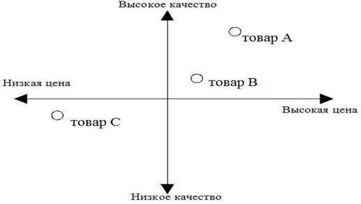
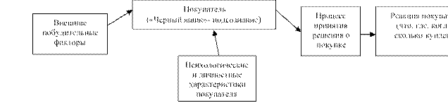
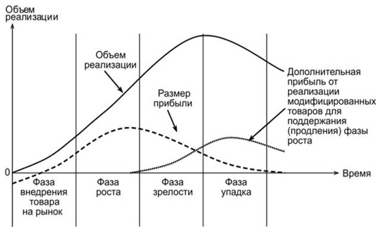
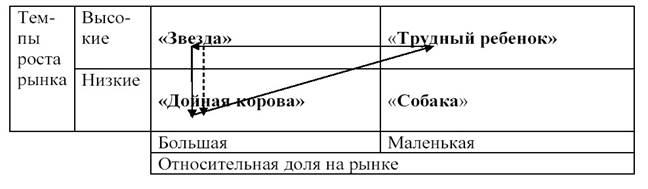
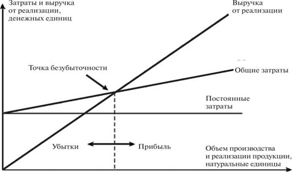
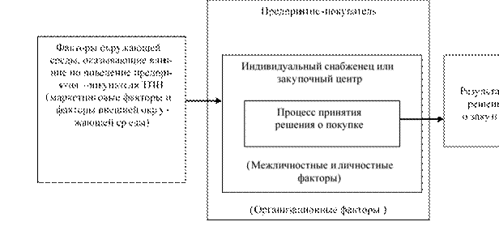
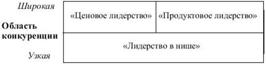

Нарықтық қатынастардың қалыптасуы шаруашылық қызметте маркетингті кеңінен қолдану қажеттілігін алдын ала анықтайды. Меншік нысаны мен ұйымдық құрылымына қарамастан жоғары нарықтық бәсеке жағдайында табысты жұмыс істеу кәсіпорынның мақсатты нарық қажеттіліктерін неғұрлым толық зерттеуге, тұтынушылардың қажеттіліктерін барынша қанағаттандыратын бәсекеге қабілетті өнім шығаруға бағыттауды талап етеді.
Маркетинг экономика және кәсіпорынды басқару саласындағы мамандар сияқты кәсіби нарық тұлғалары үшін іргелі пәндердің бірі болып табылады. Олар нарықты бағалауды және оны сегменттерге бөлуді, тұтынушылардың қажеттіліктерін, сұраныстары мен қалауларын анықтауды, жаңа өнімді қалай жобалауды және сынауды, тиімді делдалдарды қалай таңдауды, жарнамалық кампанияны әзірлеуді, оның орналасуын және жылжытылуын қамтамасыз етуді білуі керек. мақсатты нарықта.
Оқу пәнін оқудың мақсаты маркетингтің мәнін ашу және оны басқару іс-әрекетінде қолдану мүмкіндіктерін көрсету, болашақ мамандарға білім беру, маркетинг әдіснамасы саласында дағдыларды дарыту, сонымен қатар маркетинг әдістемесін қолдану мүмкіндіктерін көрсету болып табылады. практикалық іс-әрекетте алған білімдері.
Оқу пәнін оқу алдында тұрған міндеттер:
– маркетинг концепциясын қолданудың теориясы мен тәжірибесі саласында кәсіби құзыреттілігін қалыптастыру; маркетинг құралдарын қолдану; бағаны қалыптастыру және басқару, маркетингтік стратегияларды әзірлеу және жүзеге асыру;
– кәсіпорынның маркетингтік қызметінің мазмұны бойынша білім алу; маркетингтік ортаны зерттеу ерекшеліктері; мақсатты нарықты зерттеу және таңдау тәртібі; тауарларды жылжыту және тарату; кәсіпкерлік қызметтің маркетингтік стратегиялары; бағаны басқару.
Экономистерді дайындау кезінде маркетингтік іс-әрекетті зерделеу, оларға экономикалық мәдениеттің ерекшеліктерін ескере отырып, нарықтық шындыққа маркетингтік теорияны қолдану бойынша нұсқаулар беру және болашақ мамандарда жаңа экономикалық ойлауды дамытуға бағытталған, ерекше маңызға ие. тұтынушылардың мәселелерін шешу кезінде шаруашылық операцияларды жүргізу бойынша білім мен дағдылардың жиынтығы . Бұл пәнді оқыту процесінде өткізілетін сабақтар мен студенттердің кәсіби дайындығының ерекшеліктері арасындағы барынша тығыз байланысты қамтамасыз ету қажет.
«Маркетинг» оқу пәні жоғары оқу орнының құрамдас пәні болып табылады және жалпы ғылыми және жалпы кәсіптік пәндер цикліне жатады. Сонымен қатар, «Маркетинг» академиялық пәні экономикалық теорияны, микроэкономиканы және басқа пәндерді зерттеуге негізделген.
Дәріс курсы Беларусь Республикасының жоғары оқу орнының оқу бағдарламасына негізделген 1-25 01 07 «Экономика және кәсіпорынды басқару» мамандығының Білім стандартына және оқу жоспарына сәйкес құрастырылған теориялық материалды қамтиды. «Маркетинг» оқу пәні бойынша, қолданыстағы нормативтік құқықтық актілер, сондай-ақ авторлардың ғылыми еңбектерін ескере отырып, И.Л. Акулич, В.А. Алексунин, Л.Е. Басовский, Е.Н. Басовская, Е.Е. Кузьмина, Н.Н. Молчанов, Е.П. Голубков, С.В. Карпова,
N.V. Немогай, А.П. Карасев және басқалар
Дәрістер курсының авторы әрбір тақырып бойынша жоғары оқу орнының студенттеріне қажетті және жеткілікті маңызды материалды таңдауға тырысты. Дәріс мәтіндері кәсіпорында маркетингті ұйымдастырудың теориялық және әдістемелік негіздерін көрсетеді; нарыққа тұтынушылардың қажеттіліктерін барынша қанағаттандыратын ең жақсы тауарлар мен қызметтерді ұсыну мәселелерін шешуге бағытталған кәсіпкерлік қызметті ұйымдастырудың ажырамас жүйесі ретінде маркетингтің мәнін, ұйымдастыру мүмкіндіктерін және ортасын зерттейді; Маркетингтегі маркетингтік зерттеулерге, өнімге, бағаға, коммуникация және тарату саясатына көп көңіл бөлінеді.
Мамандарды кәсіби даярлаудың сапасын арттыру білім беру процесінде студенттердің өзіндік жұмыстарының үлесін арттыруды көздейді. Теориялық тұрғыдан дәлелденген және эксперименталды түрде тексерілген өзін-өзі тәрбиелеуге баса назар аударудың маңыздылығы білім беру стандарттарының оқу сағатының айтарлықтай бөлігін өздігінен білім алуға бөлетіндігімен түсіндіріледі.
Бұл дайындықтың нәтижесі студенттің сабақтағы белсенділігінен және орындалған бақылау жұмыстарының, тест тапсырмаларының, жасалған есептердің және ағымдағы бақылаудың басқа нысандарының сапасынан көрінеді. Ол сонымен қатар студенттің білімін тереңдету мен бекітуге, оқу пәнінің мәселелері бойынша аналитикалық дағдыларын дамытуға бағытталған.
Ұсынылған дәрістер курсы студенттерге оқу пәнінің ағымдағы бағдарламасына сәйкес оқытылатын тақырыптардың мазмұнымен танысуға мүмкіндік береді және мүмкіндігінше әрбір жеке тұлға қабылдауды қалыптастыратын негізгілерін өз бетінше анықтай алады. лекция тиімдірек. Студенттердің дәріс курсымен өздік жұмысы сонымен қатар олардың алған білімдері мен дағдыларын бекітуге, семинарлар мен емтихандарға дайындалуға мүмкіндік береді.
1.1 Маркетингтің мәні, оның негізгі ұғымдары мен анықтамалары.
1.2 Маркетинг концепциясының эволюциясы.
1.3 Маркетингтің негізгі принциптері, мақсаттары мен функциялары.
1.4 Маркетинг түрлері.
1.5 Маркетинг кешені және оның элементтері.
1.6 Кәсіпорынның маркетингтік ортасының түсінігі. Кәсіпорынның микро- және макроортасының факторларының сипаттамасы.
Маркетинг - ұйымдардың өмір сүру және өркендеу үшін күресуде қолданатын ең күшті құралдарының бірі.
Маркетинг негізінде жатқан бастапқы идея - үнемі өзгеріп отыратын сұранысты қанағаттандыру идеясы. «Маркетинг» термині «нарық», «нарық қызметі» дегенді білдіретін «нарық» сөзіне негізделген.
Қазіргі маркетинг концепциясындағы негізгі сөздер:
– қажеттілік (бір нәрсеге қажеттілік);
– тілек (адамның мәдени деңгейіне сәйкес белгілі бір формаға ие болған қажеттілік),
– сұраныс (ақшамен қамтамасыз етілген қажеттілік);
– өнім (бұл кейбір қажеттіліктерді қанағаттандыра алатын барлық нәрсе);
– айырбастау (біреудің орнына бірдеңе ұсына отырып, одан қалаған тауарды алу тәсілі);
– мәміле (екі тарап арасындағы сауда операциясы, оның ішінде оның орындалу шарттары, шарттары және орны туралы келісім);
– нарық (кез келген өнімді бар немесе әлеуетті сатушылар мен сатып алушылардың жиынтығы, яғни мәмілелер жасалатын орын).
Осыдан, қажеттілік қаржылық мүмкіндіктерді ескере отырып, нақты өнімдерге нарықтық сұранысқа айналатын нақты тілектерге әкеледі; өндіруші мен тұтынушы арасында белгілі бір мәміле түрінде ресімделетін айырбас жүреді.
Қазіргі уақытта «маркетинг» түсінігінің көптеген анықтамалары бар:
– маркетинг – алмасу арқылы қажеттіліктер мен қажеттіліктерді қанағаттандыруға бағытталған адам қызметінің түрі;
– маркетинг – бұл жеке немесе әлеуметтік қажеттіліктерді қанағаттандыру үшін өнімді әзірлеуге, жасауға және сатуға байланысты жүйелі қызмет;
– маркетинг – бұл тұтынушылардың нақты топтарының тез өзгеретін әртүрлі қажеттіліктерін барынша толық қанағаттандыруға және осы негізде тұрақты пайда алуға ықпал ететін бәсекелестік артықшылықтарға қол жеткізуге бағытталған өндіріс пен өткізуді ұйымдастыру жүйесі.
Маркетинг концепциясы АҚШ-та 19-20 ғасырлар тоғысында өндірілген өнімді өткізуге байланысты ірі кәсіпорындар тап болған маркетинг мәселелеріне қолданбалы зерттеулер түрінде пайда болды. Ал маркетинг өзінің дамуында концепция ретінде келесі кезеңдерден өтті:
– өндіріс концепциясы (1860–1920), немесе өндірісті жетілдіру тұжырымдамасы. Оған сәйкес тұтынушылар кең тараған және бағасы қолжетімді тауарларға қолайлы болады (басты мақсат – өндірісті жақсарту, сату көлемін арттыру, пайданы көбейту);
– өнім концепциясы (1920–1950). Тұтынушылар жоғары сапалы, ең жақсы өнімділік қасиеттері мен сипаттамалары бар өнімге қолайлы (негізгі мақсат - өнімнің тұтынушылық қасиеттерін жақсарту, яғни сапалы тауар өндіру);
– сату концепциясы (1930–1950). Тұтынушы компанияның тауарын ілгерілетуге және сатуға жеткілікті күш салмаса, оны жеткілікті мөлшерде сатып алмайды (негізгі мақсат тауарды өткізуді белсендіру, яғни сату желісін, тарату арналарын дамыту);
– дәстүрлі маркетинг концепциясы (1960–1980). Кәсіпорынның табыстылығы оның тұтынушылардың қажеттіліктерін қаншалықты зерттейтініне және бәсекелестеріне қарағанда оларды қанағаттандырудың тиімді әдісіне (негізгі мақсат – мақсатты нарықтардың қажеттіліктерін қанағаттандыру, яғни тұтынушыға қажет нәрсені өндіру) байланысты.
– әлеуметтік және этикалық маркетинг концепциясы (1980–1995). Кәсіпорынның қызметінде үш тармақты ескеру қажет: тұтынушылардың қажеттіліктері, кәсіпорынның мақсаттары және қоғамның әл-ауқаты (басты мақсат - сақтауды ескере отырып, мақсатты нарықтардың қажеттіліктерін қанағаттандыру. адам, материалдық, энергетикалық және басқа ресурстар мен қоршаған ортаны қорғау);
– интерактивті маркетинг тұжырымдамасы (1995 жылдан қазіргі уақытқа дейін). Маркетингті басқару объектісі тұтынушылармен және басқа нарық субъектілерімен қарым-қатынастар болып табылады (негізгі мақсат – тұтынушылардың қажеттіліктерін қанағаттандыру, олардың коммерциялық және коммерциялық емес өзара әрекеттесу процесінде серіктестер мен мемлекеттің мүдделері).
Современная концепция маркетинга предполагает:
– тұтынушылардың қажеттіліктері мен талаптарын толық анықтау;
– тұтынушыға қажет өнімді, тиісті орауышпен және сервиспен әзірлеу және өндіру;
– тұтынушыға қолайлы және өндірушіге жеткілікті пайда беретін бағаларды белгілеу;
– сатып алушы үшін қолайлы уақытта және орында қажетті мөлшерде өндірілген тауарларды жеткізу;
– өнімді жылжыту, оның ішінде жарнама, жеке сату, сатуды ынталандыру, өнім немесе компания туралы жағымды әсер қалдыру; – қызмет көрсетуді ұйымдастыру.
Маркетинг принциптері - маркетингтің негізінде жатқан және оның мәні мен мақсатын ашатын негізгі ережелер, талаптар. Негізгілері:
– тұтынушылардың қажеттіліктерін, нарықтық жағдайды және кәсіпорынның нақты мүмкіндіктерін нақты білу негізінде өнім өндіру;
– тұтынушылардың қажеттіліктерін барынша толық қанағаттандыру, оларға сұранысты қанағаттандыратын тауарлармен және қызметтермен қамтамасыз ету;
– белгілі бір нарықтарда өнімдер мен қызметтерді жоспарланған көлемде және жоспарланған мерзімде тиімді сату;
– нарықтық жаңа тауарлар өндірісін дайындау үшін ғылыми-техникалық идеялар мен әзірлемелердің белгілі бір артта қалуын қалыптастыруды көздейтін кәсіпорынның ұзақ мерзімді табыстылығын қамтамасыз ету;
– өзгермелі нарық конъюнктурасы мен тұтынушылық сұранысқа жылдам бейімделуді қамтамасыз ету мақсатында компанияның стратегиясы мен тактикасының бірлігі мен сабақтастығы.
Мемлекеттің маркетинг саласындағы мақсаттары: – максималды тұтыну;
– өмір сапасын барынша жақсарту.
Тұтынушыларға арналған маркетингтің мақсаттары:
– тауарлардың барынша кең таңдауын қамтамасыз ету; – тұтынушылардың максималды қанағаттанушылығына қол жеткізу.
Кәсіпорын тұрғысынан келесі маркетингтік мақсаттарды ажыратуға болады:
– табыстың өсуі;
– сату көлемінің өсуі;
– нарық үлесін арттыру;
– кәсіпорынның және оның өнімдерінің имиджін, атағын жасау және жақсарту.
Принциптер мен мақсаттар маркетингтік функцияларды - маркетингті ұйымдастыру және жүзеге асыру процесінде жүзеге асырылатын мамандандырылған қызметтің жеке түрлері немесе кешендерін құрайды.
Біріктірілген маркетинг функцияларының төрт блогын ажыратуға болады:
– аналитикалық функция (сыртқы және ішкі ортаны, нарық жағдайын, сатып алушыларды, тауарлар мен қызметтерді, бәсекелестерді, жеткізушілер мен делдалдарды талдау, кәсіпорынның жағдайы мен мүмкіндіктерін талдау);
– өндірістік функция (өнім әзірлеуді ұйымдастыру, оларды өндіру, логистика, сапаны басқару және дайын өнімнің бәсекеге қабілеттілігі);
– сату функциясы (өнімді тарату жүйесін ұйымдастыру, қызметтерді ұйымдастыру, сұранысты қалыптастыру және өткізуді ынталандыру жүйелері, өнім және баға саясатын жүзеге асыру);
– басқару және бақылау функциясы (стратегиялық және тактикалық жоспарлау, маркетингтік шешімдерді жүзеге асыру және бақылау, олардың тиімділігін бағалау, маркетинг қызметінің барлық аспектілері бойынша ұсыныстар әзірлеу). Маркетингтік функцияларды жүзеге асыру үшін маркетинг қызметі құрылады.
Маркетингтік қызмет түрлері келесі негізгі критерийлер бойынша жіктеледі:
Қызмет саласына байланысты:
– ұйымның маркетингі – ұйымның қолайлы имиджін құру және қолдау мақсатында жүзеге асырылатын қызмет;
– жеке тұлғаның маркетингі (жеке маркетинг) – бұл суретшілердің, саясаткерлердің, дәрігерлердің, спортшылардың, заңгерлердің танымалдылығын арттыруға көмектесетін қызмет;
- идеялар маркетингі - әдетте темекі шегуді, алкогольді тұтынуды азайту, есірткі тұтынуды тоқтату, қоршаған ортаны қорғау және т.б. сияқты әлеуметтік идеяларға қолданылады;
– орын маркетингі – клиенттердің жеке орындарға қатынасын қалыптастырады (мысалы: экономикалық қызмет аймақтарының маркетингі, демалыс орындарының маркетингі, тұрғын үй маркетингі).
Әсер ету объектісі бойынша:
- өнімге бағытталған маркетинг кәсіпорынның қызметі жаңа өнімді жасауға немесе бар өнімді жақсартуға бағытталған кезде қолданылады. Бұл жағдайда негізгі міндет тұтынушыларды жаңа немесе жетілдірілген өнімдерді сатып алуға ынталандыру болып табылады;
– тұтынушыға бағытталған маркетинг кәсіпорынның қызметі нарықтан тікелей туындайтын қажеттіліктерді қанағаттандыруға бағытталған болса қолданылады. Мұнда маркетингтің негізгі міндеті – әлеуетті қажеттіліктерді зерттеу және нарықтық «тауашаны» іздеу;
– интеграцияланған маркетинг алғашқы екі түрдің жиынтығы болып табылады және кәсіпорынның өндірістік және нарықтық мүмкіндіктерін жан-жақты талдауды қамтамасыз етеді. Қазіргі жағдайда тек осы тәсіл ғана кәсіпорынның нақты коммерциялық табысын қамтамасыз ете алады.
Сұраныс бойынша нарықтағы нақты жағдайға байланысты:
– конверсиялық маркетинг теріс сұраныстың болуымен байланысты. Теріс сұраныс жағдайында маркетингті басқарудың міндеті тиісті тауарларға (қызметтерге) сұранысты қалыптастыруға көмектесетін маркетинг жоспарын әзірлеу болып табылады;
– ынталандыру маркетингі тұтынушылардың толық немқұрайлылығы немесе қызығушылықсыздығынан сұраныс жоқ тауарлар мен қызметтердің болуымен байланысты;
– дамушы маркетинг тауарларға (қызметтерге) сұраныстың пайда болуымен байланысты. Маркетингтің бұл түрін басқару әлеуетті сұранысты нақты сұранысқа айналдырудан тұрады;
– қайта маркетинг. Тауарлардың барлық түрлеріне сұраныс олардың өмірлік циклінің белгілі бір кезеңінде азаяды. Ремаркетингтің мақсаты – жаңа маркетинг мүмкіндіктерін пайдалана отырып, сұранысты жандандыру, мысалы, өнімнің немесе қызметтің жаңа нарықтық қасиеттерін беру арқылы оның өмірлік циклін ұзарту;
– синхромаркетинг өзгермелі сұраныс жағдайында | | | | | | | | | | | | | | | | | | | | | | | | | | | | | | |
– қолдаушы маркетинг тауарларға (қызметтерге) сұраныс деңгейі мен құрылымы ұсыныс деңгейі мен құрылымына толық сәйкес келген жағдайда қолданылады;
– демаркетинг өнімге (қызметке) сұраныс ұсыныстан шамадан тыс асып кеткен жағдайда қолданылады;
– қоғам мен тұтынушы тұрғысынан қисынсыз деп есептелетін сұранысты азайту үшін қарсы маркетинг қолданылады (мысалы, алкогольдік сусындар, темекі өнімдері).
Кәсіпорынның мақсаттарына байланысты:
– коммерциялық маркетинг (мақсаты пайда табу болып табылатын ұйымдарда жүзеге асырылады);
– коммерциялық емес маркетинг (мектептерде, ауруханаларда және т.б. жүзеге асырылады).
Аумақтық принцип бойынша:
– халықаралық маркетинг (экспорттық, жаһандық, әлемдік), кәсіпорындар өз мемлекетінен тыс тауарлар мен қызметтерді сатқанда; – ұлттық маркетинг (аймақтық, жергілікті).
Егер маркетинг жеке ұйымдар деңгейінде жүзеге асырылса, ол микромаркетинг, ал мемлекет және аймақтар деңгейінде болса - макромаркетинг деп аталады.
Маркетинг кешені - бұл мақсатты нарықтан жауап алу үшін фирма бірге қолданатын бақыланатын маркетингтік айнымалылар жиынтығы; Бұл белгілі бір компания өз өнімін нарықта жылжыту үшін орындай алатын әрекеттер.
Маркетинг-микс тұжырымдамаларының бірі (4P немесе маркетинг-микс, Нил Борден) 4 компонентті қамтиды:
1) "өнім" (өнім);
2) «баға»;
3) «тауарларды өткізу орны» (орын);
4) «ынталандыру әдістері», жылжыту.
"Өнім" элементі келесі құрамдастарды қамтиды:
– Өнімнің өзі сатуға ұсынылатын өнімнің, қызметтің немесе идеяның қасиеттерінің жиынтығы.
– Сауда белгісі – тұтынушылардың санасында орналасқан компанияның немесе өнімнің символы.
– Қаптама – сатып алушылар мен контрагенттерді ынталандыру құралы.
– Қызметтер – сатуға ұсынылатын немесе өнімді сатуға байланысты ұсынылатын жеңілдіктер немесе ыңғайлылықтар.
– Кепілдік – өнімнің мақсатына сәйкестік дәрежесі.
– Қызмет – тұтынушыларды қанағаттандыратын кепілдік қызметі.
"Баға" элементі келесі құрамдастарды қамтиды:
– Баға белгілеу – бұл өнімнің бағасын орнатуға қатысты әрекет.
– Жеңілдік – сатуды ынталандыру мақсатында өнімнің сұраныс бағасының төмендеуі.
“Сату” немесе “тарату” элементі мыналарды қамтиды:
– Сату арналары (өнімді тарату, тарату) – өнім жеткізушіден соңғы тұтынушыға дейінгі жол.
– Өткізу процесі – бұл тауардың өндіріс орнынан тұтыну орнына дейінгі нақты қозғалысы.
"Байланыс" немесе "жарнама" элементі келесі құрамдастарды қамтиды:
– Жарнама – сатушы төлейтін өнімді немесе қызметті жеке емес жарнамалау.
– сатуды ынталандыру – персонал мен мердігерлердің жұмысын ынталандыруға бағытталған кез келген басқа қызмет.
– Жеке (тікелей) сату – сатушы мен сатып алушылар арасындағы жеке байланыс арқылы тауарларды сату.
– Қоғаммен байланыс – бұл компанияның немесе брендтің қолайлы имиджін жасауға бағытталған қызмет.
1960 жылдан бастап маркетинг тәжірибесі тағы екі «R» элементін қарастырды:
«адамдар» (адамдар) және «процестер» (процестер). Бірінші элемент маркетингтік стратегия мен тактиканы жүзеге асырудағы адам факторының маңыздылығын көрсетеді (Маккартни), екіншісі әлеуметтік және этикалық маркетинг мәселелерімен байланысты.
Содан кейін алты, жеті, сегіз, тоғыз «П» ережелерін белгілеу туралы ұсыныстар болды: жеке (компания қызметкерлерінің кәсіби дайындығы), пакет (орауы немесе өнімнің сыртқы түрі), сатып алу (сатып алу), зонд (зерттеу) ), паблик рилейшнз (қоғамдық рилейшнз – сыртқы орта субъектілерімен және жұртшылықпен өзара әрекеттесуді ұйымдастыру).
1.6 Кәсіпорынның маркетингтік ортасының түсінігі.
Маркетингтік орта – бұл кәсіпорыннан тыс оның стратегиясына әсер ететін белсенді факторлардың жиынтығы. Ол өзгергіштік пен белгісіздік қасиеттеріне ие, мүмкіндіктер мен қауіптерді қамтиды. Маркетинг ортасы микро және макро орталардан тұрады.
Микроорта кәсіпорынмен тікелей байланысты факторлармен ұсынылған. Макроорта кеңірек әлеуметтік жоспардың факторларымен ұсынылған.
Кәсіпорынның микроортасының негізгі факторлары:
1. Жабдықтаушылар – кәсіпорынды қажетті материалдық-техникалық ресурстармен қамтамасыз ететін кез келген нарық субъектілері.
2. Делдалдар – кәсіпорынға тауарларды жылжытуда, сатуда және таратуда көмектесетін заңды немесе жеке тұлғалар.
Выделяют следующие виды маркетинговых посредников:
– делдалдар тұтынушыларға қызмет көрсетуге немесе оларға тауарларды тікелей сатуға көмектеседі (дилерлер, дистрибьюторлар, тарату желісі);
– логистикалық делдалдар тауарлық-материалдық қорларды жасауға және оларды өндіріс орнынан тағайындалған жерге көшіруге көмектеседі (экспедиторлық компаниялар, қоймалар, логистикалық операторлар);
– маркетингтік қызмет агенттіктері өнімді қолайлы нарықтарға жылжытуға көмектеседі (маркетингтік кеңес беру және зерттеу, жарнама агенттіктері);
– қаржы институттары компанияның қызметін қаржыландыруға және тәуекелдерден сақтандыруға көмектеседі (банктер, несиелік компаниялар, сақтандыру компаниялары); – аудиторлық фирмалар.
3. Бәсекелестер – ұқсас өнім шығаратын, алмастыратын өнімдерді шығаратын немесе басқа өндірушілермен бір нарықта жұмыс істейтін жеке немесе заңды тұлғалар (қарсыластар).
4. Клиенттер компания тауарларының сатып алушылары (тұтынушылары) болып табылады. Клиенттер нарығының 5 түрі бар:
– тұтынушылық (бөлшек) нарық жеке тұтыну үшін тауарлар мен қызметтерді сатып алатын жеке тұлғалармен ұсынылған;
– өндіруші нарығын өндіріс процесінде одан әрі пайдалану үшін тауарлар мен қызметтерді сатып алатын ұйымдар мен кәсіпорындар көрсетеді;
– делдалдық нарық пайда табу мақсатында тауарлар мен қызметтерді кейіннен қайта сату үшін сатып алатын ұйымдардан тұрады;
– мемлекеттік нарық – бұл тауарлар мен қызметтерді мемлекеттік қызмет көрсету секторына жіберу және/немесе мұқтаждарға беру үшін сатып алатын мемлекеттік ұйымдар;
– халықаралық нарық елден тыс жерде орналасқан тауарлар мен қызметтердің барлық әлеуетті тұтынушыларын (соңғы немесе аралық) біріктіреді. Бұл тұтынушылар жоғарыда аталған нарықтардың барлығында жұмыс істей алады.
5. Байланыс аудиториясы – бұл кәсіпорынға нақты немесе әлеуетті қызығушылық танытатын немесе оның іскерлік белсенділігіне, тиімділігіне және мақсаттарына жету қабілетіне әсер ететін кез келген жеке тұлғалар немесе әлеуметтік топтар. Байланыс аудиториясына мыналар жатады:
– компанияның қызметін қаржылық ресурстармен қамтамасыз ететін қаржы топтары (қаржы компаниялары, банктер, брокерлік фирмалар және басқа да қаржы-несие мекемелері);
– әртүрлі ұйымдардың қызметі туралы ақпаратты тарататын БАҚ. Компания шындықтың объективті көрінісін қамтамасыз ету үшін олардың ықыласына ие болуға ұмтылуы керек;
– мемлекеттік органдар. Ұйымның жұмыс істеуі мемлекеттік органдардың нормативтік құқықтық актілерінде және басқа да шешімдерінде көзделген шарттарға сәйкес келуін қамтамасыз ету үшін қоғам қызметінде қоғамдық саланың ерекшеліктері әрқашан ескерілуі тиіс;
– жалпыға ортақ. Кәсіпорынның қызметі үнемі халықтың жіті назарында. Сондықтан басшылық кәсіпорынның өзінің де, оның тауарлары мен қызметтерінің де пікірін үнемі бақылауда ұстауы керек;
– қызметкерлер, компания қызметкерлері. Олардың өз міндеттеріне қатынасы қызметкерлердің өз ұйымының қызметі туралы пікіріне байланысты. Сонымен қатар, кәсіпорынның өз қызметкерлерінің алдында жақсы имиджі басқа байланыс аудиторияларына жақсы әсер етеді.
Макроорта - оның микроортасының барлық элементтеріне әсер ететін факторлар. Олардың әсері бір жақты, ал компания тек қоршаған орта жағдайларына бейімделе алады. Кәсіпорынның макроортасының негізгі факторлары:
1. Демографиялық факторлар – олар мынадай көрсеткіштермен сипатталады: халықтың жалпы саны, оның жас және жыныстық құрамы; халықтың көші-қоны, жалпы халық санының өсуі мен төмендеуі, туу және өлім, күтілетін өмір сүру ұзақтығы және неке, отбасының өмірлік циклі, денсаулық деңгейі туралы деректер.
2. Экономикалық факторлар – олар мынадай көрсеткіштермен сипатталады: сатып алу қабілетінің деңгейі және оны анықтайтын себептер; ағымдағы кірістер мен шығыстардың сомасы, баға деңгейі, жинақ сомасы, несиенің болуы.
3. Табиғи факторлар – олар мынандай көрсеткіштермен сипатталады: қоршаған ортаның жағдайы, табиғи және энергетикалық ресурстардың болуы және олардың оңтайлы бағасы.
4. Ғылыми-техникалық факторлар – олар мынадай көрсеткіштермен сипатталады: ғылыми-техникалық прогресті жеделдету, ҒЗТКЖ-ға бөлінген қаражаттың өсуі; тауарлардың сапасына мемлекеттік бақылауды күшейту.
5. Саяси-құқықтық факторлар – олар келесідей көрсеткіштермен сипатталады: кәсіпкерлік қызметті реттейтін заңнамалық актілер; заңдардың орындалуын бақылау; тұтынушылардың мүдделерін қорғау үшін әртүрлі қоғамдық ұйымдардың болуы.
6. Мәдени даму факторлары – олар мынадай көрсеткіштермен сипатталады: дәстүрлі мәдени құндылықтарды ұстану, адамдар арасындағы қарым-қатынас, адамдардың өзіне, қоғамдық институттарға, қоғамға, табиғатқа қатынасы.
Өзін-өзі бақылауға арналған сұрақтар
1. Маркетингтің мәні мен мазмұнын сипаттаңыз.
2. Маркетинг концепциясының қалыптасуы мен дамуының негізгі кезеңдерін талдаңыз.
3. Маркетинг-микстің элементтерін («4 Ps» немесе «7 Ps») қарастырыңыз.
4. Өзіңіз білетін маркетинг түрлерін сипаттаңыз.
5. Маркетингті дамыту шарттарын қарастырыңыз.
6. Кәсіпорынның маркетингтік ортасы қандай?
2.1 Маркетингтік ақпарат, оның рөлі және түрлері.
2.2 Маркетингтік зерттеулердің мәні, оның негізгі кезеңдері.
2.3 Үстелдік және далалық зерттеулер. Маркетингтік ақпаратты жинау әдістері.
2.4 Бенчмаркинг маркетингтік зерттеулердің функциясы ретінде.
2.5 Нарықты сегменттеу түсінігі мен мәні.
2.6 Нарықты сегменттеу белгілері.
2.7 Мақсатты нарық сегментін таңдау.
2.8 Нарықтағы өнімді позициялаудың мәні.
Маркетингтік қызметті жүзеге асыру әртүрлі ақпаратты пайдалануға негізделген.
Маркетингтік ақпарат маркетингтік әрекеттерді талдау және болжау үшін қажетті фактілерді, ақпаратты, қауесеттерді, болжамдарды, сандарды және басқа деректерді білдіреді.
Маркетингтік ақпаратқа келесі талаптар қолданылады:
1) өзектілігі (уақтылығы);
2) сенімділік (жалған деректерді алып тастау);
3) өзектілік (өзектілігі, мәселеге қатыстылығы);
4) көрсетудің толықтығы (барлық факторларды объективті түрде ескеру қажеттілігі);
5) фокус (ақпараттың маркетинг қызметінің мақсаттары мен міндеттеріне сәйкестігі);
6) дәйектілік (қайшылықты тұжырымдар мүмкіндігін қоспағанда).
Маркетингтік ақпарат келесі критерийлер бойынша жіктеледі:
1) уақыт бойынша: алдыңғы кезеңдер, ағымдағы, болжам;
2) егер сандық бағалау мүмкін болса: сандық (сандық мәндерде, мысалы, нарық сыйымдылығы, нарық үлесі, баға және т.б.), сапалық (сапалық сипаттамаларда, мысалы, жынысы бойынша тұтынушылардың құрамы, кәсібі, тұрғылықты жері және т.б.);
3) пайда болу жиілігі бойынша: тұрақты, ауыспалы, эпизодтық;
4) табиғаты бойынша: демоскопиялық (тұтынушының өзі туралы мәліметтерді қамтиды, мысалы, жынысы, жасы, ұлты, әлеуметтік жағдайы, табыс деңгейі және т.б.), экоскопиялық (жалпы экономикалық жағдай, нарық жағдайы, баға туралы ақпаратты қамтиды. деңгейлері және т.б.);
5) көздері бойынша: негізгі, қосымша.
Сәтті жұмыс істейтін кәсіпорындарда маркетингтік ақпарат маркетингтік ақпараттық жүйе (МИС) шеңберінде жинақталады, талданады және таратылады.
MIS – маркетингтік шешімдерді дайындау және қабылдау үшін қажетті ақпаратты жинауға, өңдеуге, талдауға және таратуға арналған қызметкерлердің, жабдықтардың, процедуралар мен әдістердің жиынтығы (бірыңғай кешен).
MIS ішкі және сыртқы көздерден алынған деректерді менеджерлер мен маркетинг мамандарына қажетті ақпаратқа түрлендіреді.
MIS мыналарға арналған: маркетингтік ақпаратты жинау және талдау; кәсіпорынның нарықтық мүмкіндіктерін анықтау; өнім, өткізу арналары, тұтынушылар, бәсекелестер туралы ақпараттың айтарлықтай көлемін ұтымды пайдалану, болжамдарды, жоспарларды және маркетингтік бағдарламаларды үйлестіру; жоспарлар мен маркетингтік стратегиялардың орындалуын бағалау.
Тиімді маркетингтік стратегияны әзірлеу, оның сәттілігін бақылауды және әрекеттерді уақтылы түзетуді қамтамасыз ету үшін өзекті ақпараттың болуы маңызды. Мұны маркетингтік зерттеулер арқылы алуға болады.
Маркетингтік зерттеулер – маркетингтік шешімдер қабылдаумен байланысты белгісіздікті азайту мақсатында деректерді жинау, өңдеу және талдау.
Толық нарықты зерттеу нарықты таңдау кезінде тәуекелдерді азайтуға мүмкіндік береді. Нарық, бәсекелестер, тұтынушылар, бағалар, кәсіпорынның ішкі әлеуеті зерттеуге жатады.
Маркетингтік зерттеулердің нақты нәтижесі кәсіпорынның маркетингтік қызметінің стратегиясы мен тактикасын таңдау және жүзеге асыруда қолданылатын әзірлемелер болып табылады.
Маркетингтік зерттеулердің негізгі бағыттары:
нарықты, сатып алушыларды, бәсекелестерді, тауарларды, бағаларды зерттеу, тауарды тарату және жылжыту саясатын зерттеу.
Маркетингтік зерттеулер 3 негізгі функцияны орындайды:
- сипаттамалық (зерттеуші кейбір құбылыстар туралы ақпарат жинап, оларға мінездеме береді);
– аналитикалық (зерттеуші құбылыстың неге мұндай деңгейге жеткенін және оның дамуына қандай факторлар әсер еткенін анықтайды);
– болжамдық (зерттеуші оқиғалардың одан әрі дамуын болжайды).
Осылайша, маркетингтік зерттеудің мақсаты кәсіпорынның маркетингтік қызметін ақпараттық және аналитикалық қамтамасыз ету болып табылады:
a) макродеңгейде – нарық конъюнктурасын, заңдылықтарын және трендтерді талдау
оны әзірлеу;
b) микро деңгейде – компанияның өз мүмкіндіктерін талдау және болжау
қабылдау (оның бәсекеге қабілеттілігі, жағдайы және кәсіпорын жұмыс істейтін нарық сегментінің даму болашағы).
Әрбір нақты жағдайда маркетингтік зерттеулердің құрылымы жеке, бірақ міндетті түрде алты кезең бар:
1-кезеңде зерттеуді жүргізу қажеттілігі негізделеді.
2-кезеңде зерттеу мақсаты қалыптасады, міндеттер нақтыланады, зерттеу жұмысының сметасы жасалады.
3-кезеңде ақпарат көздері мен оны жинау әдістері анықталады.
4-кезеңде – мәліметтерді өңдеу, олар арнайы кестелерге ұйымдастырылады.
5-ші кезеңде есеп құрастырылады. Онда қандай ұсыныстар қалыптасатынын ескере отырып, оң және теріс аспектілер туралы мәлімдеме бар.
6-кезеңде зерттеу нәтижелері бойынша кемшіліктерді жою бойынша тиісті шешімдер қабылданады.
Маркетингтік зерттеулер әрқашан белгілі бір мәселені анықтауға және шешуге бағытталған.
Зерттеудің нәтижесі – қорытындылар мен ұсыныстарды әзірлеу. Олар әзірлемелердің нәтижелерінен тікелей шығуы, дәлелді және сенімді болуы, зерттелетін мәселелерді шешуге бағытталған болуы керек.
Ғылыми есепте (баяндама) келесі мәліметтер болуы керек: зерттеу мақсаты; зерттеу кім үшін және қалай жүргізілді; сауалнама үлгісінің сипаттамасы, өткізу уақыты, ақпарат жинау әдісі; сауалнама; орындаушылар, кеңесшілер туралы мәліметтер; ақпарат көздері, олардың кабинеттік зерттеу жүргізу кезіндегі сенімділігі.
Барлық осы зерттеулердің мақсаты маркетинг қызметін жақсарту бойынша ұсыныстар әзірлеу болып табылады. Нарықты зерттеу айналым шығындарын талдаумен аяқталады, яғни жарнамалық шығындар, сауда және өткізу шығындары және т.б. Содан кейін бұл шығындар пайдамен салыстырылады, нәтижесінде экономикалық тиімді шығындар белгіленеді және осының негізінде сауда және маркетинг қызметінің табыстылығы артады.
2.3 Үстелдік және далалық зерттеулер.
Маркетингтік зерттеулер жалпы ғылыми және аналитикалық болжау әдістеріне негізделген. Ақпараттық қамтамасыз ету үстелдік және далалық зерттеулерден, сондай-ақ әртүрлі ақпарат көздерінен (ішкі және сыртқы, меншікті және ақылы және т.б.) тұрады.
МИ-нің 2 негізгі әдісі бар (ақпаратты жинау әдістері):
– бастапқы ақпаратты пайдаланатын далалық зерттеу, яғни. тікелей зерттеуші жинаған; бастапқы ақпаратты жинау мақсатында жүзеге асырылады.
– қосымша ақпаратты пайдаланатын үстелдік зерттеу, т. қазірдің өзінде қол жетімді (әдетте жарияланады); нарықты зерттеуден басқа мақсаттар үшін ішкі және сыртқы көздерден бұрын жиналған деректерді талдауды қамтиды.
Нақты өмірде маркетингтік зерттеулердің көпшілігі үстелдік және далалық зерттеулерді жүргізуді қамтиды. Бұл жағдайда үстелдік зерттеулер үлкен шығындарды талап ететін далалық зерттеулерден бұрын болуы керек.
Бастапқы деректерді жинаудың негізгі әдістері:
– сауалнама – бұл әдіс объектіге қатысты адамдардың субъективті пікірлерін анықтауға мүмкіндік береді. Сауалнама мазмұны зерттеу мәселесін білдіретін сұрақтары бар тұтынушылар мен кәсіпорын қызметкерлеріне ауызша немесе жазбаша өтінішке негізделген;
– бақылау – зерттеу объектісінің табиғи ортадағы мінез-құлқын зерттеу;
– эксперимент – арнайы жасалған жағдайларда объектінің мінез-құлқын зерттейтін және бір мезгілде бөгде факторларды басқара отырып, бір фактордың екіншісіне әсерін зерттейтін маркетингтік ақпаратты жинау әдісі (мысалы, өнімді өткізуді ұлғайту мүмкіндігін зерттеу) бөлшек сауда бағасы өзгергенде);
-еліктеу (фокустау) нақты жағдайды сипаттайтын модельді әзірлеу мен талдаудан тұрады. Проблеманы талқылау үшін кәсіби психологтың жетекшілігімен арнайы фокус-топтар (8–12) адамдар таңдалады. Фокус-топтар өнімнің нақты немесе әлеуетті тұтынушыларынан, сарапшылардан немесе беделді адамдардан тұруы мүмкін.
Бенчмаркингті салалық, салааралық, ұлттық және халықаралық деңгейдегі серіктестер мен бәсекелестердің үздік тәжірибесіне негізделген бизнес-стратегия туралы ұзақ мерзімді ойлауға арналған процесс, әрекет ретінде қарастыруға болады.
Компанияның және оның өнімдерінің нарықтағы мінез-құлқына, серіктестермен және бәсекелестермен өзара әрекеттесуіне әсер ететін немесе әсер етуі мүмкін сыртқы факторларды пайдалану қажеттілігіне байланысты тәжірибе нәтижелерін анықтау және іздеумен байланысты философия мен функция қажет болды. серіктестер мен бәсекелестердің компаниялары және олармен байланысты салалардағы өнімділікті арттыру үшін оларды өз компанияларында пайдалану мақсатында.
Бенчмаркинг маркетингтік интеллект тұжырымдамасына жақын. Дегенмен, маркетингтік интеллект сыртқы маркетингтік ортадағы өзгерістер туралы құпия (жартылай құпия) ақпаратты жинау болып табылады.
Бенчмаркингті пайдалану көп бағытты. 70-жылдардың ортасынан бері болса да. Ол бәсекелестік талдаудың бір бөлігі ретінде жүзеге асырылды, бүгінгі күні бенчмаркинг нарықта ұзақ мерзімді қатысуға кепілдік беру үшін өздерінің және аралас салалардағы көшбасшылармен салыстырғанда стратегиялар мен тиімділік мақсаттарын бағалау тәсілі ретінде өзін сәтті көрсетті.
Бенчмаркинг (ағылш. bench - орын, marking - белгілеу) - бизнес субъектілерінің, ең алдымен бәсекелестердің оң тәжірибесін өз жұмысында пайдалану мақсатында олардың қызметін зерттеу тәсілі.
Бенчмаркинг басқа адамдардың тәжірибесінің барлық артықшылықтарын жүйелі түрде табуға, бағалауға және олардың жұмысыңызда пайдалануын ұйымдастыруға мүмкіндік беретін құралдар жиынтығын қамтиды.
Бенчмаркинг екі түрлі болады: жалпы және функционалды.
Жалпы салыстыру - белгілі бір өндірушінің өнімін өндіру және сату көрсеткіштерін ұқсас өнімді сатушылардың жеткілікті көп санының іскерлік көрсеткіштерімен салыстыру. Мұндай салыстыру инвестициялық қызметтің нақты бағыттарын белгілеуге мүмкіндік береді. Өнім сипаттамаларын салыстыру үшін пайдаланылатын параметрлер нақты өнім түріне байланысты.
Функционалдық салыстыру - өндірушінің (сатушының) жекелеген функцияларының жұмыс параметрлерін (мысалы, операциялар, процестер, жұмыс әдістері және т.б.) ұқсас жағдайларда жұмыс істейтін ең табысты кәсіпорындардың (сатушылар) ұқсас параметрлерімен салыстыруды білдіреді.
Нарық қызметінде сегменттеу (немесе сегменттеу) түсінігі үлкен маңызға ие.
Нарықты сегменттеу - бұл нарықты сатып алушылардың нақты топтарына (сегменттеріне) бөлу, олардың әрқайсысы жеке өнімдерді қажет етуі мүмкін.
Нарық сегменті - белгілі бір сипаттамалары бар нарықтың арнайы таңдалған бөлігі (тұтынушылар тобы).
Нарықты сегменттеудің мақсаты - тұтынушылардың әрбір тобы үшін тауарларға ең маңызды қажеттіліктерді анықтау және олардың қызметін сұранысты қанағаттандыруға бағыттау.
Нарықты сегменттеу мыналарға мүмкіндік береді:
– өнімді тұтынушы қалауын ескере отырып бейімдеу;
– өнімнің бәсекеге қабілеттілігін арттыру және оны өндірушінің бәсекелестік артықшылықтарын нығайту;
– бәсекелестер пайдаланбаған нарық сегментіне өту арқылы бәсекелестік деңгейін төмендету;
– компанияның ғылыми-техникалық, өндірістік және коммерциялық стратегиясын белгілі бір нарық сегментінің қажеттіліктерімен байланыстыру;
– барлық маркетингтік әрекеттерді белгілі бір тұтынушыға бағыттау; – маркетингтік бюджеттің шығыс бөлігін оңтайландыру.
Өнімнің белгілі бір түріне бағытталған нарық (сегмент) мақсатты нарық деп аталады. Яғни, бұл компания үшін өз қызметін шоғырландыратын ең тартымды нарық.
Сегментацияның бірнеше түрі болуы мүмкін:
1) оны жүзеге асыру сипатына қарай:
– макросегментация, оның шеңберінде нарықтар аймақ, ел, индустрияландыру дәрежесі және т.б. бойынша бөлінеді;
– неғұрлым егжей-тегжейлі критерийлер (ерекшеліктер) бойынша бір елдің немесе аймақтың тұтынушылар топтарын (сегменттерін) қалыптастыруды көздейтін микросегментация;
- терең сегменттеу, бұл жағдайда сегменттеу процесі тұтынушылардың кең тобынан басталады, содан кейін өнімнің немесе қызметтің соңғы тұтынушыларының жіктелуіне байланысты оны біртіндеп тереңдетеді;
- тұтынушылардың тар тобынан (сегментінен) басталып, содан кейін өнімнің мақсаты мен қолданылуына байланысты кеңейетін кең сегменттеу;
– алдын ала сегменттеу – нарық сегменттерінің максималды мүмкін санын зерттеуге бағытталған маркетингтік зерттеулердің бастапқы кезеңі;
– қорытынды сегменттеу – нарықты талдаудың соңғы кезеңі, оны жүзеге асыру компанияның өзінің мүмкіндіктерімен және нарықтық ортаның жағдайларымен реттеледі. Ол тұтынушылардың сұранысына және компанияның мүмкіндіктеріне сәйкес келетін өнімді орналастыру үшін нарықтың оңтайлы сегменттерін іздеумен байланысты;
2) тауарларды немесе қызметтерді тұтынушы түріне қарай тұтыну тауарларын тұтынушылар мен өндірістік-техникалық тауарларды тұтынушыларды (ПТГ) сегменттеу арасында айырмашылық жүргізіледі.
Нарықты (тұтыну тауарларын) сегменттеу кезінде келесі критерийлер қолданылады: географиялық; демографиялық; әлеуметтік-экономикалық; психографиялық (жеке); мінез-құлық.
Географиялық сегменттеу – нарықты әртүрлі географиялық аймақтарға (елдер, республикалар, қалалар, облыстар, аудандар және т.б.) бөлу. Мысалы, тон, былғары, етік - бұл барлық жерде сұранысқа ие емес тауарлар.
Демографиялық сегменттеу – нарықты тұтынушылардың жасы, жынысы, отбасылық жағдайы және т.б. ерекшеліктеріне байланысты топтарға бөлу. Мысалы, ерлер мен әйелдердің темекілері, көліктері.
Әлеуметтік-экономикалық сегменттеу – тұтынушыларды табыс деңгейі, кәсіп, білім деңгейі және әлеуметтік топқа мүшелік бойынша бөлуді қамтиды. Мысалы, білім деңгейі тиісті әдебиеттерді пайдалануды, ал әлеуметтік топқа жататындығы тиісті көлік, киім-кешек, т.б. пайдалануды болжайды.
Психографиялық сегменттеу - өмір салтына, тұлғаның ерекшеліктеріне (түріне) байланысты нарықты әртүрлі топтарға бөлу. Өмір салты тұтынушылардың уақытын не үшін өткізетінін, қалай демалатынын, қандай үйлер мен пәтерлерде тұратынын, олардың интерьері нені бейнелейтінін және хоббиін сипаттайды.
Мінез-құлық сегментациясы - тұтынушыларды олардың біліміне, көзқарасына, өнімді пайдалану сипатына, өнімге реакциясына байланысты топтарға бөлуді қарастырады.
Өнеркәсіптік тауарлар нарығы үшін келесі сегменттеу ерекшеліктерін ажыратуға болады:
– географиялық (өнімді сатып алу аймағы);
– ұйымдастырушылық (саланың түрі және компания көлемі);
– операциялық (қолдану саласы: өндірісте немесе технологиялық процесте);
– ситуациялық (төлем шарттары);
– мінез-құлық (сатып алу саясаты, оларды жүзеге асыратын сатып алушылардың жеке қасиеттері, тұтыну қарқындылығы).
Нарық түріне байланысты маркетинг түрі де өзгереді. Олар ерекшеленеді:
– жаппай маркетинг – бір тауарды бірден барлық сатып алушыларға жаппай жылжыту;
- сараланған маркетинг - қасиеттері әр түрлі (әртүрлі сапа, әр түрлі дизайн, әртүрлі қаптама және т.б.) бірнеше тауарларды өндіруде, әртүрлі талғамдағы тұтынушылар үшін әртүрлі тауарларды жасау қажет болғанда қолданылады;
– мақсатты маркетинг – тұтынушылардың белгілі бір тобына арналған тауарларды әзірлеу. Мысалы, Coca-Cola өзінің жеңіл сусыны диетаны ұстанатын тұтынушылардың қажеттіліктерін қанағаттандыру үшін жасады.
Бүгінде кәсіпорындар жаппай және өнім бойынша сараланған маркетинг әдістерінен мақсатты маркетинг әдістеріне көбірек көшуде.
Осылайша, маркетинг нарығын сегменттеу өнімді өндірушінің стратегиялық мақсаттарына (нарық үлесін ұлғайту, жаңа нарықтарды жаулап алу, бәсекелестердің позициясын әлсірету, ең маңызды нарықтардағы өз орнын сақтау және т.б.) бағындырылады. Екінші жағынан, нарықты сегменттеу нәтижелері стратегиялық мақсаттар мен міндеттерді нақтылауға және тіпті өзгертуге, кәсіпорынның маркетингтік бағдарламасына түзетулер енгізуге мүмкіндік береді.
Нысаналы нарық сегменті - маркетинг күштері бағытталатын кәсіпорын үшін ең тиімді болып табылатын бір немесе бірнеше нарық сегменттері.
Сегмент таңдау – бұл кәсіпорынның өз өнімімен қамту үшін нарық үлесін анықтау. Кәсіпорын нарыққа шығу үшін үш стратегияны қолдана алады: сараланбаған маркетинг; сараланған маркетинг; шоғырланған маркетинг.
Сараланбаған (жаппай) маркетинг – бір тауармен, бір жарнамамен бір уақытта бүкіл нарықты қызықтыру. Бұл маркетингтің ең үнемді түрі. Әдетте бастапқы кезеңде қолданылады. Мысалы, Coca-Cola компаниясы дамудың бастапқы кезеңінде барлық тұтынушыларға бірдей көлемдегі бөтелкедегі бір ғана сусын ұсынған.
Дифференциалды маркетинг – жекелеген ұсыныстары бар бірнеше нарық сегменттеріндегі өнімділік: әртүрлі өнімдер, әртүрлі жарнама. Мақсат – дамып жатқан нарық сегменттерінің әрқайсысына тереңірек ену және сату көлемін арттыру. Мысалы, General Motors «кез келген әмиянға, кез келген мақсатқа, кез келген адамға» автокөліктер шығаруға ұмтылады.
Концентрленген маркетинг – ішкі нарықтардың бірінде (шағын нарықтар) тауарлардың шоғырлануы; күш-жігерді бір немесе бірнеше нарық сегменттеріне шоғырландырады. Маркетингтің бұл түрі ресурстары шектеулі кәсіпорындар үшін қолайлы.
Маркетинг стратегиясын таңдауға кәсіпорын ресурстары, өнімнің біртектілік дәрежесі, өнімнің өмірлік циклінің кезеңдері, нарықтың біртектілік дәрежесі және бәсекелестер стратегиясы сияқты факторлар әсер етеді.
Сегментті таңдаған кезде, ең тиімді сегмент: ағымдағы сатылымның жоғары деңгейі; жоғары өсу қарқыны; пайданың жоғары деңгейі; әлсіз бәсеке.
Сегментті таңдай отырып, кәсіпорын басқа мәселені шешуі керек: бұл сегментке қалай ену керек. Егер сегментте бәсекелес болса, онда сіз өзіңіздің нарықтық тауашаны анықтап, оны толтыру шараларын қабылдауыңыз керек.
"Тауашалар" - бұл өте тар аумақ, ол әлі иеленбеген немесе бәсекелестер жеткіліксіз пайдаланатын орын. Кәсіпорын өз орнында болғаннан кейін табысты болып, тез өсе алады.
Нарық тауашасы - бұл белгілі бір компанияның өнімі және оның жеткізу мүмкіндіктері ең оңтайлы және қолайлы нарық сегменті. Көбінесе нарық тауашасы белгілі бір компания иеленген нарық сегменті ретінде түсініледі.
Нарық терезесі - бұл тиісті өнімдерді өндірушілер назардан тыс қалдырған нарық сегменттері. Бұл тұтынушылардың қанағаттандырылмаған қажеттіліктері.
Нарықты қамту стратегиясын таңдаған кезде келесі факторларды ескеру қажет: компания ресурстары; тауарлардың біртектілік дәрежесі; өнімнің өмірлік циклінің кезеңі; нарықтың біртектілік дәрежесі; бәсекелестердің маркетингтік стратегиялары.
Сегмент таңдалғаннан кейін келесі қадам өнімнің осы сегменттегі орнын анықтау болып табылады.
Тауар позициясы - бұл өнімнің маңызды сипаттамаларына қатысты тұтынушылардың белгілі бір тобының пікірі. Ол бәсекелестердің өніміне қатысты тұтынушылар санасында белгілі бір тауардың алатын орнын сипаттайды.
Тауардың нарықтағы орны 3 құрамдас бөліктен тұрады:
– орналасу атрибутын таңдау, яғни. тұтынушыға өз қажеттіліктерін барынша қанағаттандыруға мүмкіндік беретін, осы өнімді аналогтық өнімдерден ерекшелендіретін және олардың сатып алуына мотивация көзі болып табылатын өнімнің негізгі артықшылығы (бағасы, сапасы, имиджі, артықшылықтар жиынтығы, пайдалану әдісі );
– позициялау таңдалған мақсатты дәреже үшін жүзеге асырылады,
өйткені ең тартымды орналасу атрибуттары әртүрлі аудиториялар үшін әртүрлі болады;
– позициялау бірдей мақсатты нарыққа ұқсас өнімдерді ұсынатын бәсекелестердің позициясын ескеруі керек. Компания өз өнімінің бәсекеге қабілеттілігін қамтамасыз етуі керек. Мұның 2 мүмкін жолы бар:
1) өніміңізді бәсекелесіңіздің жанына орналастырып, нарықтағы үлес үшін күресуді бастаңыз;
2) нарықта әлі жоқ жаңа өнімді жасау.
Егер кәсіпорын бәсекелестеріне қарағанда жақсы қасиеттері бар өнімді жасай алатын болса, бірінші әдіс қолайлы; нарық сыйымдылығы жеткілікті үлкен және екі бәсекелесті сыйдыра алады; кәсіпорынның бәсекелесіне қарағанда көбірек ресурстары бар.
Екінші жол қиынырақ. Жаңа өнімді жасауға техникалық мүмкіндіктер, экономикалық мүмкіндіктер және жаңа өнімді сатып алушылардың саны жеткілікті болса мүмкін.
Тәжірибеде өнімнің позициялары орналасу карталары арқылы анықталады. Олар әртүрлі жұп сипаттамалардың екі өлшемді матрицасын білдіреді, мысалы, «сапа - баға» функциясы (1-сурет).

1-сурет – Өнімнің орналасу картасы
Өнімді позициялау өнімді бәсекелестік артықшылықпен қамтамасыз ету үшін қажет, яғни. бәсекелестерден артықшылығы.
Өнімді позициялаудың түпкілікті нәтижесі - бұл өнімнің құндылығы туралы идеяның сәтті қалыптасуы, яғни. мақсатты сегменттегі тұтынушылар осы нақты өнімді неліктен сатып алу керек екендігі туралы нақты мәлімдеме.
Тауардың нарықтағы орнын анықтап, компания маркетинг жоспарын жасауға кіріседі.
Өзін-өзі бақылауға арналған сұрақтар
1. Маркетингтік зерттеулердің мақсаты қандай және оның қандай кезеңдері бар?
2. Маркетингтік зерттеулер үшін ақпарат көздерін анықтаңыз және оны жинау әдістерін сипаттаңыз.
3. Нарықты сегменттеу деген нені білдіреді және сегменттеудің қандай түрлерін білесіз?
4. Мақсатты сегменттерді таңдау критерийлерін көрсетіңіз.
5. «Нарық тауашасы» және «нарық терезесі» деген нені білдіреді?
6. Мақсатты нарықты анықтаңыз.
3.1 «Тұтынушы», «сатып алушы» ұғымдарының мәні. Сатып алушылардың түрлері.
3.2 Тұтынушының мінез-құлқына әсер ететін факторлар.
3.3 Сатып алу әрекетінің үлгілері.
3.4 Сатып алу туралы шешім қабылдау процесі.
3.5 Тұтынушылардың құқықтарын қорғау.
Нарықтық экономикада өндірістің мақсаты максималды пайда алу болып табылады. Осы мақсатқа жету үшін маркетинг сатып алушымен жұмысты ұсынады.
Маркетингтік қызмет мақсатты нарықтың қажеттіліктері мен талаптарын қанағаттандыруға негізделген. Маркетологты тек тауарға деген мұқтаждығы ғана емес, оны сатып алып, пайдаланатын тұтынушылар қызықтырады. Мұндай тұтынушыларды «сатып алушылар» деп атауға болады және олар назар аудару мен зерттеу объектісі болып табылады.
Айта кету керек, «сатып алушы» ұғымының өзін тар және кең мағынада қарастыруға болады. Тар мағынада сатып алушы - бұл өнімді тікелей сатып алатын адам, мысалы, бөлшек сауда дүкенінде немесе интернет-дүкенді пайдалана отырып.
Кең мағынада сатып алушы туралы «сатып алу орталығы», оның ішінде көбінесе бірнеше жеке тұлғалар туралы айту керек.
Әдетте сатып алушылардың келесі топтары бөлінеді:
– жеке тұтыну үшін тауарларды сатып алатын жеке тұлғалар, отбасылар және үй шаруашылықтары (жеке тұтынушылар);
– өнеркәсіптік тұтыну тауарларын сатып алатын кәсіпорындар;
– қайта сату үшін тауарларды сатып алатын делдалдар;
– өз функцияларын жүзеге асыру үшін тауарлар мен қызметтерді сатып алатын мемлекеттік органдар.
Тізімде көрсетілген сатып алушылар тобының әрқайсысының мінез-құлқының сатушылар ескеруі тиіс өзіндік ерекшеліктері бар.
1. Өнімге және кәсіпорынға берілгендік тұрғысынан:
1.1 өнімге мұқтаж және осы өнімді сатып ала алатын әлеуетті сатып алушы. Барлық әлеуетті және нақты сатып алушылар компанияның нарық сегментін құрайды;
1.2 келуші – өнімге қызығушылық танытқан және сатып алуды ойластырған сатып алушы;
1,3 сатып алушы – өнімді бір рет сатып алған адам;
1.4 клиент - белгілі бір өндірушінің тауарларын (өнімдерін) тұрақты сатып алатын, бірақ бәсекеге қабілетті тауарлар мен компанияларға адал сатып алушы;
1,5 aderent - тек бір компанияның өнімдерін ұнатады, компания туралы оң пікірлерді таратады, бұл «жаяу жарнама» болып табылады.
2. Жаңа идеяларды, жаңа өнімді қабылдау тұрғысынан:
2.1 инноваторлар – жаңа өнімді сынау үшін тәуекелге баруға дайын адамдар; осы санат бойынша орташа мән нарықтағы 100% сатып алушылардың 2% құрайды, дегенмен бұл көрсеткіштің нақты мәні өнім түріне және нарыққа байланысты болады;
2.2 ертерек қабылдаушылар – өз ортасында идеяларды тез және ойлы қабылдайтын пікір көшбасшылары, мысалы, жастар (13%);
2,3 ерте көпшілігі – сақ адамдар (34%);
2,4 кешіктірілген көпшілік, оның құрамына консервативті көзқарастағы адамдар кіреді (35%);
2,5 артта қалғандар - өзгеріске табандылықпен қарсы тұратын консерваторлар (16%).
Тұтынушының мінез-құлқына бірнеше факторлар әсер етеді, оларды бөлуге болады:
1) сыртқы факторлар (қоршаған орта және маркетингтік факторлар, мәдениеттер, субмәдениет, отбасы, рөлдер мен мәртебелер);
2) ішкі факторлар:
– жеке факторлар мінез-құлықтың тұрақты және тұрақты нысандарын сипаттайды (жас; өмір салты; жұмыс; экономикалық жағдайлар);
– психологиялық факторлар тауарлар мен қызметтерді сатып алу туралы шешім қабылдауға үлкен әсер етеді (қажеттіліктер; мотивтер; қабылдау; көзқарас).
Маркетингтің міндеті - тауарларды сатып алу және тұтыну процесінде сатып алушылар мен тұтынушылардың мүмкін болатын әрекеттерін түсіну және болжау.
1. Мәдени факторлар адамның мінез-құлқына ең күшті әсер етеді, қажеттіліктер мен сатып алу тәртібін анықтайды. Олардың әсері тұтынушылардың менталитеті басқаша болатын сыртқы нарыққа шыққанда ерекше байқалады. Мәдениет элементтеріне мыналар жатады:
• тіл адам топтарының қалыптасуының негізі, ойын, сезімін білдіретін құралы, қарым-қатынас құралы ретінде;
• белгілер: ым-ишара, сөздер, сөйлеу үлгілері, киім-кешек және мінез-құлық ерекшеліктері;
• дін әлемге көзқарастар жүйесі ретінде;
• ерекше белгілері: ұлттық тағамдар, белгілі бір мәдени орта өкілдерінің сыртқы сипаттамалары. Осылайша, АҚШ пен Еуропа елдерінде танымал өңделген азық-түлік өнімдері Азия елдерінде жоғары сұранысқа ие болмайды.
Маркетолог үшін белгілі бір мәдени ортаның барлық адамдарына тән макромәдениеттің де, микромәдениеттің (субмәдениеттің) ерекшеліктерін де білу маңызды. Жастар субмәдениетінің маңызы ерекше, өйткені жас кезінде қалыптасқан өнімдер мен брендтерге берілгендік өмір бойы жалғасады.
2. Әлеуметтік факторлар.
2.1 Қоғамда таптар иерархиялық тәртіпте орналасқан және ұқсас құндылықтар жүйесімен сипатталатын салыстырмалы түрде тұрақты топтар ретінде өмір сүреді. Класс сипаттамалары:
оның өкілдерінің азды-көпті ұқсас мінез-құлыққа бейімділігі, яғни шамамен бірдей тауарлар мен брендтерге артықшылық беру; белгілі бір әлеуметтік мәртебенің болуы; білім деңгейінің, табысының ортақтығы.
2.2 Анықтамалық топтар – адамның бір нәрсеге деген қатынасына тікелей немесе жанама әсер ететін топтар (достар, жұмыстағы әріптестер және т.б.).
Бұл топтар:
а) адамды мінез-құлқын өзгертуге итермелеу;
b) адамның өмірге деген көзқарасы мен өзіндік бейнесіне әсер ету;
c) тауарлардың нақты маркаларын таңдауға әсер етеді. Мысалы, өзенде
Жуу құралдары мен косметика саласында техника жиі қолданылады: досыңыз немесе көршіңіз өнімді сатып алуға кеңес береді.
Адам өзі мүше болып табылмайтын өзінен тыс топтардың ықпалына да ұшырайтынын есте ұстаған жөн.
2.3 Отбасы сатып алушылардың ең маңызды әлеуметтік бірлестігі, сатып алу орталығы ретінде, маркетингтік зерттеулер жүргізу кезінде кімнің мінез-құлқы маңызды екенін егжей-тегжейлі талдау. Отбасылық шығындар құрылымында сатып алу үлесі неғұрлым көп болса, әдетте сауда орталығына соғұрлым көп адамдар кіреді.
2.4 Рөл – бұл адамнан басқалар күтетін, сонымен бірге адам бірнеше рөлдерді (дос, аға, ұлы, жетекші, т.б.) атқаратын әрекеттер жиынтығы. Әрбір рөл белгілі бір жолмен сатып алу әрекетіне әсер етеді.
2.5 Статус – қоғам тарапынан рөлге берілген баға. Әдетте, адамдар өздерінің әлеуметтік мәртебесін растайтын және нығайтатын тәсілдермен әрекет етеді. Маркетолог өнім мен брендті күй таңбасына айналдыру механизмін білуі керек.
Мысалы, ірі компанияның менеджері серіктестермен іскерлік кездесуге дүкенде киім таңдағанда, оның әлеуметтік мәртебесі мен іскерлік стиліне қойылатын талаптарды ескереді және джинсы шалбар сатып алмайды.
3. Жеке факторлар:
3.1 жас және отбасының өмірлік циклінің кезеңі. Отбасының өмірлік циклінің әр кезеңінде әр түрлі қажеттіліктері болады; Осылайша, әлі балалары жоқ жас жұбайлардың шығындары бір жасар сәбиі бар отбасының шығындарынан ерекшеленеді;
3.2 адамның кәсібі, кәсібі;
3.3 адамның экономикалық жағдайы;
3.4 қызметте, қызығушылықта, көзқараста және пікірде көрінетін күнделікті өмірдің ерекшеліктері ретінде стилі мен өмір салты (мысалы: өзгерістерге мүдделі авангард суретшілер; консерваторлар, догматистер; тобырдың соңынан еретін хамелеондар). Стиль түсінігі адамның өзі туралы идеясымен (өзіндік имиджімен) тығыз байланысты.
4 Психологиялық факторлар:
4.1 қабылдау адамның сыртқы әлем туралы келіп түсетін ақпаратты таңдауы және түсіндіруі ретінде. Механизмді білу маңызды:
а) таңдамалы зейін, яғни адамның қандай сыртқы тітіркендіргіштерді байқайтынын анықтау; мысалы, тәттілерді ұнататын адам бұл өнімге немқұрайлы қарайтын адамға қарағанда дүкен витринасындағы жаңа шоколадтың жарнамасына көбірек көңіл бөледі;
б) таңдамалы есте сақтау, яғни қандай ақпаратты анықтау
адам есіне түсті; мысалы, тәттіні ұнататын адам тәттілердің зияны туралы ақпараттан гөрі жаңа шоколад туралы ақпаратты есте сақтайды;
4.2 Сенім – адамның бір нәрсеге психикалық сипаттамасы, олардың құндылықтары мен бағдарларына сәйкес әрекет етуге ынталандыратын өнім туралы белгілі бір идеялар;
4.3 қатынас – адамның бір нәрсені, бастан кешірген сезімін және бар білім негізінде қалыптасқан мүмкін әрекеттердің бағытын тұрақты қолайлы немесе қолайсыз бағалауы.
Тұтынушыны тауарды таңдауда басшылыққа алатын ынталандырушы факторлардың қайсысы басым болуына байланысты тұтынушылардың мінез-құлық үлгілерінің келесі түрлері бөлінеді: экономикалық; социологиялық; психологиялық.
Экономикалық модель сатып алушының іс-әрекетінде ұтымды және дәйекті деген болжамға негізделген. Сатып алу туралы шешім қабылдау кезінде сатып алушы сатып алынатын тауардың максималды пайдалылығы мен пайдалылығы туралы жеке идеяларына сәйкес прагматикалық ойларды басшылыққа алады. Экономикалық модельдегі ең маңызды факторларға сатып алушының табыс деңгейі, өнімнің бағасы, операциялық шығындар және т.б. жатады.
Әлеуметтанулық модель сатып алу мінез-құлқындағы басты рөлді адамды қоршап тұрған немесе ол тиесілі болғысы келетін әлеуметтік орта атқарады деген болжамға негізделген. Бұл модельдегі факторларға мәдениет, әлеуметтік топтар, отбасы, әлеуметтік рөлдер мен мәртебелер жатады.
Психологиялық модель тұлға типі сияқты факторлардың сатып алу тәртібіне әсерін ескереді; өзін-өзі бағалау (өзін-өзі бағалау және өзін-өзі бейнелеу); сыртқы дүниені қабылдау; өмірлік тәжірибе; көзқарастар мен сенімдер.
Барлық үлгілер үшін бастапқы нүкте ең қарапайым модель болып табылады, мұнда сатып алушы «қара жәшік» ретінде қарастырылады (2-сурет).

2-сурет – Тұтынушы мінез-құлқының қарапайым үлгісі
Бұл модель «стимул-жауап» принципіне негізделген. 2-суретте ынталандырулар (маркетингтік драйверлер) сатып алушының санасының «қара жәшігіне» еніп, бұл жағдайда сатып алу әрекеті белгілі бір реакция тудыратынын көрсетеді.
Сатып алу процесі - бұл тауарды тұтынушыға оның қажеттілігі санада пайда болған сәттен бастап, аяқталған сатып алу бағаланып, жойылғанға дейін жылжыту.
Сатып алу туралы шешім қабылдау процесі сатып алу-сату актісі аяқталғанға дейін көп уақыт бұрын басталады және сатып алу жасалғаннан кейін біраз уақыт - сатып алынған өнімге қанағаттану бағаланғанша жалғасады.
Сатып алу туралы шешім қабылдау процесі 7 кезеңді қамтиды:
– белгілі бір өнімге деген қажеттіліктің пайда болуы және хабардар болуы. Ол әртүрлі сыртқы және ішкі ынталандырулардың әсерінен пайда болады;
– ақпаратты іздеу; Тұтынушы тауардың сипаттамаларына және сатып алу туралы шешім қабылдаудың күрделілігіне байланысты әртүрлі ақпаратты талап етеді;
– қолайлы нұсқаларды бағалау және таңдау; қажеттілік тудыратын әртүрлі тауар түрлерін талдау жолдары зерттеледі;
– шешім қабылдау және сатып алу;
– тұтыну;
– сатып алудан кейінгі бағалау; – тауарларды кәдеге жарату.
Нақты жағдайға байланысты сатып алу процесінің қадамдары жылдамырақ немесе баяуырақ қозғалуы мүмкін. Шынайы өмірде жеке қадамдар өткізілмеуі мүмкін. Әдетте сатып алу туралы шешім қабылдау процесінің екі ықтимал моделі қарастырылады:
– күрделі сатып алу тәртібімен (барлық кезеңдер);
– оңайлатылған сатып алу тәртібімен (1, 4, 6 кезең).
Сатып алу туралы шешім қабылдаудың күрделі процесі, әдетте, елеулі қаржылық шығындар тартылған кезде орын алады. Мысалы, үй, көлік, сәнді киім сатып алу және т.б. Сатып алу туралы шешім қабылдау процесінің жеңілдетілген үлгісінде тұтынушы не мүлде іздемейді, не тауар туралы ақпаратты шектеулі көлемде іздейді. Мысалы, қант сатып алу.
Тұтынушының егемендігі - тұтынушының сатушыны, орынды, уақытты және басқа да факторларды еркін таңдау жағдайында тұтынуға қажетті деп санайтын барлық нәрсені қолда бар қаражат шегінде сатып алу құқығы және нақты мүмкіндігі.
Тұтынушылық – тұтынушылардың өз құқықтарын кеңейту және қорғау, сондай-ақ тұтынушылардың өндірушілер мен трейдерлерге ықпалын күшейту мақсатында ұйымдастырылған қозғалысы.
Тұтынушылардың құқықтары алғаш рет 1961 жылы АҚШ-та тұжырымдалған. 70-жылдары тұтынушылар қозғалысын дамыту тәжірибесі оларға кеңейтілген түсініктеме беруге мүмкіндік берді. Қазіргі уақытта әлемдік тәжірибеде тұтынушының жеті құқығы негізгі болып саналады.
1. Бәсекеге қабілетті бағадағы ұсыныстардың жеткілікті алуандығы жағдайында және тұтынушыға кез келген монополиялық әсерді шектей отырып, өзінің негізгі қажеттіліктерін қанағаттандыру үшін өнімді таңдау құқығы.
2. Тауарлардың сақталуына және олардың сатушының (дайындаушының) ұсынысына қатаң сәйкес жұмыс істеу құқығы.
3. Тұтынушыға саналы таңдау немесе шешім қабылдауға көмектесетін тауардың маңызды қасиеттері, сату әдістері, кепілдіктер және т.б. туралы ақпарат алу құқығы.
4. Ақаулы тауарлардан қорғау және оларды пайдаланумен байланысты зиянды өтеу құқығы.
5. Мемлекеттік және қоғамдық органдардан өз мүдделерін қорғауда қолдау алу және тыңдау құқығы.
6. Тұтынушы білімін алу құқығы, тұтынушыға шешім қабылдауды жеңілдететін жан-жақты білім мен дағдыларды меңгеру.
7. Қазіргі және болашақ ұрпақтың лайықты және салауатты өміріне қауіп төндірмейтін салауатты қоршаған ортаға құқығы.
Біздің елімізде тұтынушылардың негізгі құқықтарын қорғау Беларусь Республикасының «Тұтынушылардың құқықтарын қорғау туралы» 2002 жылғы 9 қаңтардағы № 90-Z Заңымен қамтамасыз етіледі (қосымша және өзгертулер мен толықтырулар 2018 жылғы 13 маусымдағы № . 111-Z).
Қабылданған Заң осы саладағы әлемдік тәжірибені барынша ескере отырып, азаматтар мен кәсіпорындар арасындағы құқықтық, экономикалық және ұйымдастырушылық қатынастарды айқындайды.
Заңға сәйкес тұтынушылардың құқығы бар:
1) тұтынушылардың құқықтарын қорғау саласындағы білім беру;
2) тауарлар (жұмыстар, қызметтер), сондай-ақ оларды өндірушілер туралы ақпарат
(орындаушылар, сатушылар);
3) тауарларды (жұмыстарды, қызметтерді) еркін таңдау; 4) өз құқықтарын қоғамдық қорғау.
Республикада «Беларусь тұтынушылардың құқықтарын қорғау қоғамы» қоғамдық бірлестігі және басқа да ұқсас ұйымдар жұмыс істейді.
Өзін-өзі бақылауға арналған сұрақтар
1. Сатып алу мінез-құлқының сипаты мен үлгісін қарастырыңыз.
2. Кәсіпорын нарығындағы және тұтыну нарығындағы сатып алушының мінез-құлқын сипаттаңыз.
3. Тұтыну және өнеркәсіп тауарларын сатып алушылардың мінез-құлқына әсер ететін қандай экологиялық факторларды білесіз?
4. Өнеркәсіптік тауарларды сатып алушылардың мінез-құлқына әсер ететін қандай ұйымдық факторларды білесіз?
5. Тұтыну және өнеркәсіп тауарларын сатып алушылардың мінез-құлқына әсер ететін қандай тұлғааралық факторларды білесіз?
6. Беларусь Республикасында тұтынушылардың құқықтарын қорғауды реттейтін заңнамалық актілерді қарастырыңыз.
4.1 Өнімнің маркетингтік түсінігі. Маркетингтегі тауарлардың жіктелуі.
4.2 Өнім саясатының мәні. Өнім номенклатурасы және өнім ассортименті.
4.3 ABC және XYZ – өнім ассортиментін талдау.
4.4 Өнімнің өмірлік циклінің кезеңдеріндегі маркетингтік шешімдер.
4.5 Boston Consulting Group өнім ассортиментінің үлгісі.
4.6 Өнім ортасы: бренд, сауда белгісі, орау.
4.7 Өнім ортасы: таңбалау, қызмет көрсету және кепілдік қызметі.
Өнім - бұл қажеттілікті немесе талапты қанағаттандыра алатын және назар аудару, сатып алу, пайдалану немесе тұтыну мақсатында нарыққа ұсынылатын кез келген нәрсе.
Өнімнің басты қасиеті - оның қажеттіліктерді қанағаттандыру қабілеті.
Маркетингте өнім көп деңгейлі интегралдық модель тұрғысынан қарастырылады:
1-деңгей – дизайны бойынша өнім (өнімнің өзегі, негізгі қажеттілік) өнімнің идеясын және одан негізгі пайданы білдіреді (сағат үшін – уақытты өлшеу, тіс пастасы үшін – ауыз қуысының гигиенасы). Адамдар мұндай тауарларды сатып алмайды, бірақ олардың белгілі бір қажеттілікті қанағаттандыру үшін функционалдық қабілеті. Осылайша, жоспар мазмұндық жағы болып табылады.
2-деңгей – нақты орындалудағы өнім (нақты, физикалық өнім) – идеяны жүзеге асыруға мүмкіндік беретін сипаттамалардың (сапасы, қасиеттері, сыртқы дизайны, фирмалық атауы және қаптамасы) жиынтығы, т.б. тұтынушыға осы өнімнің басты артықшылығын жеткізіңіз.
Нақты өмірде әртүрлі өнімдердің алуан түрі бар.
Тауарлар тағайындалуы бойынша бөлінеді:
– тұтыну тауарлары (жеке немесе отбасылық тұтыну үшін сатып алынады);
- өндірістік және техникалық мақсаттарға арналған тауарлар (жеке тұлғалар немесе ұйымдар оларды одан әрі өңдеу немесе қайта сату үшін сатып алған);
– қызметтер (нәтижесі пайдалы әсер болып табылатын іс-әрекеттер түріндегі сату объектісі).
Өз кезегінде тауарларды бөлек топтарға жіктеуге болады.
Тұтыну тауарлары бөлінеді:
а) күнделікті тауарлар – ойланбастан сатып алынатындар. Оларды келесідей жіктеуге болады:
– негізгі тауарлар (тұрақты сатып алынады) – тіс пастасы, нан, тұз, газеттер, темекі;
- импульстік сатып алу тауарлары - кенеттен қалау негізінде сатып алынған тауарлар (мысалы, сағыз, сатып алу үшін ақы төлеу кезінде кассадан сатып алуға болатын тәттілер);
– шұғыл тауарлар – шұғыл қажеттілік туындаған кезде сатып алынатын тауарлар (жаңбыр кезінде сатып алынған қолшатыр, анальгин);
b) алдын ала (ұқыпты) іріктеу тауарлары - сатып алушы бір-бірімен бағасы, сапасы және сыртқы түрі бойынша салыстырады
(киім, жиһаз, тұрмыстық электр бұйымдары);
c) ерекше сұраныстағы тауарлар (беделді тауарлар) – сатып алушылар қосымша күш жұмсауға дайын бірегей сипаттамалары бар тауарлар (люкс автокөліктері, белгілі компаниялардың арнайы бейнекамералары);
г) пассивті сұраныс тауарлары - сатып алушы әдетте сатып алу туралы ойламайтын тауарлар, олар үшін күтпеген қажеттілік туындайды (өмірді сақтандыру, жерлеу қызметтері, құлпытастар).
Тұтыну тауарлары келесілерге жіктеледі:
– ұзақ пайдаланылмайтын тауарлар (сыра, сабын, тұз, темекі, нан);
– ұзақ пайдаланатын тауарлар (тоңазытқыштар, теледидарлар, шаңсорғыштар, жиһаздар).
Тұтыну тауарларының жоғарыда аталған классификациясы бөлшек сауданы құру кезінде жиі қолданылады.
Өндірістік-техникалық мақсаттағы бұйымдар келесіге бөлінеді:
a) материалдар мен бөлшектер (өндірісте толығымен пайдаланылады). Бұл
өнімнің негізгі бөлігін құрайтын ұн, ағаш және пластмасса;
b) негізгі құрал-жабдықтар (жартылай дайын өнімге кіреді) - бұл сатып алушыға оның өндірістік қызметінде немесе басқа операцияларда (құрылымдар мен жабдықтар) көмектесетін өнеркәсіптік тауарлар;
c) көмекші материалдар (өндірілген өнімге кірмейді). Бұл өндіріс процесіне қажетті майлау материалдары, шүберектер және орау материалдары.
Тауардың берілген жіктеулері жалғыз және кемелді емес. Басқа классификациялар бар.
4.2 Өнім саясатының мәні.
Өнім саясаты - өнімді басқару стратегиясы. Ол мынадай іс-шараларды жүзеге асыруды көздейді: өндірілген тауарларды түрлендіру; өнімнің жаңа түрлерін әзірлеу; ескірген тауарларды шығаруды тоқтату; шығарылатын тауарлардың оңтайлы номенклатурасын және ең жақсы ассортиментін белгілеу; тауар белгілерін пайдалану; тауарлардың қажетті орауын және таңбалауын жасау; қызмет көрсетуді ұйымдастыру.
Өнім саясатының мақсаттары:
– ассортиментті қалыптастыру және басқару бойынша шешімдер мен шаралардың үздіксіздігін қамтамасыз ету;
– тауардың бәсекеге қабілеттілігін қажетті деңгейде сақтау;
– тауарлар үшін оңтайлы өнім тауашаларды (сегменттерін) табу;
– түгендеу, орау, таңбалау және өнімге қызмет көрсету стратегиясын әзірлеу және енгізу. Өнім саясатының мақсаттары:
– ассортиментті оңтайландыру;
– тұтастай алғанда ассортиментті жаңарту қарқынын белгілеу;
– жаңа және ескі тауарлардың оңтайлы арақатынасын анықтау;
– дамыған және жаңа нарықтар арасындағы қатынасты реттеу;
– нарыққа жаңа өнімдермен шығуды жоспарлау;
– ассортименттен ескірген тауарларды алып тастаудың оңтайлы уақытын сақтау.
Өнім саясатының элементтері мыналар болып табылады: өнім, өнім номенклатурасы және ассортименті, сауда белгісі, қаптама, қызмет.
Өнім саясатын құрастырған кезде келесі ұғымдарды ажырату қажет: өнім бірлігі, өнім ассортименті және өнім ассортименті.
Тауар бірлігі - бұл сапа, өлшем, баға, сыртқы түрі және басқа белгілермен сипатталатын жеке тұтастық. Мысалы, тіс пастасы өнім болып табылады, ал Lacalut тіс пастасы түтігі 2 рубль тұрады. – сауда бірлігі.
Кәсіпорындар нарыққа сирек бір ғана өнімді ұсынады. Әдетте, олар бірнеше өнімді жасайды және сатады. Бұл өнім ассортиментін қалыптастыруды қамтиды.
Тауар ассортименті – қызмет етуінің ұқсастығы бойынша бір-бірімен тығыз байланысты өнімдер тобы. Мысалы, косметика: парфюмерия, одеколон, ұнтақ, қызару және т.б.
Асортимент топтары деп аталатын бірнеше өнім тобын ажыратуға болады.
Тауар номенклатурасы - бұл сатушы тұтынушыларға ұсынатын барлық ассортименттік топтар мен тауар бірліктерінің жиынтығы (мысалы, косметикалық компания тауарлардың үш ассортименттік тобын шығарады - косметика, зергерлік бұйымдар және тұрмыстық тауарлар). Анау. өнім ассортименті кеңірек ұғым, өйткені ол ассортимент ұғымын қамтиды.
Өнім ассортиментін (номенклатурасын) сипаттауға болады:
– ені (ұсынылатын өнім топтарының санына негізделген);
– тереңдік (ассортимент тобындағы позициялар санына негізделген);
– қанықтылық (әр ассортимент тобындағы ассортимент элементтерінің санына негізделген);
– үйлесімділік (әртүрлі тауар топтарындағы тауарлардың тағайындалуы бойынша ұқсастық дәрежесіне негізделген).
Кәсіпорынның жоғарғы басшылығының міндеті - өнім ассортиментін және өнім ассортиментін басқару.
Өнім ассортиментін басқару нарыққа тұтынушыларды қанағаттандыратын бірқатар өнімдерді ұдайы ұсынуды білдіреді:
– ендік. Компания жаңа өнім топтарының тауарларын шығару арқылы ассортиментін дамыта алады;
– тереңдіктер. Компания кейбір ассортимент топтарындағы ассортименттік заттардың санын көбейтіп, басқаларында қысқарта алады;
– қанықтылық. Компания барлық ассортимент элементтерінің жалпы санын көбейту арқылы өз ассортиментін дамыта алады;
– үйлесімділік. Компания әртүрлі өнім топтарындағы өнімдер арасында үлкен немесе аз үйлесімділікке қол жеткізе алады.
Өнім ассортиментінің кеңдігі, тереңдігі, байлығы және үйлесімділігі туралы шешім қабылдағанда компания шығаратын өнімдерді үнемі бағалау қажет. Сондықтан сіз өндірілген өнімнің тұтынушы сұранысына сәйкестігін үнемі талдап, осының негізінде мыналар туралы шешім қабылдауыңыз керек:
– ескірген тауарларды тоқтату; – өндірілген тауарлардың модификациялары; – өнімнің жаңа түрлерін әзірлеу.
Кәсіпорын тұрақты ассортимент құрылымын, тұрақты сатуды және тұрақты пайданы қамтамасыз етуге мүмкіндік беретін өнім саясатын үнемі жетілдіріп отыруы керек.
Тауарлар ассортиментін талдаудың әртүрлі әдістері бар (өнім саясатын бағалау әдістері).
Ең жиі қолданылатын әдістер - ABC және XYZ талдауы, Boston Consulting Group компаниясының бейімделген матрицасын пайдалана отырып талдау.
АВС талдауының мәні нақты өнімнің соңғы нәтижеге (көбінесе сауда кәсіпорнының жалпы пайдасына) үлесін анықтау болып табылады.
XYZ талдауының мәні - сату тұрақтылығын зерттеу, ауытқуларды, секірістерді және өнімді сатудың тұрақсыздығын зерттеу.
ABC–XYZ талдауы сауда кәсіпорнының кірісіне қосқан үлесіне (ABC) және сатып алудың жүйелілігіне (XYZ) байланысты сату деректерін 9 топқа бөлуге мүмкіндік береді. Талдаудың осы екі түрін жүргізгеннен кейін қорытынды матрица құрастырылады, оны бағалау қоймадағы қорды оңтайлы қалыптастыруға мүмкіндік береді.
ABC талдауы Парето заңына немесе 20/80 ережесіне негізделген. Бұл заңға сәйкес сатылған тауардың 20%-ы табыстың 80%-ын әкеледі, ал кәсіпорын ресурстарының 20%-ы жалпы айналымның 80%-ын қамтамасыз етеді (өткізу секторына қатысты онда тауардың 20%-ы табыс әкеледі деп көрсетілген. пайданың 80% сақтайды, ал тұтынушылардың 80% ассортименттің 20% қанағаттандырады).
Талдау процесінде зерттелетін тауарлар/ресурстар 3 топқа бөлінеді: А, В және С, олар маңыздылығымен және дүкеннің айналымына немесе пайдасына қосқан үлесімен ерекшеленеді (таңдалған нәтижеге байланысты).< /p>
Жақсартылған нұсқа тағы бір немесе екі топтың болуын болжайды: D және F.
• А тобы. Бұған кірістің 80% әкелетін/айналымның 80% беретін тауарлардың/ресурстардың дәл сол 20% кіреді.
• В тобы. Бұған табыстың 15% әкелетін/айналымның 15% беретін тауарлардың/ресурстардың 30% кіреді.
• C тобы. Оған табыстың 5%-ға жуығын әкелетін/айналымның 5%-ға жуығын қамтамасыз ететін тауарлардың/ресурстардың қалған 50%-ы кіреді.
• D. Тек тапсырыс бойынша жеткізілетін тауарлар.
• F. Жаңа тауарлар немесе мүлдем өтімді емес тауарлар.
Топ шекаралары 80%–15%–5% өзгеруі мүмкін және оларды әр компания жеке орнатуы мүмкін.
Қандай көрсеткішті ABC талдауының негізі ретінде пайдалану керек - пайда немесе жалпы сату - талдауды орындаушыға да байланысты. Әрбір жеке жағдайда бәрі талдау мақсаттарына байланысты.
ABC талдауын жүргізу бойынша ұсыныстар
• Талдау үшін тізімге біртекті элементтерді қосыңыз. Бір тізімге 1000 рубльден тұратын тоңазытқыштарды қосудың мағынасы жоқ. және розеткалардың бағасы 2 рубль
• Дұрыс параметр мәндерін таңдаңыз. Мысалы, ай сайынғы кіріс сомалары күнделікті кіріс сомасына қарағанда объективті көрініс береді.
• Дұрыс кезеңді таңдай отырып, жүйелі түрде және мерзімді түрде талдау жасаңыз.
• Техника өте қарапайым, бірақ өте көп еңбекті қажет етеді. Excel – ABC талдауының тамаша құралы.
АВС талдауы нәтижесінде жасалуы мүмкін қорытындылардың негізгі бағыттары:
А тобы - ең маңызды ресурстар, компанияның локомотивтері, максималды пайда немесе сату әкеледі. Бұл ресурстар тобына максималды инвестициялар мен ең жақсы ресурстарды бөлу керек. А тобының жетістіктерін барынша талдап, басқа категорияларға ауыстыру керек.
2 В тобы – компания үшін жақсы тұрақты сату/пайданы қамтамасыз ететін ресурстар тобы. Бұл ресурстар әдетте «ақшалай сиырлар» болып табылады және қысқа мерзімді перспективада салыстырмалы түрде тұрақты. Компания ресурстарының бұл түріне инвестициялар шамалы және бар деңгейді сақтау үшін ғана қажет.
3 С тобы компаниядағы ең маңызды емес топ болып табылады. Бұл топты талдаған кезде, сіз өте мұқият болуыңыз керек және ең алдымен төмен үлестің себебін түсінуіңіз керек.
ABC талдауының артықшылықтары: әмбебаптылық, қарапайымдылық және айқындық.
ABC талдауының шектеулері: әдіс тым математикалық, кейде ол компанияның стратегиялық мақсаттарын ескермеуі мүмкін.
XYZ талдауын жүргізу өнімнің әрбір элементіне сұраныстың нақты бейнесін береді. Оның көмегімен сіз қандай да бір себептермен үнемі сұранысқа ие бола бермейтін ең танымал өнімдер мен өнімдерді анықтай аласыз.
XYZ талдауының нәтижелері түгендеуді оңтайландыруға мүмкіндік береді.
XYZ талдау кезеңдері
Бірінші кезең: талдау объектілерін анықтау. Талдау объектілері мыналар болуы мүмкін: өнім тобы, өнім бірлігі, жеткізушілер, тұтынушылар және т.б.
Екінші кезең: талдау параметрін анықтау. Талдау параметрлері мыналар болуы мүмкін: данадағы сату бірлігі, рубльдегі сату көлемі, рубльдегі кіріс, рубльдегі орташа тауарлық-материалдық қор, рубльдегі тапсырыстар саны және т.б.
Үшінші кезең: талдау кезеңдерін анықтау.
Талдау кезеңдері: апта, ай, тоқсан, жартыжыл, жыл.
Негізінде ассортименттің белгілі бір элементі X, Y немесе Z тобына тағайындалған белгі осы бапқа сұраныстың өзгеру коэффициенті (v) болып табылады. Ол мына формула бойынша есептеледі:
v = [√(∑(xi– xav)2/ n)] / xav,
мұндағы v - өзгеру коэффициенті; xi– бағаланатын позицияға сұраныстың i-ші мәні;
xav – бағаланатын позицияға орташа тоқсандық сұраныс; n – бағалау жүргізілген тоқсандар саны.
XYZ талдауының нәтижесі тауарларды 3 топқа бөлу болып табылады.
• X тобы. Сұраныс тұрақты өнімдер. Мұндай өнімдер үшін вариация коэффициенті 10%-ға дейін.
• Y тобы. Сұраныс аздап өзгеретін өнімдер. Мұндай өнімдердің вариация коэффициенті 10%-дан 25%-ға дейін.
• Z тобы. Сұранысын болжау мүмкін емес өнімдер. Мұндай өнімдердің вариация коэффициенті 25%-дан асады.
Алайда, ABC ассортименті (TOP өнімдері, қатысты, өтімді емес) туралы кез келген ақпараттандырылған және құнды қорытындылар жасау үшін талдау өте аз. Тек XYZ талдауы да жеткіліксіз. Бірақ біріктірілген ABC –XYZ талдауы жақсы нәтиже береді.
Жаңа өнімді жасап, кәсіпорын оны өндіру мен өткізуді ұйымдастырады. Бірақ әрбір өнім белгілі бір уақыт ішінде нарықта өмір сүреді. Анау. тауардың адам сияқты өз өмірі бар. Ерте ме, кеш пе, оны басқа, анағұрлым жетілдірілген өнім нарықтан қуып шығады. Осыған байланысты өнімнің өмірлік циклі түсінігі енгізіледі.
Өнімнің өмірлік циклі - бұл өнімнің нарықта алғашқы пайда болуынан бастап осы нарықта сатылғанға дейінгі уақыт.
Өмірлік цикл келесі кезеңдерден тұрады: сатудың басталуы (нарыққа шығу), өсу, өтеу, құлдырау.
Өмірлік цикл сату көлемінің ауытқуымен және оны сатудан түсетін пайдамен сипатталады.
Төмендегі 3-суретте көптеген өнімдердің өмірлік циклі (әдеттегі өмірлік цикл) көрсетілген.

3-сурет – Өнімнің өмірлік циклі
Нақты жағдайларда жеке кезеңдердің ұзақтығы мен бір кезеңнен екіншісіне өту қарқындылығы өнім мен нарықтың ерекшеліктеріне байланысты айтарлықтай айырмашылықтарға ие.
Тиісті маркетингтік стратегияны әзірлеу және енгізу үшін өнімнің өмірлік циклінің жеке кезеңдері бөлектеледі. Мысалы:
1-кезең сипатталады: сату көлемінің баяу өсуі; жоғары баға деңгейі; кәсіпорын шығынға ұшырайды немесе елеусіз пайда алады.
Маркетингтік саясат мыналарды қамтиды: өткізу көлемін ұлғайту және өнім сапасын жақсарту шаралары; тиімді жарнама; сатудан кейінгі қызмет.
2-ші кезең сипатталады: сату көлемінің өсуі; бағаның төмендеуі ; жарнамалық шығындарды азайту; өнімді сатып алушылар таниды.
Маркетинг саясаты мыналарды қамтиды: бағаны төмендету; жарнаманың өсуі; жаңа тарату арналары; жаңа нарықтар; қызмет.
3-ші кезең (ең ұзақ) сипатталады: өнімге сұраныстың жаппай болуы; бәсекелестердің түпнұсқа әзірлемелері пайда болады.
Маркетингтік саясат 3 стратегияны қамтиды: нарықты түрлендіру (тауарларды жаңа нарықтарға шығару); өнімнің модификациясы (сапасы, дизайны және т.б.); маркетинг кешенін өзгерту (4P).
4-ші кезең сату көлемінің күрт төмендеуімен және пайданың күрт төмендеуімен сипатталады. Себептер елдегі саяси дағдарыс, өнімнің ескіруі немесе бәсекелестердің әрекеті болуы мүмкін.
Маркетинг саясаты өндірілетін тауарлардың санын және маркетинг бағдарламасын қысқартуды, өнімді «жандандыруды» (орауды өзгерту және т.б.), өндірісті тоқтатуды қамтиды.
Өнімнің өмірлік циклін ұзарту жолдары: өнімнің жаңа модификациялары, өнімді пайдаланудың жаңа бағыттары, жаңа тұтынушылар, жаңа нарықтар, экспорт.
Әрбір бизнес өмірлік циклдің Ә Ә Әр Әр Әр әр Әрбір әрбір бір компания • • • • • • • • • . Демек, кейбір тауарларды сату сәтті болуы мүмкін, бірақ басқаларын сатуда белгілі бір мәселелер туындауы мүмкін.
Кәсіпорындар өз өнімдерін әртүрлі нарықтарда сататындықтан, бір өнім сатылатын нарыққа байланысты өмірлік циклінің әртүрлі кезеңдерінде болуы мүмкін. Сондықтан кәсіпорынның қарастырылып отырған кезеңде де, келешекте де тиімді іскерлік белсенділігін қамтамасыз ету үшін өмірлік циклдің әрбір кезеңінде қанша және қандай тауарлар болуы керек екенін анықтау қажет. Бұл мәселені шешу үшін Boston Consulting Group (BCG, яғни Boston Consulting Group) әзірлеген Boston Product Range матрицасын қолдануға болады. Оның жеңілдетілген нұсқасы 4-суретте көрсетілген.

4-сурет – BCG матрицасы
«Нарық өсімі – нарық үлесі» деп аталатын бұл модель 2 факторды ескере отырып, өнім портфелін сипаттайды: нарықтағы өнімнің өсу қарқыны және осы өнімнің өнім нарығындағы үлесі. Кәсіпорын шығарған тауарлардың әрқайсысы модельдің төрт өрісінің біріне орналастырылады. Жалпы алғанда, олар өнімнің өмірлік циклінің кезеңдеріне сәйкес келеді.
1. «Проблемалық балалар» («Жабайы мысықтар» немесе «Сұрақ белгілері») нарыққа енді ғана еніп жатқан және айтарлықтай инвестицияны қажет ететін өнімдер, өйткені олардың сатылымы өсіп келе жатқанымен, олар кәсіпорынға айтарлықтай пайда әкелмейді. Компания бұл өнімдерді үнемі қадағалап отырады және белгілі бір кезеңде оларды «Жұлдыздарға» айналдыру үшін осы өнімдерді дамытуды жалғастыру керек пе, әлде олардан бас тарту тиімдірек пе, соны шешуі керек.
2. «Жұлдыздар» - өсу сатысында тұрған өнімдер. Олар тез өсіп келе жатқан сұранысқа ие. Жұлдыздардан түсетін пайда айтарлықтай, бірақ үздіксіз өсуді қаржыландыру үшін үлкен көлемдегі ресурстар қажет. Болашаққа деген үміт осы өнімдермен байланысты.
3. «Ақшалай сиырлар» - жетілу және қанықтыру сатысында тұрған тауарлар. Олар нарықтың үлкен үлесін алады және өсу қарқыны төмен. Олар жоғары табыс пен тұрақты қаржылық жағдайды қамтамасыз етеді. Осы топты сатудан түскен табыс басқа өнім топтарын ішінара қаржыландырады.
4. «Қарғыс атылған иттер» («Жеңілгендер» немесе «Ақсақ үйректер») құлдырап бара жатқан өнімдер. Олар өсу қарқыны төмен шағын үлесті алады. Бұл сұранысқа ие емес және даму болашағы жоқ тауарлар. Олар нарықтан бірте-бірте шығуға жатады, дегенмен кәсіпорын осы топтағы тауарларды «сауықтыру» үшін арнайы маркетингтік шаралардың орындылығын мойындаса, «Иттер» басқа, неғұрлым перспективалы өнім топтарына ауыса алады.
Кәсіпорынның өнім ассортименті оңтайлы болуы үшін оның өмірлік циклінің әртүрлі кезеңдерінде, яғни Boston Consulting Group матрицасының әртүрлі ұяшықтарында болатын өнімдер болуы керек. Бұл матрицаны пайдалана отырып, кәсіпорын бәсекелестердің ұқсас өнімдерімен салыстырғанда жеке өнімдердің жетекші рөлін анықтай алады немесе өз нарықтарының даму динамикасын анықтай алады.
Өнім саясатының маңызды элементі өнім (сауда) белгісі болып табылады.
Тауар белгісі - бұл өнімді анықтауға және оны бәсекелестердің өнімінен ажыратуға арналған атау, термин, белгі, таңба, дизайн немесе олардың комбинациясы.
Сауда белгісі бренд атауын және (немесе) бренд белгісін қамтуы мүмкін.
Бренд атауы - айтыла алатын әріп, сөз немесе екеуінің тіркесімі.
Бренд белгісі – таңба, дизайн, ерекше түс немесе анықтауға болатын, бірақ айтылмайтын кез келген басқа белгі.
Бренд атауы мен таңба маркетингтік белгілер болып табылады және сауда белгілері ретінде тіркелмейінше олардың иелеріне құқықтық қорғауды қамтамасыз етпейді.
Сауда белгісі - бұл сатушыға бренд атауын және бренд белгісін пайдаланудың айрықша құқығын беретін заңмен қорғалатын тұтас немесе оның бір бөлігі.
Тауар белгісі брендтің негізгі бөлігі болып табылады және келесі функцияларды орындайды: сапаны қамтамасыз ету, даралау, жарнама және брендті қорғау.
Тауар белгісі тауардың есте сақталуына және танылуына ықпал етеді, жарнаманың тиімділігін арттыруға мүмкіндік береді, өнімді ұқсас өнімдерден ерекшелендіреді, сонымен қатар тұтынушы алдында жоғары бағаны негіздейді.
Нарық субъектілеріне жататындығы бойынша олар мыналарды ажыратады:
– өндіруші жасаған немесе басқа өндірушіден жалға алынған өндірушілердің сауда белгілері;
– делдалдар жасаған көтерме немесе бөлшек саудагерлердің (дилерлердің) сауда белгілері.
Меншік түріне қарай олар мыналарды ажыратады:
– жеке сауда белгілері (бір иесіне тиесілі);
– ұжымдық тауар белгілері (кәсіпорындардың ерікті бірлестігіне жататын).
Танымалдық дәрежесі бойынша олар мыналарды ажыратады:
–тұрақты сауда белгілері;
– белгілі сауда белгілері (олар жоғары сапаның кепілі).
Тауар таңбаларын құқықтық қорғау 160-тан астам елде, соның ішінде Беларусь Республикасында қамтамасыз етілген: тауар таңбаларын тіркеу және пайдалану ережелері белгіленіп, олардың орындалуына қажетті бақылау жүзеге асырылады. Бұл ретте жетекші рөл Республиканың Мемлекеттік патент комитетіне тиесілі.
Бірқатар елдермен 1981 жылы Мадридте жасалған келісім бар, ол халықаралық тауар таңбасын тіркеу ережелерін анықтайды. Осы келісімге сәйкес Мадрид конвенциясына қол қойған елдердің бірінде тіркелген тауар белгісі келісімге қатысушы барлық басқа елдерге тіркеуге ұсынылады.
Әр кәсіпорын өз белгісін тіркеуге мүдделі, өйткені мұндай белгісі жоқ ұқсас тауарлардың бағасымен салыстырғанда тауардың бағасы 10–40%-ға өседі. Сондай-ақ тауар белгісінің иесі оны басқа кәсіпорындарға (фирмаларға) пайдалануға рұқсат беріп, ол үшін қомақты ақшалай алады.
Тауар белгісін пайдалану құқығын сатып алу арқылы кәсіпорын оның иесімен лицензиялық келісім жасайды.
Бәсекелес тауарлар нарығында ұзақ мерзімді тұтынушылық қалаулары бар кеңінен танымал сауда белгісі бренд болып саналады. Ол тұтынушылардың санасында жоғары сапалы тауарлармен байланысты. Бренд жасау процесі - бұл брендинг.
Қаптама – өнімнің белгілі бір ыдысы немесе қабығы. Нарық жағдайында қаптама өнімнің қауіпсіздігіне, өнімді өңдеу мен тасымалдаудың қарапайымдылығына ғана емес, сонымен қатар тұтынушылардың назарын аудару, тауарды анықтау, жарнамалық және ақпараттық хабарландыру, имиджді қалыптастыру сияқты маңызды маркетингтік функцияларды орындайды. .
Қаптама келесі талаптарға сай болуы керек: түпнұсқа және патенттік қорғалуы бар; эстетикалық шарттарды қанағаттандыру; жарнамалық әсер ету; арзан болу; тұтынушыға баратын жолда тауардың сақталуын қамтамасыз ету; қоймалық және тасымалдау шығындарын ұтымды етуге ықпал ету; тауарларды сатуға ыңғайлы болу; экологиялық таза болу; қайталама шикізат ретінде пайдалану мүмкіндігі бар. Дизайн орау үшін ерекше маңызға ие. Тауар таңбасының мөлшері, пішіні, материалы, түсі, мәтіні және орналасқан жері сатып алушыларға тікелей әсер етіп, өнімге және өндірушіге белгілі бір көзқарасты қалыптастырады.
Осылайша, заманауи жағдайларда қаптама өнім саясатының тиімді құралы болып табылады. Ол сатып алу-сату процесін жылдамдатады және жеңілдетеді, өнімнің имиджін және кәсіпорынның (компанияның) имиджін нығайтады.
4.7 Өнім ортасы:
Өнімді таңбалау негізгі маркетинг құралдарының бірі болып табылады. Таңбалау – нақты жағдайларға байланысты тікелей өнімге, қаптамаға (контейнерге), затбелгіге (тапсырмаға) немесе заттаңбаға қолданылатын мәтін, жеке графика, түсті белгілер (таңбалар) және олардың комбинациясы түріндегі ақпарат жиынтығы, олар тұтынушының сатып алынатын тауарды саналы таңдау құқығы. Таңбалау (өнім туралы ақпарат) келесі түрлерде болуы мүмкін:
– тұтынушы;
– ескерту;
– сәйкестікті растау (сәйкестік белгілері, сапа, бекіту);
– экологиялық (экологиялық белгілер мен мәлімдемелер);
– тасымалдау;
– арнайы қорғаныс;
– тауар таңбалары, қызмет көрсету белгілері және тауардың шығарылған жерінің атаулары түрінде.
Таңбалауды өндіруші, импорттаушы немесе қолданыстағы заңнамаға сәйкес таңбалаудың сапасына және ондағы ақпараттың дұрыстығына жауапты басқа ұйым болсын, өнімді жеткізуші қамтамасыз етуі тиіс.
Тауарларды таңбалаудың құрамы мен мазмұны қауіпсіз өңдеуді қамтамасыз ету үшін жеткілікті болуы керек. Таңбалау үшін қажетті ақпарат таңбалау ақпаратына қатысты мәселелер бойынша құзыретті көздерден және (немесе) қолданыстағы нормативтік-техникалық құжаттамаға сәйкес жүргізілген қажетті тәуелсіз зерттеулер (сынақтар) нәтижесінде алынады.
Белгілер анық және түсінікті болуы керек және ерекше болуы немесе қаптаманың (өнімнің) түсіне қарама-қарсы фонға орналастырылуы керек.
Жапсырмалардың келесі функциялары бар:
– Өнімді сәйкестендіру және оның өндірушімен байланысы.
– Сатып алынатын өнімнің функционалдық сипаттамаларының сипаттамасы.
– өнімді пайдалану ережелерінің сипаттамасы, сондай-ақ онымен жұмыс істеу кезіндегі қауіпсіздік шаралары.
– Өнімнің өзіне тән қасиеттерін жарнамалау.
Кәсiпорынның өзi белгiлi бiр функциялармен өз белгiсiн беру туралы шешiм қабылдайды, осылайша корпоративтiк өнiм саясаты шеңберiнде таңбалауды дамытудың басымдықтарын белгiлейдi.
Жапсырмалардың сенімсіз ақпараттық қасиеттерге ие болуын болдырмау үшін таңбалау процесі заңмен реттеледі және компанияға тиесілі тауар белгілерін, түпнұсқа атауларды және басқа белгілерді заңды тіркеуді қарастырады.
Таңбалау - өнім салынған кез келген контейнерге қатысты қаптаманың ажырамас бөлігі ғана. Мұндай қаптамалар қораптар, қаптар, контейнерлер және т.б. Қаптаманың негізгі міндеті - өнімнің тұтынушылық қасиеттерін сақтау және тасымалдау және басқа қозғалыстар кезінде оның зақымдануын болдырмау. Дегенмен, маркетинг тұрғысынан қаптамаға өнімді жақсартуға бағытталған басқа да функциялар берілген.
Қызмет деп өнімді сатуға және пайдалануға байланысты қызметтер кешені түсініледі. Заманауи қызмет көрсету принципі - өнімді өндіруші өнімнің бүкіл қызмет ету мерзімі ішінде өнімділігін сақтауға жауапкершілікті өз мойнына алады.
Кейбір өнімдер үшін қызмет елеусіз болуы мүмкін, басқалары үшін ол белгілі бір рөл атқаруы мүмкін. Қызмет көрсету әсіресе өнеркәсіп өнімдерін, сондай-ақ күрделі тұрмыстық техниканы сату кезінде маңызды. Күрделі тұрмыстық техника мен өнеркәсіп өнімдерін шығаратын кәсіпорындар үшін фирмалық (сервистік) қызмет көрсету жүйесі кәсіпорынның тауарлық саясатының маңызды элементі және оның өнімдерінің бәсекеге қабілеттілігінің факторы болып табылады, сондықтан компаниялар бұл өте қиын мәселені ауыр міндет деп санамайды. , бірақ кәсіпорынның маркетингтік саясатының құрамдас бөлігі ретінде.
Қызметтердің ерекшелігі - олар тауарсыз өмір сүре алмайды. Дегенмен, сервистік қызметтердің қызмет ретінде жіктелуіне мүмкіндік беретін белгілі бір сипаттамалары бар екенін ескеру қажет. Бұған материалдық емес, біркелкі емес, өндіріс пен тұтынудың үздіксіздігі және қызметтердің сақталуы мүмкін еместігі жатады.
Қызмет көрсету жүйесінің негізгі мақсаттары:
– өнімді сатып алмас бұрын, оның барысында және сатып алғаннан кейін әлеуетті тұтынушыларды ақпараттандыру және кеңес беру;
– сатылған жабдықты тиімді және қауіпсіз пайдалануға персоналды оқыту;
– өнімді сату алдындағы дайындау;
– өнімнің жұмысын көрсету;
– жабдықты тұтынушының сайтына жеткізу және оны жұмыс жағдайына келтіру;
– қосалқы бөлшектерді жеткізу;
– тұтынушылардың қызметтерге деген қажеттіліктерін зерттеу; – бәсекелестердің қызмет көрсету саясатын зерделеу; – тұрақты клиентті қалыптастыру.
Қызмет түрлері
Қызметтерді жіктеу екі бағыт бойынша жүзеге асырылады: – қызметтерді жүзеге асыру уақыты; – жұмыс мазмұны.
1. Орындалу уақыты бойынша қызметтер бөлінеді:
– сату алдындағы қызметтер, олар өз кезегінде сатуға дайындықпен байланысты қызметтерге және сату кезіндегі қызметтерге бөлінеді;
– кепілдік қызметтері және кепілдіктен кейінгі қызметтерге бөлінген сатылымнан кейінгі қызметтер.
Сату алдындағы қызметтің ерекшелігі оның тегін болуы. Сату алдындағы қызметтер кәсіпорынның нарықтағы жұмысының қажетті элементі болып табылады, ол сатып алушыға «өнімнің бет-бейнесін» көрсетуге және оның барлық артықшылықтарын көрсетуге мүмкіндік береді.
Кепілдік және кепілдіктен кейінгі қызметке бөлу қызметтерге ақы төлеуге байланысты жүзеге асырылады. Кепілдік мерзімінде жұмыстың, қосалқы бөлшектердің, материалдардың құны сату бағасына кіреді, бірақ тұтынушының санасында кепілдік қызметі тегін қызмет ретінде әрекет етеді. Кепілдік қызмет мыналарды қамтиды:
– тауарды тұтынушыға жеткізу;
– өнімді орнату, құрастыру;
– сатып алушыны пайдалану ережелеріне үйрету;
– өнімді пайдалануға дайындау;
– техникалық қызмет көрсету; – қажет болған жағдайда жөндеу жұмыстарын жүргізу; – қосалқы бөлшектерді жеткізу.
Кепілдіктен кейінгі қызмет мыналарды қамтиды:
– жұмыс кезінде өнімді бақылау;
– қосалқы бөлшектерді жеткізу;
– жөндеу;
– техникалық көмек;
– пайдалану кезінде туындайтын мәселелер бойынша кеңес беру.
2. Жұмыстың мазмұнына қарай қызметтерді мыналарға бөлуге болады:
– қатал қызмет. Ол өнімнің функционалдығын және оның қалыпты жұмыс істеуін қамтамасыз етуге қатысты барлық қызметтерді білдіреді. Қатты қызмет көрсетуге техникалық қызмет көрсету және меншікті қызмет көрсету кіреді. Брендтік қызметтің негізгі қызметі – өндірушінің пайдалану процесіне белсенді қатысуы және өнімді бүкіл өмірлік цикл бойына тиімді пайдалануды қамтамасыз ету;
– жұмсақ қызмет. Ол тұтынушының нақты жұмыс жағдайында өнімді жекелендіруге және тиімдірек пайдалануына байланысты зияткерлік қызметтердің барлық спектрін қамтиды.
Сонымен қатар, тікелей және жанама қызметтер арасында айырмашылық бар. Тікелей қызмет көрсету - бұл өнімге немесе оның жұмысына байланысты емес, бірақ компанияның имиджін нығайтуға көмектесетін қызметтерді көрсету жанама қызмет көрсету; Мысалы, автокөлік өндірушісі клиентке автокөлікті пайдаланудың техникалық мәселелері бойынша кеңес бере отырып, оның мүмкіндіктеріне баға береді - бұл тікелей қызмет көрсету. Клиентпен жақсы қарым-қатынаста болу үшін сатушы әйеліне тұрақты тұтынушылар үшін жеңілдетілген бағамен жүргізу курстарын аяқтауды ұсынса, бұл жанама қызмет болып табылады.
Өзін-өзі бақылауға арналған сұрақтар
1. Маркетингтегі тауар түсінігін кеңейтіп, оның классификациясын беріңіз.
2. Маркетингтегі тауар саясатының мәнін ашу.
3. Өнімнің өмірлік циклінің мәні неде?
4. Өнімнің өмірлік циклінің әрбір кезеңін сипаттаңыз?
5. Кәсіпорынның ассортименттік саясатының мәнін ашыңыз.
6. «Өнім саясатындағы қызмет», «сауда белгісі», «орау», «таңбалау» дегенді қарастырыңыз.
5.1 Тарату арналары, олардың қызметі, құрылымы және түрлері. Тарату арналарын таңдау.
5.2 Делдалдардың жіктелуі және олардың сипаттамалары.
5.3 Өнімді тарату процесі.
5.4 Көтерме сауда, оның міндеттері, функциялары, нысандары.
5.5 Бөлшек сауда, оның функциялары. Бөлшек сауда нысандары.
5.6 Электрондық коммерцияның мәні және негізгі түрлері.
Тарату арнасы (өнімді тарату) тауар өндірушіден тұтынушыға өтетін жолды білдіреді. Бұл тұтынушыларға тауарларды қолжетімді ететін ұйымдар немесе жеке тұлғалар жиынтығы.
Тарату арнасының функциялары төмендегідей:
1. Зерттеу жұмысы – жоспарлау және алмасуды қамтамасыз ету үшін қажетті ақпаратты жинау.
2. Сатуды ынталандыру – өнім туралы нанымды коммуникацияларды жасау және тарату.
3. Байланыстар орнату – әлеуетті сатып алушылармен байланыс орнату және қолдау.
4. Өнімді теңшеу – бұл тауарларды тұтынушы талаптарына сәйкес келтіру. Бұл өндіру, сұрыптау, құрастыру және орау сияқты әрекеттерге қатысты.
5. Тауарлар консигнациясы – бұл меншiк немесе иелену құқығын беру актiсiн кейiннен жүзеге асыру үшiн бағалар мен басқа да шарттарды келiсiм жасау әрекетi.
6. Тауарларды бөлуді ұйымдастыру – жүктерді тасымалдау және қоймаға қою.
7. Қаржыландыру – арнаны пайдалану шығындарын жабу үшін қаражат табу және пайдалану.
8. Тәуекелге бару арнаның жұмысына жауапкершілікті алу дегенді білдіреді.
Арна құрылымы оның "ұзындығы" және "ені" арқылы анықталады.
Арнаның "ұзындығы" (ұзындығы) оның құрамындағы аралық деңгейлердің санымен анықталады.
Арна деңгейі - өнімді соңғы сатып алушыға жақындату және осы өнімге меншік құқығын беруді жеңілдету жұмысын орындайтын кез келген делдал. Өндірушінің өзі де, түпкі тұтынушы да белгілі бір жұмысты орындайтындықтан, олар да кез келген арнаның бөлігі болып табылады.
Арна ұзындығы оның құрамындағы аралық деңгейлер санымен көрсетіледі:
1. Нөлдік деңгейлі арна (тікелей маркетингтік арна) – тауарды тұтынушыларға тікелей сататын өндірушіден тұрады.
2. Бір деңгейлі арна бір делдалды қамтиды. Тұтынушы нарықтарында бұл делдал бөлшек сатушы, ал өнеркәсіп тауарлары нарығында сату агенті немесе брокер болып табылады.
3. Екі деңгейлі арна екі делдалды қамтиды. Тұтыну нарықтарында бұлар өнеркәсіп тауарлары нарықтарында көтерме және бөлшек саудагерлер, олар өнеркәсіптік дистрибьюторлар мен дилерлер болуы мүмкін.
4. Үш деңгейлі арнаға үш делдал кіреді: көтерме, шағын көтерме және бөлшек сауда. Шағын көтерме саудагерлер ірі көтерме саудагерлерден тауарларды сатып алып, оларды шағын бөлшек саудагерлерге қайта сатады, яғни. ірі көтерме саудагерлер шағын бизнеске қызмет көрсеткісі келмейді.
Деңгейлері көп арналар бар, бірақ олар сирек кездеседі. Өндірушілердің көзқарасы бойынша, тарату арнасының қабаттары неғұрлым көп болса, соғұрлым оның бақылауы аз болады.
Тікелей және жанама арналар бар.
Тікелей маркетинг арналары – тәуелсіз делдалдарды айналып өтіп, тауардың өндірушіден тұтынушыға тікелей қозғалысын қамтиды.
Жана емес маркетинг арналары тәуелсіз делдалдарды пайдаланумен байланысты.
Арнаның «ені» тарату арнасының бір деңгейіндегі бір типті делдалдардың санымен анықталады. Арна енінің үш опциясы бар:
1. Қарқынды дистрибуция - бұл сіздің тауарларыңызды делдалдардың ең көп саны арқылы таратуға деген ұмтылыс. Тұтыну тауарларының барлығы дерлік осылай ұсынылады (темекілер, негізгі азық-түлік өнімдері, кеңсе тауарлары мен гигиеналық құралдар және т.б.).
2. Эксклюзивті (ерекше) дистрибуция – бұл кәсіпорынның (компанияның) тауарларын өткізу аумақтары шегінде таратуға айрықша құқық беретін делдалдардың әдейі шектелген саны. Кескін сипаттамалары бар көптеген өнімдер осылай сатылады. Мысалы, жеңіл автокөліктердің беделді брендтері, электр құрылғылары саласындағы жаңа заттар, әйгілі сән үйлерінің киім үлгілері.
3. Таңдамалы үлестіру - алдыңғы әдістер арасындағы қиылысу, яғни. арнайы таңдалған делдалдармен жақсы іскерлік қарым-қатынас орнату.
Арналарды таңдау міндеті барлық мүмкін болатын арналардан кәсіпорынға тиімдірек іскерлік қызметті қамтамасыз етуге мүмкіндік беретін арналарды таңдау болып табылады. Мұндай арналарды таңдаған кезде кәсіпорын келесі факторларды ескеруі керек:
– өнімді тұтынушыларға қолжетімді ету үшін белгілі бір сауда нүктелерінің міндетті түрде болуы. Бұл кейде «нарықты қамту» терминімен сипатталады;
– бөлу саясатын жүзеге асыру есебінен шығындарды оңтайландырудың орындылығы;
– өндірушіден тұтынушыға тауар қозғалысын бақылау қажеттілігі.
– тұтынушыға қосымша қызмет көрсетудің орындылығы;
– тауарды сату орындарына жедел жеткізу қажеттілігі; – таңдалған нарықтағы сатып алушылардың шоғырлану деңгейі; – мақсатты нарықтың сыйымдылығын арттыру мүмкіндіктері және т.б.
Өндірушінің тарату арнасын түпкілікті таңдауы оның тарату саясатын жүзеге асырудан түсетін шығындар мен алынған кірістің арақатынасына байланысты. Соңғысы нарықты қамту дәрежесіне және сатылған тауар көлеміне, демек, пайдаға тікелей әсер ететін тауарлар қозғалысын бақылау мүмкіндігіне байланысты.
Тарату саясатын жүзеге асыруға байланысты шығындарға негізінен мыналар жатады:
– тарату арналарын құруға немесе дамытуға байланысты шығындар;
– тарату арналарын ұстауға қажетті шығындар, яғни
қызметкерлердің жалақысы немесе комиссиялық ақы төлеу; – басқа шығыстар.
Өндірушінің маңызды міндеттерінің бірі өз тауарларының тұтынушыларға қозғалысына бақылау орнату болып табылады. Егер ол мұндай бақылауды орната алса, онда ол тауарды жылжытудың тиімді саясатын қамтамасыз ете отырып, нарыққа тікелей әсер ету мүмкіндігіне ие болады. Тиісті бақылаудың болмауы компанияның маркетингтік стратегияларының толықтай сәтсіздікке ұшырауына әкелуі мүмкін.
Делдалдар – компанияға өнімдерді тұтынушыларға жылжытуда, маркетингте және таратуда көмектесетін фирмалар немесе жеке тұлғалар.
Көтерме және бөлшек саудагерлер, сауданы ұйымдастырушылар және коммерциялық қызмет көрсету фирмалары делдал ретінде әрекет ете алады. Сату маркетингінде делдалдар түрлері сату кезеңдері бойынша және өнімге меншік құқығының болуымен ерекшеленеді.
Сатудың келесі кезеңдері (функциялары) бөлінеді:
–көтерме саудагерлер—өндірушілерден тауарлардың көп мөлшерін сатып алады; аралық тұтынушыларға (бөлшек саудагерлер, қонақ үйлер, мейрамханалар) тауарлар партияларын сату, сондай-ақ тауарларды тасымалдауға ыңғайлы партиялардағы қоймаларда жинақтау;
– бөлшек саудагерлер – өндірушілерден немесе көтерме саудагерлерден тауарлардың үлкен көлемін сатып алу, тұтынушыға тауарлардың партияларын жеке сату, тұтынушыға қажетті ассортиментті дүкендерде жинақтау;
– сауданы ұйымдастырушылар тауар иесінің (сатушының) немесе сатып алушының өкілдері болып табылады, олардың есебінен, көбінесе олардың атынан әрекет етеді, сауда серіктестерін іздеуге және мәміле жасауға жағдай жасайды. Комиссия немесе тұрақты төлемдер түрінде сыйақы алу;
- коммерциялық сатуға қызмет көрсететін фирмалар - сатумен байланысты қызметтерді көрсетеді. Олар тәжірибесі мен мамандануына байланысты нақты функцияларды орындайтын қосалқы мердігерлер. Олар комиссия немесе тұрақты төлемдер түрінде сыйақы алады.
Тауардың меншік құқығы бойынша:
– сатылған тауардың иелері – байланысты тәуекелдерді (сәннің, бағаның, залалдың өзгеруі) көтере отырып, өз атынан және өз есебінен әрекет етеді;
- тауардың меншік иесі еместер - сатылатын тауарға меншік құқығы жоқ, берілген өкілеттіктер шегінде тауарды комитент атынан сатады, тауар құнынан белгілі бір пайызды алады немесе тұрақты сыйақы.
Делдалдардың түрлері-сатылған тауардың иелері:
- тәуелсіз көтерме және бөлшек саудагерлер - өз тауарларын сатып алу-сатумен айналысатын заңды және жеке тұлғалар;
- дистрибьютор – ұзақ мерзімді негізде сатып алатын, тауарды бүкіл нарыққа тарататын, қоймалары бар, бағаны, жарнаманы, қызмет көрсету саясатын анықтайды, өткізу желісін құрады, нарық жағдайын зерттейді;
– jobber – ол үлкен көлемдегі тауарларды тез қайта сатумен (дөңгелектерден көтерме сатумен), қойманың болмауымен сипатталады;
– дилер – әдетте соңғы тұтынушыға ұзақ пайдаланатын тауарларды, маңызды және білікті қызмет көрсетуді қажет ететін техникалық күрделі тауарларды сатуға маманданған тәуелсіз шағын кәсіпкер.
Сатылған тауарларға меншік құқығы жоқ делдалдардың түрлері:
– брокер сатушы мен сатып алушыны біріктіреді, сатушының немесе сатып алушының атынан жиналыс ұйымдастырады, көбінесе брокерлік фирмалар құрылымында жұмыс істейді (брокерлер – биржа қабатындағы операциялық брокерлер), көбінесе мәміленің кепілі, несие береді және белгілі бір тауарларға маманданады.
Комиссия (делдалдық, сот, провизиялар) транзакция сомасының 0,25 - 3% құрайды;
– комиссионер (өкілетті кепілгер) – тауар иесінің немесе сатып алушының (притенциалдардың) атынан және есебінен өз атынан сатады, тауардың сақталуына коммерциялық тәуекелдерді көтереді, көбінесе сақтандыруды жүзеге асырады. ол директордың пайдасына;
– жүк жөнелтуші – консигнация шарттарында өзіне қауіпсіз сақтауға және сатуға берілген тауарларды өз қоймасынан сатады, жүк жөнелтушіге төлемдер тауардың сатылуына қарай жүргізіледі, мәмілеге қол қоюға құқылы, т.б. өз атынан сатады;
– агент – сенім білдірушінің басқа тұлғасының атынан әрекет ететін өкіл.
Агент классификациясы:
– көтерме сауда (сату) – өндірушімен келісім бойынша жұмыс істейді, оның есебінен белгілі бір салада эксклюзивті сатуға құқығы болуы мүмкін;
– саяхатшы сатушы – үлгілерге негізделген саяхат сатуға маманданған;
– сауда агенті – бөтен біреудің атынан басқа біреудің есебінен әртүрлі шарттармен (бір немесе бірнеше компанияға қызмет көрсету, консигнация және т.б.) тауарларды сататын, бірін-бірі толықтыратын басқа тауарларды сата алатын, әсіресе, заңды тәуелсіз тұлға. егер белгілі бір маусымда жүк тиеу үшін агентке компанияның өнімдері жетіспесе, көбінесе тұтынушыларға қызмет көрсету және техникалық кеңес беруді қабылдайды. Саяхатшыдан айырмашылығы, ол өз жұмысының ретін өзі анықтайды;
– сатып алушы агент – келісім-шарт бойынша сатып алынатын тауарлардың қауіпсіздігі, тасымалдануы, сапасы мен ассортименті үшін жауапкершілік алады және белгілі бір аумақта ерекше сатып алу құқығына ие болуы мүмкін.
Тұтынушылардың қажеттіліктерін қанағаттандыру мақсатында және өндірушіге пайда әкелетін тауарларды шыққан жерден сату орындарына жеткізуді қамтамасыз ететін жүйе өнімді тарату деп аталады. Басқаша айтқанда, бұл дайын өнімнің өндіріс орнынан пайдалану орындарына дейінгі физикалық қозғалысы.
Өнімді таратудың (таратудың) мақсаты - дұрыс өнімді қажетті жерге, қажетті уақытта және ең аз шығынмен жеткізу.
Өнімді тарату жүйесін үш жолмен ұйымдастыруға болады: тікелей, жанама және аралас.
Тікелей әдіс өндіруші делдалдардың қызметіне жүгінбей, өнімді өзі сатады деп болжайды. Бұл жағдайда жүйе өнімді сататын өндіруші мен оны сатып алатын тұтынушыдан тұрады. Бұл әдіс нарық үлесі аз болған жағдайда орынды, сонымен қатар негізінен өнеркәсіптік тауарларды өткізу кезінде қолданылады. Тікелей сатудың келесі түрлері бар:
1. Тікелей экономикалық байланыстар, өндірістік бағдарлама тұтынушылық тапсырыстардың портфолиосына негізделген кезде. Бұл жағдайда өндіруші мен тұтынушы тауардың сапасы мен бағасын, жеткізу мерзімін келісімдер, шарттар негізінде келіседі.
2. Жеке сату, өндірушінің сату агенті мен сатып алушы арасында тікелей байланыс болған кезде. Бұл тәсіл арқылы кәсіпорын өкілдерінің тұтас желісін құруға болады (желілік маркетинг).
3. Телефон арқылы сатылады. Өндіруші әлеуетті сатып алушыларға телефон арқылы өнімді ұсынады және бірден кері байланыс алады: өнімге қызығушылық немесе мұндай қызығушылықтың болмауы.
4. Сатуды дайындау. Сатылатын өнім арнайы хат немесе пошта арқылы жіберілген прейскурант негізінде ұсынылады деп болжанады. Бұл жағдайда әлеуетті сатып алушыдан оның өнімге деген қызығушылық деңгейі туралы пікір алу әрқашан мүмкін бола бермейді.
5. Телесауда (диванда сауда жасау). Өндіруші теледидарда жарнамалық науқан жүргізгенде және кез келген сатып алушы ақпарат алу үшін қоңырау шала алатын телефон нөмірі арқылы сатып алушыдан тікелей жауап күткенде.
6. Электрондық коммерция. Компьютерлік жүйелер негізінде сатушы мен сатып алушы арасындағы интерактивті байланыс болжанады.
Өнімді бөлу жүйесінің жанама әдісі тауарды өткізуге делдалдардың қатысуын қарастырады. Жанама сатудың келесі формалары бөлінеді:
1. Бөлшек сауда – бұл соңғы тұтынушыға жеке тұтыну үшін тауарларды сатумен байланысты қызмет.
2. Көтерме сауда – кейіннен қайта сату үшін, сондай-ақ жаңа тауарларды өндіруде немесе қызметтерді көрсетуде пайдалану үшін тауарларды сатып алуға байланысты қызмет.
3. Жәрмеңке-көрме саудасы – белгілі бір жерде, белгілі бір уақытта және белгілі бір мерзімде ұйымдастырылатын тауарларды мерзімдік өткізу.
4. Биржалық сауда – бұл алдын ала белгіленген ережелер бойынша белгілі бір жерде және уақытта жүзеге асырылатын тауарлардың ашық жария саудасы. Биржалық тауарларға стандартталған тауарлар жатады: мұнай және мұнай өнімдері; түсті металдар; ауыл шаруашылығы өнімдері (астық, картоп, ет, жұмыртқа және т.б.); тамақ өнімдерінің жекелеген топтары.
5. Аукциондық сауда – бұл тауарларды алдын ала белгіленген уақытта және жерде көпшілікке сату, онда сатып алушы ең жоғары бағаны ұсынған адам болып табылады. Стандартталған тауарлар сатылатын тауар биржаларынан айырмашылығы, аукциондық тауарлар қатаң жеке қасиеттерге ие болуы керек. Бұл аң терісінен жасалған бұйымдар, шай, жүн, антиквариат, өнер туындылары, зергерлік бұйымдар.
6. Комиссиялық сауда – бұл делдалдың өз атынан жүзеге асыратын сауда мәмілесі және бұл мәміледен экономикалық нәтиже тауар иесіне түседі, комиссионер тек комиссиялық сыйақы алады. Комиссиялық сауда-саттық комитент есебінен жүзеге асырылатын мәміле түрін қарастыратын келісімге негізделеді. Комиссионерлердің қол жетімді тауарлары және оларды сақтауға арналған қоймалары бар.
7. Лизинг – делдалдың белгілі бір сатушыдан мүлікке меншік құқығын сатып алып, оны уақытша иелену және кәсіпкерлік мақсатта пайдалану үшін ақыға жалға беретін сауда түрі.
8. Франчайзинг - бұл саудагер тауарды немесе қызмет көрсетуді фирмалық атаумен және бас компанияның ережелеріне сәйкес сатуға міндеттенетін шарт. Франчайзинг франчайзинг деп аталатын ұқсас кәсіпорындардың кең желісін құруды көздейді. Бұл концепция бизнеске екі жақтың қатысуын білдіреді. Франчайзер – бас лицензияның иесі – бүкіл бизнесті ұйымдастырушы. Ол сауда процесін бақылайды, бастапқы капиталды қамтамасыз етеді, маркетингке көмектеседі, қажетті өнімдер мен жабдықтарды жеткізеді. Франчайзи – ағымдағы қызметті жүзеге асыратын кәсіпкер, бірақ оның компаниясы тәуелсіз ұйым ретінде емес, франчайзер біріктірген біртұтас кешеннің бөлігі ретінде өмір сүреді.
Тауарларды бөлудің аралас әдісі тауарларды тікелей және жанама сатуды қолдануды қамтиды.
Көтерме сауда – өнеркәсіптік тұтынушыларға, әртүрлі ұйымдар мен мекемелерге (олардың кәсіби қажеттіліктері үшін), басқа да көтерме кәсіпорындар мен бөлшек саудаға тауарлар жеткізуге маманданған тауар айналымының саласы.
Көтерме сауда – бұл тауарларды одан әрі қайта сату немесе кәсіби пайдалану үшін әдетте көп мөлшерде сату қызметі.
Көтерме сауданың негізгі мақсаттары:
– нарықты, сұранысты, ұсынысты маркетингтік зерттеу;
– делдалдық және бөлшек сауда кәсіпорындарына тауарларды уақтылы және үздіксіз жеткізу;
– тауарлық-материалдық құндылықтарды сақтауды және бөлшек сауда желісін ырғақты жабдықтауды ұйымдастыру;
– бизнестегі серіктестіктердің тұрақтылығын қамтамасыз ету
байланыстар;
– барлық өндірістік қызметті түпкі тұтынушының талаптарына бағындыра отырып, соңғы тұтынушының басымдылығын қамтамасыз ету. Көтерме сауда ұйымдарының функциялары:
– тауарлық-материалдық қорларды сатып алу және жинақтау;
– тауарлық-материалдық қорларды сақтау;
– бөлшек сауда желісіне тауарларды ырғақты жеткізу;
– сапасыз өнімдердің бөлшек сауда нарығына шығуына жол бермеу;
– өндірістік ассортиментті коммерциялық түрге айналдыру; – қоймада тауарларды сұрыптау және жөнелту үшін партияларды құрастыру; – көтерме қызметтерді көрсету.
Тауарларды көтерме сату екі нысанда жүзеге асырылуы мүмкін:
- транзиттік нысан - тауарды сатуды көтерме кәсіпорын өз қоймаларына жеткізбей жүзеге асырады деп болжайды;
– қойма нысаны – қоймаларыңыздан тауарларды көтерме сатуды көздейді (көтерме сауда айналымында оның маңыздылығы басым). Ол тауарларды сұрыптап, қажетті ассортиментте көтерме сатып алушыларға ұсынуға мүмкіндік береді.
Транзиттік сату формасының екі түрі бар:
- есеп айырысуларға қатыса отырып сату - бұл жағдайда көтерме кәсіпорын жеткізушіге жөнелтілген тауардың құнын төлейді, содан кейін ол өз тұтынушыларынан алады;
– есеп айырысуларға қатысусыз сату – жеткізуші төлемге шоттарды көтерме кәсіпорынға емес, тікелей алушыға ұсынғанда.
Көтерме сауда кәсіпорнының көтерме транзиттік айналымды ұйымдастырудағы негізгі міндеттері: келісім-шартта және техникалық шарттарда келісілген жеткізу партияларының ассортименті, мерзімдері мен өлшемдері бойынша жүк алушыларға жүк партияларын жөнелтуге тапсырыстарды уақтылы дайындау; жеткізу шартының орындалуын есепке алу және бақылау.
Қоймадағы сату формасы. Өнімді бөлудің қоймалық нысаны кезінде қоймалардан тауарларды көтерме сатудың келесі әдістері қолданылады:
– сатып алушылардың тауарларды жеке таңдауына негізделген;
– жазбаша, телефон, телефакс және ұқсас сұраулар бойынша;
– саяхатшылар (саяхатшылар) және өнім үлгілерінің жылжымалы бөлмелері арқылы;
– авто қоймалар арқылы.
Функционалдық бағыттылығы (өнім тарату процесіндегі орны мен рөлі) бойынша көтерме сауда кәсіпорындары өндірушілердің көтерме тарату (шығару) базаларына бөлінеді; сауда және сатып алу базалары, көтерме және бөлшек сауда бірлестіктері, сауда үйлері, көтерме саудаға арналған дүкендер мен қоймалар.
Бөлшек сауда – бұл тауарлар мен қызметтерді тұтыну мақсатында сатып алатын түпкілікті тұтынушыларға сатумен байланысты кез келген қызмет. Бөлшек саудада сатып алуды жеке тұлғалар да, әртүрлі кәсіпорындар, ұйымдар мен мекемелер де жасай алады.
Бөлшек саудадағы маркетингтік қызметтің ерекшелігі бар, ол біріншіден, сатып алушылар аз, географиялық тұрғыдан шоғырланған және үлкен көлемдегі тауарларды талап ететін көтерме саудадан айырмашылығы, бөлшек саудагер күн сайын табысы мен тұтынуы, әлеуметтік жағдайы, білімі және басқа да белгілері бойынша бір-бірінен ерекшеленетін, аз мөлшердегі тауарларға сұранысты ұсынатын көптеген сатып алушылар. Екіншіден, егер өнеркәсіптік тауарларға сұраныс салыстырмалы түрде тұрақты болса, онда тұтыну тауарлары нарығында қысқа мерзімде ол шектен тыс деңгейден ең төменгі деңгейге немесе керісінше өзгеруі мүмкін. Үшіншіден, көтерме сатып алуды кәсіпқой сатып алушылар жүзеге асырса, бөлшек сауда көбінесе тауардың тұтынушылық қасиеттерін жеткілікті түрде білмейтін сатып алушылармен айналысады, бұл маркетингтік коммуникациялардың ерекше рөлін алдын ала анықтайды. Ақырында, тарату арналарында бөлшек сауда тауардың меншік иесінің ауысуы және оны өндіруге және тұтынушыға жеткізуге жұмсалатын шығындарды көпшілік мойындайтын соңғы буын болып табылады.
Негізгі бөлшек қызметтер:
– тауарларға нақты қажеттіліктер мен талаптарды анықтайды;
– нақты қажеттіліктерді ескере отырып, ұсынылатын тауарлар мен қызметтердің ассортиментін қалыптастырады, жеткізушілердің кең ауқымынан жеткізілімдерді ұйымдастырады;
– алынған тауарлар үшін төлем жасайды;
– тауарларды сақтау, таңбалау және оларға баға белгілеу бойынша әртүрлі операцияларды жүзеге асырады;
– тауарды нарыққа шығаруға қатысады, оған жарнама, сатуды ынталандыру, сонымен қатар сауда қызметкерлерінің тұтынушылармен тікелей жұмысы арқылы қол жеткізіледі.
Бөлшек сауда нысандары әртүрлі:
• стационарлық үй-жайлармен «байланыс» дәрежесіне байланысты (бөлшек сауда дүкендері арқылы сауда, дүкеннен тыс сауда);
• ұсынылған ассортименттің ені мен тереңдігіне байланысты
(жоғары мамандандырылған, әмбебап дүкендер);
• бөлшек сауда дүкенінің көлеміне байланысты (ірі, орташа, шағын);
• баға саясатына байланысты (қалыпты бағамен, төмендетілген бағамен сауда);
• дүкендердің шоғырлану дәрежесіне байланысты (орталық іскерлік ауданда, сауда орталықтары елді мекендерде орналасқан) т.б.
Бөлшек саудагерлер келесі салаларда шешім қабылдауы керек:
• мақсатты нарыққа қатысты (біліктілік пен ресурстар ең қолайлы тұтынушылар санатын таңдау);
• өнім ассортименті мен қызметтер ассортиментіне қатысты (тауар ассортиментін таңдау, қызмет көрсету ассортименті, сауда нүктесінің атмосферасы);
• сату персоналына қатысты (кәсіби дағдылар, жұмысты ұйымдастыру);
• дүкендегі тауарлардың физикалық қозғалысына байланысты (тасымалдау, сақтау, штрих-кодтар);
• бағаларға қатысты (баға деңгейін таңдау, баға суреті).
Электрондық коммерция – электрондық құралдар мен ақпараттық технологияларды пайдалана отырып, бір заңды (жеке) тұлғадан екінші тұлғаға тауарға меншік құқығын беру бойынша операциялардың (тауарларға тапсырыс беру, төлемдерді жүзеге асыру, тауарларды жеткізуді басқару) толық тұйық циклін жүзеге асыру. Бұл электрондық құралдарды, соның ішінде Интернетті пайдалану арқылы тауарлар мен қызметтерді сатудың бір түрі.
Электрондық коммерция беретін мүмкіндіктер:
– интернет арқылы әртүрлі санаттағы тауарларды сату;
– стандартты схема бойынша кейіннен өңдеумен (тапсырысты орналастыру, қаржылық құжаттарды өңдеу, тауарларды жеткізу) Интернет арқылы тапсырысты қабылдау; – онлайн төлемдер жасау (нақты уақытта);
– каталогтар мен прейскуранттарды пайдалана отырып тапсырыстарды орналастыру (тапсырыстар бірыңғай дерекқорда сақталады);
– пайдаланушының өзін-өзі ұйымдастыруы.
Электрондық коммерцияның жалпы қабылданған бірнеше түрі бар.
Ереже бойынша, мұндай шектеу тұтынушылардың мақсатты тобына сәйкес жүзеге асырылады. C2C схемасы немесе тұтынушы-тұтынушы
Электрондық коммерцияны жүзеге асырудың бұл әдісі екі тұтынушы арасындағы транзакцияларды қамтиды, олардың ешқайсысы сөздің заңды мағынасында кәсіпкер болып табылмайды.
B2C немесе бизнес-тұтынушы схемасы
B2C (Бизнестен тұтынушыға) ұйым (Бизнес) мен жеке, "түпкілікті" тұтынушы (Тұтынушы) арасындағы коммерциялық қатынасты білдіретін термин. Көбінесе кәсіпорын жүзеге асыратын қызметті сипаттау үшін қолданылады, яғни бұл жағдайда түпкілікті пайдалануға тікелей арналған тауарлар мен қызметтерді сату.
B2B схемасы немесе бизнеске арналған бизнес (ағылшын тіліндегі “бизнестен бизнеске” сөздерінің аббревиатурасы, сөзбе-сөз аударғанда – бизнеске арналған бизнес).
Бұл жағдайда өзара әрекеттесетін субъектілер заңды тұлғалар болып табылады. Бұл соңғы, қарапайым тұтынушы үшін емес, ұқсас компаниялар үшін, яғни басқа бизнес үшін жұмыс істейтін нарық секторы. Жалпы мағынада B2B анықтамасы заңды тұлға болып табылатын клиенттерге бағытталған кез келген қызметке сәйкес келеді.
В2В жүйелерінің негізгі міндеті бизнес географиясын жаһандық ауқымға кеңейту үшін сауда процедураларын дайындау шығындарын азайту арқылы B2B нарығындағы компаниялардың тиімділігін арттыру болып табылады.
B2B сегменті электронды коммерцияда айқын басым: 21 ғасырдың басында.
Бұл B2C-тен шамамен алты есе қымбат және кейбір бағалаулар бойынша бұл көрсеткіш екі есе өсуі мүмкін.
Негізгі сипаттамалар:
- B2B саудасының негізгі объектілері - болат, көлік құралдары, химиялық өнімдер, өнеркәсіптік және жоғары технологиялық жабдықтар.
– Интернетті пайдалану негізінен екі себепке байланысты:
компанияның және ол жұмыс істейтін саланың өлшемі және салаға қатыстылығы;
– тауарларды өндіру және жеткізу шығындары, оларды әзірлеуге байланысты шығындар, сондай-ақ желіні басқаруды ұйымдастыру шығындары азаяды,
Интернет технологиялар компанияларға делдалдардың санын азайтуға мүмкіндік береді;
–бизнесті жүргізудің дәстүрлі нысандары бастапқыда күткеннен де көп дәрежеде электрондық коммерциямен бәсекелеседі.
Жоғарыда сипатталған ең көп таралған электрондық коммерция схемаларынан басқа, тағы бірнеше басқалары бар: кәсіпкерлердің де, тұтынушылардың да мемлекеттік органдармен өзара әрекеттесуі (G2B және G2C схемалары). Бұл бір жағынан мемлекеттік қызметшілердің жұмысын айтарлықтай жеңілдетсе, екінші жағынан төлеушілердің біраз қағазбастылықтан арылуына мүмкіндік туғызады.
Өзін-өзі бақылауға арналған сұрақтар
1. «Тауарларды бөлу» түсінігі нені білдіреді?
2. Тауарларды тарату арнасын анықтаңыз және оның негізгі функцияларын атаңыз.
3. Тікелей және жанама тарату арналарын анықтаңыз. Оларды пайдаланудың негізгі артықшылықтарын атаңыз.
4. Тұтыну тауарлары мен өндірістік-техникалық тауарларды тарату арналарының негізгі түрлерін атаңыз.
5. Қызметтерді тарату арналарының ерекшеліктері қандай?
6. Тауарларды тарату арнасын таңдауды анықтайтын факторларды атаңыз.
6.1 Маркетинг жүйесіндегі баға және баға саясаты.
6.2 Маркетингтегі бағалардың жіктелуі.
6.3 Өнім бағасының қалыптасуына әсер ететін факторлар. Бағаның негізгі деңгейін анықтау .
6.4 Шығынға негізделген баға белгілеу әдістері.
6.5 Тұтынушыға (сұраныс) негізделген баға белгілеу әдістері.
6.6 Бәсекеге бағытталған баға белгілеу әдістері.
6.7 Нарықтық баға стратегиялары.
Баға - тауар құнының ақшалай көрінісі.
Тауардың бағасы - бұл екі жаққа да сәйкес келетін белгілі бір шарттарда сатушы сатып алушыдан бүкіл өнім немесе тауар бірлігі үшін алатын сәйкес валюталық жүйенің ақша сомасы.
Баға қуатты маркетинг құралы болып табылады, себебі:
1) баға негізінен сұраныс деңгейін және, демек, сату көлемін анықтайды;
2) баға кәсіпорын қызметінің барлық түрлерінің табыстылығын тікелей анықтайды;
3) баға тауарды жалпы қабылдауға және оның әлеуетті сатып алушылардың көз алдында орналасуына айтарлықтай әсер етеді;
4) баға бәсекелес өнімдерді немесе брендтерді салыстыру үшін негіз бола алады.
Баға саясаты - бұл компания өз тауарларына баға белгілеу процесінде ұстануға ниетті жұмыс принциптері.
Кәсіпорынның баға саясатының мәні - болжанған пайда көлемін қамтамасыз ету және кәсіпорынның басқа да мәселелерін шешу үшін тауарларға (қызметтерге) осындай бағаларды белгілеу және оларды нарықтағы жағдайға байланысты өзгерту.
Баға саясатының негізгі мақсаттары: сатуды қамтамасыз ету (өмір сүру), пайданы ұлғайту, нарықты сақтау.
Баға саясаты жеткілікті түрде негізделген болуы керек және оны жүзеге асыру келесі міндеттердің жоғары деңгейде шешімін қамтамасыз етуі керек:
– жаңа тауарлардың бағасын қалыптастыру;
– бәсекелестердің бағаның өзгеруіне уақтылы әрекет ету;
– баға деңгейін белгілеу және өзгерту икемділігін қамтамасыз ету;
– ішкі және сыртқы маркетингтік ортадағы өзгерістерді дер кезінде ескеру;
– дистрибьюторлық саясатты, өнім саясатын және жылжыту саясатын жүзеге асыру кезіндегі өзгерістерді бағаның уақтылы ескеру;
– өнімнің өмірлік цикліне байланысты бағаны белгілеу кезінде уақыт факторын дер кезінде ескеру.
Бағалар бірқатар маңызды функцияларды орындайды:
1. Тепе-теңдік – экономикадағы ең маңызды пропорцияларды қалыптастырудан тұрады, ең алдымен сұраныс пен ұсыныс арасындағы (мысалы, тауар тапшылығы → бағаның өсуі → берілген тауар өндірісінің тартымдылығы → инвестиция → берілген өнімге ұсыныс өседі → баға біртіндеп төмендейді) .
2. Бағаның өндірісті ұтымды бөлу құралы ретіндегі қызметі. Ол бағаның тепе-теңдік функциясынан туындайды және баға механизмінің көмегімен бағадағы пайда деңгейіне байланысты экономиканың салалары мен салалары арасында капитал қозғалысының жүзеге асуынан көрінеді.
3. Жоспарлау және есепке алу функциясы баға белгілеу субъектілерінің жоспарларды әзірлеу, тұтынылатын ресурстарды, өндірілген өнімдерді есепке алу және барлық есептелген шығындар көрсеткіштерін есептеу үшін пайдаланатынын білдіреді.
4. Бөлу функциясы тауар айырбастау операциялары нәтижесінде ЖІӨ-ні кәсіпорындар, салалар және аймақтар арасында бөлуден тұрады.
5. Қайта бөлу функциясы қалыпты мәннен айтарлықтай ауытқумен күшейтіледі: жанама салықтар мен шегерімдерді қосуға байланысты салыстырмалы түрде төмен және салыстырмалы түрде жоғары бағалар.
6. Ақпарат – экономиканың барлық қатысушыларына нарық конъюнктурасы мен нарықтық бағалар туралы ақпаратты жеткізуден тұрады. Баға көрсеткіш ретінде қызмет етеді.
Бағаларды жіктеудің ең маңызды белгісі олардың қалыптасу кезіндегі өнімді бөлу сатысына байланысты дифференциациялау болып табылады. Әдетте, өнім әртүрлі баға түрлері белгіленетін өнімді таратудың үш кезеңінен өтеді.
Өндірістік кәсіпорынның сату бағасы – халықты қоспағанда, өндіруші кәсіпорын мен басқа сатып алушы кәсіпорындар арасындағы есеп айырысуларда республикалық нарықта қолданылатын баға. Өндірушінің сату бағасы кейіннен қайта сату үшін көтерме кәсіпорын үшін өнімді сатып алу бағасы ретінде қызмет етуі мүмкін.
Көтерме сауда кәсіпорнының сату бағасы делдал кәсіпорын немесе жабдықтау-өткізу ұйымы басқа сатып алушы кәсіпорындарға нарықтың барлық факторларын ескере отырып, өнімді сатқанда қалыптасады. Көтерме кәсіпорынның сату бағасы бір мезгілде бөлшек сауда ұйымы үшін тауарларды сатып алу бағасы болып табылады.
Бөлшек сауда бағасы – бұл халықтың кез келген меншік нысанындағы бөлшек сауда кәсіпорындарынан, базарлардан тауарларды сатып алатын бағасы. Бұл соңғы тұтыну бағасы.
Осы тізбектегі бағалардың келесі түрлерінің әрқайсысы құрамдас бөлік ретінде алдыңғы түрді қамтиды. Осылайша, көтерме кәсіпорынның сату бағасына өндірушінің сату бағасы, ал бөлшек сауда бағасына көтерме кәсіпорынның сату бағасы кіреді.
Орнату әдісіне қарай реттелетін және еркін (келісілетін) бағалар арасында айырмашылық жүргізіледі. Реттелетін бағаларға орталық мемлекеттік органдар мен жергілікті атқарушы және әкімшілік органдар тарапынан әртүрлі шектеулер қойылады.
Еркін (келісілетін) бағалар тараптар – сатушылар мен сатып алушылардың келісімі бойынша белгіленеді. Олар сондай-ақ биржаларда, аукциондарда және саудаларда (тендерлерде) анықталады.
Тауардың халық шаруашылығындағы белгілі бір салаға тиесілілігіне қарай мыналар бөлінеді:
– өнеркәсіп өнімдерінің көтерме бағасы;
– ауыл шаруашылығы өнімдерін сатып алу бағасы;
– құрылыстағы болжамды бағалар;
– әртүрлі өндірістік (көлік, энергетика, жөндеу және т.б.) және өндірістік емес (ванна, фотосурет, медициналық, заң және т.б.) қызметтерге тарифтер.
Отандық іскерлік тәжірибеде жеткізу шарттарын есепке алатын баға түрлері кең тарады. Дәстүр бойынша, бағаларға кіретін көлік шығындарының үлесіне байланысты «еркін» бағалардың әртүрлі түрлері қолданылады. Кәсіпорындардың сыртқы сауда қызметінде осы мақсатта Инкотермс жүйесінде біріктірілген ең жиі қолданылатын жеткізу шарттарын білдіретін стандартталған терминдер қолданылады.
Бағалар географиялық таралуына байланысты өзгеруі мүмкін. Бұл ретте бірыңғай республикалық және жергілікті бағалар ажыратылады.
Өнім жеткізілетін нарыққа байланысты бағалар ішкі (республикалық) нарыққа және сыртқы нарыққа (экспортталатын тауарларға) бағалар бөлінеді. Сыртқы саудадағы ағындардың қозғалысы бағаларды импорттық және экспорттық тауарлар бағасына бөлу негізінде жатыр.
Тіркелген (ұзақ мерзімді) бағалар, жылжымалы, қадамдық және маусымдық бағалар жарамдылық мерзіміне байланысты қолданылуы мүмкін.
Тұрақты (ұзақ мерзімді) бағалар тұтынушылық тауарлардың көпшілігі үшін олардың жарамдылық мерзімін шектемей белгіленеді.
Жылжымалы бағалар өнімді жеткізуге немесе тапсырысты орындауға арналған ұзақ мерзімді шарттарда қолданылуы мүмкін, олардың орындалу кезеңінде өндіріс пен өткізудің экономикалық шарттары айтарлықтай өзгеруі мүмкін, сондай-ақ жоғары инфляция кезеңдерінде.
Тез тозуға ұшырайтын өнімдерге олардың өмірлік циклінің фазаларын ескере отырып, сатылы баға белгіленуі мүмкін.
Маусымдық бағалар жылдың маусымы (кезеңі) бойынша дифференциалды түрде анықталады және өнімдер мен қызметтерді (көкөніс, жеміс-жидек, суретке түсіру қызметтері, химиялық тазалау және т.б.) өндірудің немесе сатудың маусымдылығына байланысты анықталады.
Бағаларды саралау басқа критерийлер бойынша жүзеге асырылуы мүмкін, мысалы, тұтынушының (кәсіпорынның немесе халықтың) сипатына қарай, халықтың әртүрлі санаттары үшін (бай сатып алушылар үшін беделді бағалар, балаларға, мүгедектерге арналған жеңілдікті бағалар) адамдар және т.б.).
Баға жүйесіндегі жеке блок кәсіпорындағы ішкі өндірісті жоспарлау мен есепке алуда және статистикада: жоспарлау мен есепке алуда, бухгалтерлік есепте, өндіруші бағаларында, тұтынушылық бағаларда, ағымдағы және салыстырмалы бағаларда қолданылатын бағаларды білдіреді.
Жоспарлы бағалар ірі кәсіпорындарда ішкі өндірісті жоспарлауда кәсіпорынның цехтары мен бөлімшелері арасындағы есептеулерде қолданылады. Олар ішкі өндірістік шығындар есебінің элементі болып табылады.
Бағаларды есепке алу кәсіпорындағы өнімдердің қозғалысын бағалау үшін қолданылады. Кәсіпорынның тапсырысында таңдалған және көрсетілген есеп саясатына байланысты тауарларды есепке алу кезінде сатып алу немесе сату бағалары қолданылуы мүмкін.
Өндіруші бағасы тікелей өндірістегі өнімнің өзіндік құнының өзгеруін сипаттайды. Олар кәсіпорындар арасындағы төлемдерде қолданылмайды. Өндірушінің бағасы жанама салықтар мен салықтық емес төлемдерді есепке алмаған кәсіпорынның өзіндік құны мен пайдасынан ғана тұрады.
Тұтыну бағасы деп халықтың өндірістік емес тұтыну үшін сатып алатын тауарлары мен қызметтерінің бағасы қарастырылады. Өндіруші және тұтыну бағаларының индекстері инфляцияның маңызды көрсеткіштері болып табылады және бағаның негізгі түрлерінің динамикасының тенденцияларын сипаттайды.
Менеджменттің барлық деңгейінде шығындар көрсеткіштерін талдау үшін ағымдағы бағалар кеңінен қолданылады, т.б. ағымдағы уақыт кезеңіндегі және салыстырмалы бағалар. Салыстырмалы (немесе тұрақты) бағалар статистикада да, бірқатар жылдардағы жоспарлауда да бағаның өзгеруінің әсерін болдырмауға мүмкіндік беретін шығындар көрсеткіштерін және олардың динамикасын бағалау үшін қолданылады.
Сандық категория бола отырып, баға екі үлкен факторлар тобына біріктірілген көптеген факторлардың әсерінен қалыптасады - ішкі және сыртқы.
Ішкі факторлар, яғни. микроэкономикалық деңгейдегі факторлар кәсіпорынның немесе фирманың қызметіне байланысты.
1. Өнімнің ерекше қасиеттері.
2. Өндіріс тәсілі.
3. Өндірістің ұйымдық-техникалық деңгейі.
4. Кәсіпорынның нарықтың бірнеше сегменттеріне бағдарлануы.
5. Өнімнің өмірлік циклі.
6. Өнімді бөлу ұзақтығы (өндіруші-тұтынушы тізбегі), қолданылатын тарату арналары, делдалдар.
7. Сату және сатудан кейінгі жақсы ұйымдастырылған қызмет көрсету, компанияның ішкі және сыртқы нарықтағы беделі, өнімнің сәтті және бастапқы ұйымдастырылған жарнамасы және оны нарыққа жылжыту жоғары баға белгілеуге мүмкіндік береді.
Сыртқы немесе макроэкономикалық факторлар кәсіпорынның қызметіне тәуелді емес және елдегі және шетелдегі жалпы экономикалық пропорциялар мен жағдайлардың өзгеруін ескереді.
1. Елдегі саяси жағдай.
2. Ресурстармен қамтамасыз ету.
3. Халықтың табыстары мен жинақтарының деңгейі.
4. Бағаны мемлекеттік реттеу.
5. Жалпы инфляция деңгейі.
6. Өндірушілер немесе тұтынушылар арасындағы бәсекелестіктің болуы мен деңгейі, сұраныс сипаты бағада да көрініс табады
7. Айналымдағы ақша массасының көлемімен, қолданыстағы салықтардың, кедендік баждардың, тарифтік емес кедергілердің саны мен мөлшерімен анықталатын ақша-несие, салық және сыртқы экономикалық саясат.
Базалық баға – тауар бірлігінің оны өндіру немесе қайта сату орнындағы бағасы. Базалық бағаны орнатудың екі тәсілі бар:
1) еркін баға белгілеу – баға сатушы мен сатып алушы арасындағы келіссөздер нәтижесінде белгіленеді;
2) тізімдік бағаларды пайдалану - әлеуетті сатып алушыларға ұсынылатын прейскуранттарда, каталогтарда және проспектілерде базалық баға көрсетілген немесе тиісті басылымдарда жарияланған кезде жаппай өндірілетін тауарлар үшін қолданылады.
Базалық бағаны негіздеу кезінде келесі факторлар шешуші болып табылады:
1) шығындар сомасы – кәсіпорын өзінің болуын экономикалық жағынан қамтамасыз етуі керек;
2) тұтынушылық мінез-құлық – тауарлар мен қызметтерді сатып алушылардың сатып алу қабілетімен шектелген белгілі бір қажеттілігі бар;
3) бәсекелестердің мінез-құлқы - нарықта бәсекелестердің өнімдері бар және олардың сапасы мен бағасын ескеру қажет.
Осыны ескере отырып, әдетте баға белгілеу әдістерінің үш тобы бар:
1) шығындарға негізделген баға құру әдістері;
2) бағаны белгілеудің сұранысқа бағытталған әдістері; 3) бәсекелестерге бағытталған бағаны белгілеу әдістері.
Шығындар негізінде бағаны белгілеу әдістері – өнімнің бағасы кәсіпорынның кейбір шығындарының және осы өнімді сатудан түскен пайданы сипаттайтын сәйкес қосымша құнның қосындысы ретінде белгіленеді.
Шығынға негізделген баға белгілеудің келесі әдістерін пайдаланыңыз:
1. Бағалау әдісі тауар бірлігіне шаққандағы шығындар сомасына белгілі үстеме ақы алудан тұрады. Бұл жағдайда өнімнің базалық бағасы өнім бірлігінің өзіндік құнына және белгілі бір пайда нормасына тең болады.
Қымбат әдіс. Оның мәні мынада: пайданың берілген сомасы өнім бірлігіне есептелген өзіндік құнға қосылады, сонымен қатар бағаны тікелей өсіретін жанама салықтар:
C = S + P + N.
Топтық әдіс жеке бұйымдардың (жиһаз жиынтықтары, үстел жиынтықтары), сондай-ақ стандартталған элементтерден, тораптардан, бөлшектерден (машиналар, белгілі бір үлгідегі жабдықтар, автомобильдер, тракторлар отбасылары) құрастырылған бұйымдардан тұратын тауарларға қолданылады. ). Осы әдіспен есептелетін баға жеке құрылымдық элементтердің немесе бұйымдардың, оларды құрастыру немесе орналастыру шығындарын қосқанда бұрын анықталған бағалардың қосындысы болып табылады.
Құрылымдық ұқсастық әдісі өндірілетін ұқсас өнімдердің, қызметтердің немесе жұмыстардың (жөндеу қызметтері, әртүрлі стандартты өлшемдегі бөлшектер) кең спектрі бар салалар мен аймақтарда тиімді. Өнімнің жаңа нұсқасының бағасын орнату үшін оның аналогы негізінде құрылымдық баға формуласын анықтаңыз:
C (немесе S)<қосалқы>n. i.= Zo/ Dz.o,
мұндағы C (немесе C)<қосалқы>n. .i.– жаңа өнімнің бағасы немесе құны, руб.;
Зо – жаңа өнімді өндірудегі өзіндік құнның негізгі түрінің абсолютті мәні, руб.;
Dz.o – жаңа өнімнің бағасындағы (немесе өзіндік құнындағы) негізгі құн түрінің үлесі, коэффициент.
2. Капитал бойынша мақсатты кірісті қамтамасыз ету әдісі – капитал бойынша мақсатты кірісті қамтамасыз ету әдісін қолдана отырып, кәсіпорын өнім бірлігіне жұмсалатын шығынды және инвестицияланған капиталдан жоспарланған пайда алу қажеттілігін ескере отырып, өнім бағасын белгілейді. өнімді өндіру және сату. Бұл әдіспен бағалық әдіспен қарастырылған тауар бірлігіне шаққандағы пайда нормасы емес, белгілі бір тауар санын сатудан түсетін пайда қарастырылады.
3. Залалсыздықты талдау әдісі – залалсыздықты талдау әдісін қолдана отырып, баға залалсыздық кестесін талдау негізінде белгіленеді – жалпы шығындардың, жалпы кірістің және сатудың әртүрлі көлемдеріндегі пайданың мүмкін болатын өзгерістерінің графикалық көрінісі.
Кіріс сызығының және шығындар сызығының, сондай-ақ олардың қиылысында қол жеткізілген залалсыздық нүктесінің графикалық көрінісі 5-суретте берілген.
Шығынсыздық нүктесі мына формуламен анықталады:
q q C Z әр мұндағы Q - шығынсыз өндіріс көлемі (шығынсыздық нүктесі), бірлік; Zpost – тұрақты шығындардың (шығындардың) жалпы сомасы, руб.; P – бірлік бағасы, руб.; Zper – өнім бірлігіне келетін айнымалы шығындар (шығындар), руб.  5-сурет – Кіріс пен шығындар сызығының графикалық көрінісі, залалсыздық нүктесі Өндірістің бұл деңгейінде кәсіпорын пайда да, шығын да алмайды. Шығынға негізделген баға белгілеу әдістерінің артықшылықтары: – әлеуетті сатып алушылардың бағаға сезімталдығын анықтаудан гөрі кәсіпорынға өзіндік шығындарды анықтау оңайырақ; егер саланың барлық кәсіпорындары осы әдістерді қолданса, онда олардың бағасы шамамен бірдей, бұл баға бәсекелестігін төмендетеді; Көптеген сатушылар мен сатып алушылар шығындарға негізделген баға әдістерін қолдану әділетті және бір тараптың мүддесін екінші тарап есебінен қанағаттандырмайды деген пікірде. Алайда шығындарға негізделген баға белгілеу әдістерінің де белгілі бір кемшіліктері бар: сұраныс жағдайы және бәсекелестіктің болуы ескерілмейді. Сұранысқа негізделген баға белгілеу әдістерін пайдаланған кезде сұраныс пен ұсынысты зерттеу маңызды болып табылады. Бұл жағдайда баға деңгейі мен тауар бірлігінің құны арасында тікелей байланыс болмайды. Бұл әдістерге мыналар жатады: Тауардың қабылданатын (қабылданатын) құнының әдісі. Бұл әдіс сатып алушының өнім немесе қызмет құнын субъективті бағалауына негізделген, мысалы, келесі параметрлерге байланысты: калория мөлшері, витаминдік құрамы, ыңғайлылығы, түсі, интерьері, қызмет көрсету деңгейі және т.б. Сұраныс салыстырмалы түрде жоғары болған кезде, ал сұраныс азайған кезде орнатылады. Шығындар екінші реттік мәнге ие және бағаны төмендетудің шектеуші параметрі ретінде ғана қарастырылады. Бұл әдісті нарықта бір-бірін алмастыратын тауарлардың көп саны болған жағдайда ғана қолдануға болады. Қабылданған құн әдісін қолдана отырып, бағаны белгілеу кезінде кәсіпорынның әрекеттерінің реттілігі: а) өнімді пайдаланудың мүмкін аймағы анықталады; б) тұтынушы үшін өнімнің негізгі артықшылықтары анықталды; c) ықтимал теріс және оң әсер ету факторлары анықталған тұтынушыға өнімді пайдалану процесінде; d) өнімнің қабылданған құны мен өнімді сатып алу мен тұтынуға байланысты сатып алушының мүмкін болатын шығындары арасында тепе-теңдік нүктесі белгіленеді. Көрсетілген нүкте өнімнің бағасын анықтайды. Икемді баға әдісі көптеген жағдайларда компанияда бір емес, бірнеше базалық баға болады деп болжайды, бұл әртүрлі нарықтық жағдайлардың болуына байланысты. Бағалар икемді деп аталады, егер бір тауар әртүрлі сатып алушыларға әртүрлі бағамен сатылса. Көбінесе кәсіпорындар белгілейді: a). таңдалған сегменттерге байланысты бағалардың кеңістіктік икемділігі нарық өнімдері; b) уақыт бойынша бағаның икемділігі; c) тауарды пайдалану мақсатына байланысты бағаның икемділігі; d) тауардың орналасуына байланысты бағаның икемділігі. Аукциондардағы бағаларды белгілеу – аукцион – бұл сатып алушылар мен сатушылар белгілі бір өнімді сатып алу-сату мәмілелерін жасай алатын нарықтық оқиға. Аукцион кезінде бір немесе бірнеше сатушы ұсынылатын тауарларды, сондай-ақ аукцион кезінде бастапқы белгіленген және өзгеретін бағаларды талдайтын бірқатар сатып алушылармен бетпе-бет келеді. Биржалық баға белгілеулері – биржадағы өнімнің бағасын белгілеу кезінде. Бұл жағдайда баға нақты операцияларды жүзеге асыру кезінде белгіленген биржалық котировка түрінде пайда болады. Биржалардағы мұндай мәмілелер әдетте тез ескіруге жатпайтын біртекті жаппай өндірілген тауарларға (қант, кофе, какао дәндері, дәндер, түсті металдар және т.б.) жасалады. Биржалық котировкалар күніне екі-үш рет жарияланады. Олар сұраныс пен ұсыныс арасындағы қалыптасқан қатынасқа тікелей тәуелді және олардың құны қалыптасқан экономикалық жағдайға байланысты үнемі өзгеріп отырады. Бұл оң фактор және өнімнің бағасын жоғарыда талқыланған әдістер негізінде жүзеге асырылуы мүмкін емес объективті түрде орнатуға мүмкіндік береді. Нақты көрсеткіштер әдісі күрделі техникалық өнімдердің көптеген түрлері үшін қолданылады, оларда бір негізгі сапа көрсеткішін анықтауға болады, оған баға тәуелді (қуат, өнімділік, негізгі құрамдас бөлігінің мазмұны). Бағаны өнім сапасының негізгі көрсеткішінің (параметрінің) мәніне бөлу коэффициенті бірлік бағасын сипаттайды. Бұл жағдайда жаңа өнімнің бағасы: Tsn= Tsb/ Pb* Pn, мұндағы Tn - жаңа өнімнің бағасы, руб.; Цb – салыстыру негізі ретінде алынған өнімнің бағасы, руб.; Pbжәне Pn – сәйкесінше негізгі және жаңа өнімдер үшін негізгі сапалық параметрдің мәндері, табиғи өлшем бірліктері. Нүкте әдісі. Оның мәні сараптамалық бағалау негізінде бағаны қалыптастыруда жатыр. Әдіс баға көптеген сапа параметрлеріне, соның ішінде сандық анықтауға болмайтын параметрлерге байланысты болған жағдайларда қолданылады. Оларға: өнімнің ыңғайлылығы, эстетикалық қасиеттері, дизайны, экологиялық тазалығы, органолептикалық қасиеттері жатады. Бұл әдіс негізінен тамақ, парфюмерия және жеңіл өнеркәсіпте қолданылады. Корреляциялық-регрессия әдісі. Оның мәні бағалардың сапа параметрлерінің өзгеруіне тәуелділігінің эмпирикалық формулаларын (регрессия теңдеулерін) анықтау болып табылады. Бұл жағдайда баға (P) сапа параметрлерінің (f) функциясы ретінде әрекет етеді: Ts = f (X1, X2, X3…….Xn), мұнда X1,X2,X3...Xn –өнім сапасының параметрлері. p>
Бәсекелестік деңгейіне қарай бағаларды анықтау кезінде бәсекелестер ұсынатын ұқсас тауарлардың баға деңгейін есепке алуға басты мән беріледі. Бәсекелестердің баға деңгейіне сүйене отырып, кәсіпорын өз өнімінің бағасын ұқсас тауарлардың баға деңгейіне тең, сәл төмен немесе сәл жоғарырақ белгілей алады. Бәсекелестік деңгейіне назар аудару кезінде бағаны анықтау үшін олар жиі пайдаланылады: 1. Көшбасшыға ілесу әдісі (ағымдағы баға әдісі). Мұнда сатушы тек бәсекелестердің баға деңгейінен шығады. Бұл әдісті өнім бірлігіне өзіндік өндірістік шығындарын анықтау қиынға соғатын және өнеркәсіпте қалыптасқан орташа бағаларды өз тауарларының бағасын анықтау үшін жақсы негіз деп санайтын сатушылар қолданады. Бұл жағдайда сатушы өз бағасын көшбасшының бағасынан ауытқуы мүмкін, бірақ белгілі бір шектерде бұл өнімнің сапалық артықшылықтарымен негізделеді. Барлық осындай жағдайларда бағаның мүмкін болатын айырмашылығы ұсынылатын тауарлардың сапасымен және ең алдымен олардың тұтынушылық қасиеттерімен анықталады. 2. Тендерлік баға белгілеу әдісі – баға тиісті тауарларды жеткізу немесе белгілі бір жұмыстарды орындау бойынша бірегей конкурстарды өткізу нәтижесінде белгіленеді. Мұндай конкурстың мақсаты берілген өнімді жеткізуді немесе белгілі бір жұмыстарды ең аз шығынмен орындауды және талаптарды сақтауды қамтамасыз ету үшін тиісті шарт жасасу құқығына конкурсқа қатысу үшін мүмкіндігінше көп бәсекелестерді тарту болып табылады. белгілі бір уақыт пен сапа көрсеткіштері. Тендер өткізу кезінде сатып алушы белгілі бір техникалық-экономикалық сипаттамалары бар тауарларға сатушыларға конкурс жариялайды. Бұл ретте тауарлар мемлекеттік және әскери тапсырыстар, шикізат партиялары, бірегей құрал-жабдықтар, өндірістік немесе өндірістік емес объектілердің құрылысы болуы мүмкін. Сауда-саттықтың нәтижесінде келісім-шарт ең төменгі бағаны ұсынатын, талап етілетін сапа мен қысқа тапсырысты орындау уақытын қамтамасыз ететін компанияға немесе кәсіпорынға беріледі. Баға стратегиялары – бұл кәсіпорынның өз мақсатына жетуді қамтамасыз ететін барлық мүмкін болатын баға саласындағы негізгі бағытты таңдауы; бағаларды белгілеу және өзгерту туралы шешімдер, яғни. компанияның ағымдағы нарық жағдайындағы тауарлардың базалық бағасының өзгеруінің ықтимал динамикасын таңдауы. Барлық баға стратегиялары (Дж. Теллис бойынша) келесі топтарға бөлінеді: сараланған баға белгілеу; бәсекеге қабілетті баға белгілеу; ассортимент бағасы. Бағаның сараланған стратегиялары. Олар тұтынушыларды қандай да бір критерийлер бойынша (көбінесе табыс деңгейі бойынша) бөлуге негізделген. Бағаларды саралау кезінде сатушы бір тауарға немесе бір қызметке әртүрлі баға қояды: a) екінші нарықтағы жеңілдік стратегиясы. Ол алдын ала Компания бір өнімді тұтынушылардың әртүрлі сегменттеріне немесе басқа нарықтарда әртүрлі бағамен ұсынады. Әдетте, жеңілдіктер балаларға, халықтың аз жалақы алатын топтарына, зейнеткерлерге, студенттерге (жеңілдік билеттер, тарифтер және т.б.) беріледі; b) мерзімді жеңілдік стратегиясы. Ол уақыт факторына байланысты бағаның дифференциациясын қамтиды. Мысалы, тауарларды немесе қызметтерді маусымнан тыс сатып алатын тұтынушыларға жеңілдік беру. Бағалар жылдың немесе күннің уақытына байланысты өзгеруі мүмкін; c) кездейсоқ жеңілдік стратегиясы. Бұл тұтынушылар жеңілдік олардың хабардар болуына байланысты беріледі. Әдетте, бағаға ең сезімтал болатын хабардар сатып алушы өнімді ең төмен бағамен сатып алады, яғни. жеңілдікпен. Өз уақытын және зерттеу шығындарын бағалай отырып, хабарсыз сатып алушы әдеттегі бағамен сатып алуды жөн көреді, дегенмен кейде ол кездейсоқ өнімді жеңілдікпен сатып алуы мүмкін. Бәсекеге қабілетті баға стратегиялары компанияның бағадағы бәсекеге қабілеттілігін есепке алуға негізделген, сондықтан бұл стратегияны нарықта күшті беделге ие ең бәсекеге қабілетті компаниялар жүзеге асыра алады. Бұл стратегиялар нарыққа өмірлік циклдің бастапқы сатысында тұрған және жақын аналогтары жоқ түбегейлі жаңа өніммен кіру кезінде немесе жаңа нарықты қалыптастыру кезінде қолданылады: a) нарықты енгізу (ену) стратегиясы. Бұл стратегия алдын ала көптеген тұтынушыларды тартуға және нарықтың үлкен үлесін алуға көмектесетін төмен бағаларды орнатуға сенеді. Әдетте, төмен баға саясаты тиімді іскерлік белсенділікті қамтамасыз етпейді. Бұл қаржылық көрсеткіштердің нашарлауына әкеледі; b) «кілегейді сүзу» стратегиясы. Ол жоғары сапа параметрлері мен өнімнің беделін сипаттайтын салыстырмалы түрде жоғары бағаларды белгілеуді қамтиды. Стратегия нарыққа бәсекелесі жоқ жаңа өніммен шыққанда қолданылады. Мысалы, мұндай саясат тамаша парфюмерияға, люкс автокөліктерге және т.б. бағасын белгілеу кезінде қолданылады. Беделді бағаларды орнату өнімнің сапасы мен оның бірегей мәртебесіне қызығушылық танытатын тұтынушыларды тартуға мүмкіндік береді. Бұл тұтынушылар тобы қаныққан кезде баға төмендеп, нарықтың басқа сегменттерін тартады. Беларусь Республикасында бұл стратегия ұялы байланысты сатып алу қызметтерін көрсету үшін пайдаланылды; c) бәсекеге қабілетті баға стратегиясы. Ол компания бәсекелестердің бағасына әбден қанағаттанған жағдайда қолданылады. Бұл жағдайда сұранысқа байланысты тұрақты нарықтық баға белгіленеді. Жаппай демалыс орындарында туристік қызметтерді ұсынатын компаниялар осылай істейді; d) «баға сигналы» стратегиясы. Ол бағаның сапа деңгейіне тәуелділігіне негізделген. Тұтынушылардың белгілі бір тобы төмен баға сатылған тауардың сапасының төмендігіне сәйкес келеді, ал керісінше жоғары баға сапа деңгейінің жоғарылауына сәйкес келеді деп есептейді. Анау. Орташа тұтынушы бағаны тауардың сапасының сенімді көрсеткіші ретінде қарастырады. Бұл көбіне ұзақ мерзімді және техникалық күрделі тауарларға (радиотехника, тұрмыстық техника және т.б.) қатысты; e) «Сурет» стратегиясы. Бұл стратегияны әдетте нарықта тұрақты жағдайға ие кәсіпорындар (фирмалар) пайдаланады. Бұл жағдайда баға осы нақты компанияның өнімінің сапалық ерекшеліктерін көрсетеді. Компания табысы жоғары тұтынушыларға бағытталған. Мысалы, «Левис» компаниясы. Асортименттік баға стратегиялары ұйымда қатысты өнімдер жинағы болған кезде қолданылады: a) жинақталған баға стратегиясы. Оның мәні мынада жинақтың бағасы оның құрамдас өнімдерінің бағасынан айтарлықтай төмен. Әдетте, сұраныс жоғары емес тауарларға жеңілдік қарастырылған. Кәсіпорын сату көлемін ұлғайту арқылы пайда табады, тұтынушы өнімді төмендетілген бағамен сатып алады. Мысалы, косметикалық жинақтар, кассеталық жинақтар және т.б.; b) міндетті керек-жарақтардың бағасын белгілеу стратегиясы. Мұнда Өндіруші негізгі тауарлардың төмен бағасын және міндетті керек-жарақтардың жоғары бағасын белгілейді, осылайша қосымша тауарлар есебінен пайда табады. Жарнамалық науқан әрқашан негізгі өнімге бағытталған. Мысалы, Polaroid осы стратегияны камералар мен фильмдерге баға белгілеу кезінде пайдаланады. Қарастырылған баға стратегияларының бірін таңдаған кезде компания келесі факторларды ескеруі керек: сұраныстың өзгеруі, бәсекелестердің саясаты, сатып алу қабілетінің деңгейі, уақыт факторы. Өзін-өзі бақылауға арналған сұрақтар 1. Компанияның баға саясаты қандай? 2. Баға туралы шешім қабылдауға әсер ететін негізгі факторларды атаңыз. 3. Бағаларды белгілеу әдістерін сипаттаңыз. 4. Соңғы баға қалай анықталады? 5. Бағаны басқаруды сипаттаңыз. Баға белгілеудің психологиялық аспектілері. 6. Соңғы баға белгілеу процесінде жеңілдіктер мен үстемелерді пайдаланудың негізгі аспектілерін сипаттаңыз. 7.1 Кәсіпорынның маркетингтік коммуникациялар кешені. 7.2 Байланыс жүйесіндегі жарнама, оның түрлері мен функциялары, тиімділігін бағалау. 7.3 Сатуды ынталандыру және оның құрамдас бөліктері. 7.4 Тікелей маркетингтің мәні мен артықшылықтары. 7.5 Қоғаммен байланыс коммуникациялық саясат құралы ретінде. 7.6 Жәрмеңкелер мен көрмелер маркетинг құралы ретінде. Маркетингтік коммуникациялар жүйесі – бұл кәсіпорынның сыртқы және ішкі ортасына мақсатты және жан-жақты әсер ету, негізгі мақсатқа қол жеткізуге – пайда табуға тікелей немесе жанама ықпал ету. Маркетингтегі коммуникациялық саясат компанияның тауарды нарыққа сәтті жылжытуын қамтамасыз етуге арналған маркетинг жүйесінің барлық субъектілерімен өзара әрекеттесуінің коммуникациялық құралдарын пайдалану стратегиясы ретінде түсініледі. Қазіргі заманғы кәсіпорын маркетингтік коммуникациялар кешені (ынталандыру кешені) арқылы өз өнімінің имиджін (өнім туралы пікірін) құруы керек: Жарнама, сатуды ынталандыру, жеке сату, қоғаммен байланыс. 1. Жарнама – бұл ақылы, бір бағытты, жеке емес, жанама үндеу. Ол өнімді, брендті, компанияны алға жылжытады және әлеуетті тұтынушыны сатып алуға дайындайды. Жарнаманың міндеті – хабарлау, сендіру, еске түсіру. Ол әртүрлі нысандарда жүзеге асырылады: баспасөздегі жарнамалар; радиода, теледидарда, фильмдер, проспектілер, буклеттер, каталогтар жасау. 2. Сатуды ынталандыру - бұл өнімдер мен қызметтердің сатылуын немесе маркетингін ынталандыру үшін қысқа мерзімді ынталандыру. 3. Жеке сату - бұл өнімді тікелей сатып алушыға сату (ауызша таныстыру). Маркетингтік коммуникацияның бұл түрі саяхатшылар мен сату агенттерінің әлеуетті сатып алушылармен жеке жұмысын қамтиды. 4. Паблик рилейшнз (пиар) – кәсіпорынның және оның өнімдерінің қолайлы имиджін жасау арқылы қоғаммен жақсы қарым-қатынас жасау. Өнімнің өмірлік циклін ескере отырып, маркетингтік коммуникацияларды пайдалану опциялары: I Өнімді нарыққа шығару – жарнама және үгіт-насихат әлеуетті тұтынушылардың хабардар болуын қамтамасыз етеді; – сатуды ынталандыру өнімді сынап көру мүмкіндігімен қамтамасыз етіледі; - жеке сату трейдерлер үшін тауарларды сатуды бастауға ынталандырады. II өсу кезеңі. Бұл кезеңде жарнама мен үгіт-насихат қолданылады, сатуды ынталандыру рөлі біртіндеп төмендейді. III Жетілу кезеңі – сатуды ынталандыру рөлі артады, өйткені бәсекелестердің саны артып келеді. IV құлдырау кезеңі: – жарнама – тек еске салу мақсатында; - үгіт - түк шықпайды; Сатуды жылжыту негізгі болып қала береді. Маркетингтік коммуникациялардың дамуы тұтынушылардың мінез-құлқының белгілі үлгілерін пайдалануға негізделген. Олардың ішіндегі ең танымалы AIDA, сатып алу туралы шешімге әкелетін оқиғалар тізбегін сипаттайтын тұтынушы мінез-құлқының үлгісі. Оны 1896 жылы Э.Льюис (АҚШ) ұсынған. Бұл модель жарнаманың қандай бағдарлама арқылы әсер ететінін түсіндіреді. Сату стратегиясын құру, жылжыту және менеджерлерді оқыту үшін қолданылады. Назар аударудың бірінші кезеңінде тұтынушының назарын аудару қажет. Бұл кезеңде тұтынушылар сенімінің пайда болуының алғы шарттары жасалады. Қызығушылық (ағылшынша – қызығушылық) – ең қиын кезең. Тұтынушыны тауарға қызығушылық танытатындай ынталандыру қажет. Тұтынушы өнім және компания туралы жан-жақты ақпарат алуы керек: өнімнің табиғатта бар екендігі, оның қайда орналасқаны, қалай жұмыс істейтіні, не үшін қажет және оны қалай алуға болатыны, сонымен қатар компания тәжірибесі, ұсынылған шарттар туралы. , т.б. Егер тұтынушының реакциясы оң болса және қызығушылығы оянса, онда бұл кезеңде сіз оның бойында сатып алуды қалау - Қалау кезеңін қалыптастыруыңыз керек. Бұл сатып алушының қиялында оның қажеттіліктерін өнімнің артықшылықтарымен байланыстыру арқылы болады. Әрекет сатысында сатып алушы дүкенге барып, өнімді сатып алады, яғни әрекетті орындайды. Сатып алу процесін мүмкіндігінше жылдам және ыңғайлы ету керек - барлық жұмыс аяқталғаннан кейін клиентті соңғы сәтте жоғалтпау үшін. Коммуникациялық саясатта жарнама ерекше орын алады, өйткені ол маркетингтік қызметтегі ең күрделі және күрделі міндетті шешуге – сұранысты тудыру және ынталандыруға арналған. Жарнама – нарықта тауарларды жылжыту үшін бұқаралық ақпарат құралдарын пайдаланатын тұтынушыға бағытталған әсер ету. Жарнаманы келесі белгілер бойынша жіктеуге болады: 1) мақсатты аудитория түрі бойынша: тұтынушылық және бизнес жарнамасы; 2) географиялық: шетелдік, ұлттық, аймақтық, жергілікті; 3) хабарламаны беру арқылы: газет, журнал, радио, теледидардағы жарнама және т.б.; 4) мүмкін болса, пайда табу: коммерциялық және коммерциялық емес; 5) мақсатты аудиторияға әсер ету әдісі бойынша: ақпараттық, ынталандырушы, сендіру, еске түсіру, салыстыру. Жарнаманы таратудың келесі негізгі құралдары ажыратылады: баспасөздегі жарнама (газеттерде, журналдарда жарияланған материалдар); жарнамалық және коммерциялық әдебиеттерде (каталогтар, буклеттер, парақшалар) қамтылған баспа жарнамасы; теледидардағы жарнама; радиодағы жарнама; киножарнама (фильмдер, бейнелер, слайдтар); сыртқы жарнамалар (тақталар, шкафтар, газ-жарық жарнамалары, сырғымалы сызықтар, баннерлер және т.б.); тауарлардың дизайны және орау (жапсырмалар, қораптар, бөтелкелер, қаптар); компьютерлік жарнама, кеңсе жиһаздары, қызметкерлердің киімдері және т.б. Жарнаманың барлық функцияларын келесі топтарға жинақтауға болады: маркетинг, коммуникация, білім беру, экономикалық, әлеуметтік. Жарнамалық бағдарламаны әзірлеу бірнеше кезеңді қамтиды. Біріншіден, жарнаманың мақсаттары мен мақсаттары анықталады; содан кейін жарнамалық бюджет әзірленеді; содан кейін жарнамалық хабарламалар туралы шешімдер қабылданады; ақпаратты тарату әдістері туралы шешім қабылдау кезеңінде жарнаманың қамту дәрежесі, жиілігі мен әсері, ақпаратты тарату әдістерінің негізгі түрлері, нақты жарнама құралдары таңдалып, жарнамалық хабарламалардың кестесі әзірленеді; соңғы кезеңде жарнаманың тиімділігі бағаланады. Жарнаманың тиімділігін бағалау кәсіпорынның маркетингтік қызметінің тиімділігін бағалау элементтерінің бірі болып табылады. Жарнама өнімнің (немесе қызметтің) өзін, бағасын, таратуды, бәсекені және нарықтық жағдайларды қоса алғанда, басқа факторлармен бірге кәсіпорынның табыстылығына әсер етеді. Тиімділікті бағалау кезінде, ең алдымен, оның алдына қойылған мақсаттар мен міндеттерді қол жеткізілген нәтижелермен салыстыру қажет. Жарнама тиімділігі ұғымының екі мағынасы бар: экономикалық тиімділік және жарнаманың сатып алушыға психологиялық әсері (психологиялық тиімділік). Жарнаманың экономикалық тиімділігі – бұл жарнама құралын пайдаланудан немесе жарнамалық науқанды ұйымдастырудан алынатын экономикалық нәтиже. Ол әдетте жарнама және жарнамалық шығындар нәтижесіндегі қосымша айналымнан түскен жалпы табыс арасындағы қатынаспен анықталады. Экономикалық нәтижелердің жалпы шарты – жалпы табыстың жарнамалық шығындар сомасына тең немесе одан жоғары болуы. Психологиялық тиімділік – жарнаманың адамға әсер ету дәрежесі (сатып алушылардың назарын аудару, есте сақтау, сатып алу мотивіне әсер ету және т.б.). Бұл екі ұғым да бір-бірімен тығыз байланысты. Бірақ тиімділіктің осы екі түрінің критерийлері табиғи түрде ерекшеленеді - бірінші жағдайда бұл сату көлемі, екіншісінде - оның адресатының жарнаманы қабылдауының психологиялық сипаттамалары. Жарнаманың экономикалық тиімділігі оның психологиялық әсеріне байланысты. Жарнамалық қызметтің түпкілікті нәтижесіне жақындаудың әртүрлі кезеңдерінде сынақ әдістері, пікірлер мен көзқарастарды бағалау, проекциялық әдістер, тапсырыстар мен сатылымдарды бағалау қолданылады. Сатуды ынталандыру - өнімді немесе қызметті сатып алуды немесе сатуды ынталандыратын қысқа мерзімді ынталандыру шаралары. Сипаттық қасиеттер: 1. Тартымды және ақпараттандырылған. 2. Сатып алуға итермелеу – тұтынушы үшін құнды болатын қандай да бір жеңілдіктер, жеңілдіктер немесе жылжытулар ұсынады. 3. Сатып алуға шақыру. 4. Жарнамамен бірге ең тиімді қолданылады. Сатуды ынталандыру келесіге бөлінеді: – тұтынушыларды ынталандыру (үлгілерді тарату, купондар, ақшаны қайтару ұсыныстары, төмендетілген бағамен сатылатын пакеттер, бонустар, конкурстар, несие карталары, демонстрациялар және т.б.); – сауда секторын ынталандыру (сатып алу үшін несиелер, тауарларды тегін ұсыну, ассортиментке тауарларды қосу үшін дилерлерге несиелер, бірлескен жарнама, бонустар беру, сауда конкурстарын өткізу және т.б.); – жеке сату қызметкерлерін ынталандыру (марапаттаулар, конкурстар, сату конференциялары және т.б.). Сатуды ынталандыру бағдарламасын әзірлеу кезеңдері: 1. Мақсаттарды қою мақсатты нарық түріне және өнімнің өмірлік циклінің кезеңіне байланысты. Мүмкін нұсқалар: өнімді неғұрлым қарқынды пайдалануды ынталандыру; адамдарды өнімді сынауға ынталандыру; бәсекелестен сатып алушыны тарту; бренд адалдығын құру және т.б. 2. Ынталандыруларды таңдау. Жалпы ынталандыру әдістеріне мыналар жатады: талондарды пайдалану; төмендетілген бағамен сату немесе бағаны төмендету; жарнамасы бар сыйлық (сыйлық) және кәдесыйлар; бағаның бір бөлігін қайтару; лотереялар, конкурстар, жарыстар мен ойындар; төмендетілген бағамен пакеттік сату; үлгілерді тегін беру және тегін сынақтан өткізу; көрмелер, жәрмеңкелер өткізу; өнімді сату орнында көрсету. 3. Ынталандыру бағдарламасын әзірлеу мыналар бойынша шешім қабылдауды қамтиды: ынталандыру қарқындылығы, қатысу шарттары, ынталандыру бағдарламасы туралы ақпаратты тарату, бағдарламаның ұзақтығы, бағдарламаның орындалу мерзімі, бағдарлама бюджеті. 4. Бағдарламаны алдын ала тестілеу. 5. Ынталандыру бағдарламасын жүзеге асыру. 6. Ынталандыру бағдарламасына дейін, барысында және одан кейін өткізу көрсеткіштерін салыстыру арқылы жүзеге асырылатын бағдарлама нәтижелерін бағалау; тұтынушылар панелін зерттеу; ынталандыру бағдарламасына қатысушыларға сауалнама жүргізу; ынталандырудың құндылық мәнін, оны жүзеге асыру уақытын, ол туралы ақпаратты тарату құралдарын және т.б. өзгертуді қамтитын эксперименттер жүргізу. Коммуникациялық жүйенің негізгі элементтерінің бірі тікелей маркетинг болып табылады. Арнайы әдебиеттерде бұл ұғым «тікелей маркетинг», «жеке сату», «мақсатты маркетинг» деп те аталады. Тікелей маркетинг – бұл өнімді тікелей сатып алушыға сату (ауызша таныстыру). Маркетингтік коммуникацияның бұл түрі саяхатшылар мен сату агенттерінің әлеуетті сатып алушылармен жеке жұмысын қамтиды, осылайша сатып алушының жеке ерекшеліктерін ескере отырып, өнімді өткізуді ынталандыруға қол жеткізеді. Сонымен қатар, жеке сату құнды нарықтық ақпаратты қамтамасыз етеді, өте икемді және жарнамаға қарағанда үнемді. Тікелей маркетингтің басты ерекшелігі - сатушы мен сатып алушы арасында диалог құру, осының негізінде олардың арасында ұзақ мерзімді тұрақты байланыстар орнату және осылайша тұрақты клиенттер шеңберін қалыптастыру. Тікелей маркетинг келесі түрлерде болуы мүмкін: пошталық жарнама (адрессіз және адрестік жарнама), каталогтық сату, желілік маркетинг, телемаркетинг, телефон маркетингі, интернет-маркетинг. Тікелей маркетингтің артықшылықтары: – шағын аудиториямен жұмыс жүргізіледі және ақпаратты қабылдау құралдары қолданылады; – салыстырмалы түрде төмен құны және икемділігі; – орындалған жұмысты оңай және жылдам талдау және жоғары бақылау мүмкіндігі; – жеке немесе корпоративтік деңгейде кіріс және шығыс ақпаратты талдау мүмкіндігі. Тікелей маркетингтің кемшіліктері: – тікелей маркетинг қысқа мерзімді стратегия ретінде тиімсіз; – тікелей маркетингтегі жарнамалық хабарлама компанияның корпоративтік стратегиясына қайшы келуі мүмкін; – көптеген электрондық хаттар спам ретінде бағаланады және автоматты түрде жойылады. Қоғаммен байланыс деген сөзді алғаш рет 1807 жылы Америка президенті Т.Джефферсон қолданған. Бұл термин арқылы ол ел деңгейінде сенім тудыру үшін саяси институттардың қызметін күшейтуді түсінді. Айта кету керек, мемлекеттік қызметтегі PR-белсенділіктің күшеюі билікке қауіп төнген кезде - бар билікке күшті балама пайда болған, соғыс басталған немесе табиғи апат болған кезде болды. Дәл сол кезде күшті ақпараттық қолдау қажет болды. PR негізі мүдделерді үйлестіру және шешу механизмі болып табылады. Парлалейшнз (PR, пиар) – кәсіпорынның және оның өнімдерінің қолайлы имиджін жасау арқылы қоғаммен жақсы қарым-қатынас жасау. Бұл ақпарат берудің ақылы емес және жеке емес құралы. PR-дың негізгі міндеті – компанияға (немесе адамға, өнімге) қоғамның сенімін арттыру – PR сенім тудыру қызметі деп бекер айтылмаған. Қоғамдық ұйымға әсер ететін топтар. Бұл әсердің өзара екенін атап өткен жөн. Ұйымдар тұтынушылар, жалпы жұртшылық, инвесторлар мен акционерлер, серіктестер мен бәсекелестер, билік органдары, қоғамдық ұйымдар, жеткізушілер, журналистер және т.б. сияқты көптеген әртүрлі аудиториялармен берік қарым-қатынас орнатуы керек. PR әдістеріне мыналар кіреді: 1. Насихат (немесе «жариялылық») - бұл оқуға, көруге немесе тыңдауға (менеджерлердің коммерциялық емес мақалалары) барлық қолжетімді құралдармен ол туралы маңызды ақпаратты тарату арқылы өнімге сұранысты ақысыз ынталандыру. 2. Баспасөз релизі (әдетте бір бет көлемінде, ұйымның қызметі, оның жаңа жобалары мен өнімдері туралы ақпаратты қамтиды; мәліметтер, мекенжай, байланыс телефондары көрсетіледі). 3. Баспасөз конференциялары (кейбір маңызды оқиғаларға орай өткізіледі; оларға БАҚ өкілдері шақырылады). 4. Менеджерлердің сұхбаты (ұйым туралы белгілі бір оң пікір қалыптастыруға бағытталған). 5. Іскерлік серіктестер, БАҚ және жұртшылық өкілдерінің ұйымның өзіне келуі, ашық есік күндерін өткізу. 6. Демеушілік қызмет (демеушілік) – бұл кәсіпорынның спорт, мәдениет, денсаулық сақтау, білім беру салаларымен айналысатын жеке тұлғаларға немесе ұйымдарға қаржы ресурстарын беруін көздейтін қызмет. 7. Лоббилік қызмет (ұйымға қажет заңдар мен заңнамалық актілерді «өткізу» немесе қажетсіздерін жою мақсатында биліктің барлық тармақтарының өкілдерімен байланыс орнатуға бағытталған). PR – бұл коммерциялық маңызды жаңалықтарды мерзімді басылымдарда орналастыру немесе радио, теледидар немесе сахнада белгілі бір демеуші төлемейтін қолайлы хабар алу арқылы өнімге немесе қызметке сұранысты жеке емес ынталандыру. Басқаша айтқанда, компания мен өнім туралы қоғамдық пікірді қалыптастыру. Жарнама мен PR арасындағы айырмашылықтар Жарнама Қоғаммен байланыс Сатуға бағытталған, яғни. тұтынушылардың нақты әрекеттері туралы Көпшілік үшін тартымды имидж жасауға бағытталған, бұл өз кезегінде сатылымның өсуіне ықпал етеді Келесі жарнама толқынымен бейтараптандырылған қысқа әсер береді (басқа өнімнің, бәсекелестің өнімі) Ұзақ әсер етеді, қарқындылығы аз, бірақ ұзаққа созылады Жарнаманың қысқа мерзімді сипатына негізделген тұтынушылардың сенімсіздігі елес Әр нүктеде "тексеруге" болатын ұзақ мерзімді достық қарым-қатынастар Өнімдердің тұтынушылық қасиеттеріне және олар арқылы жеке қасиеттерге шағымданады Жеке және әлеуметтік құндылықтарға үндеу Жарнамалау үшін қолайлырақ жеке өнім Компанияның, өнім тобының немесе өмір салтының «жаһандық имиджін» жасау үшін қолайлы Бір жақты байланыс, аудитория “дауыссыз” Тұтынушымен тікелей байланысқа негізделген тиімдірек, екі жақты қарым-қатынастарға сүйенеді Көрмелер мен жәрмеңкелер жарнамаланатын өнімді, олардың тұтынушылық қасиеттері мен сапа параметрлерін көрсетуге, сондай-ақ тікелей сатып алушылар мен тұтынушылармен тікелей байланыс орнатуға кең мүмкіндіктер береді. Тарихи алдыңғы көрмелер жәрмеңкелер – тауарларды жергілікті жерде (бөлшек саудада) сату және сауда мәмілелерін жасау мақсатында өткізілетін нарықтық сипаттағы коммерциялық іс-шаралар. Ежелгі дәуірде де жәрмеңкелер ауылшаруашылық өнімдері мен қолөнер бұйымдарын сату мақсатында өткізілген және олар негізінен коммерциялық сипатта болған. Кейінірек олар көтерме іс-шаралар сипатына ие бола бастады, оның барысында көрмеге қойылған өнімдермен және соңғы технологиялармен танысу негізінде келісім-шарттар жасалды. Жәрмеңкелер салалық түрлері бойынша (ауыл және орман шаруашылығы, азық-түлік өнімдері және т.б.), сондай-ақ сауда және көтерме сауда (тәжірибеде олар көбінесе аралас сипатта болады) бойынша жіктеледі. Көрме - өз қызметінің бір немесе бірнеше саласының қажеттіліктерін немесе оның болашақ перспективаларын қанағаттандыру үшін адамзатқа қолжетімді құралдарды көрсету арқылы жұртшылықты ағарту мақсатындағы көрме. Көрмелерді өткізудің ең маңызды мақсаттары коммерциялық мүдделерді бір уақытта жүзеге асырумен идеялар, теориялар және технологиялар алмасу болып табылады. Көрмелер әртүрлі сипатта болуы мүмкін: 1) халықаралық: өнеркәсіп - өндіріс, ғылым және техника салалары бойынша («Өнеркәсіптік- ность», «Химия»); мамандандырылған – жекелеген ішкі салаларда, ғылым салаларында және т.б.
әдістер («Металдарды суықпен өңдеу», «Полимерлер», «Оргтехника»); конгресстердің, конференциялардың («Стоматология» Стоматологиялық конгресс және т.б.); 2) ғылыми-техникалық және мәдени ынтымақтастық туралы үкіметаралық келісімдерге сәйкес ұйымдастырылатын ұлттық көрмелер; 3) белгілі бір елдің немесе аймақтың ғылымы мен технологиясының күндері (апталар, онжылдықтар); 4) әртүрлі мерейтойларға арналған мерейтойлық көрмелер (мемлекетаралық қатынастар, компанияның мерейтойлары); 5) көрмелер мен симпозиумдар (оларда лекциялар оқылады, баяндамалар мен ғылыми баяндамалар тыңдалады, әртүрлі экспонаттар көрсетіледі); 6) жарнама берушілердің мамандандырылған көрмелері (стационарлық және жылжымалы); 7) белгілі бір нарықта сату көлемін арттыру мақсатында жекелеген компаниялардың ұсынысы бойынша өткізілетін көрмелер; 8) тұрақты көрмелер (үлгі бөлмелері, көрме залдары және т.б.). Көрмелердің әртүрлі түрлерін анықтау олардың келушілерінің негізгі контингенті (экономика мен бизнестің әртүрлі секторларының өкілдері, ғылыми, шығармашылық интеллигенцияның жекелеген түрлері және т.б.) параметрлерін бағалауға дұрыс көзқарасты қамтамасыз етуге мүмкіндік береді және сол арқылы компанияның қатысуға немесе олардың біреуін ұйымдастыруға қызығушылық дәрежесі туралы мәселені шешуге көмектеседі. Бұл жағдайда, әдетте, өз өнімдерін немесе тауарларын көрсету, оларды жарнамалау, серіктестер табу, өткізу нарықтарын талдау, бәсекелестердің өнімдерін зерттеу, пайдалы байланыстар орнату және т.б. мақсаттары көзделеді. Көрмені ұйымдастыру немесе оған қатысу туралы шешім қабылдау (әсіресе «жаңадан келгендер» үшін) олардың қаржылық мүмкіндіктерін объективті бағалаудан, өткен көрмелерді өткізу тәжірибесін (түрлері, уақыты және орналасқан жері, ұйымдастырушылар, экспоненттер, қатысушы елдер туралы ақпарат, келушілердің саны мен негізгі сипаттамалары, коммерциялық нәтижелер, ұйымдастыру және өткізуге кеткен шығындар), сондай-ақ ағымдағы жағдайды бағалау. Ұйымдастыру процесі жиі ұзақ уақытты алады (бір жыл немесе одан да көп) және келесі негізгі кезеңдерді қамтиды: 1) ұйымдастыру іс-шараларының жоспарын құру; 2) көрмені өткізу туралы шешімді басқару органдарымен және уәкілетті органдармен келісу және көрмені өткізу уақыты мен орны туралы ресми хабарландыру; 3) көрмені дайындау және өткізу жөніндегі ұйымдастыру комитетін, басқару органдарын құру; 4) қатысуға өтінімдерді тіркеу және шарттар жасасу; 5) мамандар мен көрме персоналының штатын қалыптастыру, жұмыс кестелері. Өзін-өзі бақылауға арналған сұрақтар 1. Нарықтағы маркетингтік коммуникациялар процесін қалай сипаттауға болады? 2. Нарықтарда өнімді жылжытудың негізгі құралдары қандай? 3. Көтермелеу құралын таңдауға әсер ететін факторларды сипаттаңыз. 4. Неліктен маркетингтік коммуникациялардың әртүрлі құралдары өнімнің өмірлік циклінің әртүрлі кезеңдерінде қолданылады? 5. Қазіргі уақытта «BIP – Заң институты» жеке білім беру мекемесінде қолданылатын маркетингтік коммуникация құралдарының тізімін жасаңыз. 8.1 Өнеркәсіптік тауарларды өткізу ерекшеліктері. 8.2 Өнеркәсіптік тауарлардың жіктелуі. 8.3 Өнеркәсіптік тауарларды сатып алушылардың мінез-құлық үлгісі. 8.4 Ұйымдық сатып алушылардың мінез-құлқына әсер ететін негізгі факторлар. 8.5 Негізгі құралдарды сатып алу процесі. 8.6 Өнеркәсіптік ұйымның өнім саясатының мәні, оның ерекше белгілері. Өнеркәсіптік тауарларды өткізу мен тұтыну тауарларын өткізуге қойылатын талаптар арасында түбегейлі айырмашылық бар. Бұл айырмашылықты түсінбеу өнеркәсіптік нарықта жұмыс істейтін кәсіпорынның барлық маркетингтік қызметінің тиімділігіне қауіп төндіреді. Өнеркәсіптік маркетингтің пәні мен объектісін анықтау үшін маркетингті өндірістік және тұтынушылық деп бөлудің қолданыстағы тәсілдерін қарастыру қажет. Классикалық тәсіл өнімнің түрі сияқты саралау критерийін пайдалануға негізделген. Осы критерийге сәйкес маркетинг үш негізгі бағытқа бөлінеді: өндірістік-техникалық мақсаттағы өнімдерді өткізу (өнеркәсіптік маркетинг), тұтыну тауарларының маркетингі (тұтыну маркетингі) және қызмет көрсету маркетингі. Маркетингтің ұдайы өндіріс кезеңдері бойынша бөлінуі (өндіріс – бөлу – тұтыну) мәселенің сәл басқаша көзқарасын көрсетеді. Мұндағы бөлудің негізгі критериі өндірістің болуы, яғни оның тұжырымдамасы мен дизайнынан бастап өндіріске дейінгі өнімді жасау процесі. Өндіруші алдын ала тапсырыстар портфолиосын қалыптастырады және өндіріс көлемін жоспарлайды, содан кейін өзінің барлық өнімдерін партиялармен ірі сатып алушыларға - көтерме немесе түпкілікті сатуға тырысады. Тауардың өндірушіден делдалға ауысуымен өнеркәсіптік маркетинг көтерме саудаға көшеді. соңғы кезеңде – өнімді соңғы тұтынушыға сату – тұтынушылық маркетингтің принциптері мен әдістері қолданылады. Сатып алушы түрі бойынша маркетингті бөлу (сатып алу мақсаты бойынша) Маркетингтің барлық түрлерінің орталық элементі сатып алушының қажеттіліктері мен қалауларын қанағаттандыру болып табылады. Сатып алушылар жеке тұтыну үшін тауарлар мен қызметтерді сатып алатын жеке тұлғалар немесе өндіріс процесінде пайдалану немесе қайта сату үшін тауарларды сатып алатын фирмалар болуы мүмкін. Осы жерден біз маркетингтің тұтынушылық (B2C) және өнеркәсіптік (B2B), сатып алушы түріне немесе оның сатып алу мақсатына байланысты. Біз өнеркәсіптік маркетинг парадигмасын әрі қарай қарастыруды маркетингтік саралау тұрғысынан ең қолайлысы ретінде үшінші тәсілге негіздейтін боламыз. Өнеркәсіптік маркетинг контекстінде ең нақты және сонымен бірге ең аз зерттелгені - өнеркәсіптік-техникалық өнімдердің маркетингі (PPTP) және оған ең көп көңіл бөлінетін болады. Маркетинг тұрғысынан өнеркәсіптік өндіріс - бұл саланың өзінде де, одан тыс нарықтарға да (В2В нарықтарына немесе В2С нарықтарына) өнеркәсіптік тауарлар мен ресурстарды өндіруді және жылжытуды қамтамасыз ететін салалар кешені. Өнеркәсіптік тауарлар нарығы - бұл сатылатын, жалға берілетін немесе басқа тұтынушыларға жеткізілетін басқа тауарлар мен қызметтерді өндіруде пайдаланылатын тауарлар мен қызметтерді сатып алатын жеке тұлғалар мен ұйымдардың жиынтығы. Өнеркәсіптік маркетинг (өнеркәсіптік тауарлар нарығы) кәсіпорын нарығының бір түрі (бизнес нарығы - B2B нарығы) және басқа өнімдерді өндіруде қолданылатын өнімдерді сатып алатын ұйымдар мен жеке тұлғалардың жиынтығы болып табылады. Өнеркәсіптік маркетингтің негізгі ерекшелігі: тұтынушы адам емес, ұйым. Өндіріс тауарлары - материалдар, шикізат, жартылай фабрикаттар, жабдықтар, негізгі мүлік, тұрақты құрылымдар және бизнес қызметтері. Өндірістік маркетинг аралық деңгейге бағытталған, яғни. тауарларды түпкілікті тұтынуға қарағанда өндіріс. Өнеркәсіптік маркетинг субъектілері – бұл тұтынушылармен шағын, бірақ ірі операцияларды жүзеге асыратын ірі кәсіпорындар. Бұл тек өнеркәсіп кәсіпорындары ғана емес, сонымен қатар ауыл шаруашылығы, орман шаруашылығы, құрылыс, сонымен қатар өнеркәсіптік қызмет көрсететін кәсіпорындар. Өнеркәсіптік маркетингтің нысаналы объектілері болып барлық өңдеуші кәсіпорындар, сондай-ақ сатып алынған тауарлар мен қызметтерді өзінің өндірістік немесе өзге де қызметін жүзеге асыру үшін өндіріс құралы ретінде пайдаланатын кәсіпорындар, ұйымдар, мекемелер және жеке кәсіпкерлер табылады. Кәсіпорын нарығы тұтыну нарығынан айтарлықтай ерекшеленеді. Өнеркәсіптік тауарлар нарығының ерекшеліктері және оларға сұраныс: – өнеркәсіп нарығы тұтыну нарығынан әлдеқайда үлкен; – өнеркәсіптік тауарлар нарығы географиялық шоғырланумен сипатталады; – өнеркәсіп тауарларына сұраныс тұтынушылық сұраныстан туындайды; – өнеркәсіптік нарықтардың көпшілігінде икемсіз сұраныс бар. Өнеркәсіптік тауарларды сатып алушылардың ерекшеліктері: – өнеркәсіп тауарларын сатып алушылар жоғары кәсібилігімен ерекшеленеді; – ұйымдардағы сатып алулар сатып алу орталығы түрінде сатып алу мәселесін ұжымдық шешуді көздейді; – ұйымдық сатып алушылар өнімді және жеткізушіні таңдауда ұтымдырақ. Өнеркәсіптік тауарларды сатып алу ерекшеліктері: – негізгі құралдарды сатып алу әдетте үлкен көлемде жүзеге асырылады, үлкен қаржылық инвестицияларды қамтиды, тәуекелді және күрделі экономикалық және техникалық есептеулерді қажет етеді; – халық тұтынатын тауарларды сатып алумен салыстырғанда өнеркәсіптік тауарларды сатып алу процесі көбірек ресімделеді; – өнеркәсіп өнімдерін сатып алу сатып алушылар мен сатушылар арасындағы тығыз өзара әрекеттесуді талап етеді, өйткені кейде басқа кәсіпорындар үшін аз пайдаланатын белгілі, нақты көрсетілген және нақты тауарларға тапсырыс беріледі; – сатушы мен сатып алушы арасындағы қатынастар, әдетте, ұзақ мерзімді негізде құрылады, бұл өндірістің технологиялық тұрақтылығын және өнімнің тиісті сапасын қамтамасыз етуге мүмкіндік береді. Маркетингтің кәсіпкерлік философиясы ретіндегі мәніне және компанияның нарықтағы қызметінің мәніне сәйкес өнеркәсіптік тауарлар маркетингінде (TPG) келесі принциптер бөлінеді: 1) тұтынушыға қажетті өндірістік мақсаттағы тауарларды ғана өндіруге; 2) нарықты зерттеу, қажеттіліктер мен сұранысты бағалаудан кейін TPN өндірісін ұйымдастыру; 3) компанияның өндірістік (немесе экспорттық) қызметінің жоғары түпкілікті нәтижесіне қол жеткізуге күш-жігерді шоғырландыру; 4) тұтынушыларға тауарларды ілгерілету процесіне компанияның барлық қызметтерін қосу мақсатында тактикалық әрекеттер арқылы бір мезгілде мақсатты әсер ете отырып, TPN өндірісін нарық талаптарына белсенді бейімдеу стратегиясын қолдану; 5) жалпы өнеркәсіптік компанияның және маркетингтік қызметтің қызметін, атап айтқанда, бірден нәтижелерге емес, стратегиялық жоспарлауға және нарықтағы сатуды болжауға негізделген тиімді коммуникациялардың ұзақ мерзімді перспективасына бағыттау; 6) «өндіруші – делдал – тұтынушы» ТПН жүйесінде өзара іс-қимылды және жоспарлар мен іс-шараларды салааралық үйлестіруді қамтамасыз етеді. Кәсіпорындар мен ұйымдар көптеген тауарлар мен қызметтерді сатып алады. Өнеркәсіптік тауарлар мен қызметтерді жіктеудің әртүрлі жүйелері бар. Өндірістегі тауарларды олардың өндіріс процесіне қатысу дәрежесіне және салыстырмалы құнына қарай жіктеуге болады. Бұл тауарлардың үш тобын ажыратуға болады: материалдар мен бөлшектер; күрделі мүлік; көмекші материалдар мен қызметтер. Материалдар мен бөлшектер/компоненттер (өндірісте толығымен пайдаланылады) өнімнің негізгі бөлігін құрайтын ұн, ағаш, пластмасса және т.б. болып табылады. Оларды екі топқа бөлуге болады: 1) ауыл шаруашылығы өнімдерін (бидай, мақта, жемістер, көкөністер және т.б.) және табиғи өнімдерді (балық, ағаш, шикі мұнай, темір рудасы және т.б.) қамтитын шикізат; 2) материалдық құрамдас бөліктер (темір, иірілген жіп, цемент, сым және т.б.) немесе құрамдас бөліктер (шағын қозғалтқыштар, шиналар, құймалар және т.б.) болып табылатын жартылай фабрикаттар мен бөлшектер/компоненттер. Материалдық компоненттер әдетте пайдаланылады, содан кейін өңделеді, мысалы, шойын болатқа, ал иірілген жіп зығырға айналады. Қозғалтқышты шаңсорғышқа, ал шиналарды автомобильге орнатқан кездегідей, компоненттер ешбір өзгеріссіз соңғы өнімге толығымен кіреді. Материалдық құрамдас бөліктер мен құрамдас бөліктердің көпшілігі тікелей өнеркәсіптік тұтынушыларға сатылады, сатып алу тапсырыстары көбінесе бір жыл немесе одан да көп бұрын беріледі. Бұл жағдайда негізгі маркетингтік ойлар баға мен қызмет болып табылады. Бренд атаулары мен жарнама әдетте онша маңызды емес рөл атқарады. Капиталды мүлік (жартылай дайын өнімге кіреді) - бұл сатып алушының өндірістік қызметінде немесе басқа операцияларында (құрылымдар мен жабдықтар) көмектесетін өнеркәсіп тауарлары. Құны мен қызмет көрсету уақытына байланысты мыналарға бөлінеді: 1) стационарлық құрылымдар, бұл ғимараттар (зауыттар, кеңсе ғимараттары және т.б.) және стационарлық жабдықтар (генераторлар, станоктар, көтергіштер және т.б.). Өндіруші тұтынушы спецификацияларына сәйкес өнім жасауға және сатудан кейінгі қызметтерді көрсетуге дайын болуы керек. Жарнама, пайдаланылғанымен, жеке сату әдістерімен салыстырғанда әлдеқайда аз рөл атқарады; 2) қосалқы жабдықтарға жылжымалы зауыттық жабдықтар (қол құралдары, жүк көтергіштер және т.б.) және ұйымдастыру техникасы (баспа машинкалары, үстелдер және т.б.) кіреді. Жабдықтардың бұл түрі дайын өнімнің құрамына мүлдем кірмейді. Жабдықтаушыны таңдаған кезде өнімнің сапасы, қасиеттері және бағасы, сондай-ақ қызмет көрсету жүйесінің болуы басты назарға алынады. Сату күшіне әдетте жарнамаға қарағанда көбірек мән беріледі, бірақ оны өте тиімді пайдалануға болады. Көмекші материалдар мен қызметтер (өндірілген өнімге кірмейді) өндіріс процесіне қажетті майлау материалдары, шүберектер, орауыш материалдар болып табылады. Көмекші материалдар екі түрлі болады: жұмыс материалдары (майлау майлары, көмір, жазу қағазы, қарындаштар және т.б.) және техникалық қызмет көрсетуге және жөндеуге арналған материалдар (бояулар, шегелер, қылқаламдар және т.б.). Көмекші материалдардың өзі негізінен стандартталған, ал бренд таңдаулары өте әлсіз болғандықтан, сатып алу кезіндегі басты назарға өнім мен қызметтің бағасы жатады. Іскерлік қызметтерді әдетте келісім-шарт бойынша үшінші тараптар ұсынады. Кәсіпкерлік қызметтер техникалық қызмет көрсету және жөндеу қызметтері (терезелерді тазалау, жазу машинкаларын жөндеу және т.б.) және кеңес беру қызметтері (заңды кеңестер, басқарушылық кеңестер, жарнама және т.б.) болып бөлінеді. Осылайша, өнім сипаттамалары маркетинг стратегиясына үлкен әсер етеді. Сонымен қатар маркетинг стратегияларына бәсекелестердің саны, нарықты сегменттеу дәрежесі және экономиканың жағдайы сияқты факторлар да әсер етеді. Өнеркәсіптік тауарларды сатып алушылардың жеке сатып алушылардан айырмашылығы, олардың сатып алу мінез-құлқында көбірек формалды, яғни. сатып алулар бюджетті, шығындарды және пайданы есепке алу негізінде жүзеге асырылатын нақты мінез-құлық шеңберінде жүзеге асырылады. Сатып алушы кәсіпорынның мінез-құлық үлгісі 6-суретте көрсетілген.  6-сурет – Өндірістік-техникалық өнімді сатып алушы-кәсіпорынның мінез-құлық үлгісі Суреттен көрініп тұрғандай, ұйымдық сатып алу - бұл ұйым ішіндегі басқа адамдармен өзара әрекеттесетін тұлғалар жүзеге асыратын шешім қабылдау процесі. Ұйымға, өз кезегінде, ұйымның сатып алу тәртібін анықтайтын әртүрлі факторлар әсер етеді. Тұтыну тауарларын сатып алу сияқты, жеткізуші әлеуетті сатып алушыға тікелей әсер ете алатын негізгі факторлар (ынталандырулар) маркетинг болып табылады: өнім, баға, өнімді тарату және жылжыту. Сыртқы ортаның басқа факторларының (стимулдарының) әрекеті нарықтық ортамен анықталады. Оларға мыналар жатады: экономикалық, технологиялық, саяси-құқықтық, мәдени, бәсекеге қабілетті. Экономикалық ынталандырулар мыналар болуы мүмкін: жеңілдікті несиелеу, жаһандық нарықтар мен тауар нарығының жағдайы, атап айтқанда, инфляциялық процестердің динамикасы, экономикалық өсу және елдің қаржы жүйесінің жағдайы. Ғылым мен техниканың дамуы мүлдем жаңа технологиялардың, өндірістердің және материалдардың пайда болуына әкеледі. Саяси-құқықтық шаралар басқарудың әкімшілік әдістерінің рөлін төмендетуге және экономикалық әдістерін арттыруға бағытталған және кәсіпорындардың инновациялық белсенділігін және шағын және орта бизнестің коммерциялық белсенділігін арттыруға бағытталған. Мәдени ынталандырудың ұйымдағы сатып алу шешімдеріне әсері біршама жанама, өйткені ол кәсіпорынның нақты қызметкерлерінің әрекеттері мен әрекеттері арқылы көрінеді. Нарықтық қатынастардың құрамдас бөлігі бәсекелестік болып табылады, ол нарықтағы өнім ұсынысын қанықтыруға, тұтынушылардың қалауы үшін күрестің бөлігі ретінде тауарлар мен қызметтердің жаңа нысандарын енгізуге ықпал етеді. Бұл ынталандырулардың барлығы кәсіпорынға әсер етіп, белгілі бір тұтынушылық реакцияны тудырады: өнім мен жеткізушіні таңдау; тапсырыс көлемін анықтау; жеткізу, төлеу және қызмет көрсету шарттарын келісу. Табысты маркетингтік стратегияны әзірлеу үшін жеткізуші тұтынушы ұйымның сатып алу туралы шешіміне сыртқы ынталандыруларды түрлендіру процесін жақсы білуі керек. Кәсіпорында өнімді сатып алу жауапкершілігі жеке тұлғаға (жеткізушіге) немесе сатып алушы агенттер тобына немесе бүкіл бөлімге жүктелуі мүмкін. «Сатып алу орталығы» - бұл белгілі бір өнімді сатып алудың нақты мәселесін шешу үшін жеке тұлғалар мен құрылымдық бөлімдердің бірігуі ретінде құрылатын кәсіпорынның бейресми құрылымдық бөлімшесі. Оның үстіне, оның құрамы мен құрылымы өнімнің әрбір түрі немесе сатып алу түрі үшін әртүрлі. Сатып алу орталығының мақсаты әдетте кәсіпорын үшін белгілі бір өнім түрін сатып алу мәселесінің шешімін әзірлеу (негіздеу) болып табылады. Сатып алу туралы шешім қабылдау барысында ол келесі мәселелерді шешуі керек: • қажеттілікті анықтау және тұжырымдау; • сатып алынатын тауарларға техникалық шарттарды жасау; • осы мәселе бойынша ақпаратты зерттеу; жеткізушіні немесе бірнеше жеткізушілерді таңдау; шешім қабылдау. Осы тапсырмалардың негізінде сатып алу орталығының мүшелері келесі бес негізгі рөлді орындайды (олардың әрқайсысын бір немесе бірнеше адам бірге пайдалана алады). Сатып алу орталығына келесі тұлғалар кіреді: – пайдаланушылар – технология қажеттілігін анықтайтындар; – кеңесшілер – олар қандай жеткізушілермен байланысуды немесе ақпаратты ұсынуды ұсынады (әдетте, бұл өнімнің сапасына жауапты адамдар (тұлғалар)); – рецепторлар – бұл тауарларды таңдауға әсер ететін тұлғалар (конструкторлық, инженерлік бюроның адамдары); – жеткізушілер – шешімдерді сүзгіден өткізетін және Сатып алу орталығы мен жеткізушілер арасындағы қарым-қатынасты бақылайтын және сатып алуға жауапты тұлғалар (сатып алу туралы шешім қабылдау); – шешім қабылдаушылар, олар соңғы сөзді айтады (техникалық директор, коммерциялық директор). Әртүрлі тұлғалардың «сатып алу орталығына» қатысу дәрежесі, сондай-ақ шешім қабылдау процесінің ұзақтығы сатып алу жағдайларының түріне байланысты. Сатып алу әрекетінің үлгісі сатып алушының мінез-құлқына әсер ететін факторларды және сатып алу процесінің ретін зерттейді. Кәсіпорын нарығында сатып алу тәртібіне әсер ететін факторларға мыналар жатады: Сыртқы факторларға (макроэкологиялық факторлар) мыналар жатады: бастапқы сұраныс деңгейі, экономикалық перспективалар, несие алу мүмкіндігі, жеткізу шарттары, ғылыми-техникалық прогрестің қарқыны, экономиканы мемлекеттік реттеу, бәсекелестіктің дамуы.
Ішкі факторларды салыстырмалы түрде тәуелсіз үш топқа бөлуге болады: ұйымдастырушылық (мақсаттар, мотивтер, жұмыс әдістері, ұйымдастыру мәдениеті); тұлғааралық (топтық мақсаттар, өкілеттіктер, мәртебелер, қарым-қатынастар); тұлғалық (жас, білім, лауазым, тұлға түрі). Ұйымдастырушылық факторлар сатып алу туралы шешімді әзірлеуге және негіздеуге қатысатын адамдардың саны мен құрамымен, олардың осы процестегі рөлімен, түпкілікті шешім қабылдау кезіндегі жеке қызметкерлердің уәждемелерімен, сатып алудың рөлі мен мәртебесімен анықталады. бөлімі, кәсіпорынның тарату саясаты. Сонымен қатар, әрбір сатып алушы ұйымның өз мақсаттары, жұмыс әдістері және ішкі ұйымдастыру жүйелері бар, олар бірге түпкілікті сатып алу шешіміне айтарлықтай әсер етеді. Тұлғааралық факторлар сатып алу туралы ұжымдық шешім қабылдау процесіне қатысатын мамандар арасындағы қарым-қатынас сипатымен анықталады. Өнім сатушысына сатып алу кезінде қандай тұлға аралық факторлар әсер ететінін анықтау өте қиын. Осылайша, сатып алу орталығының ең жоғары лауазымды мүшесі шешім қабылдауда шешуші дауысқа ие болуы міндетті емес. Мұндай дауыс беру құқығы, мысалы, мұндай мәселелерді шешуде үлкен тәжірибесі бар, құрмет пен беделге ие немесе марапаттау мен жазалау жүйесін басқаратын адамға тиесілі болуы мүмкін. Жеке (жеке) факторлар. «Сатып алу орталығының» әрбір мүшесі (сатып алу туралы шешім қабылдауға қатысатын және өзара әрекеттесетін адамдар, мысалы, сатып алушы агенттер, менеджерлер, компания басшылары, инженерлер және т.б.) шешім қабылдау процесінде өзінің жеке ерекшеліктерін көрсетеді, олар анықталады. жасы, білімі, тұлғалық түрі, кәсіби біліктілігі, мінез-құлық ерекшеліктері, тәуекелге қатынасы бойынша. Өнеркәсіптік тауарларды сатып алу процесінде көптеген шешімдер қабылдауға тура келеді, олардың кейбіреулері сатып алу жағдайына байланысты. Сатып алу жағдайлары сатып алушылардың тауарларды немесе қызметтерді сатып алатын шарттарын білдіреді. Жағдайдың анықтаушы факторлары: • бұл сатып алудың кәсіпорын үшін маңыздылығы; • жаңа өнімнің инновациялық сипатына немесе оның жоғары құнына байланысты белгісіздік деңгейі және жоғары тәуекел дәрежесі; • ақпараттың болуымен, оның санымен, ұйымдастыру және ұсыну нысанымен сипатталатын сатушының ақпараттық ортасы. Жоғарыда аталған факторлармен анықталатын жағдайларға, сатып алу процесінің ұзақтығы мен күрделілігіне байланысты әдетте сатып алудың 4 түрі бөлінеді: 1) кездейсоқ сатып алу; 2) өзгеріссіз қайталап сатып алу (электр энергиясы, кеңсе керек-жарақтары) – жеткізушінің жабдықтау бөлімі өнімнің барлық жаңа партияларына тапсырыс берген жағдай. Шешімдердің ең аз саны, екі жақтағы қызметкерлер; 3) өзгертулермен қайталап сатып алу (кеңес беру қызметтері, автокөліктер) - сатып алушы тапсырысқа бағаларға, техникалық сипаттамаларға, жеткізу шарттарына және т.б. қатысты өзгерістер енгізеді; 4) жаңа мәселелерді шешу үшін сатып алу (күрделі құрылымдар) - бірінші рет тауарларды сатып алады. Шешімдердің максималды саны, екі жақтағы қызметкерлер. Ұйымдардағы сатып алу туралы шешім қабылдау процесі негізінен тұтыну тауарларын сатып алу процесімен бірдей: барлық сатып алушылар қажеттілікті таниды, ақпаратты іздейді, опцияларды таңдайды, сатып алуды жасайды және таңдауларын бағалайды. Дегенмен, ұйымдардағы бұл процестердің барлығы сапалы түрде басқа деңгейде өтеді, өйткені шешім қабылдаудың барлық кезеңдерінде бір немесе екі адам емес, тұтас бөлімдер мен бөлімдер қатысады. Әдетте, жаңа сатып алу кезінде 8 кезең бар: 1. Қажеттіліктің пайда болуы, сезілуі және тұжырымдалуы ішкі және сыртқы ынталандырулардың әсерінен болады. Өндіріс құралдарын сатып алушылар үшін ішкі ынталандырулар мыналар болуы мүмкін: өнім ассортиментін өзгерту туралы шешім, өндіріс технологиясын өзгерту, шикізаттың, материалдардың немесе құрамдас бөліктердің жетіспеушілігі және т.б. Сыртқы ынталандыруға, ең алдымен, жеткізушілер тарапынан маркетингтік ынталандырулар жатады: олардың байланыс, ең жақсы тауарларды немесе төмен бағамен ұсыну. 2. Қажетті сипаттамаларды анықтау және өнімнің техникалық сипаттамаларын жасау. Бұл жағдайда өнімнің қажетті сипаттамалары бірнеше деңгейге ие болуы мүмкін: идеалды, типтік, минималды қолайлы, нақты деңгейлер. 3. Сатып алынатын материалдардың параметрлерін анықтай отырып, компания техникалық шарттар талаптарына сәйкес келетін тауарларды жеткізуге қабілетті ең қолайлы жеткізушілерді іздеуге кіріседі. Ықтимал жеткізушілерді іздеу (ақпараттық іздеу) ішкі және сыртқы болуы мүмкін. 4. Әлеуетті жеткізушілерден ұсыныстарды сұрау. Өнімнің барлық әлеуетті жеткізушілерін зерделеу кезінде келесі ақпаратты сұраған жөн: жеткізушінің нарықтағы жағдайы, ұсынылатын тауарлардың сипаттамалары, өткізуді ынталандырудың ұсынылатын түрлері, өнімді тарату тәжірибесі, сенімділік және шарттық міндеттемелерді орындау кепілдіктері. 5. Ұсыныстарды бағалау. Жеткізушіні бағалау критерийлерін таңдау үш негізгі топқа бөлуге болатын көптеген факторларға байланысты: ұсыныстың өнімділік деңгейін анықтайтын факторлар; ұсынысты пайдалану шығындарын сипаттайтын факторлар; тұтынушы үшін осы ұсыныста қамтылған тәуекел деңгейі. 6. Жеткізушіні соңғы таңдау. Сараптамалық бағалау әдісін қолдана отырып, өнімді жеткізуге негізгі үміткер орташа өлшенген (сипаттамасы: бағасы, жеткізу мерзімі, жеткізушінің сенімділігі, қызмет көрсету деңгейі және т.б.) анықталады. Бағалау мына формуламен анықталатын жалпы бағалау көрсеткіші негізінде жүргізіледі: OP = Σni=1 Кби * Poi, мұндағы ОП жалпы бағалау көрсеткіші (коэффициент немесе %); Kbi– i-ші бағалау критерийінің салмақтық коэффициенті; Poi– i-ші бағалау критерийінің көрсеткіші; n – бағалау көрсеткіштерінің саны. 7. Жеткізу параметрлерін келісу және шарт жасасу. Нақты жеткізушіні немесе бірнеше жеткізушілерді анықтағаннан кейін логистика бөлімінің немесе заңды топтың қызметкерлері сатып алу орталығының мүшелері ретінде ұсыныс (келісім жасау туралы ұсыныс) түрінде тауарды сатып алуға тапсырыс дайындайды. Акцепт – ұсыныс жіберілген тұлғаның оның акцептіне қатысты жауабы. Қабылдау толық және шартсыз болуы керек. Бұл ретте Азаматтық кодекс, егер заңнамадан немесе тараптардың келісімінен өзгеше туындамаса, үндемеу акцепт болып табылмайтынын белгілейді. 8. Жеткізуді бастау және жеткізушінің жұмысын бағалау. Жеткізу шарты жасалғаннан кейін оны іске асыру тараптардың өз міндеттемелерін сақтауы жағдайында жүзеге асырылады. Шарттық міндеттемелердің орындалуын жүйелі есепке алу және бақылау, сондай-ақ санкцияларды уақтылы беру сатып алу қызметінің маңызды құрамдас бөлігі болып табылады. Шарттың орындалуы жеткізудің жалпы көлемімен, кеңейтілген ассортиментімен, жеткізу мерзімімен, сапасымен, толықтығымен, тасымалдау шарттарын сақтаумен, жөнелту шарттарын орындаумен, бағаларды келісу тәртібімен және шартта көзделген басқа да шарттармен бақыланады. Бұл ретте ілеспе құжаттардың болуын және дұрыс ресімделуін қамтамасыз ету қажет (тауар немесе жеткізу құжаты, сәйкестік сертификаттары, сапа сертификаттары, лицензиялар және т.б.). Жеткізушінің жұмысын ең алдымен пайдаланушылар, содан кейін сатып алу процесінің нақты кезеңдеріне жауапты сатып алу орталығының барлық басқа мүшелері және кәсіпорын қызметтері бағалайды. Кездейсоқ немесе тұрақты сатып алуды жүзеге асыратын сатып алушылар, әдетте, кейбір кезеңдердісіз жасайды (олар өнімнің қажетті сипаттамаларын анықтамайды, жеткізушілерді іздемейді, оларды таңдамайды, жеткізу параметрлерін келіспейді). Өнім саясаты саласында өнеркәсіптік-техникалық өнімдерді (PPTP) өткізу арнайы әрекеттерді қажет етеді. PPTN өндірушісі кәсіпорнының өнім саясаты келесі ерекше мүмкіндіктермен сипатталады: ППТН клиенттердің (PPTN сатып алушылар) белсенді қатысуымен қажетті дайындық дәрежесіне жеткізіледі; «Сапа» ұғымының өзі PPTN-ге қатысты ерекше. Сапа Өнеркәсіптік мақсаттағы өнімдер негізінен клиент ұйымы үшін өндірістің материалды және энергия сыйымдылығын төмендету, сонымен бірге оның өнімдерінің интеллектуалдық қарқындылығын арттыру сияқты көрсеткіштермен анықталады; PPTN толық жеткізу стратегиясы (немесе жүйелік жабдықтау). PPTN өндірушісінің өнім саясаты шеңберінде мәселелер шешіледі: ені мен тереңдігі, өнімнің операциялық және конструкторлық ерекшеліктерінің жиынтығы, стандартты және стандартты емес өнімдерді өндіру, қызмет көрсету деңгейі, инновациялық саясат, т.б. PPTN шығаратын кәсіпорынның өнім саясатын әзірлеу мәселелерін жақсырақ түсіну үшін PPTN ассортиментін қалыптастыруды анықтайтын факторларға қысқаша тоқталайық. Компанияның өнім ассортиментіндегі өзгерістер келесі негізгі факторларға негізделген: 1) өндірілетін PPTN ассортиментін кеңейтуге және модификациялауға ықпал ететін ғылыми-зерттеу және тәжірибелік-конструкторлық жұмыстар; 2) бәсекелес күштердің әсерінен бәсекелестердің өнім ассортиментінің өзгеруі; 3) жекелеген өнеркәсіптік тауарларға сұраныстың өзгеруі олардың өндірушілерін олардың өнім ассортименті ассортиментін дер кезінде әртараптандыру мақсатында өнімнің осы түріне сұраныстың даму тенденцияларын бақылауға мәжбүрлейді. Жоғарыда аталған сыртқы факторлардан басқа, шығарылатын PPTN ассортиментін кеңейту келесі үй-жайларға негізделген басқа себептермен туындауы мүмкін: 1) өнеркәсіптік сатып алушылар және көтерме саудагерлер бір жеткізушіден бірнеше түрлі өнімді сатып алуды қалайды; 2) сату агентінің бірнеше түрлі тауарларды сатуы шығындарды азайтуға көмектеседі; 3) жаңа өнімдерді әзірлеу үшін негіз PPTN сатып алушылардың нақты талаптары да болуы мүмкін (стандартты емес өнімдерге тапсырыс беру); 4) негізгі өнімді өндіру көбінесе жанама өнімдердің пайда болуымен байланысты. Жоғарыда сипатталған барлық факторлар сырттан PPTN шығаратын кәсіпорынның өнім ассортиментін құрайды. Бұл ретте компанияның өзі ассортименттік саясатты жетілдіру, өнім ассортименті құрылымын белсенді түрде жоспарлау және басқару, инновациялық саясатын белсендіру және қызметін ғылыми-техникалық прогреске бағыттау бойынша мақсатты түрде жұмыс істей алады. Өзін-өзі бақылауға арналған сұрақтар 1. Маркетингті өндірістік және тұтынушылық деп бөлудің қолданыстағы тәсілдері туралы айтып беріңіз. Олар неге негізделген? 2. Өнеркәсіптік маркетингке анықтама беріңіз. Өнеркәсіптік маркетингтің пәні мен объектісінің мазмұнын кеңейтіңіз? 3. Өнеркәсіптік нарық дегеніміз не? 4. Өнеркәсіп нарығында қандай тауар түрлері сатылады? 5. Өнеркәсіптік сатып алудың маңыздылығына байланысты маркетингтің рөлі қалай өзгереді? 6. Сатып алудың қандай түрі тиімді өнеркәсіптік маркетингтің негізін құрайды? 9.1 Кәсіпорындағы маркетингті басқарудың мәні. 9.2 Стратегиялық басқарудағы SWOT талдауы. 9.3 М.Портердің бәсекелестік стратегиялары. 9.4 Кәсіпорынды дамыту (өсу) стратегиялары. 9.5 Кәсіпорындағы маркетингті жоспарлау. 9.6 Кәсіпорында маркетингті ұйымдастыру. 9.7 Кәсіпорындағы маркетингтік бақылау. Маркетинг менеджменті – нарықтағы кәсіпорынның белгілі бір мақсаттарына жетуге және бақылауға бағытталған қызметті ұйымдастыруды, талдауды, жоспарлауды, жүзеге асыруды қамтитын нарықтағы кәсіпорынның мұқият ойластырылған интеграцияланған саясатын іс жүзінде жүзеге асыру. Маркетингтік менеджмент – маркетинг функциялары арқылы кәсіпорынның нарықтағы орнын реттейтін іс-шаралар кешені. Маркетингті басқару бір-бірімен тығыз байланысты үш аспектіде қарастырылады: 1) кәсіпорын қызметін маркетингтік басқару ретінде («нарыққа бағдарлану»); 2) маркетинг функциясын басқару ретінде («кәсіпорынның сыртқы және ішкі ортасын үйлестіру»); 3) мақсатты нарықтағы сұранысты басқару ретінде («нарықтық білім»). Маркетингті басқару мыналарды қамтамасыз етеді: – нарық арқылы ең алдымен әлеуметтік және жеке қажеттіліктерді қанағаттандыруға бағытталған кәсіпорынның нарықтық қызметінің мақсатты бағыты; – өнімді қабылдаудан оны тұтынуға дейінгі үйлесімді технологиялық процесте көрінетін осы қызметтің күрделілігі; – бар қажеттіліктер мен тұтыну шарттарына сәйкес өнім ассортиментін жақсарту тұрғысынан болашаққа бағдар жасайды. Кәсіпорындағы маркетингті басқарудың мақсаты кәсіпорынның бүкіл экономикалық қызметінің және жеке маркетинг қызметінің тиімділігін арттыру болып табылады. Маркетингті басқару тапсырмалары: – бизнестің (кәсіпорынның және тауарлардың) бәсекеге қабілеттілігін талдау; – бәсекеге қабілетті позицияны таңдау; – күштердің бәсекелестік балансын анықтау; – кәсіпорынның ішкі және сыртқы әлеуетін реттеу; – кәсіпорынның стратегиялық тәртібін анықтау. Кәсіпорындағы маркетингті басқару процесі келесі элементтер мен салалардан тұрады: 1. Нарық жағдайын зерттеу кәсіпорынның сыртқы жағдайларын талдауды және сұраныс деңгейін зерттеуді қамтиды. 2. Маркетингтік мүмкіндіктерді талдау – бұл нарықтың тұтынушылық қажеттіліктері мен кәсіпорынның пайда табу мақсатында оларды қанағаттандыру үшін нақты ресурстары (потенциал) арасындағы ағымдағы қатынасты зерттеу, сонымен қатар кәсіпорынның күшті және әлсіз жақтарын бағалауға негізделген. кәсіпорынның қызметі. 3. Маркетингтік мақсаттарды таңдау. Маркетингтік мақсаттар пайда табудың жалпы мақсаттарынан туындайды және екі бағытта тұжырымдалады: экономикалық және коммуникативті. 4. Корпоративтік және функционалдық стратегияларды әзірлеу. Маркетингтік стратегиялар кәсіпорынның маркетингтік мақсаттарына жетудегі әрекеттерін білдіреді. Олар үш деңгейде дамыған: корпоративтік, функционалдық, аспаптық. 5. Маркетинг кешенін әзірлеу – маркетинг құралдарын пайдалану негізінде мақсатты нарықтағы сұранысты басқару процесі: өнім, баға, тарату және ынталандыру жүйелері. 6. Маркетингтік қызметке шығындарды анықтау. Маркетинг қызметінің жалпы құнын анықтау үшін жоғарыдан төменге немесе төменнен жоғарыға әдістерді қолдануға болады. Тәжірибеде жалпы шығындарды анықтау үшін келесі тәсілдер қолданылады: мүмкіндіктер есебінен қаржыландыру, белгіленген пайыздық мөлшерлеме, бәсекелесті сәйкестендіру, мақсаттар мен міндеттерге негізделген максималды шығындар. 7. Бақылау маркетингтік қызметті басқару циклін аяқтайды. Бақылау және аналитикалық маркетинг жүйесі - бұл кәсіпорынның мақсаттарына жетуді қамтамасыз ету үшін стратегияларды, маркетингтік жоспарларды жүзеге асыру және түзету әрекеттерін орындау нәтижелерін өлшеу және бағалау процесі. Кәсіпорындағы бақылау және аналитикалық маркетинг жүйесі жағдайды талдаудан, бақылаудан, қайта қараудан және аудиттен тұрады. SWOT әдісі (ағылшын сөздерінің бірінші әріптерінің аббревиатурасы: Strength (strength), Weak (weakness), Opportunity (мүмкіндік), Threat (threats)) күшті және әлсіз жақтар арасында байланыс орнатуға мүмкіндік береді. ұйымға, сыртқы қауіптер мен мүмкіндіктерге тән. Күшті жақтары (S) және әлсіз жақтары (W) талдау объектісінің ішкі ортасының факторлары болып табылады (яғни объектінің өзі не әсер етуге қабілетті); мүмкіндіктер (О) және қауіптер (Т) сыртқы ортаның факторлары (яғни объектіге сырттан әсер ете алатын және объектімен бақыланбайтындар). SWOT талдауының объектісі тек ұйым ғана емес, сонымен қатар басқа да әлеуметтік-экономикалық объектілер: экономика салалары, қалалар, мемлекеттік және қоғамдық мекемелер, ғылыми сала, саяси партиялар, коммерциялық емес ұйымдар (КЕҰ), жекелеген мамандар болуы мүмкін. , адамдар және т.б. d. SWOT талдау ағымдағы жағдайды бастапқы бағалауда тиімді, бірақ ол стратегияны әзірлеуді немесе динамиканың сапалы талдауын алмастыра алмайды. Әдістеме алдымен күшті және әлсіз жақтарды, қауіптер мен мүмкіндіктерді, содан кейін олардың арасындағы байланыстарды анықтауды қамтиды, бұл кейінірек компанияның стратегиясын анықтау үшін пайдаланылуы мүмкін. Ұйымның әлсіз және күшті жақтарының, сондай-ақ қауіптер мен мүмкіндіктердің нақты тізімі жасалғаннан кейін олардың арасында байланыс орнату кезеңі басталады. Осы мақсатта SWOT матрицасы құрастырылады. SWOT матрицасы Мүмкіндіктер 1. 2. Қауіптер 1. 2. Күшті жақтары 1. 2. "SIV" өрісі “SIU” өрісі Әлсіз жақтары 1. 2. “SLV” өрісі “SLN” өрісі Даладағы SIV талдауының негізінде сыртқы ортада пайда болған мүмкіндіктерден пайда алу үшін ұйымның күшті жақтарын пайдалану стратегиясын жасау керек. Өздерін «SLV» өрісінде тапқан жұптар үшін стратегия пайда болған мүмкіндіктерге байланысты ұйымдағы әлсіз жақтарды жеңуге тырысатындай құрылымдалған болуы керек. Егер ерлі-зайыптылар «SIU» өрісінде болса, стратегия қауіптерді жою үшін ұйымның күшін пайдалануды қамтуы керек. Соңында, SLU саласындағы ерлі-зайыптылар үшін ұйым әлсіз жақтарынан арылуға және туындаған қауіпті болдырмауға мүмкіндік беретін стратегияны әзірлеуі керек. Стратегияларды әзірлеу кезінде мүмкіндіктер мен қауіптер олардың қарама-қайшылықтарына айналуы мүмкін екенін есте ұстаған жөн. Осылайша, егер бәсекелес оны пайдаланса, пайдаланылмаған мүмкіндік қауіпке айналуы мүмкін. Немесе, керісінше, сәтті алдын алған қауіп ұйым үшін қосымша күш тудыруы мүмкін. Ұйымның қоршаған ортасын талдаудың SWOT әдістемесін сәтті қолдану үшін қауіптер мен мүмкіндіктерді анықтап қана қоймай, сонымен қатар оларды ұйымның қабылдауы қаншалықты маңызды екендігі тұрғысынан бағалауға тырысу маңызды. мінез-құлық стратегиясында анықталған қауіптер мен мүмкіндіктердің әрқайсысын ескеру. Бәсекелестік стратегиялардың міндеті кәсіпорынның немесе оның өнімдерінің бәсекелестік артықшылығын белгілеу және артықшылықты сақтау жолдарын анықтау болып табылады. Бәсекелестік артықшылық – кәсіпорынның нарықтағы белгілі бір үлесін ұстап тұруға көмектесетін бәсекелестік стратегиялар арқылы қол жеткізілетін бәсекелестерден белгілі бір артықшылықты тудыратын кәсіпорынның нарықтық қызметінің сипаттамалары. Бұл мәселені шешу үшін келесі стратегиялар қолданылады. М.Портердің жалпы бәсекелестік матрицасына сәйкес, компанияның нарықтағы бәсекелестік артықшылығына үш жолмен қол жеткізуге болады.  Өнімдегі көшбасшылық (дифференциация) өнімді дифференциациялауға негізделген. Брендтік өнімдерді сатуға, дизайнға, қызмет көрсетуге және кепілдікке ерекше назар аударылады. Бұл ретте бағаның өсуі сатып алушы үшін қолайлы болуы және шығындардың өсуінен асып түсуі керек. Өнімнің «нарық күші» осылай қалыптасады. Бұл стратегияны пайдаланған кезде маркетинг үлкен рөл атқарады. Баға көшбасшылығы (шығындардың артықшылығы) егер кәсіпорынның өндіріс шығындарын азайтуға нақты мүмкіндігі болса, қамтамасыз етіледі. Инвестициялық тұрақтылыққа, стандарттауға және шығындарды қатаң басқаруға ерекше назар аударылады. Шығындарды азайту «тәжірибе қисығын» қолдануға негізделген (өндіріс жылдамдығы екі есе өскен сайын өнім бірлігінің құны 20%-ға төмендейді). Бұл стратегияны пайдаланған кезде өндіріс басты рөл атқарады. Тауашалық көшбасшылық (фокус) нарықтың тар сегментіне өнімді немесе баға артықшылығын бағыттауды қамтиды. Бұл сегмент күшті бәсекелестердің назарын аудармауы керек, мұндай көшбасшылықты көбінесе шағын бизнес пайдаланады. Бұл стратегиялардың әрқайсысы менеджерлерден қажетті ресурстарды, дағдыларды және дұрыс басқару әрекеттерін талап етеді. Нәтижесінде, біздің уақытта компанияның бәсекелестік стратегиясына көзқарастардың бес нұсқасы қалыптасты, атап айтқанда: 1. Шығындар бойынша көшбасшылық стратегиясы көптеген сатып алушыларды тартатын өнімді немесе қызметті өндірудің жалпы құнын азайтуды қамтиды. 2. Кең дифференциация стратегиясы компания өнімдерін бәсекелес компаниялардың өнімінен ерекшелендіретін ерекше белгілерді беруге бағытталған, бұл көбірек тұтынушыларды тартуға көмектеседі. 3. Ең жақсы баға стратегиясы сатып алушыларға төмен шығындар мен кең ауқымды өнімді саралау үйлесімі арқылы өз ақшаларына көбірек құн алуға мүмкіндік береді. Мақсат - сипаттамалары мен сапасы ұқсас өнімдерді өндірушілерге қатысты оңтайлы (ең төмен) шығындар мен бағаларды қамтамасыз ету. 4. Бағдарланған немесе арзан нарықтық тауашалар стратегиясы тұтынушылардың тар сегментіне бағытталған, мұнда фирма өндіріс шығындарын төмендету арқылы бәсекелестерінен асып түседі. 5. Тұжырымдалған стратегия немесе өнімді саралауға негізделген нарықтық тауашалар стратегиясы таңдалған сегменттің өкілдерін олардың талғамдары мен талаптарына жақсырақ сәйкес келетін тауарлармен немесе қызметтермен қамтамасыз етуге бағытталған. Әрбір кәсіпорын өзінің одан әрі даму мүмкіндіктерін үнемі қарастырып отыруы керек. Даму нұсқаларын үш негізгі бағытта біріктіруге болады: қарқынды даму; интеграцияны дамыту; әртараптандырылған даму. Кәсіпорынның өсуінің бірінші стратегиясы – интенсивті өсу (даму) стратегиясы, егер компанияда пайдаланылмаған нарық мүмкіндіктері болса, қолданылады. Қарқынды даму жолы мүмкін: a) нарыққа тереңірек енуге байланысты (сатылымның жарнаманың арқасында бар нарықтар); b) нарық шекарасын кеңейту (нарықтың басқа сегменттері мен жаңа географиялық аймақтарға кіру арқылы бар өнімдерді өткізу көлемін ұлғайту); c) өнімді жақсарту арқылы (жаңа немесе одан да жетілдірілгенін жасау дайын өнім және оны бар нарықта сату). Кәсіпорынның өсуінің екінші стратегиясы - егер компания нарықта күшті позицияға ие болса және оның контрагенттерімен (жеткізушілер, бәсекелестер, тарату арналарына қатысушылар) біріктіру арқылы қосымша экономикалық пайда ала алатын болса, интеграциялық өсу (даму) стратегиясы ұсынылады. ). Осыған сәйкес интеграцияны дамытудың үш нұсқасы қарастырылады: a) регрессивті интеграция (жеткізушілерді бақылау есебінен); b) прогрессивті интеграция (қатысуды бақылаудың күшейтілуіне байланысты тарату арнасының лақап аттары); c) көлденең интеграция (бәсекелестерді бақылау және сіңіру есебінен). Кәсіпорынның өсуінің үшінші стратегиясы – әртараптандырудың өсу (даму) стратегиясы – кәсіпорынның саладағы мүмкіндіктері шектеулі болса, ал басқа салалардағы нарық мүмкіндіктері тартымды болса тиімді болады. Кәсіпорын өзінің өндірістік және коммерциялық қызметінің нәтижелерін жақсарта алады, егер ол жаңа өнім өндіріп, оны жаңа нарыққа өткізсе. Бұл жағдайда әзірлеудің үш нұсқасы мүмкін: а) концентрлік диверсификация – кәсіпорын жаңа тауарларды шығару арқылы өнім ассортиментін кеңейтеді, бұл өндірілген тауарлармен бірге тұтынушылық маңыздылықтың жоғары деңгейін қамтамасыз етеді. Мысалы, сусабын шығаратын компания басқа шаш күтімі өнімдерін шығаруды ұйымдастырады (мысалы, бальзамдар, кондиционерлер және т.б.); б) көлденең диверсификация – кәсіпорын жақсартуға ниетті тарату арналарына қатысушылармен байланыстар мен байланыстарды сақтай отырып, жаңа өнімді өндіру арқылы оның өндірістік және коммерциялық қызметінің нәтижелері. Мысалы, косметикалық компания оны елден тыс жерде орналасқан және компания белгілі бір байланыстары бар көптеген парфюмерияларды сатып алушылар пайдалана алады деген үмітпен өзінің жеке демалыс үйін ашуы мүмкін; c) конгломераттық диверсификация – кәсіпорын қамтамасыз етуге ниетті
Өндірілетін өнімдерге де, нарықта барларға да еш қатысы жоқ мүлде жаңа өнімді шығару арқылы оның одан әрі дамуын дамыту. Мысалы, косметикалық компания сәнді киімдерді тігуді ұйымдастыра алады. Маркетингтік жоспарлау кәсіпорынды жоспарлаудың құрамдас бөлігі болып табылады. Маркетинг жоспарын әзірлеу келесі реттілікпен жүзеге асырылады: • компанияның мақсаттары мен мақсаттары анықталады (көбінесе сандық түрде) және оларға қол жеткізудің нақты мерзімдері; • сәйкес кезеңдегі нақты қол жеткізілетін көрсеткіштер бағаланады (нарық конъюнктурасын талдау және болжау арқылы); • кәсіпорынға қажетті көрсеткіштер нақты нарықтардағы даму тенденцияларын және бәсекелес фирмалардың іс-әрекеттерін білікті есепке алу тұрғысынан барынша шынайы көрсеткіштермен салыстырылады; • олардың айырмашылықтарын тудыратын негізгі себептер талданады және осы себептер мен факторлардың тізімі құрастырылады; • дамудың қажетті және нақты деңгейлері арасындағы нәтиже айырмашылығын барынша азайта алатын басқару саясатының құралдары әзірленеді және талданады; • қажетті нәтижелерге қол жеткізу үшін неғұрлым тиімді шараларды қолдану тәртібі мен басымдығы белгіленеді және нарықта күтпеген жағдай туындағанда немесе негізгі шараларды тиімсіз жүзеге асырған жағдайда маңызды рөл атқара алатын ықтимал баламалы шаралар ұсынылады. бағдарламада белгіленген шаралар; • нақты негізде түзетілген негізгі бағдарламалық мақсаттар тұжырымдалады және басқару саясатының нақты шаралары тізілген, атап айтқанда, біріктірілген маркетингтік шаралар, т.б. бүкіл маркетингтік бағдарлама біріктірілген. Маркетинг жоспары – бұл кәсіпорынның бәсекеге қабілеттілігін арттыру, кәсіпорынның мақсатына жету (өткізу көлемін, нарықтағы үлесін арттыру) және маркетингтік стратегияларды жүзеге асыру бойынша маркетинг саласындағы іс-шаралар кешені. Маркетинг жоспары стратегиялық маркетинг бағдарламасының негізінде құрастырылады. Ол 8 бөлімнен тұрады. 1-бөлімде ағымдағы өнімділік нәтижелерінің сипаттамасы берілген. 2-бөлімде нарықтың, бәсекелестердің өнімдерінің, тарату арналарының, баға деңгейлерінің, коммуникация саясатының талдауы берілген, сонымен қатар сыртқы орта факторларының егжей-тегжейлі талдауы берілген. 3-бөлімде кәсіпорынның күшті және әлсіз жақтары, оның мүмкіндіктері мен қауіптері көрсетілген. Бұл жағдайда SWOT талдауын қолдану керек. 4-бөлім маркетингтің мақсаттары мен міндеттерін белгілейді. Мақсат маркетингті жүзеге асыру арқылы алынуы тиіс қажетті түпкілікті нәтижені білдіреді. 5-бөлімде маркетингтік стратегиялар талқыланады. Әрбір стратегия осы нақты мақсатқа жетуді қамтамасыз ету үшін тиісті іс-шаралар кешенін жүзеге асыруды көздейді. Мұндай шараларға мыналар жатады: нарықты сегменттеу; мақсатты нарықты анықтау; мақсатты сегменттерде тауарлар мен қызметтерді орналастыру; мақсатты нарыққа жету әдістерін анықтау; маркетинг кешенін әзірлеу; нарыққа шығу уақыты және т.б. Жоспардың 6-бөлімінде мыналарды анықтайтын әрекет бағдарламалары әзірленеді: не істеу керек, ол қашан орындалады, оны кім жасайды, қандай ресурстар қажет. Маркетинг жоспарының 7-бөлімінде маркетингтік шығындардың жалпы сметасы, сондай-ақ жылжыту саясатының жекелеген элементтерінің шығындары көрсетіледі: жарнама, жеке сату, өткізуді ынталандыру, қоғаммен байланыс. 8-бөлім жоспарланған іс-шаралардың орындалуын бақылау тәртібін сипаттайды. Мұндай бақылау кәсіпорын қызметінің нәтижелерін және маркетингтің тиімділігін бағалауға және анықталған кемшіліктерді жою үшін қажетті шараларды қабылдауға мүмкіндік береді. Маркетингті басқарудың құрамдас бөлігі оны ұйымдастыру болып табылады. Маркетингті басқару құрылымы жүйенің құрылымын, ішкі формасын көрсетеді, яғни. оған тұтастық пен тұрақты күй береді. Маркетинг құрылымын құру принциптері келесідей: сенімділік; оңтайлылық; икемділік; басқару құрылымының өндірілетін өнім номенклатурасына сәйкестігі; табыстылық. Басқару құрылымдарының әртүрлілігі бар. Функционалдық басқару құрылымы кәсіпорындар тәжірибесінде жиі қолданылады. Бұл құрылыммен келесі бөлімдер тікелей вице-президентке немесе маркетинг жөніндегі директорға бағынады: маркетингтік менеджмент, коммуникациялар, маркетингтік зерттеулер, жаңа өнімдер, сату, қызмет көрсету. Функционалдық басқару құрылымы ең қарапайым болып табылады. Дегенмен, өнім ассортиментін ұлғайту және өткізу нарықтарын кеңейту кезінде мұндай басқару құрылымының тиімділігі айтарлықтай төмендейді. Маркетингті басқарудың өнім құрылымы өнім принципіне негізделген. Мұндай басқаруды жоғары деңгейде қамтамасыз ету үшін өнім ассортименті бөлімі, сонымен қатар өнім топтары мен жекелеген тауарларға арналған бөлімдер құрылады. Кәсіпорын түбегейлі басқа өнімдерді шығарса немесе өнім ассортименті ассортименттік элементтердің айтарлықтай санын қамтыса, құрылым өзекті болып табылады. Маркетингті басқарудың аймақтық құрылымы жеке географиялық аймақтарда маркетингті басқару қызметінің өкілдерінің желісін құруды көздейді. Бұл құрылымды пайдаланатын кәсіпорын тұтынушылардың жергілікті ерекшеліктерін ескеру үшін қолайлы жағдай жасайды және оларға олардың сұраныстары мен қажеттіліктерін барынша толық ескеретін өнімді ұсынады. Маркетингті басқарудың матрицалық құрылымы жоғарыда қарастырылған құрылымдардың дамуы болып табылады. Бұл құрылымның негізгі ерекшелігі - ол бірнеше маркетингтік бағдарламаларды қамтиды, олардың әрқайсысына менеджер тағайындалады. Бағдарлама менеджерлері не және қашан жасалу керектігін анықтайды, ал тиісті бөлімдердің басшылары бұл жұмысты өздерінің тиісті бөлімдерінде қалай орындау керектігін анықтайды. Маркетингті басқарудың бір немесе басқа құрылымын таңдай отырып, сіз персоналды іріктеу мен орналастыруды жүзеге асырып, маркетингті басқару қызметінің әрбір қызметкерінің құқықтары мен міндеттерін белгілеуіңіз керек. Маркетингтік бақылау – бұл кәсіпорынның тиімді шаруашылық қызметін қамтамасыз ету мақсатында оның нақты және жоспарланған нәтижелерін жүйелі түрде салыстыру. Ол кәсіпорынның өндірістік, коммерциялық және маркетингтік қызметін талдауды да қамтиды. Бақылау маркетингті басқару циклін аяқтайды және сонымен бірге маркетингтік қызметті жоспарлаудың жаңа циклін тудырады. Маркетингтік бақылаудың принциптері: күрделілігі; жүйелі; маркетингтік аудит нәтижелері бойынша жасалған қорытындылардың объективтілігі. Маркетингтік бақылау процесі келесі кезеңдерді қамтиды: 1) салыстыру жүргізілетін сандық және сапалық параметрлерді белгілеу (бақылау жүйесінің стандарттары); 2) салыстыру жүргізілетін уақыт аралықтарын анықтау; 3) бақылау өлшемдерінің рұқсат етілген дәлдігін белгілеу; 4) қол жеткізілген нәтижелерді өлшеу; 5) нақты және жоспарланған нәтижелерді салыстыру; 6) қажетті түзету шараларын қабылдау. Бақылау объектілері: өткізу көлемі; пайда мен шығын сомасы; басқа да өндірістік және коммерциялық қызметтің белгілі бір нәтижелері; тұтынушылардың жаңа өнімге реакциясы; маркетинг кешенін енгізу. Көрсетілген объектілерді ескере отырып, бақылаудың келесі түрлері қарастырылады: 1. Жылдық жоспарлы бақылау. Осы бақылаудың арқасында мыналар жүзеге асырылады: өткізу көлемін талдау; бәсекелестік позицияны талдау; шығындар мен өткізу көлемі арасындағы байланысты талдау; қаржылық талдау; тұтынушылардың компанияға және оның өнімдеріне қатынасын талдау. 2. Табысты бақылау. Бұл нарықтардың едәуір бөлігінде өз тауарларын өткізетін және әртүрлі тарату арналарын пайдаланатын кәсіпорындар үшін қажет. Оның негізгі мақсаты – жекелеген өнімдер мен нарықтар үшін пайда мен шығын көздерін белгілеу. 3. Өткізу, өнімді жылжыту, тарату тиімділігін бақылау. Бұл талдауда әрбір нақты жағдайда маркетингтің белгілі бір элементтерін енгізу тиімділігін барынша толық бағалау және маркетингтік белсенділіктің жоғары деңгейін қамтамасыз ету бойынша ұсыныстар әзірлеу үшін көрсеткіштер жиынтығы пайдаланылады. 4. Стратегиялық бақылау. Ұзақ мерзімді табысқа назар аудара отырып, кәсіпорын белгілі бір уақыт аралығында өзінің маркетингтік қызметінің тиімділігін бағалауы керек. Мұндай бағалау стратегиялық бақылаудың бөлігі ретінде жүргізілетін маркетингтік аудит арқылы қамтамасыз етілуге арналған. Өзін-өзі бақылауға арналған сұрақтар 1. Маркетингтік құрылымдардың негізгі түрлерін сипаттаңыз. Қандай факторлар бір немесе басқа құрылымды таңдауды анықтайды? 2. Кәсіпорынның басқа бөлімшелеріне қатысты маркетинг қызметінің дербес позициясын қалай қамтамасыз етуге болады? 3. Маркетинг қызметінің кәсіпорын басшылығына тікелей бағынуының қандай артықшылықтары бар? 4. Маркетинг құрылымы өз қызметі барысында қандай бөлімдермен өзара әрекеттеседі? 5. Маркетингтік функцияларды жүзеге асыру қандай функционалдық ішкі жүйелермен байланысты? 6. Кәсіпорынның маркетингтік құрылымының тиімді жұмысын қамтамасыз ету бойынша ұсыныстар беру. Формирование рыночных отношений предопределяет необходимость широкого использования маркетинга в экономической деятельности. Успешное функционирование в условиях высокой рыночной конкуренции независимо от формы собственности и организационной структуры требует от предприятия ориентации на более полное изучение потребностей целевого рынка, выпуск конкурентоспособной продукции, которая наилучшим образом будет отвечать запросам потребителей. Маркетинг – одна из основополагающих дисциплин для профессиональных деятелей рынка, каковыми являются специалисты в области экономики и управления на предприятии. Им нужно знать, как оценить рынок и разбить его на сегменты, как определить нужды, запросы и предпочтения потребителя, как сконструировать и испытать новый товар, как выбрать эффективных посредников, разработать рекламную кампанию, обеспечить его позиционирование и продвижение на целевом рынке. Цель изучения учебной дисциплины – раскрыть сущность маркетинга и показать возможности его использования в управленческой деятельности, дать будущим специалистам знания, привить умения и навыки в области методологии маркетинга, а также показать возможность использования полученных знаний в практической деятельности. Задачи, которые стоят перед изучением учебной дисциплины: – формирование профессиональной компетенции в области теории и практики использования концепции маркетинга; применения инструментов маркетинга; формирования и управления ценами, разработки и реализации стратегий маркетинга; – получение знаний по содержанию маркетинговой деятельности предприятия; особенностям исследования маркетинговой среды; порядку исследования и выбора целевого рынка; продвижению и распределению товара; стратегии маркетинга при осуществлении предпринимательской деятельности; управлению ценообразованием. При подготовке экономистов особое значение приобретает изучение маркетинговой деятельности, дающее им ориентиры для применения теории маркетинга к реалиям рынка с учетом специфики экономической культуры и направленное на формирование у будущих специалистов нового экономического мышления, комплекса знаний и умений ведения деловых операций при решении проблем потребителя. В процессе преподавания данной дисциплины необходимо обеспечить максимально тесную связь проводимых занятий с особенностями профессиональной подготовки студентов. Учебная дисциплина «Маркетинг» является дисциплиной компонента учреждения высшего образования и относится к циклу общенаучных и общепрофессиональных дисциплин. Кроме того, учебная дисциплина «Маркетинг» связана и базируется на изучении экономической теории, микроэкономики, и других дисциплин. Курс лекций содержит теоретический материал, составленный в соответствии с Образовательным стандартом и учебным планом специальности 1-25 01 07 «Экономика и управление на предприятии», на основании учебной программы учреждения высшего образования Республики Беларусь по учебной дисциплине «Маркетинг», действующих нормативных правовых актов, а также с учетом научных трудов таких авторов, как И.Л. Акулич, В.А. Алексунин, Л.Е. Басовский, Е.Н. Басовская, Е.Е. Кузьмина, Н.Н. Молчанов, Е.П. Голубков, С.В. Карпова, Н.В. Немогай, А.П. Карасев и др. Автор курса лекций стремился по каждой теме отобрать наиболее важный материал, необходимый и достаточный для студентов высшего учебного заведения. В текстах лекций излагаются теоретические и методические основы организации маркетинга на предприятии; рассматриваются сущность, организационные варианты и окружающая среда маркетинга как целостной системы организации предпринимательской деятельности, направленной на решение задач по предложению рынку лучших товаров и услуг, в наибольшей степени удовлетворяющих потребности потребителей; большое внимание уделяется маркетинговым исследованиям, товарной, ценовой, коммуникационной и распределительной политике в маркетинге. Повышение качества профессиональной подготовки специалистов предусматривает увеличение доли самостоятельной работы студентов в учебном процессе. Значимость теоретически обоснованного и экспериментально проверенного усиления акцента на самообразование связана с тем, что в образовательных стандартах для самостоятельного освоения отводится значительная часть учебных часов. Результаты этой подготовки проявляются в активности студента на занятиях и в качестве выполненных контрольных работ, тестовых заданий, сделанных докладов и других формах текущего контроля. Она также направлена на углубление и закрепление знаний студента, развитие аналитических навыков по проблематике учебной дисциплины. Предлагаемый курс лекций позволит студентам ознакомиться с содержанием вопросов изучаемых тем по действующей программе учебной дисциплины и, по возможности, каждому самостоятельно выделить основные, главные из них, что сделает восприятие лекции более эффективным. Самостоятельная работа студентов с курсом лекций также позволит им закрепить полученные знания и умения, подготовиться к семинарским занятиям и сдаче экзамена. 1.1 Сущность маркетинга, его основные понятия и определения. 1.2 Эволюция концепции маркетинга. 1.3 Основные принципы, цели и функции маркетинга. 1.4 Виды маркетинга. 1.5 Комплекс маркетинга и его элементы. 1.6 Понятие маркетинговой среды предприятия. Характеристика факторов микро– и макросреды предприятия. Маркетинг – один из наиболее мощных инструментов, используемых организациями в борьбе за выживание и процветание. Исходной идеей, лежащей в основе маркетинга, является идея удовлетворения постоянно меняющегося спроса. В основе термина «маркетинг» лежит слово «market», что означает «рынок», «рыночная деятельность». Ключевыми словами в современной концепции маркетинга являются: – потребность (нужда в чем-либо); – желание (потребность, принявшая конкретную форму в соответствии с культурным уровнем человека), – спрос (потребность, обеспеченная деньгами); – продукт (это все, что может удовлетворить какие-нибудь потребности); – обмен (способ получения от кого–то желаемого продукта путем предложения ему чего-то взамен); – сделка (торговая операция между двумя сторонами, включающая соглашение об условиях, сроках, и месте её реализации); – рынок (совокупность существующих или потенциальных продавцов и покупателей каких-либо продуктов, т.е. место, где совершаются сделки). Отсюда следует, что потребности выливаются в конкретные желания, которые с учетом денежных возможностей трансформируются в спрос на рынке на конкретные продукты; осуществляется обмен между производителем и потребителем, оформляемый в виде определенной сделки. В настоящее время существует много определений понятия «маркетинг»: – маркетинг – вид человеческой деятельности, направленной на удовлетворение нужд и потребностей путем обмена; – маркетинг – систематизированная деятельность, связанная с разработкой, созданием и реализацией продукции для удовлетворения личных или общественных потребностей; – маркетинг – система организации производства и продажи, ориентированная на наиболее более полное удовлетворение быстро меняющихся разнообразных потребностей конкретных групп покупателей и достижение на этой основе конкурентных преимуществ, способствующих устойчивому получению прибыли. Концепция маркетинга возникла в США на рубеже 19 –20 веков в виде прикладных исследований сбытовых проблем, появившихся у крупных предприятий в связи с реализацией произведенной продукцией. И в своем развитии маркетинг как концепция прошел следующие стадии: – производственная концепция (1860–1920 гг.), или концепция совершенствования производства. Согласно ей, потребители будут благожелательны к товарам, которые широко распространены и доступны по цене (главная цель – совершенствование производства, рост продаж, максимизация прибыли); – товарная концепция (1920–1950 гг.). Потребители благосклонны к продукту, имеющему наивысшее качество, лучшие эксплуатационные свойства и характеристики (главная цель – совершенствование потребительских свойств товара, т.е. производство качественных товаров); – сбытовая концепция (1930–1950 гг.). Потребитель не будет покупать товары предприятия в достаточном объеме, если оно не предпримет достаточных усилий по их продвижению и продаже (главная цель – интенсификация сбыта товаров, т. е. развитие сбытовой сети, каналов сбыта); – концепция традиционного маркетинга (1960–1980 гг.). Успех предприятия зависит от степени изучения запросов потребителей и наличия более эффективного, чем у конкурентов, способа их удовлетворения (главная цель – удовлетворение нужд, потребностей целевых рынков, т.е. производство того, что нужно потребителю); – концепция социально–этического маркетинга (1980–1995 гг.). В деятельности предприятия необходимо учитывать три момента: потребности покупателей, цели предприятия и благосостояние общества (главная цель – удовлетворение нужд, потребностей целевых рынков при условии сбережения человеческих, материальных, энергетических и др. ресурсов, охраны окружающей среды); – концепция маркетинга взаимодействия (с 1995 г. по настоящее время). Объектом управления маркетингом становятся отношения с потребителем и другими субъектами рынка (главная цель – удовлетворение потребностей потребителей, интересов партнеров и государства в процессе их коммерческого и некоммерческого взаимодействия). Современная концепция маркетинга предполагает: – полное выявление нужд и потребностей покупателей; – разработку и изготовление такого продукта, который необходим потребителю, с соответствующей упаковкой и обслуживанием; – установление цен, приемлемых для потребителя и обеспечивающих достаточную прибыль производителю; – доставку произведенных товаров в необходимом количестве в приемлемое для покупателя время и место; – продвижение товара, включая рекламу, личную продажу, стимулирование продаж, создание благоприятного впечатления о товаре, фирме; – организацию сервисного обслуживания. Принципы маркетинга – это основополагающие положения, требования, которые лежат в основе маркетинга и раскрывают его сущность и назначение. Основными из них являются: – производство продукции, основанное на точном знании потребностей покупателей, рыночной ситуации и реальных возможностей предприятия; – наиболее полное удовлетворение потребностей покупателей, обеспечение его соответствующими спросу товарами и услугами; – эффективная реализация продукции и услуг на определенных рынках в намеченных объемах и запланированные сроки; – обеспечение долговременной прибыльности деятельности предприятия, что предполагает формирование определенного задела научно – технических идей и разработок для подготовки производства товаров рыночной новизны; – единство и преемственность стратегии и тактики фирмы в целях обеспечения скорейшей адаптации к изменяющимся рыночным условиям и спросу потребителей. Целями государства в области маркетинга являются: – максимально высокое потребление; – максимальное повышение качества жизни. Цели маркетинга в отношении потребителей сводятся: – к предоставлению максимально широкого выбора товаров; – достижению максимальной потребительской удовлетворенности. С точки зрения предприятия можно выделить следующие цели маркетинга: – увеличение дохода; – рост объемов продаж; – увеличение доли рынка; – создание и улучшение имиджа, известности предприятия и его продукции. Принципы и цели формируют функции маркетинга – отдельные виды или комплексы видов специализированной деятельности, осуществляемые в процессе организации и осуществления маркетинга. Можно выделить четыре блока комплексных функций маркетинга: – аналитическая функция (анализ внешней и внутренней среды, конъюнктуры рынка, покупателей, товаров и услуг, конкурентов, поставщиков и посредников, анализ состояния и возможностей предприятия); – производственная функция (организация разработки товаров, их производства, материально–техническое снабжение, управление качеством и конкурентоспособностью готовой продукции); – сбытовая функция (организация системы товародвижения, организация сервиса, системы формирования спроса и стимулирования сбыта, проведение товарной и ценовой политики); – функция управления и контроля (стратегическое и тактическое планирование, выполнение и контроль маркетинговых решений, оценка их эффективности, выработка предложений по всем аспектам маркетинговой деятельности). Для реализации функций маркетинга создается служба маркетинга. Виды маркетинговой деятельности классифицируют, используя следующие основные критерии: В зависимости от сферы деятельности: – маркетинг организации – это деятельность, предпринимаемая с целью создания и поддержания благоприятного имиджа организации; – маркетинг отдельной личности (персональный маркетинг) – это деятельность, способствующая повышению популярности артистов, политических деятелей, врачей, спортсменов, адвокатов; – маркетинг идей – обычно применяют к таким социальным идеям, как снижение уровня курения, потребления спиртного, прекращения потребления наркотиков, защита окружающей среды и т.п.; – маркетинг места – формирует отношение клиентов к отдельным местам (например: маркетинг зон хозяйственной деятельности, маркетинг мест отдыха, маркетинг жилья). По объекту воздействия: – маркетинг, ориентированный на продукт, применяется, когда деятельность предприятия нацелена на создание нового товара или усовершенствование выпускаемого. Основная задача в этом случае сводится к побуждению потребителей приобретать новые или усовершенствованные товары; – маркетинг, ориентированный на потребителя, используется, если деятельность предприятия нацелена на удовлетворение потребностей, непосредственно исходящих от рынка. Здесь главная задача маркетинга – изучение потенциальных потребностей, поиск рыночной «ниши»; – интегрированный маркетинг представляет собой сочетание первых двух видов и предусматривает всесторонний анализ возможностей предприятия со стороны производства и рынка. В современных условиях лишь данный подход способен обеспечить настоящий коммерческий успех предприятия. В зависимости от конкретной ситуации, складывающейся на рынке с точки зрения состояния спроса: – конверсионный маркетинг связан с наличием негативного спроса. Задачей управления маркетингом при негативном спросе является разработка такого плана маркетинга, который будет способствовать зарождению спроса на соответствующие товары (услуги); – стимулирующий маркетинг связан с наличием товаров и услуг, на которые нет спроса по причине полного безразличия или незаинтересованности потребителей; – развивающий маркетинг связан с формирующимся спросом на товары (услуги). Управление данным видом маркетинга состоит в превращении потенциального спроса в реальный; – ремаркетинг. На все виды товаров в определенный период их жизненного цикла снижается спрос. Цель ремаркетинга состоит в оживлении спроса при помощи новых возможностей маркетинга, например продление жизненного цикла товара или услуги путем придания ему новых рыночных свойств; – синхромаркетинг используют в условиях колеблющегося спроса (например, товары сезонного потребления, транспорт в течение рабочего дня) для стабилизации сбыта и сведения к минимуму колебаний спроса; – поддерживающий маркетинг используется, когда уровень и структура спроса на товары (услуги) полностью соответствуют уровню и структуре предложения; – демаркетинг используется, когда спрос на товар (услуги) чрезмерно превышает предложение; – противодействующий маркетинг используется для снижения спроса, который с точки зрения общества, потребителя расценивается как иррациональный (например, спиртные напитки, табачные изделия). В зависимости от целей деятельности предприятия: – коммерческий маркетинг (осуществляется в организациях, целью которых является получение прибыли); – некоммерческий маркетинг (осуществляется в школах, больницах и т.д.). По территориальному признаку: – международный маркетинг (экспортный, глобальный, мировой), когда предприятия продают товары и услуги за пределами своего государства; – национальный маркетинг (региональный, локальный). Если маркетинг осуществляется на уровне отдельных организаций, его называют микромаркетингом, а если на уровне государства и регионов – макромаркетингом. Комплекс маркетинга – это набор поддающихся контролю переменных факторов маркетинга, совокупность которых фирма использует в стремлении вызвать ответную реакцию со стороны целевого рынка; это те мероприятия, которые способна осуществить та или иная компания с целью продвижения своего товара на рынке. Одна из концепций комплекса маркетинга (4P, или маркетинг –микс, Нил Борден) включает 4 составляющих: 1) «товар» (product); 2) «цена» (price); 3) «место продажи товаров» (place); 4) «методы стимулирования», продвижение (promotion). Элемент «товар» включает в себя следующие компоненты: – Собственно товар – совокупность свойств товара, услуги или идеи, которые предлагаются для продажи. – Товарный знак – символ фирмы или товара, позиционированный в сознании потребителей. – Упаковка – средство стимулирования покупателей и контрагентов. – Услуги – преимущества или удобства, предлагаемые на продажу или предоставляемые в связи с продажей товара. – Гарантия – степень соответствия товара своему назначению. – Сервисное обслуживание – гарантийное обслуживание, удовлетворяющее потребителей. Элемент «цена» включает в себя следующие компоненты: – Ценообразование – деятельность, связанная с установлением цены на товар. – Скидка – снижение запрашиваемой цены на товар с целью стимулирования продаж. Элемент «сбыт», или «распределение» включает в себя: – Каналы сбыта (товародвижения, распределения) – путь, который проходит товар от поставщика к конечному потребителю. – Процесс сбыта – реальное движение товара от места производства к месту потребления. Элемент «коммуникации», или «продвижение», включает в себя следующие компоненты: – Реклама – оплаченное продавцом неличное продвижение товара или услуги. – Стимулирование продаж – любая иная деятельность, направленная на стимулирование работы персонала и контрагентов. – Личные (прямые) продажи – продажа товаров посредством личного общения между продавцом и покупателями. – Связи с общественностью – деятельность, направленная на формирование благоприятного имиджа фирмы или товарной марки. С 1960 года в практике маркетинга рассматриваются ещё два элемента «Р»: «люди» (people) и «процессы» (processes). Первый элемент отражает возрастание значения человеческого фактора при реализации стратегии и тактики маркетинга (Маккартни), второй связан с проблемами социально –этического маркетинга. Затем появлялись предложения установить правила шести, семи, восьми, девяти «P»: personal (профессиональная подготовка сотрудников фирмы), package (упаковка или внешний вид изделия), purchase (покупка), probe (исследования), publik relations (паблик рилейшнз – организация взаимодействия с субъектами внешнего окружения и общественностью). 1.6 Понятие маркетинговой среды предприятия. Маркетинговая среда – это совокупность активных факторов за пределами предприятия, влияющих на его стратегию. Она обладает качествами изменчивости и неопределенности, содержит в себе возможности и опасности. Маркетинговая среда слагается из микро – и макросреды. Микросреда представлена факторами, имеющими непосредственное отношение к предприятию. Макросреда представлена факторами более широкого социального плана. Основные факторы микросреды предприятия: 1. Поставщики – любые субъекты рынка, снабжающие предприятие необходимыми материально-техническими ресурсами. 2. Посредники – это юридические или физические лица, помогающие предприятию в продвижении, сбыте и распространении товаров. Выделяют следующие виды маркетинговых посредников: – торговые посредники помогают обслуживать клиентов или непосредственно продавать им товары (дилеры, дистрибьюторы, торговая сеть); – логистические посредники помогают создавать запасы и перемещать их от места производства до места назначения (транспортно-экспедиторские фирмы, склады, логистические операторы); – агентства по оказанию маркетинговых услуг помогают продвигать товары на подходящие рынки (маркетинговый консалтинг и исследования, рекламные агентства); – кредитно-финансовые учреждения помогают финансировать деятельность фирмы и страховаться от рисков (банки, кредитные компании, страховые компании); – аудиторские фирмы. 3. Конкуренты – это физические или юридические лица (соперники), которые производят товары-аналоги, товары-заменители или осуществляют свою деятельность на том же самом рынке, что и другие производители. 4. Клиенты – покупатели (потребители) товаров фирмы. Существует 5 типов клиентурных рынков: – потребительский (розничный) рынок представлен отдельными лицами, которые приобретают товары и услуги для личного потребления; – рынок производителей представлен организациями и предприятиями, которые приобретают товары и услуги для дальнейшего их использования в процессе производства; – посреднический рынок состоит из организаций, которые приобретают товары и услуги для последующей их перепродажи с целью получения прибыли; – рынок государственных учреждений – это государственные организации, которые приобретают товары и услуги для направления их в сферу коммунальных услуг и/или для передачи нуждающимся в них; – международный рынок объединяет всех потенциальных потребителей (конечных или промежуточных) товаров и услуг, находящихся за пределами страны. Эти потребители могут действовать на всех вышеперечисленных рынках. 5. Контактные аудитории – это любые индивиды или социальные группы, которые проявляют реальный или потенциальный интерес к предприятию или оказывают влияние на его деловую активность, эффективность и способность достигать поставленные цели. К контактным аудиториям относятся: – финансовые круги (финансовые компании, банки, брокерские фирмы и другие финансово-кредитные институты), которые обеспечивают деятельность фирмы финансовыми ресурсами; – средства массовой информации, распространяющие информацию о деятельности различных организаций. Фирма должна стремиться завоевать их расположение, чтобы обеспечить объективное отражение действительности; – государственные учреждения. Особенности государственной сферы всегда должны учитываться в деятельности фирмы, чтобы обеспечить соответствие функционирования организации условиям, предусмотренным в нормативных актах и других решениях государственных органов; – общественность. Деятельность предприятия всегда находится под пристальным вниманием со стороны общественности. Поэтому руководству необходимо держать под постоянным контролем мнение как о самом предприятии, так и о его товарах и услугах; – служащие, работники фирмы. От мнения работников о деятельности своей организации зависит их отношение к выполняемым обязанностям. Кроме того, хороший имидж предприятия в глазах его собственных служащих благотворно воздействует и на другие контактные аудитории. Макросреда – это факторы, воздействующие на все элементы ее микросреды. Их влияние носит односторонний характер, и фирма может только приспосабливаться к условиям внешней среды. Основные факторы макросреды предприятия: 1. Демографические факторы – их характеризуют такие показатели, как: общая численность населения, его возрастно-половой состав; данные по миграции населения, росту и снижению общей численности, рождаемости и смертности, продолжительности жизни и браков, жизненному циклу семьи, уровню здоровья. 2. Экономические факторы – их характеризуют такие показатели, как: уровень покупательной способности и причины, его обусловливающие; величина текущих доходов и расходов, уровень цен, размер сбережений, доступность получения кредита. 3. Природные факторы – их характеризуют такие показатели, как: состояние окружающей среды, наличие природных и энергетических ресурсов и оптимальные на них цены. 4. Научно-технические факторы – их характеризуют такие показатели, как: ускорение НТП, рост ассигнований на НИОКР; ужесточение государственного контроля над доброкачественностью товаров. 5. Политико-правовые факторы – их характеризуют такие показатели, как: законодательные акты, регулирующие предпринимательскую деятельность; контроль выполнения законов; наличие различных общественных организаций по защите интересов потребителей. 6. Факторы развития культуры – их характеризуют такие показатели как: приверженность традиционным культурным ценностям, взаимоотношения людей друг с другом, отношения людей к себе, к общественным институтам, обществу, природе. Вопросы для самоконтроля 1. Опишите сущность и содержание маркетинга. 2. Проанализируйте основные этапы становления и развития концепции маркетинга. 3. Рассмотрите элементы («4 Р» или «7 Р») комплекса маркетинга. 4. Дайте характеристику видам маркетинга, которые вы знаете. 5. Рассмотрите условия для развития маркетинга. 6. Что представляет собой маркетинговая среда предприятия? 2.1 Маркетинговая информация, ее роль и виды. 2.2 Сущность маркетингового исследования, его основные этапы. 2.3 Кабинетное и полевое исследования. Методы сбора маркетинговой информации. 2.4 Бенчмаркинг как функция маркетинговых исследований. 2.5 Понятие и сущность сегментации рынка. 2.6 Признаки сегментации рынка. 2.7 Выбор целевого сегмента рынка. 2.8 Сущность позиционирования товара на рынке. Осуществление маркетинговой деятельности базируется на использовании разнообразной информации. Маркетинговая информация представляет собой факты, сведения, слухи, оценки, цифры и другие данные, необходимые для анализа и прогнозирования маркетинговой деятельности. К маркетинговой информации предъявляются следующие требования: 1) актуальность (своевременность); 2) достоверность (исключение фальсифицированных данных); 3) релевантность (уместность, отношение к делу); 4) полнота отображения (необходимость объективного учета всех факторов); 5) целенаправленность (соответствие сведений целям и задачам маркетинговой деятельности); 6) согласованность (исключение возможности противоречивых выводов). Маркетинговая информация классифицируется по следующим признакам: 1) по времени: предшествующих периодов, текущая, прогнозная; 2) по возможности численной оценки: количественная (в числовых значениях, например, емкость рынка, доля рынка, цены и т.д.), качественная (в качественных характеристиках, например, состав потребителей с точки зрения пола, рода занятий, места жительства и т.д.); 3) по периодичности возникновения: постоянная, переменная, эпизодическая; 4) по характеру: демоскопическая (содержит сведения о самом потребителе, например, пол, возраст, национальность, социальное положение, уровень доходов и т.д.), экоскопическая (включает сведения об общеэкономической ситуации, состоянии рынка, уровне цен и т.д.); 5) по источникам: первичная, вторичная. На успешно функционирующих предприятиях маркетинговая информация собирается, анализируется и распределяется в рамках маркетинговой информационной системы (МИС). МИС – это совокупность (единый комплекс) персонала, оборудования, процедур и методов, предназначенная для сбора, обработки, анализа и распределения информации, необходимой для подготовки и принятия маркетинговых решений. МИС трансформирует данные, полученные из внутренних и внешних источников, в информацию, необходимую для руководителей и специалистов маркетинговых служб. МИС предназначена для: сбора и анализа маркетинговой информации; определения рыночных возможностей предприятия; рационального использования значительных массивов информации о товарах, каналах сбыта, потребителях, конкурентах, координации прогнозов, планов и маркетинговых программ; оценки выполнения планов и реализации стратегий маркетинга. Для разработки эффективной маркетинговой стратегии, обеспечения контроля ее успешности и своевременной корректировки действий важно владеть актуальной информацией. Получить ее можно посредством проведения маркетинговых исследований. Маркетинговые исследования представляют собой сбор, обработку и анализ данных с целью уменьшения неопределенности, сопутствующей принятию маркетинговых решений. Полноценное исследование рынка позволяет максимально снизить риски при выборе рынка. Исследованиям подвергаются рынок, конкуренты, потребители, цены, внутренний потенциал предприятия. Конкретным результатом исследований маркетинга являются разработки, которые используются при выборе и реализации стратегии и тактики маркетинговой деятельности предприятии. Основными направлениями маркетинговых исследований являются: исследование рынка, покупателей, конкурентов, товаров, цены, исследование политики распределения и продвижения товаров. Маркетинговые исследования выполняют 3 основные функции: – описательную (исследователь собирает информацию о каких-либо явлениях и дает им характеристику); – аналитическую (исследователь определяет, почему явление достигло такого уровня, и какие факторы повлияли на это развитие); – прогнозную (исследователь предсказывает дальнейшее развитие событий). Таким образом, цель маркетинговых исследований состоит в информационно-аналитическом обеспечении маркетинговой деятельности предприятия: а) на макроуровне – анализ состояния рынка, закономерности и тенден- ции его развития; б) на микроуровне – анализ и прогноз собственных возможностей пред- приятия (его конкурентоспособность, состояние и перспективы развития того сегмента рынка, на котором функционирует данное предприятие). В каждом конкретном случае структура маркетинговых исследований индивидуальна, однако существует шесть обязательных его этапов: На 1–м этапе обосновывается необходимость проведения исследования. На 2–м этапе формируется цель исследования, оговариваются задачи, составляется смета на проведение исследования. На 3–м этапе определяются источники информации и методы её сбора. На 4–м этапе – обработка данных, они упорядочиваются в специальные таблицы. На 5–м этапе составляется отчёт. Он содержит изложение положительных и негативных моментов, с учетом которых формируются рекомендации. На 6–м этапе по результатам исследования принимаются соответствующие решения, призванные устранить недостатки. Маркетинговые исследования всегда нацелены на определение и решение какой-либо конкретной проблемы. Итогом проведенного исследования является разработка выводов и рекомендаций. Они должны непосредственное вытекать из результатов разработок, быть аргументированными и достоверными, направленными на решение исследуемых проблем. Научный отчет (доклад) должен содержать следующую информацию: цель исследования; для кого и как проводилось исследование; характеристику выборки обследования, время проведения, метод сбора информации; вопросник; сведения об исполнителях, консультантах; источники получения информации, их надежность при проведении кабинетных исследований. Цель всех этих исследований – выработка рекомендаций по усовершенствованию маркетинговой деятельности. Завершается исследование рынка анализом затрат оборота, то есть затрат на рекламу, торгово-сбытовые затраты и другие. Эти затраты сравниваются потом с прибылью, в результате чего устанавливаются экономически выгодные затраты и повышение на этой основе рентабельности торгово-сбытовой деятельности. 2.3 Кабинетное и полевое исследования. Основой исследования маркетинга служат общенаучные и аналитикопрогностические методы. Информационное обеспечение складывается из кабинетных и полевых исследований, а также из различных источников информации (внутренних и внешних, собственных и платных и др.). Существует 2 основных метода МИ (способы сбора информации): – полевые исследования, при которых используется первичная информация, т.е. собранная непосредственно исследователем; проводятся с целью сбора первичной информации. – кабинетные исследования, при которых используется вторичная информация, т.е. уже имеющаяся (обычно опубликованная); предполагают анализ данных, собранных ранее из внутренних и внешних источников для целей, отличных от целей маркетинговых исследований. В реальной жизни большинство маркетинговых исследований предполагает проведение как кабинетных, так и полевых исследований. При этом кабинетное исследование должно предшествовать полевому исследованию, требующему больших затрат. Основными методами сбора первичных данных являются: – опрос − данный метод позволяет выявить субъективное мнение людей в отношении какого-либо объекта. Опрос основан на устном или письменном обращении к потребителям и работникам предприятия с вопросами, содержание которых представляет проблему исследования; – наблюдение представляет собой изучение поведения объекта исследования в естественной обстановке; – эксперимент – это метод сбора маркетинговой информации, который изучает поведение объекта в специально созданных условиях и исследует влияние одного фактора на другой при одновременном контроле посторонних факторов (например, исследование возможности увеличения продаж товара при изменении розничной цены); – имитация (фокусирование) заключается в разработке и анализе модели, описывающей конкретную ситуацию. Отбираются специальные фокус-группы (8–12) человек, которые обсуждают проблему под руководством профессионального психолога. Фокус-группы могут состоять из реальных или потенциальных потребителей товара, экспертов или авторитетных людей. Бенчмаркинг может рассматриваться как процесс, деятельность по долгосрочному обдумыванию стратегии предпринимательства, основывающиеся на лучшем опыте партнеров и конкурентов на отраслевом, межотраслевом, национальном и межнациональном уровнях. В связи с необходимостью использования внешних факторов, которые влияют или могут оказать влияние на поведение фирмы и ее продукции на рынке, на взаимодействие с партнерами и конкурентами, потребовалась философия и функция, связанные с идентифицированием, поиском результатов практики на фирмах партнеров, конкурентов и в смежных отраслях, с целью их использования на собственных фирмах для повышения производительности. Бенчмаркинг близок к понятию маркетинговой разведки. Однако маркетинговая разведка – это сбор конфиденциальной (полуконфиденциальной) информации об изменении внешней среды маркетинга. Использование бенчмаркинга многонаправленно. И хотя с середины 70-х гг. он осуществлялся в рамках конкурентного анализа, сегодня бенчмаркинг успешно зарекомендовал себя как способ оценки стратегий и целей работы в сравнении с лидерами в своих и смежных отраслях, чтобы гарантировать долгосрочное пребывание на рынке. Бенчмаркинг (англ. bench – место, marking – отметить) представляет собой способ изучении деятельности хозяйствующих субъектов, прежде всего конкурентов, с целью использования их положительного опыта в своей работе. Бенчмаркинг включает комплекс средств, позволяющих систематически находить, оценивать все достоинства чужого опыта и организовывать их использование в своей работе. Бенчмаркинг бывает двух видов: общий и функциональный. Общий бенчмаркинг представляет собой сравнение показателей производства и продажи продуктов данного производителя с показателями бизнеса достаточно большого количества продавцов аналогичного продукта. Такое сравнение позволяет наметить четкие направления инвестиционной деятельности. Параметры, используемые для сравнения характеристик продукта, зависят от конкретного вида продукта. Функциональный бенчмаркинг означает сравнение параметров работы отдельных функций (например, операций, процессов, приемов работ и т.п.) производителя (продавца) с аналогичными параметрами наиболее успешных предприятий (продавцов), работающих в похожих условиях. В рыночной деятельности большое значение имеет понятие сегментирования (или сегментации). Сегментирование рынка – это разбивка рынка на четкие группы (сегменты) покупателей, для каждой из которых могут потребоваться отдельные товары. Сегмент рынка – это особым образом выделенная часть рынка (группа потребителей), обладающая определенными признаками. Цель сегментирования рынка – выявить наиболее важные для каждой группы потребителей потребности в товарах и сориентировать свою деятельность на удовлетворение спроса. Сегментация рынка позволяет: – адаптировать товар с учетом потребительских предпочтений; – повышать конкурентоспособность товара и усиливать конкурентные преимущества его производителя; – снижать уровень конкурентной борьбы путем перехода в неосвоенный конкурентами сегмент рынка; – увязывать научно-техническую и производственно–коммерческую стратегию фирмы с запросами определенного рыночного сегмента; – ориентировать всю маркетинговую деятельность на конкретного потребителя; – оптимизировать расходную часть бюджета маркетинга. Рынок (сегмент), сориентированный на определенный вид товара, называют целевым рынком. То есть, это наиболее привлекательный для предприятия рынок, на котором оно сосредотачивает свою деятельность. Сегментация может быть нескольких видов: 1) в зависимости от характера ее проведения: – макросегментацию, в рамках которой рынки делятся по регионам, странам, степени их индустриализации и т. д.; – микросегментацию, которая предполагает формирование групп потребителей (сегментов) одной страны, региона по более детальным критериям (признакам); – сегментацию вглубь, в этом случае процесс сегментации начинают с широкой группы потребителей, а затем поэтапно углубляют ее в зависимости от классификации конечных потребителей товара или услуги; – сегментацию вширь, которая начинается с узкой группы (сегмента) потребителей, а затем расширяется в зависимости от сферы назначения и использования товара; – предварительную сегментацию – начальный этап маркетинговых исследований, ориентирующий на изучение максимально возможного числа рыночных сегментов; – окончательную сегментацию – завершающая стадия анализа рынка, проведение которой регламентируется возможностями самой фирмы и условиями рыночной среды. Она связана с поиском оптимальных сегментов рынка в целях позиционирования на них товаров, отвечающих спросу потребителей и возможностям фирмы; 2) в зависимости от типа потребителя товара или услуг различают сегментацию потребителей товаров потребительского спроса и потребителей товаров производственно-технического назначения (ПТН). При сегментировании рынка (потребительских товаров) используются следующие критерии: географические; демографические; социальноэкономические; психографические (личностные); поведенческие. Географическая сегментация – деление рынка на различные географические регионы (страны, республики, города, области, районы и т.д.). Например, шубы, кожа, сапоги – это такой товар, который не везде пользуется спросом. Демографическая сегментация – деление рынка на группы в зависимости от таких характеристик потребителей, как: возраст, пол, семейное положение и т.д. Например, мужские и женские сигареты, автомобили. Социально-экономическая сегментация – предполагает деление потребителей по уровню доходов, роду занятий, уровню образования, принадлежности к социальной группе. Например, уровень образования предполагает использование соответствующей литературы, а принадлежность к социальной группе – использование соответствующего транспорта, одежды и т.д. Психографическая сегментация – деление рынка на различные группы в зависимости от образа жизни, характеристики (типа) личности. Образ жизни характеризует то, на что потребители тратят свое время, как отдыхают, в каких домах и квартирах живут, что представляет их интерьер, хобби. Поведенческая сегментация – предполагает деление потребителей на группы в зависимости от их знаний, отношений, характера использования товара, реакции на товар. Для рынка товаров промышленного назначения можно выделить следующие признаки сегментации: – географический (регион приобретения продуктов); – организационный (тип отрасли и размер компании); – операционный (сфера использования: в производственном или технологическом процессе); – ситуационный (условия оплаты); – поведенческий (политика закупок, особенности личности покупателей, их осуществляющих, интенсивность потребления). В зависимости от типа рынка меняется и тип маркетинга. Различают: – массовый маркетинг – это массовое стимулирование одного и того же товара для всех покупателей сразу; – дифференцированный маркетинг – применяется при производстве нескольких товаров с различными свойствами (разного качества, разного оформления, в разной расфасовке и т.д.), когда надо создать разнообразие товара для покупателей с различными вкусами; – целевой маркетинг – разработка товаров для определенной группы потребителей. Например, фирма «Coca –Cola» создала свой напиток «лайт» для удовлетворения нужд потребителей, заботящихся о диете. Сегодня предприятия все больше переходят от методов массового и товарно-дифференцированного маркетинга к технике целевого маркетинга. Таким образом, маркетинговая сегментация рынка подчинена стратегическим целям товаропроизводителя (увеличение доли рынка, овладение новыми рынками, ослабление позиций конкурентов, удержание своих позиций на наиболее важных рынках и т.д.). С другой стороны, результаты сегментации рынка позволяют уточнять и даже менять стратегические цели и задачи, вносить коррективы в маркетинговую программу предприятия. Целевой сегмент рынка – один или несколько сегментов рынка, наиболее прибыльных для предприятия, на которые будут направлены маркетинговые усилия. Выбор сегмента – определение предприятием доли рынка для охвата своим товаром. Предприятие может воспользоваться тремя стратегиями охвата рынка: недифференцированный маркетинг; дифференцированный маркетинг; концентрированный маркетинг. Недифференцированный (массовый) маркетинг – обращение ко всему рынку одновременно с одним и тем же товаром, одной и той же рекламой. Это наиболее экономный вид маркетинга. Обычно применяют на начальном этапе. Например, фирма «Coca–cola» на начальном этапе развития всем потребителям предлагала только один напиток в бутылке одного размера. Дифференцированный маркетинг – выступление на нескольких сегментах рынка с отдельными предложениями: разнообразием товаров, различной рекламой. Цель – более глубокое проникновение на каждый из осваиваемых сегментов рынка, увеличение объема продаж. Например, фирма «Дженерал моторс» стремится выпускать автомобили «для любых кошельков, для любых целей, любых лиц». Концентрированный маркетинг – концентрация товара на одном из субрынков (малых рынков); концентрирует усилия на одном или нескольких сегментах рынка. Этот вид маркетинга предпочтителен для предприятий с ограниченными ресурсами. На выбор стратегии маркетинга влияют такие факторы, как ресурсы предприятия, степень однородности продукции, этапы жизненного цикла товара, степень однородности рынка, стратегия конкурента. При выборе сегмента целесообразно помнить, что наиболее выгодным является сегмент, который обладает: высоким уровнем текущего сбыта; высокими темпами роста; высокой нормой прибыли; слабой конкуренцией. Выбрав сегмент, предприятие должно решить и другую задачу, как проникнуть в этот сегмент. Если в сегменте есть конкурент, то нужно выявить свою рыночную нишу и принять меры к её заполнению. «Ниша» – это очень узкая область, место, ещё не занятое или недостаточно используемое конкурентами. Попав в свою нишу, предприятие может стать прибыльным и быстрорастущим. Рыночная ниша представляет собой сегмент рынка, для которого наиболее оптимальным и подходящим является товар данной фирмы и ее возможности поставки. Очень часто под рыночной нишей понимается рыночный сегмент, уже занятый данной фирмой. Рыночное окно – это сегменты рынка, которыми пренебрегли производители соответствующей продукции. Это неудовлетворенные потребности потребителей. При выборе стратегии охвата рынка необходимо учитывать следующие факторы: ресурсы фирмы; степень однородности товаров; этап жизненного цикла товара; степень однородности рынка; маркетинговые стратегии конкурентов. После выбора сегмента следующий шаг – определение позиции товара на этом сегменте. Позиция товара – это мнение определенной группы потребителей относительно важнейших характеристик продукта. Она характеризует место, занимаемое конкретным товаром в сознании потребителей по отношению к товару конкурентов. Позиция товара на рынке складывается из 3 составляющих: – выбор атрибута позиционирования, т.е. ключевого преимущества товара, которое позволяет потребителю удовлетворить свои запросы наилучшим образом, отличающее данный товар от товаров –аналогов и являющееся источником мотивации его покупок (цена, качество, имидж, комбинация выгод, способ использования); – позиционирование осуществляется для выбранного целевого ранка, т.к. для разных аудиторий наиболее привлекательные атрибуты позиционирования будут различны; – позиционирование должно учитывать позицию конкурентов, которые предлагают аналогичные товары для того же целевого рынка. Предприятию необходимо обеспечить конкурентное положение своего товара. Для этого возможны 2 пути: 1) позиционировать свой товар рядом с конкурентом и начать борьбу за долю рынка; 2) создать новый товар, которого ещё нет на рынке. Первый путь предпочтительнее, если предприятие может создать товар с лучшими свойствами, чем у конкурентов; емкость рынка достаточно велика и может вместить двух конкурентов; предприятие располагает большими, чем у конкурента, ресурсами. Второй путь сложнее. Он возможен при наличии технических возможностей создания нового товара, экономических возможностей, достаточного количества покупателей нового товара. На практике позиции продукта определяют с помощью карт позиционирования. Они представляют собой двухмерную матрицу различных пар характеристик, например, функции «качество – цена» (рисунок 1). Рисунок 1 – Карта позиционирования товара Позиционирование товара необходимо для того, чтобы обеспечить товару конкурентное преимущество, т.е. преимущество перед конкурентами. Окончательный результат позиционирования товара – успешное формирование представления о ценности продукта, т.е. четкого утверждения, почему потребителям из целевого сегмента следует покупать именно этот товар. Определив позиции товара на рынке, предприятие переходит к разработке плана маркетинга. Вопросы для самоконтроля 1. Что является целью маркетингового исследования и каковы его этапы? 2. Определите источники информации для маркетингового исследования и охарактеризуйте методы ее сбора. 3. Что понимают под сегментацией рынка и какие виды сегментации Вы знаете? 4. Назовите критерии выбора целевых сегментов. 5. Что понимают под «рыночной нишей» и «рыночным окном»? 6. Дайте определение целевого рынка. 3.1 Сущность понятий «потребитель», «покупатель». Виды покупателей. 3.2 Факторы, оказывающие влияние на потребительское поведение. 3.3 Модели покупательского поведения. 3.4 Процесс принятие решения о покупке. 3.5 Защита прав потребителей. В рыночной экономике цель производства – получение максимальной прибыли. Для достижения этой цели маркетинг предлагает работу с покупателем. Маркетинговая деятельность основана на удовлетворении нужд, потребностей целевого рынка. Маркетолога интересуют те потребители, которые не просто имеют потребность в товаре, но и приобретают его, пользуются товаром. Таких потребителей можно назвать «покупатели» и именно они являются объектом внимания и изучения. Следует отметить, что само понятие «покупатель» можно рассматривать в узком и широком смысле. В узком понимании покупатель – это тот, кто непосредственно покупает товар, например, в розничном магазине или используя Интернет–магазин. В широком смысле следует говорить о покупателе как о «покупочном центре», зачастую включающем несколько лиц. Обычно выделяют следующие группы покупателей: – отдельные лица, семьи и домашние хозяйства, приобретающие товары для личного потребления (индивидуальные потребители); – предприятия, покупающие товары для производственного потребления; – посредники, приобретающие товары для перепродажи; – государственные учреждения, покупающие товары и услуги для осуществления своих функций. Поведение каждой из перечисленных групп покупателей имеет свои специфические особенности, которые следует учитывать продавцам. 1. С точки зрения приверженности к товару и предприятию: 1.1 потенциальный покупатель, у которого есть потребность в товаре и который может купить этот товар. Все потенциальные и реальные покупатели образуют рыночный сегмент фирмы; 1.2 посетитель – покупатель, проявивший интерес к товару и раздумывающий над покупкой; 1.3 покупатель – тот, кто единожды приобрел товар; 1.4 клиент – покупатель, совершающий регулярные покупки товара (товаров) данного производителя, однако лояльно относится к конкурентным товарам и фирмам; 1.5 приверженец – предпочитает исключительно товары одной фирмы, распространяет о фирме положительные отзывы, являясь как бы «ходячей рекламой». 2. С точки зрения восприятия новых идей, новых товаров: 2.1 новаторы – люди, склонные к риску опробовать новинку; усредненное значение для этой категории составляет 2 % из 100 % покупателей на рынке, хотя конкретное значение этого показателя будет зависеть от типа товара, рынка; 2.2 ранние последователи – лидеры мнений в своей среде, воспринимающие идеи быстро и продуманно, например, молодежь (13 %); 2.3 раннее большинство – осмотрительные люди (34 %); 2.4 запоздалое большинство, к которому относятся люди консервативного склада мышления (35 %); 2.5 отстающие – консерваторы, упорно сопротивляющиеся переменам (16 %). На поведение потребителей оказывает влияние ряд факторов, которые можно условно подразделить на: 1) внешние факторы (факторы среды и маркетинга, культур, субкультура, семья, роли и статусы); 2) внутренние факторы: – личностные факторы характеризуют постоянные и устойчивые формы поведения (возраст; образ жизни; работа; экономические условия); – психологические факторы оказывают основное влияние на решение о покупке товаров и услуг (потребности; мотивы; восприятие; отношение). Задача маркетинга состоит в том, чтобы понять и предсказать возможные действия покупателей и потребителей в процессе покупки и потребления товаров. 1. Культурные факторы оказывают самое сильное влияние на поведение человека, определяя потребности и покупательское поведение. Их влияние становится особенно ощутимо при выходе на зарубежные рынки, где иной менталитет потребителей. К элементам культуры относятся: • язык как основа формирования человеческих групп, средство выражения мыслей, чувств, средство коммуникации; • символы: жесты, слова, речевые обороты, особенности одежды и поведения; • религия как система взглядов на мир; • специфические особенности: национальная кухня, внешние данные представителей той или иной культурной среды. Так, пищевые продукты в виде полуфабрикатов, популярные в США и европейских странах, не будут пользоваться высоким спросом в азиатских странах. Маркетологу важно знать особенности как макрокультуры, присущие всем людям данной культурной среды, так и особенности микрокультуры (субкультуры). Особенно значима молодежная субкультура, поскольку установлено, что приверженность к товарам и маркам, сформированная в молодом возрасте, сохраняется на всю жизнь. 2. Социальные факторы. 2.1 В рамках общества существуют классы как сравнительно стабильные группы, располагающиеся в иерархическом порядке и характеризующиеся схожей системой ценностей. Признаки класса: склонность его представителей к более или менее одинаковому поведению, то есть предпочтение примерно одинаковых товаров и марок; наличие определенного социального статуса; общность в уровне образования, дохода. 2.2 Референтные группы – группы, оказывающие прямое или косвенное влияние на отношение человека к чему –либо (друзья, коллеги по работе и т.д.). Эти группы могут: а) подтолкнуть человека к изменению поведения; б) оказывают влияние на отношение человека к жизни и представлению о себе; в) воздействовать на выбор конкретных марок товаров. Например, в рек- ламе моющих средств, косметики часто используется прием: подруга или соседка советует приобрести товар. Следует помнить, что человек также подвержен влиянию внешних по отношению к нему групп, в которые он не входит. 2.3 Семья как важнейшее социальное объединение покупателей, покупочный центр, детальный анализ поведения которого важен при проведении маркетинговых исследований. Чем больший удельный вес занимает покупка в структуре расходов семьи, тем обычно большее число лиц включает покупочных центр. 2.4 Роль – совокупность действий, которых от человека ожидают окружающие, причем одновременно человек исполняет несколько ролей (друг, брат, сын, руководитель и т.д.). Каждая из ролей определенным образом влияет на покупательское поведение. 2.5 Статус-оценка, даваемая обществом роли. Обычно люди ведут себя так, чтобы подтвердить и укрепить свой социальный статус. Маркетолог должен знать механизм превращения товара и марки в символы статуса. Например, менеджер крупной фирмы при выборе в магазине одежды для деловой встречи с партнерами будет учитывать свой социальный статус и требования к деловому стилю и не купит джинсы. 3. Личностные факторы: 3.1 возраст и этап жизненного цикла семьи. На каждом этапе своего жизненного цикла семья имеет разные потребности; так, расходы молодых супружеских пар, еще не имеющих детей, будут отличаться от расходов семьи с годовалым малышом; 3.2 род занятий человека, его профессия; 3.3 экономическое положение человека; 3.4 стиль и образ жизни как особенности повседневной жизни, что проявляется в деятельности, интересах, взглядах и мнениях (например: авангардисты, заинтересованные в переменах; консерваторы, догматики; хамелеоны, следующие за толпой). Понятие стиля тесно связано с представлением человека о самом себе (самоимидж). 4 Психологические факторы: 4.1 восприятие как отбор и объяснение человеком поступающей информации о внешнем мире. Важно знать механизм: а) избирательного внимания, то есть определить, какие внешние раздражители замечает человек; например, любитель сладостей, скорее, обратит внимание на рекламу нового шоколада в витрине магазина, чем человек, безразлично относящийся к этому товару; б) избирательного запоминания, то есть определить, какую информацию человек запомнил; например, сладкоежка, скорее, запомнит информацию о новом шоколаде, чем информацию о вреде сладкого; 4.2 убеждение – мысленная характеристика человеком чего –либо, определенные представления о товаре, побуждающие действовать в соответствии со своими ценностями и ориентациями; 4.3 отношение – сложившаяся на основе имеющихся знаний устойчивая благоприятная или неблагоприятная оценка человеком чего –либо, испытываемые чувства и направленность возможных действий. В зависимости от того, какие из побудительных факторов, которыми руководствуется потребитель при выборе товаров, доминируют, различают следующие виды моделей покупательского поведения: экономическая; социологическая; психологическая. Экономическая модель основана на предположении, что покупатель рационален и последователен в совершаемых действиях. При принятии решения о покупке покупатель руководствуется прагматическими соображениями в соответствии с личными представлениями о максимальной полезности и выгодности покупаемых товаров. Наиболее существенными факторами экономической модели являются уровень дохода покупателя, цена товара, эксплуатационные расходы и т.д. Социологическая модель базируется на предположении, что основную роль в покупательском поведении играет общественная среда, которая окружает человека или к которой он хотел бы принадлежать. К факторам данной модели относятся культура, социальные классы, семья, социальные роли и статусы. Психологическая модель учитывает влияние на покупательское поведение таких факторов, как тип личности; самомнение (самооценка и самопредставление); восприятие внешнего мира; жизненный опыт; установки и убеждения. Исходным пунктом для всех моделей является простейшая модель, где покупатель рассматривается в качестве «черного ящика» (рисунок 2). Рисунок 2 – Простейшая модель покупательского поведения В основе этой модели лежит принцип «стимул – реакция». На рисунке 2 показано, что стимулирующие воздействия (побудительные факторы маркетинга) проникают в «черный ящик» сознания покупателя и вызывают определенную ответную реакцию, в данном случае поведение во время покупки. Процесс покупки – это продвижение товара к потребителю с момента, когда потребность в нем возникает в сознании, до того момента, когда проводится оценка совершенной покупки и распоряжение ею. Процесс принятия решения о покупке начинается задолго до совершения акта купли–продажи и продолжается еще в течение некоторого времени после совершения покупки – до оценки удовлетворенности приобретенным товаром. Процесс принятия решения о покупке включает 7 этапов: – возникновение и осознание потребности в том или ином товаре. Оно происходит под воздействием различных внешних и внутренних стимулов; – поиск информации; Потребителю требуется различная информация в зависимости от особенностей товаров и сложности принятия покупательских решений; – оценка и выбор приемлемых вариантов; изучаются способы анализа различных видов товара, в котором ощущается потребность; – принятие решения и покупка; – потребление; – постпокупочная оценка; – распоряжение товаром. Этапы процесса покупки могут проходить быстрее или медленнее в зависимости от конкретной ситуации. В реальной жизни отдельные этапы могут быть опущены. Обычно рассматривают две возможные модели процесса принятия решения о покупке: – со сложным покупательским поведением (все этапы); – с упрощенным покупательским поведением (1–й, 4–й, 6–й этапы). Сложный процесс принятия решения о покупке обычно имеет место тогда, когда речь идет о значительных финансовых затратах. Например, приобретение дома, автомобиля, модной одежды и т.д. В упрощенной модели процесса принятия решения о покупке потребитель либо вовсе не занимается, либо занимается в ограниченных размерах поиском информации о товаре. Например, покупка сахара. Суверенитет потребителей – это право и реальная возможность потребителя в рамках имеющихся средств приобрести все, что он считает нужным для потребления в условиях свободного выбора продавца, места, времени и других факторов. Консьюмеризм – организованное движение потребителей за расширение и защиту своих прав, а также усиление воздействия потребителя на производителей и торговцев. Впервые права потребителей были сформулированы в 1961 г. в США. В 70-е годы опыт развития движения потребителей позволил дать их расширенную трактовку. В настоящее время в мировой практике основными считаются семь прав потребителей. 1. Право выбирать товар для удовлетворения своих основных потребностей в условиях достаточного разнообразия предложений по конкурентным ценам и при ограничении какого-либо монопольного воздействия на потребителя. 2. Право на безопасность товаров и их функционирование в точном соответствии с предложением продавца (производителя). 3. Право на информированность о наиболее важных свойствах товаров, способах продажи, гарантиях и т.п., помогающее потребителю сделать разумный выбор или принять решение. 4. Право на защиту от недоброкачественных товаров и возмещение ущерба, связанного с их пользованием. 5. Право быть выслушанным и получить поддержку при защите своих интересов от государственных и общественных органов. 6. Право на получение потребительского просвещения, приобретение всесторонних знаний и навыков, облегчающих потребителю принятие решения. 7. Право на здоровую окружающую среду, не представляющую угрозы достойной и здоровой жизни нынешнего и грядущих поколений. Защита основных прав потребителей в нашей стране обеспечивается Законом Республики Беларусь «О защите прав потребителей» от 9 января 2002 г. № 90–З (доп. и изм. от 13 июня 2018 г. № 111 –З). Принятый Закон определяет правовые, экономические и организационные взаимоотношения граждан и предприятий с максимальным учетом мирового опыта в этой области. В соответствии с Законом потребители имеют право на: 1) просвещение в области защиты прав потребителей; 2) информацию о товарах (работах, услугах), а также об их изготовителях (исполнителях, продавцах); 3) свободный выбор товаров (работ, услуг); 4) общественную защиту своих прав. В Республике действует общественное объединение «Белорусское общество защиты потребителей» и др. аналогичные организации. Вопросы для самоконтроля 1. Рассмотрите сущность и модель покупательского поведения. 2. Охарактеризуйте поведение покупателей на рынке предприятий и на потребительском рынке. 3. Какие факторы окружающей среды, влияющие на поведение покупателей товаров потребительского и производственного назначения, вы знаете? 4. Какие организационные факторы, влияющие на поведение покупателей товаров производственного назначения, вы знаете? 5. Какие межличностные факторы, влияющие на поведение покупателей товаров потребительского и производственного назначения, вы знаете? 6. Рассмотрите законодательные акты, регламентирующие защиту прав потребителей в Республике Беларусь. 4.1 Маркетинговое понимание товара. Классификация товаров в маркетинге. 4.2 Сущность товарной политики. Товарная номенклатура и ассортимент товаров. 4.3 ABC и XYZ–анализ ассортимента продукции. 4.4 Маркетинговые решения на стадиях жизненного цикла товара. 4.5 Модель товарного ассортимента Бостонской консалтинговой группы. 4.6 Окружение товара: товарная марка, товарный знак, упаковка. 4.7 Окружение товара: маркировка, сервис и гарантийное обслуживание. Товар – все, что может удовлетворить нужду или потребность и предлагается рынку с целью привлечения внимания, приобретения, использования или потребления. Главным свойством товара является его способность удовлетворять потребности. В маркетинге товар рассматривается с позиций многоуровневой интегральной модели: 1–й уровень – товар по замыслу (ядро товара, базовая потребность) представляет собой идею товара и основную выгоду от него (для часов – измерение времени, для зубной пасты – гигиена полости рта). Люди покупают не товары как таковые, а их функциональную способность удовлетворить некую потребность. Таким образом, замысел – это содержательная сторона. 2–й уровень – товар в реальном исполнении (реальный, физический товар) представляет собой набор характеристик (качество, свойства, внешнее оформление, название марки и упаковка), позволяющих реализовать замысел, т.е. донести до потребителя основное преимущество данного товара. 3–й уровень – товар с подкреплением (расширенный товар) связан с характеристиками, которые дополняют потребительскую стоимость товара (любой сервис и услуги, предоставляемые вместе с товаром – гарантии, условия поставки и кредитования, консультации, предпродажное и послепродажное обслуживание, монтаж и т.д.). В реальной жизни существует огромное множество различных товаров. По целевому назначению товары делятся на: – потребительские товары (приобретаемые для личного или семейного потребления); – товары производственно-технического назначения (приобретаемые частными лицами или организациями для дальнейшей их переработки или перепродажи); – услуги (объект продажи в виде действий, результатом которых является полезный эффект). В свою очередь, товары могут быть классифицированы на отдельные группы. Потребительские товары подразделяются на: а) товары повседневного спроса – те, которые покупаются без раздумий. Их можно дополнительно классифицировать на: – основные товары (покупаемые регулярно) – зубная паста, хлеб, соль, газеты, сигареты; – товары импульсивной покупки – товары, приобретаемые на основе внезапно возникшего желания (например, жевательная резинка, сладости, которые можно купить у кассы при оплате покупок); – экстренные товары – товары, приобретаемые при возникновении острой нужды в них (зонтик, покупаемый во время ливня, анальгин); б) товары предварительного (тщательного) выбора – которые покупатель сравнивает между собой по показателям цены, качества и внешнего оформления (одежда, мебель, электробытовые товары); в) товары особого спроса (престижные товары) – товары с уникальными характеристиками, ради которых покупатели готовы затратить дополнительные усилия (автомобили класса «люкс», особая видеокамера известных фирм); г) товары пассивного спроса – товары, о приобретении которых покупатель обычно не думает, в них возникает неожиданная необходимость (страхование жизни, ритуальные услуги, надгробья). Потребительские товары, кроме того, классифицируются на: – товары кратковременного пользования (пиво, мыло, соль, сигареты, хлеб); – товары длительного пользования (холодильники, телевизоры, пылесосы, мебель). Приведенная классификация потребительских товаров часто используется при создании розничной торговли. Товары производственно-технического назначения подразделяются на: а) материалы и детали (полностью используемые в производстве). Это мука, древесина и пластмасса, составляющие основную массу продукции; б) капитальное оборудование (входящее в готовый продукт частично) – это товары промышленного назначения, которые помогают покупателю в его производственной деятельности или других операциях (сооружения и оборудование); в) вспомогательные материалы (не входящие в изготовленный продукт). Это смазка, ветошь, упаковочные материалы, необходимые для производственного процесса. Приведенные классификации товаров не являются единственными и совершенными. Существуют и другие классификации. 4.2 Сущность товарной политики. Товарная политика – это стратегия управления товаром. Она предполагает осуществление таких мероприятий как: модификация изготовляемых товаров; разработка новых видов продукции; снятие с производства устаревших товаров; установление оптимальной номенклатуры и наилучшего ассортимента выпускаемых товаров; использование товарных знаков; создание необходимой упаковки и проведение маркировки товаров; организация сервисного обслуживания. Цели товарной политики: – обеспечение преемственности решений и мер по формированию ассортимента и управлению им; – поддержание конкурентоспособности товаров на требуемом уровне; – нахождение для товаров оптимальных товарных ниш (сегментов); – разработка и осуществление стратегии товарных запасов, упаковки, маркировки, обслуживания товаров. Задачи товарной политики: – оптимизация ассортимента; – установление темпов обновления ассортимента в целом; – определение оптимального соотношения между новыми и старыми товарами; – регулирование соотношения между освоенными и новыми рынками; – планирование выхода на рынок с новыми товарами; – поддержание оптимальных сроков изъятия из ассортимента морально устаревших товаров. Элементами товарной политики являются: товар, товарная номенклатура и ассортимент, товарная марка, упаковка, сервис. При формировании товарной политики необходимо различать понятия: товарная единица, товарный ассортимент и товарная номенклатура. Товарная единица – обособленная целостность, характеризуемая показателями качества, величины, цены, внешнего вида и прочими атрибутами. Например, зубная паста – товар, а тюбик зубной пасты «Lacalut», стоимостью 2 руб. – товарная единица. Предприятия редко предлагают рынку лишь один товар. Как правило, они изготавливают и продают несколько товаров. Это предполагает формирование товарного ассортимента. Товарный ассортимент – это группа товаров, тесно связанных между собой схожестью функционирования. Например, косметика: духи, одеколон, пудра, румяна и т.д. Выделяться могут несколько групп товаров, так называемых ассортиментных групп. Товарная номенклатура – совокупность всех ассортиментных групп и товарных единиц, предлагаемых покупателям продавцом (например, косметическая фирма выпускает три ассортиментные группы товаров – косметика, ювелирные изделия и хозяйственные товары). Т.е. товарная номенклатура – понятие более широкое, так как включает понятие ассортимент. Товарный ассортимент (номенклатура) может характеризоваться: – широтой (исходя из количества предлагаемых ассортиментных групп); – глубиной (исходя из количества позиций в ассортиментной группе); – насыщенностью (исходя из количества ассортиментных позиций в каждой ассортиментной группе); – гармоничностью (исходя из степени близости товаров различных ассортиментных групп с точки зрения их назначения). Задача высшего руководства предприятия состоит в том, чтобы управлять товарным ассортиментом и номенклатурой. Управлять товарным ассортиментом – значит постоянно предлагать рынку такой ассортимент товаров, который удовлетворяет покупателей с точки зрения его: – широты. Фирма может развить ассортимент за счет изготовления товаров новых ассортиментных групп; – глубины. Фирма может увеличить количество ассортиментных позиций в одних ассортиментных группах и уменьшить их в других; – насыщенности. Фирма может развить ассортимент за счет увеличения общего числа всех ассортиментных позиций; – гармоничности. Фирма может добиться большей или меньшей гармоничности между товарами различных ассортиментных групп. Принимая решения о широте, глубине, насыщенности и гармоничности товарного ассортимента, необходимо постоянно проводить оценку выпускаемых фирмой изделий. Поэтому следует постоянно анализировать соответствие производимых изделий запросам покупателей и на этой основе принимать решения о: – снятии с производства устаревших товаров; – модификации изготовляемых товаров; – разработке новых видов продукции. Предприятию необходимо постоянно совершенствовать товарную политику, что позволит ему обеспечить устойчивую структуру ассортимента, постоянный сбыт и стабильную прибыль. Существуют различные методики анализа ассортимента товаров (методы оценки товарной политики). Наиболее часто используются методы АВС – и XYZ –анализа, анализ по адаптированной матрице Бостонской консалтинговой группы. Смысл ABC –анализа заключается в определении вклада конкретного товара в итоговый результат (чаще всего, в общую прибыль торгового предприятия). Смысл XYZ–анализа – изучение стабильности продаж, изучение отклонений, скачков, нестабильности сбыта продукции. ABC–XYZ –анализ позволяет разбить данные по продажам на 9 групп в зависимости от вклада в выручку торгового предприятия (АВС) и регулярности покупок (XYZ). После проведения двух данных видов анализа составляется итоговая матрица, оценка которой позволяет оптимальным образом сформировать запас на складе. В основе АВС–анализа лежит закон Парето или, как его еще называют, правило 20/80. Согласно данному закону 20% продаваемых товаров приносят 80% дохода, а 20% ресурсов предприятия дают 80% всего оборота (применительно к сфере продаж он утверждает, что 20% товаров приносят магазину 80% прибыли, а 80% покупателей довольствуются 20% ассортимента). В процессе анализа исследуемые товары/ресурсы делят на 3 группы: A, B и C, которые отличаются по своей значимости и вкладу в оборот или прибыль магазина (в зависимости от выбранного результата). Усовершенствованная версия предполагает наличие еще одной или двух групп: D и F. • Группа А. Сюда относят именно те 20% товаров/ресурсов, которые и приносят 80% дохода/дают 80% оборота. • Группа В. Сюда включают 30% товаров/ресурсов, приносящих 15% дохода/дают 15% оборота. • Группа С. В нее включают оставшиеся 50% товаров/ресурсов, приносящих около 5% дохода/ дающих около 5% оборота. • D. Товары, которые привозятся исключительно под заказ. • F. Новые товары или абсолютно неликвидные товары. Границы групп 80%–15%–5% могут изменяться и могут устанавливаться индивидуально каждой компанией. Какой показатель ставить в основу АВС –анализа – прибыль или валовые продажи – также решать исполнителю анализа. В каждом отдельном случае все зависит от целей анализа. Рекомендации по проведению ABC – анализа • Включать в список для анализа однородные позиции. Нет смысла включать в один список холодильники ценой от 1000 руб. и розетки ценой 2 руб. • Правильно выбрать значения параметра. Например, суммы месячной выручки дадут более объективную картину, чем суммы дневной выручки. • Проводить анализ регулярно и периодически, правильно выбрав период. • Методика довольно простая, но весьма трудоемкая. Для ABC– анализа идеальным инструментом служит Excel. Основные направления выводов, которые могут быть сделаны в результате проведения АВС–анализа: Группа А – самые важные ресурсы, локомотивы компании, приносят максимальную прибыль или продажи. На данную группу ресурсов должны быть выделены максимальные инвестиции, лучшие ресурсы. Успехи группы А должны быть проанализированы и максимально транслироваться на другие категории. 2 Группа В – группа ресурсов, которые обеспечивают хорошие стабильные продажи/ прибыль компании. Данные ресурсы обычно являются «дойными коровами», относительно стабильны в краткосрочной перспективе. Инвестиции в данный вид ресурсов компании незначительны и необходимы только для поддержания существующего уровня. 3 Группа С – наименее важная группа в компании. При анализе данной группы необходимо быть очень внимательным и в первую очередь понять причину низкого вклада. Преимущества АВС–анализа: универсальность, простота и наглядность. Ограничения АВС–анализа: метод слишком математичен, иногда может не учитывать стратегические цели компании. Проведение XYZ–анализа предоставляет четкую картину спроса на каждую товарную позицию. С его помощью можно выявить наиболее популярные товары и товары, которые по каким –то причинам не востребованы постоянно. Результаты XYZ–анализа позволяют оптимизировать складские запасы. Этапы проведения XYZ–анализа Первый этап: определение объектов анализа. Объектами анализа могут быть: товарная группа, товарная единица, поставщики, клиенты и т.д. Второй этап: определение параметра анализа. Параметрами анализа могут быть: единицы продаж в шт., объем продаж в рублях, доход в рублях, средний запас в рублях, количество заказов в рублях и так далее. Третий этап: определение периодов анализа. Периоды анализа: неделя, месяц, квартал, полугодие, год. Признаком, на основе которого конкретную позицию ассортимента относят к группе X, Y или Z, является коэффициент вариации спроса (v) по этой позиции. Он рассчитывается по формуле: v = [√(∑(xi– xср)2/ n)] / xср, где v – коэффициент вариации; xi– i–е значение спроса по оцениваемой позиции; xср– среднеквартальное значение спроса по оцениваемой позиции; n – число кварталов, за которые произведена оценка. Результатом XYZ –анализа является деление товаров на 3 группы. • Группа Х. Товары, спрос на которые стабилен. Коэффициент вариации таких товаров составляет до 10%. • Группа Y. Товары, колебания спрос на которые слегка колеблется. Коэффициент вариации таких товаров составляет от 10% до 25%. • Группа Z. Товары, спрос на которые спрогнозировать практически невозможно. Коэффициент вариации таких товаров составляет более 25%. Однако для того чтобы сделать какие-либо осознанные и стоящие выводы об ассортименте (ТОПовые товары, сопутствующие, неликвидные) ABC – анализа крайне мало. Одного XYZ –анализа тоже недостаточно. А вот совмещённый ABC –XYZ анализ даст неплохие результаты. Создав новый товар, предприятие организует его производство и продажу. Но каждый товар живет на рынке определенное время. Т.е. товар, как человек имеет свою жизнь. Рано или поздно он вытесняется с рынка другим, более совершенным товаром. В связи с эти вводится понятие жизненного цикла товара. Жизненный цикл товара – время с момента первоначального появления товара на рынке до прекращения его реализации на данном рынке. Жизненный цикл состоит из следующих стадий: начало продаж (внедрение на рынок), рост, зрелость, спад. Жизненный цикл характеризуется колебаниями объема продаж и прибыли от его реализации. На приведенном ниже рисунке 3 показан жизненный цикл большинства товаров (типичный жизненный цикл). Рисунок 3 – Жизненный цикл товара В реальных условиях протяженность отдельных этапов и интенсивность перехода от одного этапа к другому имеют существенные различия в зависимости от специфики товара и рынка. Отдельные этапы жизненного цикла товара выделяются для того, чтобы разработать и реализовать соответствующую стратегию маркетинга. Например: 1–й этап характеризуется: медленным ростом объема продаж; высоким уровнем цен; предприятие несет убытки или получает незначительную прибыль. Маркетинговая политика включает: мероприятия по увеличению объема продаж и повышению качества товара; эффективную рекламу; послепродажный сервис. 2–й этап характеризуется: увеличением объема продаж; снижением цены; снижением расходов на рекламу; товар получает признание у покупателей. Маркетинговая политика включает: снижение цен; усиление рекламы; новые каналы распределения; новые рынки; сервисное обслуживание. 3–й этап (самый продолжительный) характеризуется: спрос на товар становится массовым; появляются оригинальные разработки конкурентов. Маркетинговая политика включает 3 стратегии: модификация рынка (вывод товара на новые рынки); модификация товара (качество, оформление и т.д.); модификация комплекса маркетинга (4Р). 4–й этап характеризуется резким снижением объема продаж, резким снижением прибыли. Причинами могут быть политический кризис в стране, моральное устаревание товара, действия конкурентов. Маркетинговая политика включает сокращение количества производимых товаров и маркетинговой программы, «оживление» продукта (изменение упаковки и т.д.), прекращение выпуска продукции. Способами продления жизненного цикла товара являются: новые модификации товара, новые сферы использования товара, новые потребители, новые рынки, экспорт. Каждое предприятие продает разнообразные товары, которые могут находиться на различных этапах жизненного цикла. Следовательно, торговля одними товарами может быть успешной, а продажа других может иметь определенные проблемы. Поскольку предприятия продают свои товары на различных рынках, то может оказаться, что один и тот же товар находится на различных этапах жизненного цикла в зависимости от рынка, на котором он продается. Поэтому необходимо определить, сколько и каких товаров на каждом из этапов жизненного цикла следует иметь, чтобы обеспечить эффективную предпринимательскую деятельность предприятия как в рассматриваемый период, так и в перспективе. Для решения такой проблемы может быть использована так называемая Бостонская матрица товарного ассортимента, разработанная «Boston Consulting Group» (BCG, т.е. Бостонской консалтинговой группой). Её упрощенный вариант приведен на рисунке 4. Рисунок 4 – Матрица БКГ Эта модель, которая получила название «рост рынка – доля рынка», описывает ассортиментный портфель с учетом 2 факторов: темпов роста товара на рынке и доли этого товара на товарном рынке. Каждый из товаров, выпускаемых предприятием, помещается в одном из четырех полей модели. В общих чертах они соответствуют этапам жизненного цикла товара. 1. «Трудные дети» («Дикие кошки» или «Вопросительные знаки») – товары, только выходящие на рынок и нуждающиеся в значительном инвестировании, так как хотя их продажи растут, но они не дают предприятию существенных прибылей. Предприятие все время следит за этими товарами и на определенной стадии должно решить: следует ли продолжать разработку этих товаров, чтобы превратить их в «Звезды», либо выгоднее от них отказаться. 2. «Звезды» – это товары, находящиеся на этапе роста. Они пользуются быстро растущим спросом. Прибыль от «звезд» значительна, однако требуются и большие объемы ресурсов для финансирования продолжающегося бурного роста. С этими товарами связывают надежды на будущее. 3. «Дойные коровы» – товары, находящиеся на стадии зрелости и насыщения. Занимают большую долю рынка и имеют низкие темпы роста. Они обеспечивают высокую прибыль и устойчивое финансовое положение. За счет поступлений от продаж данной группы частично финансируются другие товарные группы. 4. «Изгоняемые собаки» («Неудачники» или «Хромые утки») – товары, находящиеся на стадии упадка. Занимают малую долю при низких темпах роста. Это товары, уже не пользующиеся спросом и не имеющие перспектив развития. Они подлежат постепенному выводу с рынка, хотя при признании предприятием целесообразности специальных маркетинговых мероприятий по «реабилитации» товаров данной группы «Собаки» могут перейти в другие, более перспективные товарные группы. Чтобы товарная номенклатура предприятия была оптимальной, она должна содержать товары, находящиеся на разных этапах жизненного цикла, то есть в разных ячейках матрицы Бостонской консалтинговой группы. Используя эту матрицу, предприятие может определить ведущую роль отдельных товаров по сравнению с аналогичными товарами конкурентов или выявить динамику развития ее рынков. Существенным элементом товарной политики является товарная (торговая) марка. Товарная марка – это название, термин, знак, символ, рисунок или их комбинация, предназначенные для идентификации товара и отличия его от товаров конкурентов. Товарная марка может включать в свой состав марочное имя и (или) марочный знак. Марочное имя – это буква, слово или их комбинация, которые могут быть произнесены. Марочный знак – это символ, рисунок, отличительный цвет, или какоелибо иное обозначение, которое можно опознать, но нельзя произнести. Марочное имя и марочный знак представляют собой маркетинговые обозначения и не обеспечивают их владельцам правовой защиты, если не зарегистрированы как товарные знаки. Товарный знак – марка в целом или её часть, защищенная юридически, что дает продавцу исключительное право использовать марочное имя и марочный знак. Товарный знак является основной частью марки и выполняет функции: гарантии качества, индивидуализации, рекламы и охраны марки. Товарный знак способствует запоминаемости и узнаваемости товара, дает возможность усилить эффективность рекламы, выделяет товар среди аналогичных товаров, а также оправдывает в глазах потребителя более высокую цену. По принадлежности к субъектам рынка различают: – товарные знаки производителей, созданные производителем или взятые в аренду у другого производителя; – товарные знаки оптовых или розничных продавцов (дилерские), созданные посредниками. По виду собственности различают: – индивидуальные товарные знаки (принадлежащие одному владельцу); – коллективные товарные знаки (принадлежащие добровольному объединению предприятий). По степени известности выделяют: –обычные товарные знаки; – общеизвестные товарные знаки (являющиеся гарантией высокого качества). Правовая защита товарных знаков обеспечивается более чем в 160 странах, в том числе и в Республике Беларусь: определены правила регистрации и использования товарных знаков и осуществляется необходимый контроль над их выполнением. Ведущая роль в этом принадлежит Государственному патентному комитету Республики. Существует соглашение, заключенное рядом стран в 1981 году в Мадриде, определяющее правила Международной регистрации товарного знака. В соответствии с этим соглашением товарный знак, зарегистрированный в одной из стран, подписавших Мадридскую конвенцию, представляется для регистрации во все другие страны–члены соглашения. Каждое предприятие заинтересовано в регистрации своей марки, так как цена товаров при этом повышается на 10–40% по сравнению с ценой аналогичных товаров, не имеющих такого знака. А также владелец товарного знака может разрешить его использовать другим предприятиям (фирмам) и получить за это значительную сумму денег. Покупая право на использование товарного знака, предприятие заключает с его владельцем лицензионный договор. Широко известный товарный знак, имеющий долгосрочные покупательские предпочтения на рынке конкурирующих товаров, принято считать брэндом. Он в сознании потребителей ассоциируется с высоким качеством товара. Процесс создания брэнда – брэндинг. Упаковка – это определенное вместилище или оболочка товара. В условиях рынка упаковка служит не только для сохранности продукта, удобства обращения с продуктом и его транспортировки, а также выполняет такие важные маркетинговые функции, как привлечение внимания потребителей, идентификация товара, реклама и информационное оповещение, формирование имиджа. Упаковка должна выполняться с учетом следующих требований: быть оригинальной и иметь патентную защищенность; отвечать эстетическим условиям; осуществлять рекламное воздействие; быть недорогой по затратам; обеспечивать сохранность товара по пути к потребителю; способствовать рационализации складских и транспортных расходов; быть удобной для реализации товара; быть экологически чистой; обладать способностью использоваться как вторичное сырьё. Особое значение для упаковки имеет дизайн. Размер, форма, материал, цвет, текст и расположение товарного знака оказывают непосредственное влияние на покупателей, создавая у них определенное отношение к товару и производителю. Таким образом, упаковка в современных условиях представляет собой эффективный инструмент товарной политики. Она ускоряет и облегчает процесс купли–продажи, усиливает имидж товара и имидж предприятия (фирмы). 4.7 Окружение товара: Маркировка товара является одним из основных инструментов маркетинга. Маркировка – комплекс сведений в виде текста, отдельных графических, цветовых символов (условных обозначений) и их комбинаций, наносимых в зависимости от конкретных условий непосредственно на изделие, упаковку (тару), ярлык (бирку) или этикетку, что обеспечивает право потребителя на осознанный выбор приобретаемого товара. Маркировка (информация о товаре) может быть следующих видов: – потребительская; – предупредительная; – подтверждающая соответствие (знаки соответствия, качества, одобрения); – экологическая (экологические знаки и заявления); – транспортная; – специальная защитная; – в виде товарных знаков, знаков обслуживания и наименования мест происхождения товара. Маркировку должен обеспечивать поставщик товара, будь то изготовитель, импортер или иная организация, которая несет ответственность за качество маркировки и достоверность приводимой в ней информации в соответствии с действующим законодательством. Состав и содержание маркировки товаров должны быть достаточными для обеспечения безопасного обращения с ними. Информацию, требуемую для выполнения маркировки, получают из источников, компетентных в вопросах, касающихся маркировочной информации, и (или) в результате необходимых самостоятельных исследований (испытаний), проводимых в соответствии с действующей нормативно-технической документацией. Маркировка должна быть четкой и разборчивой, а также выделяться или размещаться на фоне, контрастном по отношению к цвету упаковки (изделия). Этикеткам присущи следующие функции: – Идентификация товара и ассоциация его с фирмой-производителем. – Описание функциональных характеристик приобретаемого товара. – Описание правил использования товара, а также мер техники безопасности при работе с ним. – Реклама присущих товару качеств. Предприятие само принимает решение относительно наделения собственной этикетки теми или иными функциями, тем самым расставляя приоритеты развития маркировки в рамках корпоративной товарной политики. Во избежание наделения этикеток недостоверными информативными свойствами процесс маркировки регулируется законодательно и предусматривает юридическую регистрацию товарных знаков, оригинальных названий и прочих символов, принадлежащих компании. Маркировка – всего лишь составная часть упаковки, под которой понимается любая тара, в которую заключен товар. Такой тарой могут быть ящики, пакеты, контейнеры и т.д. Основной задачей упаковки является сохранение потребительских свойств товара и предотвращение его повреждений при транспортировке и других перемещениях. Однако с точки зрения маркетинга, упаковка наделяется и другими функциями, направленными на усиленное продвижение товара. Под сервисом понимается комплекс услуг, связанных со сбытом и эксплуатацией продукции. Принцип современного сервиса заключается в том, что фирма-производитель товара берет на себя ответственность за поддержание работоспособности продукции в течение всего срока ее эксплуатации. Для одних товаров сервис может быть незначительным, для других – играть определенную роль. Особенно важен сервис при сбыте продукции производственного назначения, а также сложной бытовой техники. Для предприятийпроизводителей сложной бытовой техники и продукции производственного назначения система фирменного (сервисного) обслуживания является важным элементом товарной политики предприятия и фактором конкурентоспособности выпускаемой продукции, поэтому фирмы рассматривают это весьма хлопотное дело не как обременительную обязанность, а как неотъемлемую часть маркетинговой политики предприятия. Особенность сервисных услуг заключается в том, что они не могут существовать без товара. Однако необходимо учитывать, что сервисным услугам присущи определенные характеристики, которые позволяют их отнести к сфере услуг. Это и неосязаемость, и неоднородность, и неразрывность производства и потребления, и неспособность сервисных услуг к хранению. Основные задачи системы сервисных услуг: – информирование и консультирование потенциальных клиентов до приобретения изделия, в процессе и после его приобретения; – обучение персонала эффективной и безопасной эксплуатации реализуемой техники; – предпродажная подготовка изделия; – демонстрация работы изделия; – доставка техники на место эксплуатации к клиенту и приведение ее в рабочее состояние; – поставка запасных частей; – изучение потребностей клиентов в сервисных услугах; – изучение сервисной политики конкурентов; – формирование постоянной клиентуры. Виды сервиса Классификация сервисных услуг осуществляется по двум направлениям: – времени осуществления сервисных услуг; – содержанию работ. 1. По времени осуществления сервисные услуги делятся на: – предпродажные услуги, которые, в свою очередь, подразделяются на услуги, связанные с подготовкой к продаже, и услуги при продаже; – послепродажные услуги, которые делятся на гарантийные услуги и послегарантийные. Особенность предпродажного сервиса в том, что он бесплатен. Предпродажные услуги – необходимый элемент работы предприятия на рынке, позволяющий показать покупателю «товар лицом», продемонстрировать все его преимущества. Деление на гарантийный и послегарантийный сервис осуществляется в зависимости от оплаты сервисных услуг. Стоимость работ, запасных частей, материалов в гарантийный период входит в продажную цену, но в сознании потребителя гарантийный сервис выступает как бесплатная услуга. Гарантийный сервис включает: – доставку товаров потребителю; – установку, монтаж изделия; – обучение покупателя правилам пользования; – подготовку изделия к эксплуатации; – осуществление технического обслуживания; – осуществление ремонта при необходимости; – поставку запасных частей. Послегарантийный сервис включает: – наблюдение за изделием в процессе эксплуатации; – поставку запасных частей; – осуществление ремонта; – техническую помощь; – консультирование по проблемам, возникающим в процессе эксплуатации. 2. По содержанию работ сервисные услуги можно подразделить на: – жесткий сервис. Под ним понимаются все услуги, связанные с поддержанием работоспособности изделия и с нормальным его функционированием. В жестком сервисе выделяют техническое обслуживание и фирменный сервис. Основная деятельность фирменного сервиса – это активное участие изготовителя в процессе эксплуатации и обеспечении эффективного использования изделия на протяжении всего жизненного цикла; – мягкий сервис. Он включает весь комплекс интеллектуальных услуг, связанных с индивидуализацией и более эффективной эксплуатацией товара в конкретных условиях работы у потребителя. Кроме этого, различают прямой и косвенный сервис. Прямой сервис – это оказание услуг по эксплуатации товара, косвенный – это оказание услуг, не имеющих отношения к товару, его эксплуатации, но позволяющих укрепить имидж фирмы. Например, производитель автомобиля, консультируя клиента по техническим вопросам эксплуатации автомобиля, дает оценку его возможностей – это прямой сервис. Если же для поддержания хороших отношений с клиентом продавец предлагает его супруге окончить курсы по вождению автомобиля по льготной цене для постоянных клиентов, то это косвенный сервис. Вопросы для самоконтроля 1. Раскройте понятие товара в маркетинге и приведите его классификацию. 2. Раскройте сущность товарной политики в маркетинге. 3. В чем суть жизненного цикла товара? 4. Охарактеризуйте каждую стадию жизненного цикла товара? 5. Раскройте сущность ассортиментной политики предприятия. 6. Рассмотрите «сервис в товарной политике», «товарный знак», «упаковка», «маркировка». 5.1 Каналы распределения, их функции, структура и типы. Выбор каналов распределения. 5.2 Классификация посредников и их характеристика. 5.3 Процесс товародвижения. 5.4 Оптовая торговля, ее задачи, функции, формы. 5.5 Розничная торговля, ее функции. Формы розничной торговли. 5.6 Сущность и основные виды электронной торговли. Под каналом распределения (товародвижения) понимается путь, по которому товары движутся от производителя к потребителю. Это совокупность организаций или отдельных лиц, делающих товары доступными для потребителя. Функции канала распределения следующие: 1. Исследовательская работа – сбор информации, необходимой для планирования и обеспечения обмена. 2. Стимулирование сбыта – создание и распространение увещевательных коммуникаций о товаре. 3. Установление контактов – налаживание и поддержание связи с потенциальными покупателями. 4. Приспособление товара – подгонка товаров под требования покупателей. Это касается таких видов деятельности, как производство, сортировка, монтаж и упаковка. 5. Проведение товаров – попытка согласования цен и прочих условий для последующего осуществления акта передачи собственности или владения. 6. Организация товародвижения – транспортировка и складирование товаров. 7. Финансирование – изыскание и использование средств для покрытия издержек по функционированию канала. 8. Принятие риска – принятие на себя ответственности за функционирование канала. Структура канала определяется его «длиной» и «широтой». «Длина» (протяженность) канала определяется по числу имеющихся в нём промежуточных уровней. Уровень канала – это любой посредник, выполняющий работу по приближению товара к конечному покупателю и способствующий передаче права собственности на этот товар. Поскольку определённую работу выполняет и сам производитель, и конечный потребитель, они тоже входят в состав любого канала. Протяженность канала обозначается по числу имеющихся в нем промежуточных уровней: 1. Канал нулевого уровня (канал прямого маркетинга) – состоит из производителя, продающего товар непосредственно потребителям. 2. Одноуровневый канал включает в себя одного посредника. На потребительских рынках этим посредником выступает розничный торговец, а на рынках товаров промышленного назначения – агент по сбыту или брокер. 3. Двухуровневый канал включает в себя двух посредников. На потребительских рынках ими становятся оптовый и розничный торговцы, на рынках товаров промышленного назначения это могут быть промышленный дистрибьютор и дилеры. 4. Трехуровневый канал включает в себя трех посредников: оптового, мелкооптового и розничного торговцев. Мелкие оптовики покупают товары у крупных оптовиков и перепродают их небольшим предприятиям розничной торговли, т.е. крупные оптовики не хотят обслуживать мелкие предприятия. Существуют каналы и с большим числом уровней, но они встречаются реже. С точки зрения производителей, чем больше уровней имеет канал распределения, тем меньше возможностей контролировать его. Различают прямые и косвенные каналы. Прямые каналы маркетинга – предполагают перемещение товаров непосредственно от производителя к потребителю, минуя независимых посредников. Косвенные каналы маркетинга – связаны с использованием независимых посредников. «Широта» канала определяется по числу посредников одного типа на одном уровне канала распределения. Существует три варианта широты канала: 1. Интенсивное распределение – это стремление распределять свой товар через возможно большее число посредников. Почти все товары массового спроса предлагаются именно таким образом (сигареты, основные продукты питания, канцелярские и гигиенические принадлежности и пр.). 2. Эксклюзивное (исключительное) распределение – намеренно ограниченное число посредников с предоставление им исключительного права на распределение товаров предприятия (фирмы) в рамках сбытовых территорий. Многие товары, обладающие имиджевыми характеристиками, реализуются именно таким образом. Например, престижные марки легковых автомобилей, новинки в области электробытовой техники, модели одежды от известных домов мод. 3. Селективное распределение – нечто среднее между предыдущими методами, т.е. установление добрых деловых отношений со специально отобранными посредниками. Задача выбора каналов состоит в том, чтобы из всех возможных каналов выбрать те, которые позволяют предприятию обеспечить более эффективную предпринимательскую деятельность. При выборе таких каналов предприятие должно учитывать следующие факторы: – обязательное наличие определенного числа мест продажи, позволяющих сделать товар доступным для покупателей. Иногда это характеризуют термином «охват рынка»; – целесообразность оптимизации затрат, обусловленных реализацией политики распределения; – необходимость осуществления контроля за передвижением товара от производителя к потребителю. – целесообразность оказания потребителю дополнительных услуг; – необходимость ускоренной доставки товаров к местам их продажи; – уровень концентрации покупателей на выбранном рынке; – возможности увеличения емкости целевого рынка и др. Окончательный выбор канала распределения производителем зависит от соотношения расходов, которые он несет от реализации политики распределения, и получаемых доходов. Последние зависят от степени охвата рынка и возможностей осуществления контроля за передвижением товаров, что оказывает непосредственное влияние на объем реализованных товаров, а следовательно, и на прибыль. Затраты, связанные с реализацией политики распределения, прежде всего, включают: – издержки, обусловленные созданием или развитием каналов распределения; – издержки, необходимые для содержания каналов распределения, т. е. зарплата служащих или выплата комиссионных; – другие расходы. Одной из важных задач производителя является установление контроля за передвижением его товаров к потребителям. Если такой контроль ему удается установить, то он имеет возможность оказывать непосредственное влияние на рынок, обеспечивая эффективную политику продвижения товаров. Отсутствие же должного контроля может привести к полнейшему провалу маркетинговых стратегий фирмы. Посредники – это фирмы или отдельные лица, помогающие компании в продвижении, сбыте и распространении товаров среди клиентуры. В качестве посредников могут выступать оптовые и розничные торговцы, организаторы торговли и коммерческие фирмы по обслуживанию сбыта. В сбытовом маркетинге различают типы посредников по стадиям сбыта и по наличию прав собственности на товар. По стадиям (функциям) сбыта выделяются: – оптовые торговцы – закупают большие партии товара у производителей; продают партии товара промежуточным пользователям (в розничное звено, гостиницам, ресторанам), а также аккумулируют товары на складах в партии, удобные для транспортировки; – розничные торговцы – закупают большой объем товаров у производителей или оптовиков, продают партии товаров поштучно потребителю, аккумулируют в магазинах ассортимент, необходимый потребителю; – организаторы торговли – это представители владельца товара (продавца) или покупателя, действуют за их счет, часто от их имени, способствуют поиску партнеров по продаже и заключению сделки. Получают вознаграждение в виде комиссии или фиксированных платежей; – коммерческие фирмы по обслуживанию сбыта – оказывают услуги, сопутствующие продаже. Являются субподрядчиками, выполняющими определенные функции благодаря опыту и специализации. Получают вознаграждение в виде комиссии или фиксированных платежей. По наличию права собственности на товар: – собственники продаваемого товара – действуют от своего имени и за свой счет, несущие связанные с этим риски (изменение моды, цен, порча); – невладельцы товара – не имеют прав собственности на продаваемый товар, реализуют товар от имени принципала в рамках предоставленных полномочий, получая процент от стоимости товара или фиксированное вознаграждение. Виды посредников-собственников продаваемого товара: – независимые оптовые и розничные торговцы – юридические и физические лица, занимающиеся закупкой и продажей собственного товара; – дистрибьютор – оптовик, осуществляющий закупки на долгосрочной основе, распределяющий товар по всему рынку, имеет склады, определяет ценовую, рекламную, сервисную политику, создает сбытовую сеть, изучает конъюнктуру рынка; – джоббер – для него характерна быстрая перепродажа больших партий товара (опт с колес), отсутствие склада; – дилер – независимый мелкий предприниматель, специализирующийся обычно на продаже конечному потребителю товаров длительного пользования, технически сложных товаров, требующих значительного и квалифицированного сервиса. Виды посредников, не имеющих права собственности на продаваемый товар: – брокер сводит продавца и покупателя, организатор встречи по поручению продавца или покупателя, часто работает в структуре брокерских фирм (маклеры – операционные брокеры в зале биржи), часто является гарантом сделки, предоставляет кредит, специализируется на определенных товарах. Комиссионное вознаграждение (брокеридж, куртаж, провизион) составляет 0,25 – 3% от суммы сделки; – комиссионер (порученец, имеющий полномочия) – продает по поручению и за счет собственника товара или покупателя (комитентов), от своего имени, несет коммерческие риски сохранности товара, часто страхует его в пользу комитента; – консигнатор – продает со своего склада товар, переданный ему на ответственное хранение и продажу на условиях консигнации, платежи консигнанту осуществляются по мере продажи товара, имеет право подписи при сделке, т.е. продает от своего имени; – агент – представитель, действующий по поручению другого лица принципала. Классификация агентов: – оптовый (сбытовой) – работает по договору с производителем, за его счет, может иметь право исключительного сбыта в определенном районе; – коммивояжер – специализируется на разъездной продаже по образцам; – торговый агент – юридически самостоятельное лицо, продает товар на различных условиях (обслуживания одной или нескольких фирм, консигнации т.д.) от чужого имени за чужой счет, может продавать другие дополняющие друг друга товары, особенно если в отдельные сезоны для загрузки агента нехватает продукции предприятия, часто берется за обслуживание клиентов, техническое консультирование. В отличие от коммивояжера сам определяет порядок своей работы; – агент по закупкам – по договору берет ответственность за сохранность, транспортировку, качество и ассортимент закупаемого товара, может иметь право исключительных закупок в определенном районе. Система, которая обеспечивает доставку товара от мест происхождения к местам продажи с целью удовлетворения нужд потребителей и с выгодой для производителя, называется товародвижением. Другими словами это физическое перемещение готовых изделий с места их производства к местам использования. Целью товародвижения (распределения) является доставка нужного товара в нужное место, в нужное время и с минимально возможными издержками. Систему товародвижения можно организовать тремя способами: прямым, косвенным и смешанным. Прямой способ предполагает, что производитель сам продает товар, не прибегая к услугам посредников. В данном случае система состоит из производителя, продающего товар, и потребителя, покупающего его. Этот способ целесообразен при небольшой рыночной доле, а также используется в основном при продаже товаров производственного назначения. Прямой сбыт имеет следующие разновидности: 1. Прямые хозяйственные связи, когда в основе производственной программы лежит портфель заказов потребителя. В этом случае производитель и потребитель оговаривают качество и цену товара, условия поставок на основе договоров, контрактов. 2. Личные продажи, когда происходит непосредственный контакт торгового агента производителя и покупателя. При таком подходе может сформироваться целая сеть представителей предприятия (сетевой маркетинг). 3. Продажа по телефону. Производитель предлагает потенциальным покупателям товар по телефону и сразу же получает обратную реакцию: заинтересованность в товаре или отсутствие такого интереса. 4. Подготовка продажи. Предполагается, что продаваемый товар предлагается на основе специального письма, или прайс-листа, отправленного почтой. В данном случае обратную информацию от потенциального покупателя о степени его интереса к товару получить не всегда представляется возможным. 5. Телемагазин (магазин на диване). Когда производитель осуществляет рекламную кампанию по телевидению и рассчитывает на прямой отклик покупателя посредством своего номера телефона, по которому любой покупатель может обратиться за информацией. 6. Электронная торговля. Предполагается интерактивное соединение продавца и покупателя на основе компьютерных систем. Косвенный способ системы товародвижения предполагает участие в продаже товаров посредников. Различают следующие формы косвенного сбыта: 1. Розничная торговля – деятельность, связанная с продажей товаров конечному потребителю для их личного потребления. 2. Оптовая торговля – деятельность, связанная с приобретением товаров для последующей перепродажи, а также для использования в целях производства новых товаров или оказания услуг. 3. Ярмарочная, выставочная торговля – периодическая продажа товаров, организуемая в определенном месте, в определенное время и на определенный срок. 4. Биржевая торговля – представляет собой гласные публичные торги товаров, которые проводятся в определенном месте и времени по заранее установленным правилам. К биржевым товарам относятся стандартизированные товары: нефть и нефтепродукты; цветные металлы; продукция сельскохозяйственного производства (зерно, картофель, мясо, яйцо и т.д.); отдельные группы продовольственных товаров. 5. Аукционная торговля – публичная продажа товаров в заранее установленное время и в назначенном месте, при которой покупателем становится тот, кто предложил наиболее высокую цену. В отличие от товарных бирж, где продаются стандартизированные товары, аукционные товары должны обладать строго индивидуальными свойствами. Это пушно-меховые товары, чай, шерсть, антиквариат, произведения искусства, ювелирные изделия. 6. Комиссионная торговля – торговая сделка, совершаемая посредником от своего имени, а экономический результат от этой сделки достается владельцу товара, комиссионер получает лишь комиссионное вознаграждение. В основе комиссионной торговли лежит договор, где оговаривается вид сделки, выполняемой за счет комитента. Комиссионеры имеют наличный товар и располагают складскими помещениями для его хранения. 7. Лизинг – форма торговли, при которой посредник приобретает в собственность имущество у определенного продавца и предоставляет его за плату в аренду во временное владение и пользование в предпринимательских целях. 8. Франчайзинг – контракт, по которому торговец принимает на себя обязательства реализовать товар или услуги под фирменным знаком и по правилам головной компании. Франчайзинг предполагает создание широкой сети однородных предприятий, которая носит название франшиза. Данное понятие обозначает, что в предпринимательском деле участвует две стороны. Франчайзер – владелец генеральной лицензии – является организатором всего бизнеса. Он контролирует процесс торговли, обеспечивает стартовым капиталом, помогает в маркетинге, поставляет необходимые продукты, оборудование. Франчайзи – предприниматель, осуществляющий текущую деятельность, однако его фирма существует не как самостоятельный субъект, а как часть единого комплекса, объединенного франчайзером. Смешанный способ товародвижения предполагает использование как прямого, так и косвенного сбыта товаров. Оптовая торговля – отрасль товарного обращения, специализирующаяся на поставке товаров производственным потребителям, различным организациям и учреждениям (для их профессиональных нужд), другим оптовым предприятиям и розничной торговле. Оптовая торговля – деятельность по реализации товаров, как правило, крупными партиями для их дальнейшей перепродажи или профессионального использования. Основными задачами оптовой торговли являются: – маркетинговое изучение рынка, спроса, предложения; – своевременное и бесперебойное обеспечение товарами посреднических и розничных предприятий; – организация хранения товарных запасов и ритмичного снабжения розничной торговой сети; – обеспечение стабильности партнерских отношений в хозяйственных связях; – обеспечение приоритета конечного потребителя, подчинение всей производственной деятельности требованиям конечного потребителя. Функции оптовых торговых организаций: – закупка и накопление товарных запасов; – хранение товарных запасов; – ритмичное снабжение товарами розничной торговой сети; – предотвращение попадания в розницу недоброкачественной продукции; – преобразование производственного ассортимента в торговый; – сортировка товаров на складе и комплектование партий для отгрузки; – предоставление оптовых услуг. Оптовая продажа товаров может осуществляться в двух формах: – транзитная форма – предполагает, что продажа товаров осуществляется оптовым предприятием без их завоза на свои склады; – складская форма – предполагает оптовую продажу товаров со своих складов (в оптовом товарообороте имеет преобладающее значение). Она позволяет производить подсортировку товаров и предлагать их оптовым покупателям в нужном ассортименте. Транзитная форма продажи имеет две разновидности: – продажа с участием в расчетах – в этом случае оптовое предприятие оплачивает поставщику стоимость отгруженного товара, которую затем получает со своих покупателей; – продажа без участия в расчетах – когда поставщик предъявляет к оплате счета не оптовому предприятию, а непосредственно получателю. Основными задачами оптового предприятия в организации оптового транзитного оборота являются: своевременное составление разнарядок на отгрузку партий товаров грузополучателям по согласованным в договоре и спецификации ассортименту, срокам и размерам партий поставок; учет и контроль выполнения договоров поставки. Складская форма продажи. При складской форме товародвижения применяются следующие методы оптовой продажи товаров со складов: – по личной отборке товаров покупателями; – по письменным, телефонным, телефаксным и тому подобным заявкам; – через разъездных товароведов (коммивояжеров) и передвижные комнаты товарных образцов; – через автосклады. По функциональной направленности (месту и роли в процессе товародвижения) предприятия оптовой торговли подразделяются на оптово-сбытовые (выходные) базы производителей; торгово-закупочные базы, оптово-розничные объединения, торговые дома, магазины–склады по оптовой торговле. Розничная торговля – любая деятельность по реализации товаров и услуг конечным покупателям, которые приобретают их в целях потребления. Покупки в розничной торговле могут совершать как отдельные люди, так и различные предприятия, организации и учреждения. Маркетинговая деятельность в розничной торговле имеет специфику, которая проявляется, во-первых, в том, что, в отличие от оптовой торговли, имеющей дело с нeзнaчитeльным количеством покупателей, сконцентрированных географически и предъявляющих спрос на большие партии товаров, розничный торговец ежедневно сталкивается с множеством отличающихся друг от друга по уровню доходов и потребления, социальному положению, образованию и другим признакам покупателей, предъявляющих спрос на небольшие количества товаров. Во-вторых, если спрос на товары производственного назначения относительно стабилен, то на рынке потребительских товаров за короткий срок он может измениться от чрезмерного до минимального, или наоборот. В-третьих, если оптовые закупки совершают покупателипрофессионалы, то розничной торговле, чаще всего, приходится иметь дело с покупателями, недостаточно осведомленными о потребительских свойствах товаров, что предопределяет особую роль маркетинговых коммуникаций. И наконец, в каналах сбыта розничная торговля является конечным звеном, где происходит смена собственника товара и общественное признание затрат на его производство и доведение до потребителя. Основные функции розничной торговли: – определяет реальные нужды и потребности в товарах; – с учетом реальных потребностей формирует ассортимент товаров и оказываемых услуг, организует поставки от широкого круга поставщиков; – производит оплату поступивших товаров; – осуществляет различные операции по хранению, маркировке товаров, установлению на них цены; – участвует в продвижении товаров на рынок, что обеспечивается благодаря рекламе, стимулированию сбыта, а также непосредственной работе работников торговли с покупателями. Формы розничной торговли различаются: • в зависимости от степени «привязки» к стационарному помещению (торговля через розничные магазины, внемагазинная торговля); • в зависимости от широты и глубины предлагаемого ассортимента (узкоспециализированные, универсальные магазины); • в зависимости от размеров розничного магазина (крупные, средние, мелкие); • в зависимости от политики цен (торгующие по обычным ценам, по сниженным ценам); • в зависимости от степени концентрации магазинов (расположенные в центральном деловом районе, торговые центры микрорайонов) и т.д. Розничным торговцам приходится принимать решения по следующим направлениям: • связанные с целевым рынком (выбор категории потребителей, для которых умение и ресурсы подходят больше всего); • связанные с товарным ассортиментом и комплексом услуг (выбор товарного ассортимента, комплекса услуг, атмосферы торговой точки); • связанные с торговым персоналом (профессиональные навыки, организация работы); • связанные с физическим перемещением товара в магазине (транспортировка, хранение, штриховые коды); • связанные с ценами (выбор уровня цен, ценового имиджа). Электронная торговля – выполнение полного замкнутого цикла операций (заказ товара, проведение платежей, управление доставкой товара) по передаче права собственности на товар одним юридическим (физическим) лицом другому с использованием электронных средств и информационных технологий. Это форма торговли товарами и услугами посредством использования электронных средств, в том числе и Интернета. Возможности, обеспечиваемые электронной торговлей: – продажа через Интернет товаров различных категорий; – прием заказа через Интернет с последующей его обработкой по стандартной схеме (оформление заказа, проведение финансовых документов, поставка товара); – проведение онлайновых платежей (в режиме реального времени); – оформление заказов по каталогам и прайс-листам (заказы хранятся в единой базе данных); – самоорганизация пользователей. Существует несколько общепризнанных видов электронной торговли. Как правило, такое размежевание проводится по целевой группе потребителей. Схема С2С или потребитель –потребитель Такой способ осуществления электронной коммерции предполагает совершение сделок между двумя потребителями, ни один из которых не является предпринимателем в юридическом смысле слова. Схема B2C или бизнес –потребитель B2C (Business to Consumer) – термин, обозначающий коммерческие взаимоотношения между организацией (Business) и частным, так называемым, «конечным» потребителем (Consumer). Часто используется для описания деятельности, которую ведет предприятие, т.е., в данном случае, – продажа товаров и услуг, непосредственно предназначенных для конечного использования. Cхема В2В или бизнес для бизнеса (сокращение от английских слов «business to business», в буквальном переводе – бизнес для бизнеса). Взаимодействующие субъекты в данном случае – это юридические лица. Это сектор рынка, который работает не на конечного, рядового потребителя, а на такие же компании, то есть на другой бизнес. В общем смысле определению B2B соответствует любая деятельность, направленная на клиентов, которые являются юридическими лицами. Основная задача систем В2В – повышение эффективности работы компаний на В2В –рынке за счет снижения затрат на подготовку торговых процедур расширения географии бизнеса до масштаба всего мира. Сегмент В2В явно доминирует в электронной коммерции: в начале XXI в. он примерно в шесть раз превосходит по стоимости B2С и, по некоторым оценкам, эта цифра может еще удвоиться. Основные характеристики: – основные объекты B2B –торговли – сталь, транспортные средства, химические продукты, промышленное и высокотехнологичное оборудование. – использование Интернета зависит главным образом от двух причин: размера фирмы и отрасли, в которой она действует, и от отраслевой принадлежности; – снижаются затраты на производство и доставку товаров, издержки, связанные с их разработкой, а также расходы по организации сетевого менеджмента, Интернет –технологии позволяют фирмам сокращать число посредников; – традиционные формы ведения бизнеса составляют конкуренцию электронной коммерции в большей степени, чем это предполагалось изначально. Помимо описанных выше наиболее распространенных схем электронной коммерции существует и несколько других: взаимодействие как предпринимателей, так и потребителей с государственными структурами (схемы G2B и G2C). Это позволяет значительно облегчить работу государственных служащих, с одной стороны, и дать возможность плательщикам избавиться от некоторой доли бумажной волокиты – с другой. Вопросы для самоконтроля 1. Что означает понятие «распределение товаров»? 2. Дайте определение канала распределения товаров и назовите его основные функции. 3. Дайте определение прямому и косвенному каналам распределения. Назовите основные преимущества их использования. 4. Назовите основные виды каналов распределения товаров потребительского назначения и товаров производственно-технического назначения. 5. Каковы особенности каналов распределения услуг? 6. Назовите факторы, определяющие выбор канала распределения товаров. 6.1 Цена и ценовая политика в системе маркетинга. 6.2 Классификация цен в маркетинге. 6.3 Факторы, влияющие на формирование цены товара. Определение базового уровня цены. 6.4 Методы установления цены на основе затрат. 6.5 Методы ценообразования, ориентированные на потребителя (спрос). 6.6 Методы ценообразования, ориентированные на конкуренцию. 6.7 Стратегии рыночного ценообразования. Цена – это денежное выражение стоимости товара. Цена товара – это количество денег соответствующей валютной системы, которое может получить продавец от покупателя за весь товар или единицу товара при определенных, устраивающих обе стороны условиях. Цена является мощным маркетинговым инструментом, поскольку: 1) цена в значительной степени формирует уровень спроса и, следовательно, объем продаж; 2) цена непосредственно определяет рентабельность всей деятельности предприятия; 3) цена существенно влияет на общее восприятие товара и его позиционирование в глазах потенциальных покупателей; 4) цена может служить базой для сравнения конкурирующих товаров или товарных марок. Ценовая политика – это принципы деятельность, которых фирма собирается придерживаться в процессе установления цены на свои товары. Суть ценовой политики предприятия заключается в том, чтобы устанавливать на товары (услуги) такие цены и так варьировать ими в зависимости от положения на рынке, чтобы обеспечить намеченный объем прибыли и решать другие задачи предприятия. Основными целями ценовой политики являются: обеспечение сбыта (выживаемости), максимизация прибыли, удержание рынка. Ценовая политика должна быть достаточно обоснованной и ее реализация должна обеспечить на высоком уровне решение следующих задач: – формирование цены на новые товары; – своевременную реакцию на изменение цен конкурентами; – обеспечение гибкости в установлении и изменении уровня цен; – своевременный учет в цене изменений внутренней и внешней среды маркетинга; – своевременный учет в цене изменений в реализации политики распределения, товарной политики и политики продвижения; – своевременный учет временного фактора при формировании цены в зависимости от жизненного цикла товара. Цены выполняют ряд важнейших функций: 1. Балансирующая – заключается в формировании важнейших пропорций в экономике, в первую очередь, между спросом и предложением (например, дефицит товаров → рост цен → привлекательность производства данного товара → инвестиции → предложение данного товара увеличивается → цены постепенно снижаются). 2. Функция цены как средства рационального размещения производства. Вытекает из балансирующей функции цены, проявляется в том, что с помощью механизма цен происходит перелив капиталов между секторами и отраслями экономики в зависимости от уровня прибыли в цене. 3. Планово-учетная функция означает, что цены используются субъектами ценообразования для разработки планов, для учета потребленных ресурсов, выпущенной продукции, расчета всех отчетных стоимостных показателей. 4. Распределительная функция состоит в распределении ВВП между предприятиями, отраслями, регионами в результате товарообменных операций. 5. Перераспределительная функция усиливается при значительном отклонении от нормальной стоимости: относительно низкие и относительно высокие цены за счет включения в них косвенных налогов и отчислений. 6. Информационная – состоит в доведении до всех участников экономики сведений о конъюнктуре рынка и рыночных ценах. Цена служит индикатором. Важнейшим признаком классификации цен является их дифференциация в зависимости от стадии товародвижения, на которой они формируются. Обычно товар проходит три стадии товародвижения, на которых устанавливаются различные виды цен. Отпускная цена предприятия-изготовителя – цена, применяемая на республиканском рынке в расчетах между предприятием-производителем продукции и другими предприятиями-покупателями за исключением населения. Отпускная цена предприятия-изготовителя может служить ценой приобретения продукции для оптового предприятия для последующей перепродажи. Отпускная цена оптового предприятия формируется при продаже продукции предприятием-посредником или снабженческо-сбытовой организацией другим предприятиям-покупателям с учетом всех рыночных факторов. Отпускная цена оптового предприятия одновременно является ценой приобретения товара для розничной торговой организации. Розничная цена – цена, по которой товар приобретается населением у розничных торговых предприятий любых форм собственности, на рынках. Она является ценой конечного потребления. Каждый из последующих видов цен в этой цепочке включает в качестве составной части предыдущий вид. Так, отпускная цена оптового предприятия включает отпускную цену предприятия-изготовителя, а розничная цена – отпускную цену оптового предприятия. По способу установления различают регулируемые и свободные (договорные) цены. Регулируемые цены подвержены различным ограничениям со стороны центральных органов управления и местных исполнительных и распорядительных органов. Свободные (договорные) цены устанавливаются по соглашению сторон – продавцов и покупателей. Они определяются также на биржах, аукционах, торгах (тендерах). В зависимости от принадлежности товара к определенной отрасли в сфере народного хозяйства различают: – оптово-отпускные цены на промышленную продукцию; – закупочные цены на сельскохозяйственную продукцию; – сметные цены в строительстве; – тарифы на различные производственные (транспортные, энергетического хозяйства, ремонтные и др.) и непроизводственные (бани, фотографии, медицинские, юридические и др.) услуги. В отечественной практике хозяйствования широкое распространение получили виды цен с учетом условий поставки. Традиционно в зависимости от доли включаемых в цены размеров транспортных расходов используются различные виды цен «франко». Во внешнеторговой деятельности предприятий с этой целью применяются стандартизированные термины, которые обозначают наиболее часто используемые условия поставки, объединяемые в системе «Инкотермс». Цены могут различаться с учетом их территориального распространения. При этом выделяют единые республиканские и местные цены. В зависимости от рынка, на который поставляется продукция, выделяют цены для внутреннего (республиканского) рынка и цены для внешнего рынка (на экспортируемые товары). Движение потоков во внешней торговле лежит в основе деления цен на цены на импортируемые и цены на экспортируемые товары. От сроков действия могут использоваться постоянные (долговременные) цены, скользящие, ступенчатые, сезонные цены. Постоянные (долговременные) цены устанавливаются без ограничения срока их действия на большинство товаров массового спроса. Скользящие цены могут использоваться в долгосрочных договорах на поставку продукции или выполнение заказа, в течение срока исполнения которых могут существенно измениться экономические условия производства и сбыта, а также в периоды высокой инфляции. Ступенчатые цены можно устанавливать на продукцию, подверженную быстрому моральному старению с учетом фаз ее жизненного цикла. Сезонные цены определяются дифференцированно по сезонам (периодам) года и обусловливаются сезонностью производства или реализации продукции, услуг (овощи, фрукты, услуги фотографии, химчистки и др.). Дифференциация цен может осуществляться и по другим признакам, например, в зависимости от характера потребителя (предприятия или населения), для различных категорий населения (престижные цены – для обеспеченных покупателей, льготные – для детей, инвалидов и т.д.). Отдельный блок в системе цен представляют цены, используемые во внутрипроизводственном планировании и учете на предприятии и в статистике: планово-расчетные, учетные, цены производителей, потребительские цены, текущие и сопоставимые. Планово-расчетные цены используются во внутрипроизводственном планировании на крупных предприятиях в расчетах между цехами и подразделениями предприятия. Они являются элементом внутрипроизводственного хозрасчета. Учетные цены применяются для оценки движения продукции на предприятии. В зависимости от выбранной и оговоренной в приказе предприятия учетной политике в учете товаров могут использоваться покупные или продажные цены. Цены производителей продукции характеризуют изменение стоимости продукции непосредственно на производстве. Они не используются в расчетах между предприятиями. Цена производителя состоит только из себестоимости и прибыли предприятия без учета косвенных налогов и неналоговых платежей. Потребительскими считаются цены на товары и услуги, приобретаемые населением для непроизводственного потребления. Индексы цен производителей и потребительских цен являются важнейшими показателями инфляции и характеризуют тенденции в динамике основных видов цен. Для анализа стоимостных показателей на всех уровнях управления широко используются текущие цены, т.е. цены на текущий период времени, и сопоставимые. Сопоставимые (или неизменные) цены применяются как в статистике, так и в планировании в течение ряда лет для оценки стоимостных показателей и их динамики, позволяющие исключить влияние изменения цен. Являясь количественной категорией, цена формируется под воздействием множества факторов, объединенных в две укрупненные группы факторов – внутренние и внешние. Внутренние факторы, т.е. факторы микроэкономического уровня, зависят от деятельности самого предприятия, фирмы. 1. Особые свойства товара. 2. Способ производства. 3. Организационный и технический уровень производства. 4. Ориентация предприятия на несколько рыночных сегментов. 5. Жизненный цикл товара. 6. Длительность товародвижения (цепочка производитель – потребитель), используемые каналы распределения, посредники. 7. Хорошо организованный сервис при продаже и послепродажное обслуживание, авторитет фирмы на внутреннем и внешнем рынках, удачно и оригинально организованная реклама товара, его продвижение на рынок позволяют устанавливать более высокие цены. Внешние или макроэкономические факторы не зависят от деятельности предприятия и учитывают изменение общеэкономических пропорций, условий в стране и за ее пределами. 1. Политическая ситуация в стране. 2. Обеспечение ресурсами. 3. Уровень доходов и сбережений населения. 4. Государственное регулирование цен. 5. Общий уровень инфляции. 6. Наличие и уровень конкуренции, существующей между производителями или потребителями, характер спроса также отражаются на ценах 7. Денежная, налоговая и внешнеэкономическая политика, которая определяется объемом обращающейся денежной массы, количеством и размерами действующих налогов, таможенных пошлин, нетарифными барьерами. Под базовой ценой понимается цена единицы товара на месте ее производства или перепродажи. Существует два подхода к установлению базовой цены: 1) свободное установление цены – цена устанавливается в результате проводимых переговоров между продавцом и покупателем; 2) использование прейскурантных цен – применяется для товаров массового производства, когда базовая цена указывается в прейскурантах, каталогах и проспектах, предлагаемых потенциальным покупателям или публикуемых в соответствующих изданиях. При обосновании базовой цены определяющими являются факторы: 1) величина затрат – предприятие должно экономически обеспечить свое существование; 2) поведение потребителей – покупатели товаров и услуг имеют определенную потребность, ограниченную покупательной способностью; 3) поведение конкурентов – на рынке имеются товары конкурентов и нужно считаться с их качеством и ценами. С учетом этого обычно выделяют три группы методов ценообразования: 1) методы установления цены на основе затрат; 2) методы установления цены, ориентированные на спрос; 3) методы установления цены с ориентацией на конкурентов. Методы установления цены на основе затрат – цена товара устанавливается как сумма некоторых затрат предприятия и соответствующей добавочной величины, характеризующей прибыль от продажи данного товара. Используют следующие методы установления цены на основе затрат: 1. Метод надбавок состоит в начислении определенной наценки на величину затрат, приходящихся на единицу товара. В этом случае базовая цена товара равна себестоимости единицы товара и некоторой норме прибыли. Затратный метод. Суть его заключается в том, что к рассчитанной себестоимости единицы продукции добавляется заданный размер прибыли, а также косвенные налоги, непосредственно увеличивающие цену: Ц = С + П + Н. Агрегатный метод применяется по товарам, состоящим из сочетаний отдельных изделий (мебельные гарнитуры, столовые сервизы), а также продукции, собранной из унифицированных элементов, узлов, деталей (станки, оборудование определенного типа, семейства автомобилей, тракторов). Цена, рассчитанная этим методом, представляет собой сумму цен отдельных конструктивных элементов или изделий, которые уже ранее были определены, с добавлением затрат на их сборку или компоновку. Метод структурной аналогии эффективен в производствах и сферах с широкой номенклатурой выпускаемых однотипных изделий, услуг или работ (ремонтные услуги, детали различных типоразмеров). Для того чтобы установить цену на новый вариант изделия, определяют структурную формулу цены по ее аналогу: Ц (или С)н. и.= Зо/ Дз.о, где Ц (или С)н. .и.– цена или себестоимость нового изделия, руб.; Зо– абсолютное значение основного вида затрат при производстве нового изделия, руб.; Дз.о– доля основного вида затрат в цене (или себестоимости) нового изделия, коэффициент. 2. Метод обеспечения целевого дохода на капитал – используя метод обеспечения целевого дохода на капитал, фирма устанавливает цену на товар, учитывая себестоимость единицы товара и необходимость получения планируемой прибыли на вложенный в производство и реализацию товара капитал. При этом методе оговаривается прибыль от реализации определенного количества товара, а не норма прибыли на единицу товара, как это предусмотрено методом надбавок. 3. Метод анализа безубыточности – с использованием метода анализа безубыточности цена устанавливается на основе анализа графика безубыточности – графическое отображение возможных изменений общих издержек, валового дохода и прибыли при разных объемах продаж. Графическое изображение линии выручки и линии себестоимости, а также точки безубыточности, достигаемой при их пересечении, представлено на рисунке 5. Точка безубыточности определяется по формуле: Q Зпост , Ц З пер где Q – безубыточный объем производства (точка безубыточности), ед.; Зпост– общая величина постоянных расходов (затрат), руб.; Ц – цена единицы продукции, руб.; Зпер– переменные расходы (затраты) на единицу продукции, руб. Рисунок 5 – Графическое изображение линии выручки и себестоимости, точки безубыточности При данном уровне производства предприятие не получит ни прибыли, ни убытков. Преимущества методов установления цены на основе затрат: – предприятию гораздо проще определить собственные издержки, чем определить чувствительность потенциальных покупателей к цене; если все предприятия отрасли используют данные методы, то их цены примерно одинаковы, что уменьшает ценовую конкуренцию; многие продавцы и покупатели придерживаются мнения, что использование методов установления цены на основе издержек является более справедливым и не позволяет удовлетворять интересы одной стороны за счет другой. Вместе с тем методы установления цены на основе издержек имеют и определенные недостатки: не учитывается состояние спроса и наличие конкуренции. При использовании методов установления цены с ориентацией на спрос первостепенное значение придается исследованию спроса и предложения. В данном случае нет непосредственной связи между уровнем цены и затратами на единицу товара. К данным методам относятся: Метод ощущаемой (воспринимаемой) ценности товара. В основе этого метода лежит субъективная оценка покупателем ценности товара или услуги, зависящая, например, от таких параметров, как: калорийность, содержание витаминов, удобство, цвет, интерьер, уровень обслуживания и т. д. Высокая цена устанавливается тогда, когда спрос относительно велик, а низкая – когда спрос снижается. Затраты при этом имеют второстепенное значение и рассматриваются лишь как ограничительный параметр снижения цены. Данный метод может применяться лишь при наличии на рынке большого числа взаимозаменяемых товаров. Последовательность действий предприятия при установлении цены с использованием метода воспринимаемой ценности: а) определяется область возможного использования товара; б) выявляются основные достоинства товара для потребителя; в) выявляются возможные негативные и позитивные факторы воздействия на потребителя в процессе использования товара; г) устанавливается точка равновесия между ощущаемой ценностью товара и возможными затратами покупателя, обусловленными покупкой и потреблением товара. Указанная точка и определяет цену товара. Метод гибких цен предполагает, что во многих случаях фирма имеет не одну базовую цену, а несколько, что обусловлено наличием различных рыночных ситуаций. Цены называются гибкими, если один и тот же товар продается различным покупателям по разным ценам. Наиболее часто предприятиями устанавливается: а). пространственная гибкость цен в зависимости от выделенных сегмен- тов рынка; б) гибкость цен по времени; в) гибкость цен в зависимости от целевого использования товара; г) гибкость цен в зависимости от местонахождения товара. Установление цены на аукционах – аукцион представляет собой рыночное мероприятие, в процессе осуществления которого покупатели и продавцы могут совершить сделку на покупку–продажу некоторого товара. Во время проведения аукциона одному или нескольким продавцам противостоит некоторое число покупателей, которые анализируют предлагаемые товары, а также первоначально установленные и меняющиеся во время аукциона цены. Биржевые котировки – при установлении цены товара на бирже. В этом случае цена выступает в форме биржевой котировки, установленной при совершении конкретных сделок. Такие сделки на биржах заключаются обычно на однородные товары массового производства, не подверженные быстрому моральному старению (сахар, кофе, какао-бобы, зерновые, цветные металлы и др.). Биржевые котировки публикуются два–три раза в день. Они непосредственно зависят от сложившегося соотношения спроса и предложения, и их величина постоянно меняется в зависимости от складывающейся экономической конъюнктуры. Это является положительным фактором и позволяет более объективно установить цену на товар, чем это можно сделать на основе методов, рассмотренных выше. Метод удельных показателей применяется по многим видам сложнотехнической продукции, в которой можно выделить один основной качественный показатель, от которого зависит цена (мощность, производительность, содержание основного компонента). Частное от деления цены на значение главного показателя (параметра) качества изделия характеризует удельную цену. В этом случае цена нового изделия: Цн= Цб/ Пб* Пн, где Цн– цена нового изделия, руб.; Цб– цена изделия, принятого за базу сравнения, руб.; Пби Пн– значения основного качественного параметра соответственно по базовому и новому изделиям, натуральные единицы измерения. Балловый метод. Суть его заключается в формировании цен на основе экспертных оценок. Метод используется в тех случаях, когда цена зависит от многих параметров качества, в том числе таких, которые не поддаются количественному измерению. К ним относятся: удобство изделия, эстетические свойства, дизайн, экологичность, органолептические свойства. Этот метод применяется в основном в пищевой, парфюмерной, легкой промышленности. Корреляционно-регрессионный метод. Суть его состоит в определении эмпирических формул (регрессионных уравнений) зависимости цен от изменения параметров качества. При этом цена (Ц) выступает как функция (f) параметров качества: Ц = f (X1, X2, X3…….Xn), где X1,X2,X3…Xn –параметры качества изделия. При определении цены с ориентацией на уровень конкуренции первостепенное значение придается учету уровня цен аналогичных товаров, предлагаемых конкурентами. Ориентируясь на уровень цен конкурентов, предприятие может установить цену на свой товар, равную, чуть ниже или чуть выше уровня цены аналогичных товаров. Для определения цены при ориентации на уровень конкуренции наиболее часто применяются: 1. Метод следования за лидером (метод текущей цены). Здесь продавец исходит исключительно из уровня цен конкурентов. Таким методом пользуются те продавцы, которые затрудняются определить собственные издержки производства на единицу продукции и считают средние цены, сформировавшиеся в отрасли, хорошей базой для определения цены на свои товары. При этом продавец может отклонять свою цену от цены лидера, но в определенных пределах, которые оправданы качественными достоинствами товара. Во всех таких случаях возможное различие в ценах определяется качеством предлагаемых товаров, и, прежде всего, их потребительскими свойствами. 2. Метод тендерного ценообразования – цена устанавливается в результате проведения своеобразных конкурсов на поставку соответствующих товаров или выполнение определенных работ. Цель такого конкурса – привлечь как можно больше конкурентов для участия в конкурсе на право заключения соответствующего контракта, чтобы обеспечить поставку данного товара или выполнение определенных работ при наименьшей стоимости и соблюдении определенных временных и качественных показателей. В ходе тендерных торгов покупатель объявляет конкурс для продавцов на товар с определенными технико-экономическими характеристиками. Товаром при этом могут выступать государственные и военные заказы, партии сырья, уникальное оборудование, строительство объектов производственного или непроизводственного назначения. В результате торгов контракт получает та фирма или предприятие, которое предложит минимальную цену, обеспечит требуемое качество и короткие сроки исполнения заказа. Ценовые стратегии – это выбор предприятием главного направления в области ценообразования из всех возможных, обеспечивающих достижение поставленной цели; решения по установлению и изменению цен, т.е. выбор фирмой возможной динамики изменения базовой цены на товары в сложившихся рыночных условиях. Все стратегии ценообразования (по Дж. Тэллису) подразделяются на следующие группы: дифференцированного ценообразования; конкурентного ценообразования; ассортиментного ценообразования. Стратегии дифференцированного ценообразования. В их основе лежит деление потребителей по какому-либо признаку (чаще всего, по уровню дохода). При дифференциации цен продавец за один и тот же товар или одинаковые услуги устанавливает различные цены: а) стратегия скидки на втором рынке. Она заключается в том, что пред- приятие предлагает один и тот же товар для разных слоев потребителей или на других рынках по различным ценам. Как правило, скидка предоставляется детям, низкооплачиваемым слоям населения, пенсионерам, студентам (льготные билеты, тарифы и т.д.); б) стратегия периодической скидки. Она предполагает дифференциацию цен в зависимости от временного фактора. Например, предоставление скидки для потребителей, совершающих внесезонные покупки товаров или услуг. Изменение цен может осуществляться в зависимости от времени года или дня; в) стратегия случайной скидки. Она заключается в том, что потребителям предоставляется скидка в силу их информированности. Как правило, информированный покупатель, который наиболее чувствителен к цене, купит товар по самой низкой цене, т.е. со скидкой. Не информированный покупатель, ценя свои временные и поисковые затраты, предпочтет купить по обычной цене, хотя иногда может случайно купить товар со скидкой. Стратегии конкурентного ценообразования основываются на учете в ценах конкурентоспособности компании, поэтому данную стратегию могут проводить наиболее конкурентоспособные фирмы, пользующиеся устойчивой репутацией на рынке. Эти стратегии применяются или при выходе на рынок с принципиально новым товаром, находящимся на начальной стадии жизненного цикла и не имеющим близких аналогов, или при формировании нового рынка: а) стратегия внедрения (проникновения) на рынок. Такая стратегия пред- полагает установление низких цен, способствующих привлечению большого числа потребителей и завоеванию большой доли рынка. Как правило, политика низких цен не обеспечивает эффективной предпринимательской деятельности. Она приводит к ухудшению финансовых показателей; б) стратегия «снятия сливок». Предполагает установление относительно высоких цен, которые характеризуют повышенные качественные параметры, престижность товара. Применяется стратегия при выходе на рынок с новым товаром, не имеющим конкурента. Например, такая политика применяется при установлении цен на изысканную парфюмерию, автомобили класса «люкс» и т.д. Установление престижных цен позволяет привлечь потребителей, заинтересованных в качестве товара и его уникальном статусе. Когда происходит насыщение этой группы потребителей, то цены снижаются, привлекая другие сегменты рынка. В Республике Беларусь эта стратегия была использована при оказании услуг по приобретению сотовой связи; в) стратегия конкурентных цен. Она используется, когда предприятие вполне устраивают цены конкурентов. В этом случае устанавливается обычная рыночная цена в зависимости от спроса. Так поступают фирмы, предлагающие туристические услуги в местах массового отдыха; г) стратегия «сигнализирования ценами». В её основе лежит зависимость цены от уровня качества. Определённая группа потребителей считает, что более низкие цены соответствуют более низкому качеству продаваемого товара, и наоборот, высокие цены – повышенному уровню качества. Т.е. среднестатистический потребитель рассматривает цену как надежный индикатор товарных качеств. Это касается в большей степени товаров длительного пользования и технически сложных (радиоаппаратура, бытовая техника и т.д.); д) стратегия «Имидж». Эту стратегию, как правило, используют предприятия (фирмы), пользующиеся устойчивым положением на рынке. В этом случае цена указывает на качественные особенности товара именно этой фирмы. Фирма ориентируется на потребителя с высокими доходами. Например, фирма «Levis». Стратегии ассортиментного ценообразования – применимы, когда у организации имеется набор сопряженных продуктов: а) стратегия комплектного ценообразования. Сущность её состоит в том, что цена комплекта существенно ниже, чем сумма на составляющие его изделия. Как правило, предоставляется скидка на товары, которые не пользуются высоким спросом. Предприятие получает прибыль за счет увеличения объема продаж, потребитель покупает товар по сниженной цене. Например, косметические наборы, наборы кассет и т.д.; б) стратегия установления цен на обязательные принадлежности. Здесь производитель на основные товары устанавливает более низкие цены, а на обязательные принадлежности – более высокие, получая тем самым прибыль за счет дополняющих товаров. Рекламная кампания ориентирована всегда на основной товар. Например, фирма «Полароид» использует данную стратегию при установлении цен на фотоаппарат и фотопленку. При выборе одной из рассмотренных ценовых стратегий, предприятие должно учитывать следующие факторы: изменение спроса, политику конкурентов, уровень покупательной способности, временной фактор. Вопросы для самоконтроля 1. Что представляет собой ценовая политика предприятия? 2. Назовите основные факторы, влияющие на решения по ценам. 3. Дайте характеристику методам установления цены. 4. Как происходит установление окончательной цены? 5. Дайте характеристику управлению ценами. Психологические аспекты установления цены. 6. Опишите основные аспекты использования скидок и надбавок в процессе установления окончательной цены. 7.1 Комплекс маркетинговых коммуникаций предприятия. 7.2 Реклама в системе коммуникаций, её виды и функции, оценка эффективности. 7.3 Стимулирование сбыта (продаж) и его составляющие. 7.4 Сущность и преимущества прямого маркетинга. 7.5 Связи с общественностью как инструмент коммуникационной политики. 7.6 Ярмарки и выставки как инструмент маркетинга. Система маркетинговых коммуникаций – это целенаправленное и комплексное воздействие на внешнюю и внутреннюю среду предприятия, прямо или косвенно способствующее достижению основной цели – получению прибыли. Под коммуникационной политикой в маркетинге понимается стратегия использования коммуникационных средств взаимодействия со всеми субъектами маркетинговой системы, которая призвана обеспечить предприятию успешное продвижение товара на рынок. Современное предприятие должно создать имидж (мнение о товаре) своему товару через комплекс маркетинговых коммуникаций (комплекс стимулирования): реклама, стимулирование сбыта, персональная продажа, связи с общественностью. 1. Реклама – это платное, однонаправленное, неличное, опосредованное обращение. Она пропагандирует товар, марку, фирму и готовит потенциального потребителя к покупке. Задача рекламы – информировать, убеждать, напоминать. Она осуществляется в разнообразных формах: объявления в печати; по радио, телевидению, создание фильмов, проспектов, буклетов, каталогов. 2. Стимулирование сбыта – краткосрочные поощрительные меры, способствующие продаже или сбыту продукции и услуг. 3. Персональная продажа – это продажа товара непосредственно покупателю (устная презентация). Такая форма маркетинговых коммуникаций предполагает личную работу коммивояжеров и торговых агентов с потенциальными покупателями. 4. Связи с общественностью (паблик рилейшнз) – создание хороших отношений с общественностью путём формирования благоприятного имиджа предприятия и его продуктов. Варианты использования маркетинговых коммуникаций с учетом жизненного цикла товара: I Введение товара на рынок – реклама и пропаганда обеспечивают осведомленность потенциальных потребителей; – стимулирование сбыта обеспечивается возможностью опробовать товар; – личная продажа обеспечивает побуждение торговцев заняться продажей товара. II Этап роста. На этом этапе используется реклама и пропаганда, постепенно снижается роль стимулирования сбыта. III Этап зрелости – возрастает роль стимулирования сбыта, т.к. возрастает число конкурентов. IV Этап упадка: – реклама – только для напоминания; – пропаганда – сводится на нет; – стимулирование сбыта – остается по-прежнему основополагающим. Разработка маркетинговых коммуникаций основана на использовании определенных моделей потребительского поведения. Наиболее известная из них – AIDA, модель потребительского поведения, описывающая последовательность событий, ведущих к принятию решения о покупке. Она была предложена Э. Левисом в 1896 году (США). Эта модель объясняет, по какой программе оказывает свое воздействие реклама. Применяется для формирования стратегии сбыта, продвижения, при подготовке менеджеров. На первом этапе Attention (англ. – внимание) необходимо привлечь внимание потребителя. На этом этапе создаются предпосылки для возникновения доверия потребителя. Interest (англ. – интерес) – наиболее сложный этап. Необходимо стимулировать потребителя для того, чтобы он проявил интерес к товару. Потребитель должен получить исчерпывающую информацию о товаре и о компании: о том, что товар существует в природе, где находится, как работает, зачем нужен и как его получить, а также об опыте компании, предоставляемых условиях и т.д. Если реакция потребителя положительная, и интерес проснулся, то на этом этапе следует создать у него желание совершить покупку – этап Desire (англ. – желание). Это происходит путем соединения в воображении покупателя тех нужд, которые он имеет, и преимуществ продукта. На этапе Action (англ. – действие) покупатель идет в магазин и покупает товар, т. е. совершает действие. Необходимо сделать процесс покупки как можно более быстрым и комфортным – чтобы не упустить клиента в последний момент после всей проделанной работы. Реклама занимает особое место в коммуникационной политике, так как призвана решать наиболее сложную и труднореализуемую в маркетинговой деятельности задачу – формировать и стимулировать спрос. Реклама – это целенаправленное воздействие на потребителя с помощью средств информации для продвижения товаров на рынке. Рекламу можно классифицировать на основе следующих признаков: 1) по типу целевой аудитории: потребительская и деловая реклама; 2) по географическому признаку: зарубежная, общенациональная, региональная, местная; 3) по средствам передачи сообщений: газетная, журнальная, радио, телереклама и т.д.; 4) по возможности извлечения прибыли: коммерческая и некоммерческая; 5) по способу воздействия на целевую аудиторию: информативная, побудительная, увещевательная, напоминающая, сравнительная. Выделяют следующие основные средства распространения рекламы: реклама в прессе (материалы, публикуемые в газетах, журналах); печатная реклама, содержащаяся в рекламно-коммерческой литературе (каталоги, буклеты, листовки); телевизионная реклама; радиореклама; кинореклама (кинофильмы, видеофильмы, слайды); наружная реклама (щиты, тумбы, газосветная реклама, бегущие строки, растяжки и т.д.); оформление и упаковка товара (этикетки, коробки, флаконы, пакеты); компьютерная реклама, обустройство офиса, одежда персонала и т.д. Все функции рекламы могут быть сведены в следующие группы: маркетинговая, коммуникационная, образовательная, экономическая, социальная. Разработка программы рекламной деятельности включает несколько этапов. Вначале определяются задачи и цели рекламы; затем разрабатывается рекламный бюджет; затем принимаются решения о рекламном обращении; на стадии выработки решения о способах распространения информации выбирается степень охвата, частоты и воздействия рекламы, основные виды способов распространения информации, конкретные носители рекламы и разрабатывается график рекламных обращений; на заключительном этапе оценивается эффективность рекламы. Оценка эффективности рекламы – это один из элементов оценки эффективности маркетинговой деятельности предприятия. Реклама оказывает влияние на успешность деятельности предприятия наряду с другими факторами, среди которых сам товар (или услуга), цена, дистрибуция, конкуренция, конъюнктура рынка. При оценке эффективности, в первую очередь, необходимо сопоставить цели и задачи, которые стояли перед ней, с достигнутыми результатами. Понятие эффективности рекламы имеет два значения: экономическая эффективность и психологическое влияние рекламы на покупателя (психологическая эффективность). Экономическая эффективность рекламы – это экономический результат, полученный от применения рекламного средства или организации рекламной кампании. Он обычно определяется соотношением между валовым доходом от дополнительного товарооборота как результата рекламы и расходов на нее. Общее условие экономического результата заключается в том, что валовый доход должен быть равен сумме расходов на рекламу или превышать ее. Психологическая эффективность – степень влияния рекламы на человека (привлечение внимания покупателей, запоминаемость, воздействие на мотив покупки и др.). Оба эти понятия тесно взаимосвязаны. Но критерии этих двух видов эффективности, естественно, различны – в первом случае это объем продажи, во втором – психологические особенности восприятия рекламы ее адресатом. Экономическая эффективность рекламы зависит от ее психологического воздействия. На разных ступенях приближения к конечному результату рекламной деятельности используются методы тестов, оценки мнений и отношений, проективные методы, оценка по заказам и продажам. Стимулирование сбыта – кратковременные побудительные меры поощрения покупки или продажи товара или услуги. Характерные качества: 1. Привлекательность и информированность. 2. Побуждение к совершению покупки – предлагает какую –то уступку, льготу или содействие, представляющие ценность для потребителя. 3. Приглашение к совершению покупки. 4. Наиболее эффективно использовать в сочетании с рекламой. Стимулирование сбыта подразделяют на: – стимулирование потребителей (распространение образцов, купоны, предложения о возврате денег, упаковки, продаваемые по льготной цене, премии, конкурсы, зачетные талоны, демонстрации и др.); – стимулирование сферы торговли (зачеты за закупку, предоставление товаров бесплатно, зачеты дилерам за включение товаров в номенклатуру, проведение совместной рекламы, выдача премий, проведение торговых конкурсов и др.); – стимулирование собственного торгового персонала (премии, конкурсы, конференции продавцов и др.). Этапы разработки программы стимулирования сбыта: 1. Постановка задач – зависит от типа целевого рынка и этапа жизненного цикла товара. Возможные варианты: поощрение более интенсивного использования товара; побуждение лиц к апробации товара; переманивание покупателя у конкурента; создание приверженности к марке и т.п. 2. Выбор средств стимулирования. В целом к методам стимулирования относятся: использование купонов; продажа по сниженным ценам или ценовая скидка; премия (подарок) и сувениры с рекламой; возвращение части цены; лотереи, конкурсы, соревнования и игры; пакетные продажи по сниженным ценам; бесплатное предоставление образцов и их бесплатное испытание; проведение выставок, ярмарок; демонстрация товара в месте его продаж. 3. Разработка программы стимулирования – подразумевает принятие решений о: интенсивности стимулирования, условиях участия, распространении информации о программе стимулирования, длительности реализации программы, выборе времени для реализации программы, бюджете программы. 4. Предварительная апробация программы. 5. Претворение в жизнь программы стимулирования. 6. Оценка результатов программы, которая осуществляется путем сравнения показателей сбыта до, в ходе и после проведения программы стимулирования; исследования потребительской панели; проведение опросов участников программы стимулирования; проведение экспериментов, подразумевающих изменение ценностной значимости стимула, времени его проведения, средств распространения информации о нем и т.п. Одним из основных элементов системы коммуникаций является прямой маркетинг. В специальной литературе это понятие ещё называют «директ маркетинг», «персональные продажи», «целевой маркетинг». Прямой маркетинг – это продажа товара непосредственно покупателю (устная презентация). Такая форма маркетинговых коммуникаций предполагает личную работу коммивояжеров и торговых агентов с потенциальными покупателями, благодаря чему достигается стимулирование сбыта продукции с учетом индивидуальных особенностей покупателя. Кроме того, личная продажа является источником ценной информации о рынке, обладает значительной гибкостью и отличается большей эффективностью затрат, чем реклама. Главная особенность прямого маркетинга состоит в построении диалога между продавцом и покупателем, установлении на этой основе долгосрочных устойчивых связей между ними и формирование таким образом постоянного круга клиентов. Прямой маркетинг может выступать в виде следующих разновидностей: почтовая реклама (безадресная и адресная реклама), продажа по каталогам, сетевой маркетинг, телемаркетинг, телефонный маркетинг, Интернет –маркетинг. Преимущества прямого маркетинга: – работа проводится с малой аудиторией и используются средства восприятия информации; – относительно небольшая затратность средств и гибкость; – легкий и быстрый анализ проведенной работы и высокая подконтрольность; – возможность анализа входящей и исходящей информации на индивидуальном или корпоративном уровне. Недостатки прямого маркетинга: – в качестве краткосрочной стратегии прямой маркетинг неэффективен; – рекламное сообщение при прямом маркетинге может конфликтовать с корпоративной стратегией компании; – многие электронные рассылки оцениваются как спам и автоматически удаляются. Выражение public relations впервые употребил американский президент Т. Джефферсон в 1807 г. Под этим термином он понимал усиление деятельности политических институтов по созданию доверия на уровне страны. Следует сказать, что усиление PR-активности в государственной деятельности происходило тогда, когда власть находилась под угрозой – появлялась сильная альтернатива существующей власти, начиналась война или происходило стихийное бедствие. Вот тогда-то и нужна была сильная информационная поддержка. Основу PR составляет механизм согласования и урегулирования интересов. Связи с общественностью (PR, public relations) – создание хороших отношений с общественностью путём формирования благоприятного имиджа предприятия и его продуктов. Это неплатное и неличное средство подачи информации. Первостепенная задача PR – снискать доверие у общественности к компании (или к личности, товару) – недаром PR называют деятельностью по созданию доверия. Общественность – это группы, влияющие на организацию. Следует отметить, что данное влияние является взаимным. Организации должны устанавливать прочные отношения с множеством разнообразных аудиторий, таких как потребители, население в целом, инвесторы и акционеры, партнеры и конкуренты, органы власти, общественные организации, поставщики, журналисты и др. К методам PR относятся следующие: 1. Пропаганда (или «паблисити») – это неоплачиваемое стимулирование спроса на товар с помощью распространения о нём важных сведений во всех средствах, доступных для чтения, просмотра, или прослушивания, (некоммерческие статьи руководителей). 2. Пресс-релиз (обычно размером в одну страницу, содержит информацию о деятельности организации, её новых проектах и продуктах; приводятся реквизиты, адрес, контактные телефоны). 3. Пресс-конференции (проводятся по случаю каких-то важных событий; на них приглашаются представители СМИ). 4. Интервью руководителей (направлено на формирование определенного положительного мнения об организации). 5. Посещение самой организации деловыми партнёрами, представителями СМИ и общественности, проведение дней открытых дверей. 6. Спонсорская деятельность (спонсоринг) – это деятельность по предоставлению предприятием финансовых средств отдельным лицам или организациям, занятым в сфере спорта, культуры, здравоохранения, образования. 7. Лоббистская деятельность (направлена на установление контактов с представителями всех ветвей власти с целью «проталкивания» нужных организации законов и законодательных актов или отмены ненужных). PR-это неличностное стимулирование спроса на товар или услугу посредством помещения коммерчески важных новостей в периодических изданиях или получения благоприятного отзыва на радио, телевидении или сцене, которые не оплачиваются конкретным спонсором. Другими словами, – формирование общественного мнения о фирме и товаре. Различия рекламы и PR Реклама Связи с общественностью Ориентирована на осуществление продаж, т.е. на конкретные действия потребителей Ориентированы на создание привлекательного для общественности образа, который, в свою очередь, будет способствовать росту продаж Дает короткий эффект, который нивелируется очередной рекламной волной (другого товара, продукции конкурента) Имеют продолжительный эффект, менее интенсивный, но более долго работающий Недоверие потребителя, основанное на краткосрочности рекламы и ее иллюзорности Длительные доброжелательные отношения, которые могут быть «проинспектированы» в каждой точке Апеллирует к потребительским свойствам продукции и через них – к свойствам личностным Апеллирует к ценностям, как к личностным, так и социальным Лучше подходит для продвижения отдельного товара Подходит для создания «глобального образа» фирмы, товарной группы, образа жизни Является односторонней коммуникацией, аудитория «безгласна» Опирается на более эффективные, двухсторонние отношения, нередко основанные на прямом контакте с потребителем Выставки и ярмарки представляют широкие возможности демонстрировать рекламируемые изделия, их потребительские свойства и качественные параметры, а также устанавливать прямые контакты с непосредственными покупателями и потребителями. Ярмарки, исторически предшествующие выставкам, представляют собой коммерческие мероприятия рыночного характера, проводимые с целью продаж товаров на месте (в розницу) и заключения торговых сделок. Еще в древности ярмарки проводились с целью продаж сельскохозяйственной продукции и изделий ремесленников и носили в основном товарный характер. Позже они стали приобретать характер оптовых мероприятий, в ходе которых заключались контракты на основе знакомства с демонстрируемыми изделиями и новейшими технологиями. Ярмарки классифицируют по отраслевым типам (сельское и лесное хозяйство, продовольственные товары и т.д.), а также на торговые и оптовые (на практике они часто носят смешанный характер). Выставка – показ с целью просвещения публики путем демонстрации средств, имеющихся в распоряжении человечества, для удовлетворения потребностей в одной или нескольких областях его деятельности или будущих ее перспектив. Важнейшие цели проведения выставок – обмен идеями, теориями и технологиями с одновременной реализацией коммерческих интересов. Выставки могут иметь различный характер: 1) международные: отраслевые – по отраслям производства, науки и техники («Промышлен- ность», «Химия»); специализированные – по отдельным подотраслям, направлениям науки и техники («Холодная обработка металлов», «Полимеры», «Оргтехника»); проводимые в рамках конгрессов, конференций («Стоматология» в рамках конгресса стоматологов и т.п.); 2) национальные выставки, организуемые в соответствии с межправительственными соглашениями по научно –техническому и культурному сотрудничеству; 3) дни (недели, декады) науки и техники конкретной страны или региона; 4) юбилейные выставки, приуроченные к различным годовщинам (межгосударственных отношений, юбилеям фирм); 5) выставки–симпозиумы (на них осуществляется чтение лекций, заслушивание докладов и научных сообщений, демонстрация различных экспонатов); 6) специализированные выставки рекламодателей (стационарные и передвижные); 7) выставки, проводимые по предложению отдельных фирм с целью увеличения сбыта на конкретном рынке; 8) постоянно действующие экспозиции (кабинеты образцов, демонстрационные залы и т.п.). Выделение различных типов выставок позволяет обеспечить правильный подход к оценке параметров основного контингента их посетителей (представителей различных сфер экономики и бизнеса, отдельных видов научной, творческой интеллигенции и др.) и тем самым помогает решать вопрос о степени заинтересованности фирмы в участии или организации той или иной из них. При этом, как правило, преследуются цели демонстрации своих изделий или товаров, их рекламы, поиска партнеров, анализа рынков сбыта, изучения продукции конкурентов, установления полезных контактов и т.д. Принятию решения об организации или участии в выставке (особенно для «новичков») предшествует объективная оценка своих финансовых возможностей, трудоемкая работа по изучению практики проведения выставок в прошлом (типы, время и место проведения, сведения об организаторах, экспонентах, странахучастницах, численности и основных характеристиках посетителей, коммерческих результатах, затратах на организацию и проведение), а также по оценке текущей ситуации. Процесс организации часто занимает длительный период времени (от года и более) и включает в себя следующие основные этапы: 1) составление плана организационных мероприятий; 2) согласование решения о проведении выставки с органами управления и власти и официальное объявление о времени и месте проведения выставки; 3) формирование оргкомитета, органов управления подготовкой и проведением выставки; 4) оформление заявок на участие и заключение договоров; 5) формирование штата специалистов и персонала выставки, графиков его работы. Вопросы для самоконтроля 1. Каким образом можно охарактеризовать процесс маркетинговых коммуникаций на рынках? 2. Какие основные инструменты продвижения товара используются на рынках? 3. Охарактеризуйте факторы, оказывающие влияние на выбор инструмента продвижения. 4. Почему на разных этапах жизненного цикла товара применяются различные инструменты маркетинговых коммуникаций? 5. Составьте список средств маркетинговых коммуникаций, которые в настоящее время используются в ЧУО «БИП –Институт правоведения». 8.1 Особенности маркетинга промышленных товаров. 8.2 Классификация промышленных товаров. 8.3 Модель поведения покупателей товаров производственного назначения. 8.4 Основные факторы, влияющие на поведение покупателей-организаций. 8.5 Процесс покупки средств производства. 8.6 Сущность товарной политики промышленной организации, ее специфические особенности. Существует принципиальное различие между требованиями, предъявляемыми к маркетингу промышленных товаров и к маркетингу потребительских товаров. Непонимание этого различия ставит под угрозу эффективность всей маркетинговой деятельности предприятия, работающего на промышленном рынке. Для определения предмета и объекта промышленного маркетинга необходимо рассмотреть существующие подходы к разделению маркетинга на промышленный и потребительский. Классический подход основан на использовании такого критерия дифференциации, как вид товара. В соответствии с этим критерием происходит разделение маркетинга на три основные направления: маркетинг продукции производственно-технического назначения (промышленный маркетинг), маркетинг товаров народного потребления (потребительский маркетинг) и маркетинг услуг. Разделение маркетинга по стадиям воспроизводства (производство – распределение – потребление) представляет несколько иной взгляд на проблему. Главный критерий деления здесь – наличие производства, то есть процесса создания товара от его замысла и проектирования до изготовления. Производитель заранее формирует портфель заказов и планирует объем производства, затем старается всю свою продукцию реализовать партиями крупным покупателям – оптовым или конечным. С переходом товара от производителя к посреднику промышленный маркетинг переходит в маркетинг оптовой торговли. На последнем этапе – продаже товара конечному потребителю – используются принципы и методы потребительского маркетинга. Разделение маркетинга по видам покупателя (по цели покупки) Центральный элемент всех форм маркетинга – удовлетворение потребностей и предпочтений покупателя. Покупателями могут быть как отдельные индивиды, приобретающие товары и услуги для личного потребления, так и фирмы, закупающие товары для использования в процессе производства или перепродажи. Отсюда приходим к разделению маркетинга на потребительский (В2С) и промышленный (В2В), в зависимости от вида покупателя или цели его покупки. Дальнейшее рассмотрение парадигмы промышленного маркетинга будем основывать на третьем подходе, как наиболее предпочтительном с точки зрения дифференциации маркетинга. В разрезе промышленного маркетинга наиболее специфичным и в то же время наименее исследованным представляется маркетинг продукции производственно-технического назначения (ППТН), ему и будет уделено наибольшее внимание. Промышленное производство с точки зрения маркетинга – это комплекс отраслей, обеспечивающих изготовление и продвижение на рынки производственных товаров и ресурсов как внутри самой отрасли, так и вне ее (на рынки В2В или рынки В2С). Рынок товаров промышленного назначения – совокупность лиц и организаций, закупающих товары и услуги, которые используются при производстве других товаров и услуг, продаваемых, сдаваемых в аренду или поставляемых другим потребителям. Промышленный маркетинг (рынок товаров промышленного назначения) является разновидностью рынка предприятий (делового рынка – рынка В2В) и представляет собой совокупность организаций и частных лиц, приобретающих продукты, которые используются при производстве других продуктов. Главная особенность промышленного маркетинга: потребителем является организация, а не человек. Промышленные товары – материалы, сырье, полуфабрикаты, оборудование, капитальное имущество, стационарные сооружения и деловые услуги. Промышленный маркетинг нацелен на промежуточное, т.е. производственное, а не конечное потребление товаров. Под субъектами промышленного маркетинга подразумеваются крупные предприятия, осуществляющие немногочисленные, но крупные сделки с покупателями. Это предприятия не только промышленности, но и сельского и лесного хозяйства, строительства, а также оказывающие услуги промышленного характера. Объектами, на которые направлен промышленный маркетинг, являются все производственные предприятия, а также предприятия, организации, учреждения и индивидуальные предприниматели, которые используют приобретаемые товары и услуги в качестве средств производства для осуществления собственной производственной или иной деятельности. Рынок предприятий существенно отличается от потребительского рынка. Особенности рынка промышленных товаров и спроса на них: – промышленный рынок значительно больше потребительского; – рынок промышленных товаров отличается географической концентрацией; – спрос на товары производственного назначения является производным от потребительского; – большинство промышленных рынков отличаются неэластичным спросом. Особенности покупателей промышленных товаров: – покупателей промышленных товаров отличает высокий профессионализм; – закупки в организациях предполагают коллективное решение проблемы о покупке в форме закупочного центра; – покупатели-организации более рациональны в выборе продукта и поставщика. Особенности закупки промышленных товаров: – закупки средств производства обычно совершаются большими партиями, связаны с крупными финансовыми вложениями, рискованны, требуют сложных экономических и технических расчетов; – процесс покупки промышленных товаров более формализован по сравнению с покупкой потребительских товаров; – закупки промышленной продукции предполагают тесное взаимодействие между покупателями и продавцом, так как заказываются иногда определенные, четко специфицированные и специфические товары, которые для других предприятий малопригодны; – взаимоотношения между продавцом и покупателем, как правило, строятся на долгосрочной основе, что позволяет обеспечивать технологическую стабильность производства и соответствующее качество выпускаемой продукции. В соответствии с сущностью маркетинга как философией предпринимательства и деятельностью компании на рынке в маркетинге товаров производственного назначения (ТПН) выделяют следующие принципы: 1) производить только те товары производственного назначения, которые нужны потребителю; 2) организовывать производство ТПН после исследования рынка, оценки потребностей и спроса; 3) концентрировать усилия на достижении высокого конечного результата производственной (или экспортной) деятельности компании; 4) применять стратегию активного приспособления производства ТПН к требованиям рынка с одновременным целенаправленным воздействием на него посредством тактических действий в целях включения всех служб компании в процесс продвижения товаров потребителю; 5) ориентировать деятельность промышленной компании, в целом, и маркетинговой службы, в частности, не на сиюминутный результат, а на долговременную перспективу эффективных коммуникаций на основе осуществления стратегического планирования и прогнозирования продаж на рынке; 6) обеспечивать взаимодействие и межотраслевую координацию планов и действий в системе «производитель – посредник – потребитель» ТПН. Предприятия и организации закупают огромное разнообразие товаров и услуг. Существуют различные системы классификации промышленных товаров и услуг. Товары промышленного назначения можно классифицировать на основе того, в какой мере участвуют они в процессе производства, и по их относительной ценности. Можно выделить три группы этих товаров: материалы и детали; капитальное имущество; вспомогательные материалы и услуги. Материалы и детали/комплектующие (полностью используемые в производстве) – это мука, древесина, пластмасса и т.д., составляющие основную массу продукции. Их можно подразделить на две группы: 1) сырье, которое включает в себя сельскохозяйственную продукцию (пшеница, хлопок, фрукты, овощи и т. п.) и природные продукты (рыба, лес, сырая нефть, железная руда и т.п.); 2) полуфабрикаты и детали/комплектующие, которые представляют собой либо материальные компоненты (железо, пряжа, цемент, проволока и т.п.), либо комплектующие изделия (небольшие моторчики, шины, отливки и т. п.). Материальные компоненты обычно используются с последующей доработкой, например, чушки чугуна превращают в сталь, а пряжу в полотно. Комплектующие изделия включаются в состав конечного продукта полностью, без всяких изменений, как бывает, когда в пылесос ставят мотор, а на автомобиль шины. Большую часть материальных компонентов и комплектующих изделий продают непосредственно их промышленным потребителям, причем заказы на поставку нередко размещают за год или более вперед. Основными маркетинговыми соображениями в данном случае являются цена и сервис. Наличие марочных названий и реклама обычно играют менее существенную роль. Капитальное имущество (входящее в готовый продукт частично) – это товары промышленного назначения, которые помогают покупателю в его производственной деятельности или других операциях (сооружения и оборудование). Разделяются в зависимости от величины стоимости и времени службы на: 1) стационарные сооружения, представляют собой строения (заводы, административные здания и т.п.) и стационарное оборудование (генераторы, станки, подъемники и т.п.). Производитель должен быть готов к созданию товаров по спецификациям заказчиков и оказанию послепродажных услуг. Реклама, хотя и используется, но играет гораздо меньшую роль по сравнению с техникой личной продажи; 2) вспомогательное оборудование, включает в себя движимое заводское оборудование (ручной инструмент, автопогрузчики и т.п.) и конторское оборудование (пишущие машинки, письменные столы и т.п.). Оборудование этого типа вообще не становится частью готового изделия. При выборе поставщика основными соображениями являются качество, свойства и цена товара, а также наличие системы сервиса. Штату продавцов обычно придается большее значение, чем рекламе, хотя и ею можно пользоваться весьма эффективно. Вспомогательные материалы и услуги (не входящие в изготовленный продукт) – это смазка, ветошь, упаковочные материалы, необходимые для производственного процесса. Вспомогательные материалы бывают двух видов: рабочие материалы (смазочные масла, каменный уголь, писчая бумага, карандаши и т. п.) и материалы для технического обслуживания и ремонта (краски, гвозди, щетки и т.п.). В связи с тем, что сами вспомогательные материалы в значительной мере стандартизированы, а предпочтения к маркам выражены довольно слабо, основными соображениями при закупках являются цена товара и сервис. Деловые услуги обычно предоставляются сторонними организациями по договору. Деловые услуги подразделяются на услуги по техническому обслуживанию и ремонту (мытье окон, ремонт пишущих машинок и т. п.) и услуги консультативного характера (правовые консультации, консультации для руководства, реклама и т. п.). Таким образом, характеристики товара оказывают большое влияние на стратегию маркетинга. В то же время на стратегии маркетинга сказываются и такие факторы, как численность конкурентов, степень сегментированности рынка и состояние экономики. Покупатели товаров производственного назначения отличаются от индивидуальных покупателей тем, что они более формализованы в своем покупательском поведении, т.е. закупки совершаются в рамках определенного поведения, которое осуществляется исходя из соображений бюджета, затрат и прибыли. Модель поведения предприятия-покупателя представлена на рисунке 6. Рисунок 6 – Модель поведения предприятия-покупателя продукции производственно-технического назначения Как видно из рисунка, совершение организационных закупок – это процесс принятия решения, осуществляемый отдельными лицами, взаимодействующими с другими индивидами в рамках организации. Организация, в свою очередь, испытывает влияние разнообразных факторов, которое определяет организационное покупательское поведение. Как и при покупке потребительских товаров, основными факторами (стимулами), которыми поставщик может напрямую воздействовать на потенциального покупателя, являются маркетинговые: товар, цена, распределение и продвижение товара. Действие других факторов (стимулов) внешней среды обусловлено рыночной средой. К ним относятся: экономические, технологические, политико-правовые, культурные, конкурентные. Экономическими стимулами могут быть: льготное кредитование, состояние глобальных рынков и рынка товаров, в частности, динамика инфляционных процессов, рост экономики и состояние финансовой системы страны. Развитие науки и техники приводит к появлению совершенно новых технологий, производств и материалов. Политико-правовые мероприятия ориентированы на снижение роли административных методов хозяйствования и повышение экономических и направлены на повышение инновационной деятельности предприятий, коммерческой активности малого и среднего бизнеса. Влияние культурных стимулов на покупательские решения в организации несколько опосредовано, поскольку проявляется через действия и поступки конкретных работников предприятия. Неотъемлемой частью рыночных отношений является конкуренция, способствующая насыщению товарного предложения на рынке, внедрению новых форм товаров и сервиса в рамках борьбы за предпочтения потребителей. Все эти стимулы воздействуют на предприятие и вызывают определенную покупательскую реакцию: выбор товара и поставщика; определение объема заказа; согласование условий поставки, оплаты и обслуживания. Для разработки удачной маркетинговой стратегии поставщик должен хорошо знать процесс преобразования внешних стимулов в покупательское решение организации-потребителя. Обязанности закупки продукции на предприятии могут быть возложены как на отдельное лицо (снабженца) или группу агентов по закупкам, так и целый отдел. «Закупочный центр» – это неформальное структурное подразделение предприятия, которое формируется как совокупность отдельных лиц и структурных отделов для решения конкретной проблемы закупки определенного товара. При этом его состав и структура различны для каждого вида товара или типа закупки. Перед закупочным центром обычно ставится цель выработать (обосновать) решение проблемы закупки определенного вида продукции для предприятия. В процессе принятия решения о покупке ему приходится решать следующие задачи: • выявить и сформулировать потребность; • составить спецификацию покупаемых товаров; • изучить информацию по данной проблеме; выбрать поставщика или несколько поставщиков; принять решение. Исходя из перечисленных задач, члены закупочного центра выполняют следующие пять основных ролей (причем каждую из них могут использовать один или несколько человек вместе). В состав Центра закупки входят следующие лица: – пользователи – те, кто выявляет потребность в технике; – советники – подсказывают, к каким поставщикам обращаться или предлагают информацию (как правило, это люди (лица), которые отвечают за качество товара); – прескрипторы – это лица, влияющие на выбор товаров (люди из конструкторского, инженерного бюро); – снабженцы – это лица, фильтрующие решения и контролирующие отношения между Центром закупок и поставщиками, и отвечающие за закупку (принятие решения о закупке); – лица, принимающие решения, им принадлежит последнее слово (технический директор, коммерческий директор). Степень участия различных лиц «закупочного центра», а также длительность процесса принятия решения зависит от вида ситуаций совершения закупок. Модель покупательского поведения рассматривает факторы, влияющие на поведение покупателя и последовательность процесса покупки. К факторам, влияющим на покупательское поведение на рынке предприятий, можно отнести: К внешним факторам (факторам макросреды) относятся: уровень первичного спроса, экономическая перспектива, возможность получения кредитов, условия поставки, темпы научно-технического прогресса, государственное регулирование экономики, развитие конкуренции. Внутренние факторы можно подразделить на три относительно самостоятельные группы: организационные (цели, мотивы, методы работы, организационная культура); межличностные (групповые цели, полномочия, статус, отношения); личностные (возраст, образование, должность, тип личности). Организационные факторы определяются количеством, составом лиц, принимающих участие в разработке и обосновании решения о закупке, их ролью в данном процессе, мотивацией отдельных работников при принятии окончательного решения, ролью и статусом отдела закупок, политикой распределения предприятия. Кроме того, каждая организация, осуществляющая закупки, имеет свои собственные цели, методы работы и внутриорганизационные системы, которые в своей совокупности значительно влияют на принятие окончательного решения о закупках продукции. Межличностные факторы определяются характером взаимоотношений между специалистами, которые участвуют в процессе принятия коллективного решения о закупках. Продавцу продукции зачастую довольно сложно определить, какие межличностные факторы действуют при осуществлении закупки. Так, член закупочного центра, имеющий самую высокую должность, не обязательно имеет решающий голос при принятии решения. Право такого голоса может принадлежать человеку, который, например, имеет большой опыт в решении таких вопросов, пользуется уважением и авторитетом или управляет системой поощрений и наказаний. Личностные (индивидуальные) факторы. Каждый член «закупочного центра» (лица, участвующие и взаимодействующие при принятии решения о закупке, например, агенты по закупкам, менеджеры, руководители предприятия, инженерно-технические работники и др.) в процессе принятия решения проявляет свои индивидуальные особенности, которые определяются его возрастом, образованием, типом личности, профессиональной квалификацией, особенностями характера, отношением к риску. В процессе покупки товаров производственного назначения приходится принимать множество решений, отдельные из которых зависят от ситуации совершения покупки. При этом под ситуациями покупки понимаются условия, в которых покупатели приобретают товары или услуги. Определяющими факторами ситуации являются: • значимость данной закупки для предприятия; • уровень неопределенности и высокая степень риска ввиду инновационности нового продукта или высокой его стоимости; • информационная среда продавца, которая характеризуется доступностью информации, ее количеством, формой организации и представления. В зависимости от ситуаций, определяемых вышеперечисленными факторами, продолжительности и сложности процесса закупки обычно выделяют 4 типа закупок: 1) случайная покупка; 2) повторная покупка без изменений (электроэнергия, канцтовары) – ситуация, когда отдел снабжения поставщика заказывает все новые партии продукции. Минимальное число решений, сотрудников с той и другой стороны; 3) повторная покупка с изменениями (услуги консультантов, автомобили) – покупатель вносит в заказ изменения, касающиеся цен, технических характеристик, условий поставки и т.п.; 4) закупка для решения новых задач (сложные сооружения) – покупает товар впервые. Максимальное число решений, сотрудников с той и другой стороны. Процесс принятия решения о закупках в организациях во многом совпадает с процессом покупки потребительских товаров: все покупатели осознают потребность, осуществляют информационный поиск, выбирают варианты, делают покупку и оценивают свой выбор. Однако все эти процессы в организациях протекают на качественно ином уровне, так как на всех этапах принятия решений в этом участвуют не один и не два человека, а целые отделы и управления. Обычно при новой закупке выделяют 8 этапов: 1. Возникновение, осознание и формулирование потребности – происходит под влиянием как внутренних, так и внешних стимулов. Внутренними стимулами для покупателей средств производства могут быть: решение об изменении ассортимента выпускаемой продукции, изменения в технологии производства, недостаток сырья, материалов или комплектующих и др. К числу внешних стимулов можно отнести, прежде всего, маркетинговые со стороны поставщиков: их коммуникационная, предложение лучшего товара или по более низкой цене. 2. Определение желаемых характеристик и составление спецификаций товара. При этом желаемые характеристики товара могут иметь несколько уровней: идеальный, типичный, минимально допустимый, реальный уровни. 3. Определив параметры закупаемых материалов, предприятие приступает к поиску наиболее приемлемых поставщиков, способных поставить товары, соответствующие требованиям спецификаций. Поиск возможных поставщиков (информационный поиск) может быть внутренним и внешним. 4. Запрос предложений от потенциальных поставщиков. При изучении всех потенциальных поставщиков продукции целесообразно запросить следующую информацию: позиция поставщика на рынке, характеристика предлагаемых товаров, предлагаемые виды стимулирования продаж, практика товародвижения, надежность и гарантии при выполнении договорных обязательств. 5. Оценка предложений. Выбор критериев оценки поставщиков зависит от множества факторов которые можно разделить на три основные группы: факторы, определяющие уровень продуктивности предложения; факторы, характеризующие издержки использования предложения; уровень риска, который содержится в данном предложении для заказчика. 6. Окончательный выбор поставщика. С помощью метода экспертных оценок, взвешенного среднего (характеристики: цена, сроки поставки, надежность поставщика, уровень обслуживания и т.д.) определяется основной кандидат на поставку продукции. Оценка осуществляется на основании общего оценочного показателя, который определяется по формуле: ОП = Σni=1 Kbi * Пoi, где ОП – общий оценочный показатель (коэффициент или %); Kbi– коэффициент весомости i –го оценочного критерия; Пoi– показатель i –го оценочного критерия; n – количество оценочных показателей. 7. Согласование параметров поставки и заключение договора. После определения конкретного поставщика или нескольких поставщиков, работники отдела материально –технического снабжения или юридическая группа, как члены закупочного центра готовят заказ на закупку товаров в виде оферты (предложения заключить договор). Акцептом признается ответ лица, которому адресована оферта, о ее принятии. Акцепт должен быть полным и безоговорочным. При этом Гражданским кодексом установлено, что молчание не является акцептом, если иное не вытекает из законодательства или соглашения сторон. 8. Начало поставок и оценка работы поставщика. После заключения договора поставки осуществляется его выполнение при соблюдении сторонами принятых обязательств. Систематический учет и контроль исполнения договорных обязательств, и своевременное предъявление санкций является важной составной частью закупочной деятельности. Выполнение договора контролируется по общему объему поставки, развернутому ассортименту, срокам поставки, качеству, комплектности, соблюдению транспортных условий, выполнению условий отгрузки, порядок согласования цены и по другим условиям, предусмотренных в договоре. При этом необходимо следить за наличием и правильным оформлением сопроводительных документов (товарной или товарно-транспортной накладной, сертификатов соответствия, качественных удостоверений, лицензий и т. д.). Оценку работе поставщика дают, прежде всего, пользователи, а затем и все остальные члены закупочного центра и службы предприятия, отвечающие за конкретные этапы закупочного процесса. Покупатели, осуществляющие случайную или обычную покупку, как правило, обходятся без некоторых этапов (не определяют желаемые характеристики товара, не осуществляют поиск поставщиков, их выбор, согласование параметров поставки). В области товарной политики маркетинг продукции производственнотехнического назначения (ППТН) требует особых действий. Для товарной политики предприятия производителя ППТН характерны следующие специфические особенности: ППТН доводится до нужной степени готовности при активном участии клиентов (покупателей ППТН); специфично само понятие «качество» применительно к ППТН. Качество продукции производственного назначения во многом определяется такими показателями, как снижение материалоемкости и энергоемкости производства у организации-клиента при одновременном и неизбежном повышении интеллектоемкости его продукции; перспективной товарной стратегией предприятия –производителя ППТН является стратегия комплектных поставок (или системных поставок). В рамках товарной политики предприятия-производителя ППТН решаются вопросы: широты и глубины, комплекса эксплуатационных и конструктивных особенностей товара, выпуска стандартной и нестандартной продукции, уровня сервиса, инновационной политики и др. Чтобы лучше понять проблемы разработки товарной политики предприятияпроизводителя ППТН, кратко остановимся на факторах, определяющих формирование ассортимента ППТН. В основе изменения ассортимента продукции предприятия лежат следующие основные факторы: 1) научно-исследовательские и опытно-конструкторские разработки, что способствует расширению ассортимента и модификации производимой ППТН; 2) изменения в товарном ассортименте конкурентов под влиянием конкурентных силы; 3) изменение спроса на отдельные товары промышленного назначения вынуждают их производителей отслеживать тенденции развития спроса на данный вид продукции с тем, чтобы вовремя диверсифицировать номенклатуру своего товарного ассортимента. Кроме вышеуказанных внешних факторов расширение номенклатуры производимой ППТН может быть вызвано и другими причинами, в основе которых лежат следующие предпосылки: 1) промышленные покупатели и оптовики предпочитают закупать несколько разных товаров у одного поставщика; 2) реализация нескольких разных товаров торговым агентом способствует сокращению издержек; 3) основой для разработки новых товаров могут послужить и специфические требования покупателей ППТН (заказ нестандартной продукции); 4) производство основного продукта зачастую связано с появлением побочных продуктов. Все описанные выше факторы формируют товарный ассортимент предприятия –производителя ППТН извне. Вместе с тем компания сама может целеустремленно работать над совершенствованием своей ассортиментной политики, активно заниматься планированием и управлением структуры товарного ассортимента, активизировать инновационную политику и ориентировать свою деятельность на научно-технический прогресс. Вопросы для самоконтроля 1. Расскажите о существующих подходах к разделению маркетинга на промышленный и потребительский. На чем они основаны? 2. Дайте определение промышленному маркетингу. Раскройте содержание предмета и объекта промышленного маркетинга? 3. Что представляет собой промышленный рынок? 4. Какого рода блага обращаются на промышленном рынке? 5. Как меняется роль маркетинга в зависимости от значимости промышленных закупок? 6. Какого рода закупки составляют основу эффективного промышленного маркетинга? 9.1 Сущность управления маркетингом на предприятии. 9.2 SWОТ-анализ в стратегическом управлении. 9.3 Конкурентные стратегии М. Портера. 9.4 Стратегии развития (роста) предприятия. 9.5 Планирование маркетинга на предприятии. 9.6 Организация маркетинга на предприятии. 9.7 Маркетинговый контроль на предприятии. Управление маркетингом (marketing management) – практическое осуществление тщательно продуманной интегрированной политики предприятия на рынке, которая включает организацию, анализ, планирование, проведение мероприятий, направленных на достижение определенных целей предприятия на рынке и контроль. Управление маркетингом – это совокупность мероприятий, регулирующих позицию предприятия на рынке с помощью маркетинговых функций. Управление маркетингом рассматривается в трех тесно взаимосвязанных аспектах: 1) как маркетинговое управление деятельностью предприятия («ориентация на рынок»); 2) как управление маркетинговой функцией («согласование внешней и внутренней среды предприятия»); 3) как управление спросом на целевом рынке («рыночного образования»). Управление маркетингом обеспечивает: – целевую ориентацию рыночной деятельности предприятия, направленную, прежде всего, на удовлетворение через рынок общественных и личных потребностей; – комплексность этой деятельности, что выражается в стройном технологическом процессе от замысла товара до его потребления; – создает направленность на перспективу в плане совершенствования товарного ассортимента в соответствии с имеющимися потребностями и условиями потребления. Целью управления маркетингом на предприятии является повышение эффективности как всей хозяйственной деятельности предприятия, так и отдельных маркетинговых мероприятий. Задачи управления маркетингом: – анализ конкурентоспособности бизнеса (предприятия и товаров); – выбор конкурентного позиционирования; – определение конкурентного равновесия сил; – регулирование внутреннего и внешнего потенциала предприятия; – определение стратегического поведения предприятия. Процесс управления маркетингом на предприятии состоит из следующих элементов и направлений: 1. Изучение состояния рынка включает анализ внешних условий функционирования предприятия и изучение уровня спроса. 2. Анализ маркетинговых возможностей представляет собой изучение сложившегося соотношения потребительских нужд рынка и реальных ресурсов (потенциала) предприятия по их удовлетворению для получения прибыли, а также основывается на оценке сильных и слабых сторон деятельности предприятия. 3. Выбор маркетинговых целей. Цели маркетинга вытекают из общих целей получения прибыли и формулируются в двух направлениях: экономическом и коммуникативном. 4. Разработка корпоративных и функциональных стратегий. Стратегии маркетинга представляют собой действия предприятия по достижению маркетинговых целей. Их разрабатывают на трех уровнях: корпоративном, функциональном, инструментальном. 5. Разработка комплекса маркетинга – это процесс управления спросом на целевом рынке на основе использования маркетинговых инструментов: товара, цены, системы распределения и стимулирования. 6. Определение затрат на маркетинговые мероприятия. Для определения общей величины затрат на осуществление маркетинговых мероприятий могут быть использованы методы «сверху вниз» или «снизу вверх». Для определения общих затрат на практике используются подходы: финансирование от возможностей, фиксированного процента, соответствие конкуренту, максимальных расходов, на основе целей и задач. 7. Контроль завершает цикл управления маркетинговой деятельностью. Контрольно-аналитическая система маркетинга – процесс измерения и оценки результатов реализации стратегий, планов маркетинга, выполнения корректирующих действий, обеспечивающих достижение целей предприятия. Контрольно-аналитическая система маркетинга на предприятии состоит из ситуационного анализа, контроля, ревизии и аудита. Метод SWOT (аббревиатура от первых букв английских слов: Strength (сила), Weak (слабость), Opportunity (возможности), Threat (угрозы)) дает возможность установить связи между сильными и слабыми сторонами, которые присущи организации, внешними угрозами и возможностями. Сильные (S) и слабые (W) стороны являются факторами внутренней среды объекта анализа, (то есть тем, на что сам объект способен повлиять); возможности (O) и угрозы (T) являются факторами внешней среды (то есть тем, что может повлиять на объект извне и при этом не контролируется объектом). Объектом SWOT-анализа может быть не только организация, но и другие социально-экономические объекты: отрасли экономики, города, государственно-общественные институты, научная сфера, политические партии, некоммерческие организации (НКО), отдельные специалисты, персоны и т.д. SWOT-анализ эффективен при осуществлении начальной оценки текущей ситуации, однако он не может заменить выработку стратегии или качественный анализ динамики. Методология предполагает сначала выявление сильных и слабых сторон, угроз и возможностей, а затем связей между ними, которые в дальнейшем могут быть использованы для определения стратегии фирмы. После того как конкретный список слабых и сильных сторон организации, а также угроз и возможностей составлен, наступает этап установления связей между ними. Для этого составляется матрица SWOT. Матрица SWOT Возможности 1. 2. Угрозы 1. 2. Сильные стороны 1. 2. Поле «СИВ» Поле «СИУ» Слабые стороны 1. 2. Поле «СЛВ» Поле «СЛУ» На основе анализа находящихся в поле «СИВ», следует разрабатывать стратегию использования сильных сторон организации для того, чтобы получить отдачу от возможностей, которые появились во внешней среде. Для тех пар, которые оказались на поле «СЛВ», стратегия должна быть построена таким образом, чтобы за счет появившихся возможностей попытаться преодолеть имеющиеся в организации слабости. Если пара находится на поле «СИУ», то стратегия должна предполагать использование силы организации для устранения угроз. Наконец, для пар, находящихся на поле «СЛУ», организация должна выработать такую стратегию, которая позволила бы ей избавиться от слабых сторон и попытаться предотвратить возникшую угрозу. Вырабатывая стратегии, следует помнить, что возможности и угрозы могут переходить в свою противоположность. Так, неиспользованная возможность может стать угрозой, если ее использует конкурент. Или, наоборот, удачно предотвращенная угроза может создать у организации дополнительную сильную сторону. Для успешного применения методологии SWOT анализа окружения организации важно уметь не только вскрыть угрозы и возможности, но и попытаться оценить их с точки зрения того, сколь важным для организации является учет в стратегии своего поведения каждой из выявленных угроз и возможностей. Задача конкурентных стратегий – установить конкурентное преимущество предприятия или его продукции и определить пути сохранения превосходства. Конкурентное преимущество – те характеристики рыночной деятельности предприятия, которые создают определенное превосходство над конкурентами, что достигается с помощью конкурентных стратегий, способствующих удержанию предприятием определенной доли рынка. Для решения этой задачи используются нижеприведенные стратегии. Согласно общей конкурентной матрице М. Портера конкурентное преимущество предприятия на рынке может быть обеспечено тремя путями. Продуктовое лидерство (дифференциация) основано на дифференциации товара. Особое внимание уделяется реализации марочной продукции, дизайну, сервису и гарантийному обслуживанию. При этом рост цены должен быть приемлемым для покупателя и превышающим рост издержек. Так формируется «рыночная сила» товара. При использовании этой стратегии основную роль играет маркетинг. Ценовое лидерство (преимущество в издержках) обеспечивается в случае реальной возможности предприятия снижать затраты на производство продукции. Особое внимание уделяется стабильности инвестиций, стандартизации, строгому управлению издержками. Снижение издержек базируется на использовании «кривой опыта» (затраты на производство единицы продукции падают на 20% всякий раз, когда скорость производства удваивается). При использовании этой стратегии основную роль играет производство. Лидерство в нише (фокусирование) связано с фокусированием продуктового или ценового преимущества на узком сегменте рынка. Данный сегмент не должен привлекать особого внимания более сильных конкурентов, такое лидерство, чаще всего, используется предприятиями малого бизнеса. Каждая из этих стратегий требует необходимых ресурсов, навыков и правильных управленческих действий менеджеров. В результате в наше время сформировано пять вариантов подходов к стратегии конкуренции компании, а именно: 1. Стратегия лидерства по издержкам предусматривает снижение полных издержек производства товара или услуги, что привлекает большое количество покупателей. 2. Стратегия широкой дифференциации направлена на придание товарам компании специфических черт, отличающих их от товаров фирм-конкурентов, что способствует привлечению большего количества покупателей. 3. Стратегия оптимальных издержек дает возможность покупателям получить за свои деньги большую ценность за счет сочетания низких издержек и широкой дифференциации продукции. Задача состоит в том, чтобы обеспечить оптимальные (самые низкие) издержки и цены относительно производителей продукции с аналогичными чертами и качеством. 4. Сфокусированная стратегия, или стратегия рыночной ниши, основанная на низких издержках, ориентирована на узкий сегмент покупателей, где фирма опережает своих конкурентов за счет более низких издержек производства. 5. Сформулированная стратегия, или стратегия рыночной ниши, основанная на дифференциации продукции, ставит своей целью обеспечение представителей выбранного сегмента товарами или услугами, наиболее полно отвечающими их вкусам и требованиям. Каждое предприятие должно постоянно рассматривать возможности его дальнейшего развития. Варианты развития могут быть объединены в трех основных направлениях: интенсивное развитие; интеграционное развитие; диверсифицированное развитие. Первая стратегия роста предприятия – стратегия интенсивного роста (развития) применяется, если у фирмы имеются неиспользованные рыночные возможности. Интенсивный путь развития возможен: а) за счет более глубокого внедрения на рынок (увеличение уровня продаж на существующих рынках благодаря рекламе); б) за счет расширения границ рынка (увеличение объемов продаж существующих товаров за счет выхода на другие сегменты рынка и новые географические регионы); в) за счет совершенствования товара (создание нового или более совер- шенного товара и его реализация на существующем рынке). Вторая стратегия роста предприятия – стратегия интеграционного роста (развития) целесообразна, если фирма занимает на рынке прочные позиции и может получить дополнительный экономический эффект за счет объединения со своими контрагентами (поставщиками, конкурентами, участниками каналов распределения). В соответствии с этим рассматривают три варианта интеграционного развития: а) регрессивная интеграция (за счет контроля поставщиков); б) прогрессивная интеграция (за счет более жесткого контроля над участ- никами канала распределения); в) горизонтальная интеграция (за счет контроля и поглощения конкурентов). Третья стратегия роста предприятия – стратегия диверсификационного роста (развития) эффективна, если возможности фирмы внутри отрасли ограничены, а рыночные возможности в других отраслях более привлекательны. Предприятие может улучшить результаты своей производственно-коммерческой деятельности, если оно будет производить новые товары и продавать их на новый рынок. При этом возможны три варианта развития: а) концентрическая диверсификация – предприятие расширяет товарный ассортимент за счет производства новых товаров, которые в совокупности с производимыми товарами обеспечивают более высокий уровень их потребительской значимости. Например, фирма, выпуская шампуни, организует производство других средств по уходу за волосами (например, бальзамов, кондиционеров и т.п.); б) горизонтальная диверсификация – предприятие предполагает улучшить результаты своей производственно-коммерческой деятельности за счет производства нового товара, сохранив при этом контакты и связи с участниками каналов распределения. Например, косметическая фирма может открыть свой дом отдыха в расчете на то, что им могут воспользоваться многие покупатели крупных партий парфюмерии, находящиеся за пределами страны, с которыми фирма сохраняет определенные связи; в) конгломератная диверсификация – предприятие предполагает обеспе- чить свое дальнейшее развитие благодаря производству совершенно нового товара, не имеющего никакого отношения как к производимым товарам, так и к имеющимся на рынке. Например, косметическая фирма может организовать пошив модной одежды. Планирование маркетинга является составной частью планирования деятельности предприятия. Разработка маркетингового плана осуществляется в следующей последовательности: • определяются задачи и цели компании (чаще всего, в количественных показателях) и реальные сроки их достижения; • оцениваются (путем анализа и прогноза рыночных условий) реально достижимые показатели на соответствующий период; • сравниваются показатели, желательные для фирмы, и показатели, наиболее реальные с позиций квалифицированного учета тенденций развития конкретных рынков и действий фирм-конкурентов; • анализируются основные причины, вызывающие их различие, и составляется перечень этих причин и факторов; • разрабатываются и анализируются средства управленческой политики, которые способны свести к минимуму возникшую разницу желаемого и реального уровней развития; • устанавливаются порядок и очередность применения наиболее эффективных мер для достижения желаемых результатов, а также предлагаются возможные альтернативные меры, которые могут сыграть важную роль в случае возникновения непредвиденной ситуации на рынке или неэффективности реализации основных намеченных в программе мер; • формулируются главные, скорректированные на реальной основе цели программы и перечисляются конкретные меры управленческой политики, в частности, меры комплексного маркетинга, т.е. сводится воедино вся маркетинговая программа. План маркетинга – это набор мероприятий в области маркетинга по повышению конкурентоспособности предприятия, по достижению целей предприятия (увеличение объёма продаж, доли рынка) и реализации стратегий маркетинга. План маркетинга составляется на основе стратегической маркетинговой программы. Он содержит 8 разделов. В 1–м разделе дается характеристика текущих результатов деятельности. Во 2–м разделе приводится анализ рынка, товаров конкурентов, каналов распределения, уровня цен, коммуникационной политики, а также дается подробный анализ факторов внешней среды. В 3–м разделе указываются сильные и слабые стороны предприятия, его возможности, оговариваются угрозы. При этом следует использовать SWOT– анализ. В 4–м разделе устанавливаются цели и задачи маркетинга. Под целью подразумевается тот желаемый конечный результат, который должен быть получен благодаря реализации маркетинга. В 5–м разделе рассматриваются стратегии маркетинга. Каждая стратегия предполагает выполнение соответствующей совокупности мероприятий, обеспечивающих достижение данной конкретной цели. Такими мероприятиями предусматриваются: сегментация рынка; определение целевого рынка; позиционирование товаров и услуг на целевых сегментах; определение методов выхода на целевой рынок; разработка комплекса маркетинга; выбор времени выхода на рынок и т.д. В 6–м разделе плана разрабатываются программы действий, которые определяют: что будет сделано, когда будет сделано, кто будет делать, какие необходимы ресурсы. В 7–м разделе плана маркетинга указывается общая смета расходов на маркетинг, а также приводятся затраты на отдельные элементы политики продвижения: рекламу, личную продажу, стимулирование продаж, общественные связи. В 8–м разделе описывается порядок контроля над выполнением намеченных мероприятий. Такой контроль позволяет оценить результаты деятельности предприятия и эффективность маркетинга и принять необходимые меры по устранению выявленных недостатков. Составной частью управления маркетингом является его организация. Структура управления маркетингом отражает строение, внутреннюю форму системы, т.е. придает ей целостность, устойчивое состояние. Принципы построения маркетинговой структуры следующие: надежность; оптимальность; гибкость; соответствие структуры управления производимому ассортименту продукции; экономичность. Существует многообразие структур управления. Функциональная структура управления наиболее часто используется в практике деятельности предприятий. При такой структуре в непосредственном подчинении вице –президента или маркетинг –директора находятся следующие отделы: управления маркетингом, коммуникаций, маркетинговых исследований, новых товаров, продаж, сервиса. Функциональная структура управления является наиболее простой. Однако с увеличением товарной номенклатуры и расширением рынков продаж эффективность такой структуры управления существенно уменьшается. Товарная структура управления маркетингом построена по товарному принципу. Чтобы обеспечить такое управление на высоком уровне, создаются отдел товарной номенклатуры, а также отделы групп товаров и отдельных товаров. Структура актуальна, если предприятие выпускает принципиально различные изделия или товарная номенклатура насчитывает существенное число ассортиментных позиций. Региональная структура управления маркетингом предполагает создание сети представителей службы управления маркетингом в отдельных географических регионах. Предприятие, использующее данную структуру, создаёт благоприятные условия для учета местных особенностей покупателей и предлагает им товары, наиболее полно учитывающие их запросы и потребности. Матричная структура управления маркетингом является развитием рассмотренных выше структур. Главная особенность такой структуры состоит в том, что она предполагает наличие ряда маркетинговых программ, для каждой из которых назначается руководитель. Руководители программ определяют, что и когда должно быть сделано, а руководители соответствующих отделов устанавливают, каким образом данная работа должна быть в соответствующих подразделениях выполнена. Выбрав ту или иную структуру управления маркетингом, следует осуществить подбор и расстановку кадров, установить права и обязанности каждого из работников службы управления маркетингом. Маркетинговый контроль – это систематическое сопоставление фактических и запланированных результатов работы предприятия в целях обеспечения его эффективной предпринимательской деятельности. Он предполагает как анализ производственно-коммерческой, так и маркетинговой деятельности предприятия. Контроль завершает цикл управления маркетингом и одновременно дает начало новому циклу планирования маркетинговой деятельности. Принципы маркетингового контроля: комплексность; систематичность; объективность выводов, сделанных по результатам маркетингового аудита. Процесс маркетингового контроля включает следующие этапы: 1) установление количественных и качественных параметров, с которыми следует проводить сопоставление (стандартов системы контроля); 2) определение временных интервалов, в течение которых сопоставления будут проводиться; 3) установление допустимой точности контрольных измерений; 4) измерение достигнутых результатов; 5) сопоставление фактических и запланированных результатов; 6) принятие необходимых корректировочных действий. Объектами контроля являются: объем продаж; величина прибыли и убытков; отдельные результаты другой производственно-коммерческой деятельности; реакция покупателей на новые товары; реализация комплекса маркетинга. С учетом указанных объектов рассматриваются следующие виды контроля: 1. Ежегодный плановый контроль. Благодаря данному контролю осуществляется: анализ объема продаж; анализ конкурентного положения; анализ соотношения между затратами и объемом продаж; финансовый анализ; анализ отношения покупателей к предприятию и его товарам. 2. Контроль прибыли. Он необходим для предприятий, реализующих свои товары на значительном числе рынков и использующих различные каналы распределения. Основной его целью является установление источников прибыли и убытков для отдельных товаров и рынков. 3. Контроль эффективности продаж, продвижения товаров, распределения. При таком анализе в каждом случае используется набор показателей, позволяющих наиболее полно оценить эффективность реализации тех или иных элементов маркетинга и разработать рекомендации по обеспечению высокого уровня маркетинговой деятельности. 4. Стратегический контроль. Ориентируясь на долгосрочный успех, предприятие должно через определенные промежутки времени проводить оценку эффективности своей маркетинговой деятельности. Такую оценку призвана обеспечить ревизия маркетинга, осуществляемая в рамках стратегического контроля. Вопросы для самоконтроля 1. Опишите основные типы маркетинговых структур. Какие факторы обуславливают выбор той или иной структуры? 2. Как обеспечить независимое положение службы маркетинга по отношению к другим подразделениям предприятия? 3. В чем преимущества непосредственного подчинения службы маркетинга руководству предприятия? 4. С какими подразделениями взаимодействует маркетинговая структура в процессе своей деятельности? 5. С какими функциональными подсистемами связана реализация маркетинговых функций? 6. Приведите рекомендации по обеспечению эффективной деятельности маркетинговой структуры предприятия.6.5 Тұтынушыға негізделген (сұраныс) баға белгілеу әдістері
6.6 Бәсекеге бағытталған баға белгілеу әдістері
6.7 Нарықтық баға стратегиялары
ТАҚЫРЫП 7 БАЙЛАНЫС САЯСАТЫ ТҮСІНІГІ
7.1 Кәсіпорынның маркетингтік коммуникациялар кешені
7.2 Байланыс жүйесіндегі жарнама, оның түрлері мен функциялары, тиімділігін бағалау
7.3 Сатуды ынталандыру және оның құрамдас бөліктері
7.4 Тікелей маркетингтің мәні мен артықшылықтары
7.5 Қоғаммен байланыс коммуникациялық саясат құралы ретінде
7.6 Жәрмеңкелер мен көрмелер маркетинг құралы ретінде
8-БӨЛІМ. ӨНЕРКӘСІПТІК ӨНІМДЕРДІҢ АҚПАРАТТЫҚ ТЕХНОЛОГИЯСЫ
8.1 Өнеркәсіптік тауарларды өткізу ерекшеліктері
8.2 Өнеркәсіптік тауарлардың жіктелуі
8.3 Өнеркәсіптік тауарларды сатып алушылардың мінез-құлық үлгісі
8.4 Ұйымдық сатып алушылардың мінез-құлқына әсер ететін негізгі факторлар
8.5 Негізгі құралдарды сатып алу процесі
8.6 Өндірістік-техникалық өнімді өндіруші-кәсіпорынның өнім саясатының мәні, оның ерекше белгілері
9-ТАҚЫРЫП IT БАСҚАРУ
9.1 Кәсіпорындағы маркетингті басқарудың мәні
9.2 Стратегиялық басқарудағы SWOT талдау
9.3 М.Портердің бәсекелестік стратегиялары
9.4 Кәсіпорынды дамыту (өсу) стратегиялары
9.5 Кәсіпорын маркетингін жоспарлау
9.6 Кәсіпорында маркетингті ұйымдастыру
9.7 Кәсіпорындағы маркетингтік бақылау
Лекции
ВВЕДЕНИЕ
ТЕМА 1 ОБЩЕЕ ПОНЯТИЕ О ИНФОРМАЦИОННЫХ ТЕХНОЛОГИЯХ
1.1 Сущность маркетинга, его основные понятия и определения
1.2 Эволюция концепции маркетинга
1.3 Основные принципы, цели и функции маркетинга
1.4 Виды маркетинга
1.5 Комплекс маркетинга и его элементы
Характеристика факторов микро – и макросреды предприятия
ТЕМА 2 НФОРМАЦИОННЫЕ ТЕХНОЛОГИИ НА ПРЕДПРИЯТИИ
2.1 Маркетинговая информация, ее роль и виды
2.2 Сущность маркетингового исследования, его основные этапы
Методы сбора маркетинговой информации
2.4 Бенчмаркинг как функция маркетинговых исследований
2.5 Понятие и сущность сегментации рынка
2.6 Признаки сегментации рынка
2.7 Выбор целевого сегмента рынка
2.8 Сущность позиционирования товара на рынке
ТЕМА 3 ПОВЕДЕНИЕ ПРОДАВЦА И ПОТРЕБИТЕЛЯ
3.1 Сущность понятий «потребитель», «покупатель». Виды покупателей
3.2 Факторы, оказывающие влияние на потребительское поведение
3.3 Модели покупательского поведения
3.4 Процесс принятие решения о покупке
3.5 Защита прав потребителей
ТЕМА 4 ТОВАРНАЯ ПОЛИТИКА ПРЕДПРИЯТИЯ
4.1 Маркетинговое понимание товара. Классификация товаров
Товарная номенклатура и ассортимент товаров
4.3 ABC и XYZ –анализ ассортимента продукции
4.4 Маркетинговые решения на стадиях жизненного цикла товара
4.5 Модель товарного ассортимента Бостонской консалтинговой группы
4.6 Окружение товара: товарная марка, товарный знак, упаковка
маркировка, сервис и гарантийное обслуживание
ТЕМА 5 РАСПРЕДЕНИЕ ТОВАРОВ
5.1 Каналы распределения, их функции, структура и типы. Выбор каналов распределения
5.2 Классификация посредников и их характеристика
5.3 Процесс товародвижения
5.4 Оптовая торговля, ее задачи, функции, формы
5.5 Розничная торговля, ее функции. Формы розничной торговли
5.6 Сущность и основные виды электронной торговли
ТЕМА 6 ЦЕНОВАЯ ПОЛИТИКА
6.1 Цена и ценовая политика в системе маркетинга
6.2 Классификация цен в маркетинге
6.3 Факторы, влияющие на формирование цены товара. Определение базового уровня цены
6.4 Методы установления цены на основе затрат
6.5 Методы ценообразования, ориентированные на потребителя (спрос)
6.6 Методы ценообразования, ориентированные на конкуренцию
6.7 Стратегии рыночного ценообразования
ТЕМА 7 ПОНЯТИЕ КОММУНИКАЦИОННОЙ ПОЛИТИКИ
7.1 Комплекс маркетинговых коммуникаций предприятия
7.2 Реклама в системе коммуникаций, её виды и функции, оценка эффективности
7.3 Стимулирование сбыта (продаж) и его составляющие
7.4 Сущность и преимущества прямого маркетинга
7.5 Связи с общественностью как инструмент коммуникационной политики
7.6 Ярмарки и выставки как инструмент маркетинга
ТЕМА 8 ИНФОРМАЦИОННЫЕ ТЕХНОЛОГИИ В ПРОМЫШЛЕННОСТИ
8.1 Особенности маркетинга промышленных товаров
8.2 Классификация промышленных товаров
8.3 Модель поведения покупателей товаров производственного назначения
8.4 Основные факторы, влияющие на поведение покупателей-организаций
8.5 Процесс покупки средств производства
8.6 Сущность товарной политики предприятия-производителя продукции производственно-технического назначения, ее специфические особенности
ТЕМА 9 УПРАВЛЕНИЕ ИНФОРМАЦИОННЫМИ ТЕХНОЛОГИЯМИ
9.1 Сущность управления маркетингом на предприятии
9.2 SWОТ-анализ в стратегическом управлении
9.3 Конкурентные стратегии М. Портера
9.4 Стратегии развития (роста) предприятия
9.5 Планирование маркетинга на предприятии
9.6 Организация маркетинга на предприятии
9.7 Маркетинговый контроль на предприятии